Теоретические основания киберсоциальной экономики и архитектура децентрализованной социально-экономической формации
Версия: 2.0 |
Лицензия: CC BY-NC 4.0 / GPL-v3 |
Авторство: Gybernaty Research Collective |
Дата: 2026
CyberSocium:
Теоретические основания киберсоциальной экономики и архитектура
децентрализованной социально-экономической формации
Фундаментальная
статья и техническая спецификация GyberExperiment
Версия: 2.0 Лицензия: Creative
Commons Attribution-NonCommercial 4.0 International / GPL-v3 (кодовая
часть) Авторство: Gybernaty Research Collective
Дата: 2026 Классификация:
Междисциплинарное исследование — политическая экономия, распределённые
системы, институциональный дизайн, криптоэкономика, социальная
теория
Аннотация
Настоящий документ закладывает теоретический фундамент новой
междисциплинарной области — киберсоциальной экономики
(CyberSocial Economics) — и представляет техническую
спецификацию GyberExperiment как её первой эмпирической
реализации.
Мы живём в эпоху, когда более пяти миллиардов человек носят в
карманах вычислительные устройства, совокупная мощность которых на
порядки превосходит всю вычислительную технику XX века. Информационные
технологии интегрировались в ткань социальных отношений, размывая
географические, культурные, а теперь и финансово-экономические границы.
Однако институциональная инфраструктура управления глобальными ресурсами
остаётся продуктом индустриальной эры — централизованной, непрозрачной,
ориентированной на концентрацию капитала и власти в руках сужающегося
круга бенефициаров. Рецидивирующие глобальные кризисы, нарастающее
неравенство и системная хрупкость существующих экономических механизмов
сигнализируют о том, что ни одна из действующих социально-экономических
формаций не способна обеспечить устойчивое и разумное управление
ресурсами цивилизации, технологическая мощь которой давно требует именно
такого управления.
В данной работе мы: (а) формализуем понятие киберсоциальной
корпорации (CyberSocial Corporation, CSC) как
фундаментальной экономической единицы нового типа — децентрализованной,
автономной, самоуправляемой структуры, принадлежащей всем участникам;
(б) вводим Принцип минимального индивидуального участия
(Principle of Minimum Individual Participation, PMIP) и
доказываем, что при достаточном числе участников он позволяет
реализовать проекты произвольного масштаба; (в) описываем
механизм социально-экономического отбора
(Socio-Economic Selection, SES) — эволюционный процесс, при
котором проекты конкурируют не за капитал инвесторов, а за
заинтересованность общества; (г) проектируем систему
MacroeconomicDAO как инструмент прямого общественного
управления экономическими процессами; (д) представляем полную
архитектуру GyberExperiment — инфраструктуры, реализующей описанные
теоретические конструкции посредством блокчейн-технологий,
распределённых вычислений, криптографических протоколов и открытого
программного обеспечения.
Теория CyberSocium описывает закономерности киберсоциализации
экономики — исторического процесса перехода глобального
социально-экономического механизма к распределённым пиринговым формам,
контролируемым непосредственно обществом. Этот процесс столь же
объективен и необратим, как индустриализация, и столь же нуждается в
новой теории, новой инфраструктуре и новом институциональном
дизайне.
Ключевые слова: CyberSocium, киберсоциальная
корпорация, децентрализованная автономная организация, криптоэкономика,
социально-экономический отбор, распределённое управление, экономика
открытого кода, MacroeconomicDAO, пиринговая экономика, принцип
минимального индивидуального участия
4.1. От теории к реализации: картография соответствий
4.1.4. Архитектура безопасности: Defense-in-Depth
4.1.5. Принцип модульной деградации
4.2. GyberCommunityToken (Gbr): токеномика
4.3. Decentralised Social Platform (DSP): архитектура
4.4. GyberNet: блокчейн сообщества
4.5. GyberComputer: распределённые вычисления
4.6. MacroeconomicDAO: система управления
4.7. Юридическая обвязка: Gybernaty DUNA
4.8. AiC — Департамент искусственного интеллекта Gybernaty
Таксономия DAO: четырёхклассовая модель
5.1. Social DAO (Социальные DAO)
5.2. Code DAO (Кодовые DAO)
5.3. Commerce DAO (Коммерческие DAO)
5.4. Economic DAO (Экономические DAO)
5.5. Взаимодействие DAO и разрешение конфликтов
5.6. Формальный анализ четырёхклассовой DAO-системы
Прикладная экосистема: от теории к реализации
6.1. DSP — GyberSocial Platform
6.2. GyberNet — Децентрализованная сеть
6.3. GyberComputer — Распределённая вычислительная сеть
6.4. G-Plan — Система управления задачами
6.5. Sapp — Модуль приватного мессенджера DSP
6.6. Валидация портфеля и интеграция экосистемы
6.7. Архитектура развёртывания и интеграционное тестирование
6.8. Модель открытой разработки и community governance
Сравнительный анализ и связанные работы
7.1. Теоретические рамки
7.2. Практические проекты
7.3. Многомерная сравнительная матрица
7.4. Тематическое сравнение по ключевым проблемам
7.5. Уникальный вклад GyberExperiment: синтез
7.6. Почему синтез не был достигнут ранее: анализ барьеров
Обсуждение: импликации, ограничения и открытые вопросы
8.1. Теоретические импликации
8.2. Практические импликации
8.3. Ограничения и вызовы
8.4. Модель угроз и анализ безопасности
8.5. Открытые исследовательские вопросы
8.6. GyberExperiment как управляемый социально-экономический
эксперимент
Дорожная карта: от эксперимента к экосистеме
9.1. Фаза I: Основание (2024–2025)
9.2. Фаза II: Рост (2025–2026)
9.3. Фаза III: Масштабирование (2026–2028)
9.4. Фаза IV: Зрелость (2028+)
9.5. Метрики успеха: система KPI экосистемы
Заключение
10.1. Итоги: от проблемы к решению
10.2. Архитектура вкладов
10.3. Ограничения данной работы
10.4. Направления дальнейших исследований
10.5. Приглашение к участию
Библиография
Приложения
Приложение A. Глоссарий
Приложение B. Адреса смарт-контрактов
Приложение C. Восемь аксиом CyberSocium — сводка
Приложение D. Спецификация смарт-контрактов
Приложение E. Правовая рамка DUNA
Приложение F. Техническая спецификация AI-интеграции
Приложение G. Математическая нотация и символика
Приложение H. Индекс диаграмм
Приложение I. Хронология ключевых событий
Приложение J. Карта теоретических зависимостей
1. Введение: Постановка
проблемы
1.1. Эра
суперкоммуникаций: контекст и масштаб
Более пяти миллиардов человек на планете Земля носят в карманах
вычислительные устройства, совокупная мощность которых на порядки
превосходит всю вычислительную технологию XX века. По данным
Международного союза электросвязи (ITU), к 2025 году число пользователей
мобильного интернета превысило 5,4 миллиарда — более 67% населения Земли
[1]. Совокупный объём глобально генерируемых данных достиг 120 зеттабайт
в год (IDC Global DataSphere, 2023), причём более 80% этих данных
генерируются непосредственно пользователями — людьми, а не машинами.
Это не эра суперкомпьютеров — это эра
суперкоммуникаций. Любое вычислительное устройство является, в
первую очередь, продолжением человека — инструментом коммуникации,
который расширяет, ускоряет и трансформирует отношения между членами
общества. Мануэль Кастельс в фундаментальном труде «Информационная
эпоха: экономика, общество и культура» (2000) определил этот процесс как
формирование «сетевого общества» (network society) — социальной
структуры, в которой ключевые экономические, политические и культурные
функции организованы вокруг сетей обработки информации [2]. Два
десятилетия спустя его тезис не просто подтвердился — он оказался
консервативным.
Информационные технологии интегрировались в саму ткань социальных
отношений. Они размывают географические, культурные, а теперь и
финансово-экономические границы. Процесс, который антропологи называют
«сжатием пространства-времени» (time-space compression, Harvey,
1989 [3]), достиг качественно нового уровня: сегодня разработчик в
Найроби и исследователь в Хельсинки способны в реальном времени работать
над одним и тем же программным продуктом, причём их совместная работа
координируется автоматически через распределённые системы контроля
версий, не требуя ни единого бюрократического посредника. Йохай Бенклер
в «The Wealth of Networks» (2006) описал этот феномен как
общинное пиринговое производство (commons-based
peer production) — модель создания ценности, которая не
укладывается ни в рыночную, ни в иерархическую парадигму [4].
Масштаб этой трансформации поражает. По данным GitHub Octoverse
(2024), на крупнейшей платформе разработки открытого ПО зарегистрировано
более 100 миллионов разработчиков; совокупный объём открытого кода,
созданного добровольцами без традиционных экономических стимулов,
превышает код, произведённый всеми коммерческими корпорациями мира.
Объём on-chain транзакций в децентрализованных сетях достиг $15
триллионов в год (Chainalysis, 2024). Число децентрализованных
автономных организаций (DAO) превысило 13 000, а совокупные активы под
управлением DAO достигли $30 миллиардов (DeepDAO, 2024).
Однако институциональная инфраструктура управления глобальными
ресурсами остаётся продуктом индустриальной эры — централизованной,
непрозрачной, ориентированной на концентрацию капитала и власти в руках
сужающегося круга бенефициаров. Этот разрыв между
технологическими возможностями общества и
институциональной реальностью управления ресурсами
является центральной проблемой, которую адресует настоящий документ.
Исключительная цель и исключительная возможность общества — наиболее
эффективное объединение его участников в интересах самого общества.
Процесс развития человеческого социального механизма определяется как
непрерывное развитие отношений между людьми — от примитивного обмена до
сложных финансовых инструментов, от местных рынков до глобальных
платформ. Каждый новый технологический скачок расширял круг участников
экономического взаимодействия и усложнял формы координации между ними.
Сегодня мы стоим на пороге следующего скачка — перехода от
платформенного капитализма [5], в котором посредники извлекают ренту из
координации, к киберсоциальной экономике, в которой
координация осуществляется протоколами, принадлежащими самим
участникам.
Если технологическая сторона проблемы — эра суперкоммуникаций —
представляет собой историю расширяющихся возможностей, то
институциональная сторона — историю нарастающего кризиса. Разрыв между
технологическим потенциалом общества и институциональной способностью
реализовать этот потенциал проявляется в нескольких измерениях.
Концентрация экономической власти. По данным Oxfam
(2024), 1% богатейших людей мира владеет более чем 40% глобального
богатства, а 26 богатейших людей владеют столько же, сколько беднейшие
50% населения Земли (3,8 миллиарда человек). Томас Пикетти в
фундаментальном труде «Капитал в XXI веке» (2013) продемонстрировал, что
неравенство является не аномалией, а структурным свойством
капиталистической системы: когда доходность капитала превышает темпы
экономического роста (r > g), неравенство неизбежно усиливается [30].
Дарон Аджемоглу и Джеймс Робинсон в «Why Nations Fail» (2012) показали,
что экстрактивные институты — те, которые концентрируют власть и
богатство у узкой элиты — являются главной причиной экономической
отсталости [31].
CyberSocium предлагает не перераспределение существующего богатства
(политическое решение), а создание институциональной инфраструктуры, в
которой концентрация невозможна by design: Hybrid Voting Power
ограничивает влияние крупных держателей, а PMIP создаёт механизм
финансирования проектов без необходимости в крупном капитале.
Непрозрачность управления. Глобальный финансовый
кризис 2008 года продемонстрировал, что даже крупнейшие финансовые
институты (Lehman Brothers, AIG, Bear Stearns) могут функционировать с
критически опасными рисками, невидимыми регуляторам и участникам рынка.
Нассим Николас Талеб в «Чёрном лебеде» (2007) теоретизировал это как
проблему «скрытых рисков» (hidden risks) — непрозрачность
систем делает их хрупкими к непредвиденным событиям [32]. Аксиома A2
(прозрачность) является прямым ответом: в CSC все финансовые потоки
записываются on-chain и доступны для верификации любым участником.
Непрозрачность физически невозможна — в отличие от традиционных
институтов, где она обеспечивается корпоративным правом на тайну.
Кризис демократического управления. Традиционная
представительная демократия сталкивается с кризисом легитимности: по
данным Edelman Trust Barometer (2024), доверие к правительствам в
развитых странах составляет менее 50%, а к крупным корпорациям — менее
40%. Колин Крауч ввёл термин «пост-демократия» (2004) для описания
ситуации, в которой формальные демократические институты сохраняются, но
реальная власть сосредоточена у экономических элит [33]. Хелен Лэнгман и
Мансур Мойя в «Surveillance Capitalism» отмечают, что цифровые платформы
не просто извлекают ценность из данных пользователей, но и формируют их
предпочтения — что ставит под вопрос саму возможность информированного
демократического выбора.
Четырёхклассовая DAO-таксономия CyberSocium предлагает модель
управления, в которой: (а) решения принимаются непосредственно
заинтересованными участниками, а не их представителями; (б)
компетентность учитывается через дифференцированные DAO-классы и Hybrid
Voting Power; (в) прозрачность обеспечивается on-chain голосованием; (г)
AI-инструменты компенсируют когнитивную перегрузку прямой демократии
(Аксиома A8).
Присвоение данных как форма экономической
экстракции. Шошана Зубофф в «The Age of Surveillance
Capitalism» (2019) показала, что бизнес-модель крупнейших цифровых
платформ основана на присвоении «поведенческого излишка» (behavioral
surplus) — данных, генерируемых пользователями сверх того, что
необходимо для предоставления услуги [10]. Эти данные монетизируются
через рекламу, предиктивные модели и манипуляцию поведением.
Пользователь является не клиентом (он не платит за сервис), а
продуктом (его данные продаются рекламодателям).
Аксиома A3 (суверенитет данных) устраняет эту модель архитектурно: в
DSP данные хранятся на устройствах пользователей и зашифрованы; ни один
сервер экосистемы не имеет доступа к сырым пользовательским данным
(раздел 6.1). Это не политическое решение (регулирование вроде GDPR), а
техническое — модель экстракции данных физически невозможна в
архитектуре CyberSocium.
Неэффективность распределения ресурсов. По оценкам
ILO (International Labour Organization), около 60% мирового
трудоспособного населения работает в неформальной экономике, не имея
доступа к институциональному финансированию, социальной защите или
участию в экономическом управлении. Венчурный капитал, который является
основным механизмом финансирования инноваций, географически
сконцентрирован (>50% глобальных VC-инвестиций в Силиконовой долине)
и тематически предвзят (предпочтение software-проектам перед hardware
или социальными инновациями). Это означает, что огромная часть
человеческого потенциала и креативных идей систематически не получает
ресурсов для реализации — не потому, что они не нужны обществу, а
потому, что они не вписываются в критерии отбора централизованных
институтов финансирования.
PMIP решает эту проблему через механизм decentralized resource
allocation: проект получает финансирование не от VC или грантового
комитета, а напрямую от заинтересованного сообщества. Единственный
критерий — социальная релевантность SR(p): если достаточное число людей
заинтересованы в результате проекта (|SIC(p)| ≥ threshold), проект
получает ресурсы. Это устраняет и географический, и тематический bias
традиционного финансирования.
1.2a. Структура документа
Настоящий документ организован следующим образом.
Раздел 1 (Введение) формулирует проблему: разрыв
между технологическими возможностями общества и устаревшими институтами
управления ресурсами. Мы рассматриваем проблему собственности на данные,
историческую тенденцию к децентрализации и эволюцию систем управления
экономическими процессами.
Раздел 2 (Обзор литературы) картографирует
интеллектуальные традиции, на пересечении которых стоит теория
CyberSocium: политическую экономию цифровой эпохи, институциональную
экономику и теорию общих ресурсов, теорию механизмов и механизм-дизайн,
кибернетику и теорию сложных адаптивных систем, криптоэкономику. Мы
идентифицируем пределы каждой из этих традиций и обосновываем
необходимость нового синтеза.
Раздел 3 (Теория CyberSocium) представляет
оригинальный теоретический вклад: аксиоматическое основание (A1–A8),
формальное определение киберсоциальной корпорации (CSC), формализацию
эволюции форм управления, принцип минимального индивидуального участия
(PMIP), механизм социально-экономического отбора (SES), модель IPI и
формальную модель CyberSocium как сложной адаптивной системы.
Раздел 4 (Архитектура GyberExperiment) переводит
теорию в техническую спецификацию: токеномику GBR, архитектуру DSP,
GyberNet, GyberComputer, MacroeconomicDAO, юридическую обвязку DUNA и
департамент AI (AiC).
Раздел 5 (Таксономия DAO) детализирует
четырёхклассовую модель децентрализованного принятия решений: Social
DAO, Code DAO, Commerce DAO и Economic DAO.
Раздел 6 (Прикладная экосистема) описывает
конкретные компоненты реализации: DSP, GyberNet, GyberComputer, G-Plan и
вспомогательные проекты.
Раздел 7 (Сравнительный анализ) сопоставляет
GyberExperiment с существующими теоретическими рамками и практическими
проектами, идентифицируя уникальный вклад.
Раздел 8 (Обсуждение) анализирует теоретические и
практические импликации, ограничения, модель угроз и открытые
исследовательские вопросы.
Раздел 9 (Дорожная карта) представляет четырёхфазный
план реализации: от основания до зрелости.
Раздел 10 (Заключение) подводит итоги и формулирует
видение будущего.
Разделы 11–12 содержат библиографию и приложения
(глоссарий, адреса смарт-контрактов, сводку аксиом).
1.3.
Информационная безопасность, этика и собственность на данные
Даже те из нас, кто не связан непосредственно с компьютерной наукой и
электроникой, лично вовлечены в процесс генерации огромного количества
данных — всевозможной ценной информации, которая легко используется для
всевозможных манипуляций и столь же легко монетизируется.
Масштаб этого процесса поражает. Каждый пользователь смартфона
генерирует в среднем 1,5 ГБ данных ежедневно [16]. Совокупно это
формирует поток данных, который традиционная экономическая теория не
способна адекватно описать: данные не являются ни классическим товаром
(они неконкурентны и воспроизводимы при нулевых предельных затратах), ни
общественным благом (они эксклюзивны — контролируются теми, кто владеет
серверами).
Большинство крупных IT-компаний рассматривают аккаунты пользователей
как корпоративную собственность, а огромные данные, постоянно
генерируемые пользователями, — как полноценный продукт компании. И с
технической точки зрения это верно: аккаунты, создаваемые
пользователями, формируются и хранятся на собственных серверах компаний.
Вероятно, 99% интернет-контента, известного широким массам, хранится на
закрытых проприетарных серверах, которые физически защищены не хуже (а
скорее — даже лучше), чем наиболее охраняемые военные объекты, и,
разумеется, всё это содержится за счёт самих пользователей сети.
Фундаментальная техническая концепция интернета проста: это
совокупность компьютеров, соединённых сетью. В действительности интернет
— это люди, которые посылают друг другу физические сигналы через
компьютерную сеть, а компьютер преобразует эти сигналы для нас в
информацию нужного типа. Без людей интернет не был бы живым, очевидно,
что он немыслим без общества, потому что он есть живой результат
деятельности общества в реальный момент времени, который не может
существовать без него.
С этической точки зрения данные, созданные пользователями, являются
как минимум их личной интеллектуальной собственностью и персональными
данными, и присвоение этих данных устаревшими экономическими институтами
в силу временных технических обстоятельств — вопиющий факт,
сигнализирующий об отставании гуманитарного развития современного
общества от развития его технического. Если добавить сюда тот факт, что
99% интернета работает на открытых (бесплатных) программных продуктах и
фундаментально — на открытых серверах Linux, абсурдность захвата
интернет-пространства устаревшими экономическими институтами становится
очевидной.
Торговля пользовательскими данными в наше время — уже устоявшееся,
обыденное и совершенно легальное явление. Компании разрабатывают длинные
пользовательские соглашения, которые по-прежнему почти никто не читает,
и в которых берут от пользователей разного рода согласия, такие как на
обработку персональных данных, что даёт им юридическое право присваивать
данные миллионов пользователей по всему миру, анализировать их и
торговать ими. А многомиллионное сообщество реальных пользователей
остаётся отстранённым от управления и контроля над собственными данными,
что в долгосрочной перспективе ведёт к разложению фундаментальных
принципов свободы личной информации, безопасности и контроля
персональных данных, свободы общества и всячески замедляет и угнетает
процесс исторического социально-экономического развития общества.
GDPR (Общий регламент защиты данных), принятый Европейским союзом в
2018 году, стал первой серьёзной попыткой правового решения этой
проблемы [17]. Однако GDPR остаётся паллиативным решением: он регулирует
использование данных, но не устраняет структурную причину проблемы —
централизованное хранение и обработку данных. Как отметил Аарон Шварц в
«Манифесте партизанского открытого доступа»: проблема не в политике
конкретных компаний, а в архитектуре систем, которая делает концентрацию
данных технически неизбежной и экономически выгодной [18].
Очевидно, что с точки зрения этики пользователь является единственным
владельцем всех прав на контент, который он генерирует, включая
метаданные и любые другие типы данных, не говоря о неприкосновенности
личной переписки, проявленного в сети интереса и прочего. Разумеется,
многие технические продукты, использующие пользовательские данные,
предоставляют пользователям удобные, полезные и интересные функции, но
очевидно, что все они должны включаться и отключаться по желанию, а
механизм их действия должен быть прозрачным, обеспечивать безопасность и
контроль пользовательских данных, и это должно быть подтверждено
открытым исходным кодом продукта.
Также чрезвычайно важным моментом является индивидуальная гибкость и
изменяемость сервисов. Пользователь должен иметь полный контроль над той
частью общей системы, которую он лично использует, и возможности
изменений, вносимых пользователем, должны быть неограниченными в рамках
его личной части системы. Индивидуальные возможности расширения системы
также должны быть неограниченными — система должна быть расширяемой во
всех направлениях.
1.4.
Децентрализация и Open Source как историческая тенденция
Компьютерная наука начала своё развитие как закрытая область
технологии, доступная только корпорациям и правительствам. Компьютеры
были дорогостоящими, громоздкими машинами, доступными главным образом
крупным техническим институтам и корпорациям. Мы можем грубо определить
этот этап как начальный. За ним следует этап ускорения развития
информационных технологий — его можно определить как время, когда
компьютер становится доступным большему числу разработчиков. В это время
конкуренция в области разработки программного обеспечения расширилась и
обозначились два основных конкурирующих течения в мире разработки ПО:
проприетарное и открытое.
Ричард Столлман основал движение свободного программного обеспечения
в 1983 году, сформулировав четыре фундаментальные свободы: свободу
использовать программу, изучать и изменять её, распространять копии и
распространять изменённые версии [19]. Линус Торвальдс в 1991 году
создал ядро Linux, продемонстрировав, что распределённое сообщество
добровольцев способно создать программный продукт, превосходящий по
надёжности и масштабируемости продукты крупнейших корпораций. Эрик
Рэймонд в эссе «Собор и базар» (1999) теоретизировал этот феномен,
противопоставив две модели разработки: «соборную» (централизованную) и
«базарную» (распределённую) [20].
В результате преодоления этих абстрактных стадий развития мы
наблюдаем беспрецедентный всплеск активности в области разработки OPEN
SOURCE, улучшение качества и удобства использования программных
продуктов с открытым кодом, расширение их сферы применения и
значительный рост числа пользователей. OPEN SOURCE всё более
способствует появлению революционных технологий. Мы можем наблюдать
целый виток эволюции глобальных социально-экономических отношений,
напрямую связанный и питаемый глобальным сообществом OPEN SOURCE и его
идеями, общий вектор которых — открытое всестороннее развитие
программного обеспечения и общества в целом.
Параллельно с эволюцией открытого ПО развивалась децентрализация
информационных технологий — процесс, который гармонично развивался в
глубинах интернет-сообщества, периодически заявляя о себе появлением
мощных децентрализованных технологических механизмов, решающих
определённые проблемы общества:
BitTorrent (2001) — децентрализованное
распространение данных, продемонстрировавшее, что пиринговый протокол
может быть эффективнее централизованной инфраструктуры [21]
Борьба с такими децентрализованными технологиями практически
бесполезна и в лучшем случае приводит к временному затруднению работы
сервисов, что впоследствии ведёт к их модернизации и стабилизации работы
— то есть способствует их развитию. Этот эмпирический факт имеет
глубокое теоретическое значение: он демонстрирует, что децентрализация
является не дизайнерским решением, а историческим
аттрактором — направлением, к которому система стремится вне
зависимости от попыток внешнего противодействия.
Ещё одна из главных современных проблем, нависающих над обществом, —
рост централизованного контроля над распространением идей, актуальных
для общества. Устаревшие экономические институты, в силу своего
безнадёжного, но всё ещё достаточно мощного положения, стремятся быстро
совершенствовать собственные механизмы контроля и мониторинга общества,
с тем чтобы выявлять актуальные, передовые, общественно значимые идеи и
проекты и противодействовать их активности прежде, чем они
распространятся в обществе. Вместе с тем фактом, что подавляющее
большинство крупных ресурсоёмких проектов инициируется и финансируется
теми же устаревшими социально-экономическими институтами, мы в основном
имеем мир, отражающий исключительно интересы этих устаревших институтов
и крайне реакционный к любого рода революционным, фундаментальным
изменениям, а следовательно — к развитию общества в целом.
В то же время, и отчасти как результат этого, мы видим активное
развитие децентрализованных технологий, которое уже оформилось в мощное,
глобальное распределённое социально-экономическое движение, уже
объединившее довольно широкие и образованные массы людей. По существу,
мы наблюдаем процесс формирования нового типа глобальной творческой
интеллигенции, способной объединить свои идеи и интересы с другими
социальными силами в единую идеологию, всецело направленную на всеобщее
благо и развитие, — чтобы стать основой для окончательного формирования
нового, передового творческого класса, способного наконец перешагнуть к
давно назревшим глобальным социально-экономическим изменениям,
отвечающим в достаточной мере современным требованиям глобальной
Цивилизации.
Этот формирующийся класс принципиально отличается от традиционной
интеллигенции в историческом понимании — замкнутой в академических или
культурных институциях и зависимой от патронажа государства или
капитала. Речь идёт о распределённой глобальной сети исследователей,
разработчиков, инженеров, экономистов и мыслителей, объединённых не
географией, не корпоративной принадлежностью и не национальной
идентичностью, а тремя структурными признаками: во-первых, общей
технологической грамотностью, позволяющей не только понимать, но и
создавать сложные информационные системы; во-вторых, приверженностью
принципам открытости, децентрализации и прозрачности как фундаментальным
этическим и практическим ориентирам; в-третьих — и это критически важно
— владением практическими инструментами для непосредственной реализации
своих идей без посредничества устаревших институтов, от
криптографических протоколов и смарт-контрактов до распределённых
вычислительных сетей, систем управления с открытым кодом и механизмов
децентрализованного финансирования.
Ричард Флорида описал возникновение «креативного класса» как
экономической силы, определяющей развитие постиндустриальных обществ
[47], однако его анализ оставался в рамках существующих институтов —
корпораций, городов, университетов. Креативный класс Флориды создаёт
ценность внутри системы и зависит от неё. То, что мы наблюдаем сейчас,
качественно иное: формируется класс, который не встраивается в
существующие институты, а порождает собственные — децентрализованные
автономные организации, открытые протоколы, распределённые сети хранения
и вычисления, киберсоциальные корпорации. Впервые в истории значительная
масса людей обладает одновременно интеллектуальным потенциалом для
проектирования альтернативных форм социально-экономической организации и
технической возможностью их реализации — без разрешения, без
посредничества и без контроля со стороны устаревших структур.
Сегодня формируется новое, глобальное общественное сознание — главный
орган социального самоуправления Человечества. Хотя эра «королей» со
всеми характерными для неё жёстко централизованными механизмами
контроля, сдерживающими образование и развитие общества, науки и
технологий, давно миновала, и сегодня мы видим бурный расцвет культуры,
образования, науки и технологий в историческом смысле, и проникновение
их — вследствие исторически последовательных социальных трансформаций,
уже совершившихся — практически во все слои общества, процесс
децентрализации глобальных механизмов экономического взаимодействия всё
ещё далёк от своей завершающей стадии. Однако направление этого процесса
уже определено — не волей отдельных лидеров или организаций, а самой
логикой технологического и социального развития, которую невозможно
остановить, а можно лишь временно затруднить, что, как показывает
история децентрализованных технологий, неизменно ведёт к их усилению и
совершенствованию.
Очевидно стремление глобального социально-экономического механизма в
его историческом развитии прийти к наиболее распределённой пиринговой
форме, управляемой посредством киберсоциальных финансовых механизмов,
воздействующих на глобальный социально-экономический ресурс, — то есть
механизм, находящийся в руках общественности и контролируемый
непосредственно общественностью.
С развитием информационных технологий и по мере их проникновения в
реальный сектор финансово-экономического пространства общество
приобретает всё большее число рычагов существенного влияния на
направление глобального экономического развития. Технологически
глобальная экономика находится на пороге масштабных трансформаций,
связанных с переходом общества на новый уровень социально-экономического
взаимодействия с непосредственным использованием инновационных
децентрализованных киберсоциальных экономических механизмов.
С появлением технологии Blockchain открылась возможность построения
децентрализованных финансовых систем, и их развитие реально способствует
возникновению возможностей для построения глобальных самоуправляемых
киберсоциальных экономических структур, расширяющих возможности
интеллектуального влияния общества на глобальный экономический
процесс.
Что бы ни происходило в мире и какие бы могущественные силы ни влияли
на ход истории, организм общества неизменно производит цикл эволюционной
трансформации — адаптивного изменения. Он становится совершеннее, и этот
процесс происходит, прежде всего, не на трибунах дебатов,
финансово-экономических конгрессов и иных лицемерных мест, а в умах
людей — вначале в изолированных случаях, затем, набирая обороты, крепнет
в обществе и развивается по спирали. И, разумеется, всё это развитие
сопровождается и одобряется появлением революционных, фундаментальных,
философских, правовых и технических документов и продуктов, которые суть
различные моменты единой диалектики развития глобальных
социально-экономических отношений, систематизирующие и развивающие его
до предела, необходимого для перехода к новой стадии развития.
Настоящий документ является попыткой такой систематизации.
1.5.
Эволюция систем управления экономическими процессами
История управления экономическими процессами представляет собой
последовательность расширяющихся кругов участия. Каждый этап
трансформации характеризуется тремя параметрами: кто
принимает экономические решения, какой объём ресурсов
координируется, и каков механизм координации.
Этап 1 — Локальное натуральное хозяйство (до XVIII
в.). Экономические решения принимаются главой домохозяйства или
общины. Координация ограничена физическим пространством: ярмарка,
гильдия, поместье. Механизм: традиция, личные отношения, прямое
принуждение. Круг участников координации: десятки–сотни.
Этап 2 — Национальная рыночная экономика (XVIII–XIX
вв.). Адам Смит описал рынок как механизм координации, в
котором «невидимая рука» заменяет централизованное планирование [6].
Возникают фондовые биржи, акционерные общества, центральные банки. Круг
участников расширяется до тысяч и десятков тысяч. Координационный
механизм: ценовой сигнал. Однако Маркс показал, что этот механизм
систематически генерирует неравенство и концентрацию капитала [7].
Этап 3 — Глобальная корпоративная экономика (XX в.).
Транснациональные корпорации координируют ресурсы в масштабах,
превышающих бюджеты многих государств. Рональд Коуз объяснил
существование фирмы через минимизацию транзакционных издержек [8]:
внутрикорпоративная координация обходится дешевле рыночной при
определённых условиях. Оливер Уильямсон развил эту теорию, показав роль
оппортунизма и специфичности активов [9]. Круг участников решений:
тысячи менеджеров, управляющих активностью миллионов. Механизм: иерархия
+ рынок.
Этап 4 — Платформенная экономика (начало XXI в.).
Цифровые платформы (Google, Amazon, Facebook, Apple, Microsoft)
достигают масштабов координации, сопоставимых с государствами. Ник
Срничек в «Platform Capitalism» (2017) показал, что платформы извлекают
ренту из роли посредника, не создавая при этом пропорциональной ценности
[5]. Шошана Зубофф в «The Age of Surveillance Capitalism» (2019) описала
извлечение «поведенческого излишка» (behavioral surplus) как
новую форму эксплуатации [10]. Круг участников: миллиарды пользователей,
но решения принимаются советами директоров. Механизм: алгоритмическая
координация, контролируемая корпоративной иерархией.
Этап 5 — Децентрализованная киберсоциальная экономика
(формирующийся). CSC как фундаментальная экономическая единица
устраняет разрыв между масштабом участия и масштабом управления. Впервые
в истории миллионы участников могут непосредственно координировать
экономические ресурсы без иерархических посредников — через
формализованные протоколы, исполняемые смарт-контрактами. Механизм:
алгоритмическая координация, контролируемая участниками через DAO.
Принцип PMIP обеспечивает масштаб финансирования, а SES — качество
отбора проектов.
Эта последовательность не случайна. Она отражает фундаментальный
закон: по мере роста технологических возможностей координации,
круг участников экономических решений неуклонно
расширяется, а роль иерархических посредников
сокращается. Каждый этап характеризуется противоречием между
расширившимися возможностями координации и устаревшими институтами
управления. Разрешение этого противоречия требует нового
институционального дизайна — и именно его предлагает теория
CyberSocium.
Этап │ Участники решений │ Масштаб ресурсов │ Механизм координации
─────────┼───────────────────┼─────────────────┼──────────────────────────
1. Локальный │ 10¹–10² │ Местный │ Традиция, личные связи
2. Национальный │ 10³–10⁴ │ Национальный │ Ценовой сигнал (рынок)
3. Корпоративный │ 10³ (менеджеры) │ Глобальный │ Иерархия + рынок
4. Платформенный │ 10¹ (директора) │ Глобальный │ Алгоритм (корпоративный)
5. Киберсоциальный │ 10⁶–10⁹ │ Глобальный │ Протокол (DAO + PMIP)
Формализация этой эволюционной последовательности и обоснование
неизбежности пятого этапа составляют одну из центральных задач раздела
3.
1.6. Методология
Настоящая работа использует комбинацию нескольких методологических
подходов, определяемых междисциплинарной природой исследуемого
предмета.
Аксиоматический метод. Теоретический фундамент
CyberSocium строится на системе из восьми аксиом (A1–A8), которые
формулируются как нормативные принципы проектирования системы.
Аксиоматический подход выбран не случайно: он обеспечивает логическую
когерентность архитектуры и позволяет формально верифицировать
соответствие технических решений теоретическим принципам. Каждая аксиома
формулируется, обосновывается через ссылки на существующие теоретические
традиции, и связывается с конкретными техническими механизмами
реализации.
Формальное моделирование. Ключевые механизмы (PMIP,
SES, IPI, FRP) формализуются как математические модели с чётко
определёнными параметрами, условиями работоспособности и доказуемыми
свойствами. Для модели PMIP доказывается ряд теорем (универсальная
реализуемость, инверсия масштаба, антихрупкость). CyberSocium
моделируется как сложная адаптивная система (CAS) в терминологии
Холланда [11] и Кауффмана [12], с явным определением агентов, ресурсов,
взаимодействий, обратных связей и эмерджентных свойств.
Системный анализ. Взаимодействия между компонентами
экосистемы GyberExperiment анализируются с использованием методов
системной динамики (Форрестер [13], Медоуз [14]). Идентифицируются
положительные и отрицательные обратные связи, точки рычага (leverage
points), и потенциальные режимы нестабильности. Этот подход
позволяет предсказывать поведение системы при различных начальных
условиях и внешних воздействиях.
Сравнительный институциональный анализ. Архитектура
GyberExperiment сопоставляется с существующими проектами (MakerDAO,
Aragon, Colony, Gitcoin, Nouns DAO) и теоретическими рамками
(механизм-дизайн, теория Остром, криптоэкономика). Этот анализ позволяет
идентифицировать уникальный вклад и выявить заимствования и
параллели.
Конструктивный подход. В отличие от чисто
описательных исследований, настоящая работа не только анализирует
существующие системы, но и предлагает конкретную архитектуру новой
системы. Каждая теоретическая конструкция получает техническую
реализацию: аксиомы реализуются в смарт-контрактах, механизмы — в
протоколах, модели — в алгоритмах. Этот подход следует традиции
проектирования институтов (institutional design), заложенной
Гурвицем [15] и развитой в механизм-дизайне.
Эпистемологическая позиция. Мы признаём, что теория
CyberSocium находится на ранней стадии развития. Многие её положения
являются гипотезами, требующими эмпирической верификации.
GyberExperiment рассматривается именно как эксперимент — управляемое
воздействие на реальную систему с целью проверки теоретических
предсказаний. В этом смысле наш подход ближе к методологии Лакатоша [42]
(исследовательская программа с «твёрдым ядром» аксиом и «защитным
поясом» эмпирически проверяемых следствий), чем к попперианскому
фальсификационизму.
1.7. Область
применения и границы данной работы
Для предотвращения неверных ожиданий и обеспечения корректной
интерпретации результатов необходимо эксплицитно определить границы
настоящего документа — что он содержит и чего не содержит.
Что данная работа является:
Теоретическим основанием. Документ определяет
аксиоматическую систему (A1-A8), формальные механизмы (PMIP, SES, IPI,
FRP) и математические модели (CAS, Hybrid VP, репликаторная динамика),
образующие теоретический фундамент нового класса социально-экономических
систем — киберсоциальных корпораций (CSC).
Архитектурной спецификацией. Для каждой теоретической
конструкции определена конкретная техническая реализация:
смарт-контракты (UnitManager, Governor, GBRVotingWrapper,
LPBurnInitiator), протоколы (DSP, GPROD, DDP), инфраструктура (GyberNet,
GyberComputer), AI-компоненты (AiC) и юридическая оболочка (DUNA).
Спецификация определяет что должно быть реализовано и
почему, оставляя конкретные implementation details для
технической документации.
Экспериментальным протоколом. GyberExperiment
формализуется как управляемый социально-экономический эксперимент с
явными гипотезами (H1-H5), наблюдаемыми переменными, контрфактуалами и
критериями фальсификации (раздел 8.6).
Позиционирующим документом. Через обзор литературы
(раздел 2) и сравнительный анализ (раздел 7) документ позиционирует
CyberSocium относительно существующих теоретических традиций
(институциональная экономика, механизм-дизайн, криптоэкономика, теория
CAS) и практических проектов (MakerDAO, Aragon, Colony, Gitcoin, Nouns
DAO).
Что данная работа НЕ является:
Не white paper токена. Хотя документ описывает
токеномику GBR (раздел 4.2), его цель — не привлечение инвестиций, а
формализация экономических механизмов. Документ не содержит финансовых
прогнозов, обещаний доходности или инвестиционных рекомендаций. GBR
рассматривается как utility token — инструмент координации в экосистеме,
а не объект инвестирования (см. Howey-анализ, раздел 8.4.2).
Не техническая документация. Документ описывает
архитектуру на уровне абстракции, необходимом для понимания связи между
теорией и реализацией. Детальные API-спецификации, deployment guides,
Solidity NatSpec и UI-макеты содержатся в технической документации:
docs/system-architecture/ (спецификации 00-06),
integration-docs/ (интеграционные спецификации), и
inline-документация в репозиториях CONTRACTS, GPROD, DSP
Client.
Не юридическое заключение. Анализ правовой формы DUNA
(раздел 4.7), Howey-тест (раздел 8.4.2) и compliance-анализ (раздел 8.4)
носят информационный характер и не заменяют квалифицированную
юридическую консультацию. Участники экосистемы обязаны самостоятельно
оценивать правовые последствия своих действий в юрисдикции своего
резидентства.
Не завершённая теория. CyberSocium находится на стадии
формулирования — аналогично ранним работам Накамото (2008) по Bitcoin
или Бутерина (2014) по Ethereum. Многие положения являются гипотезами,
подлежащими эмпирической проверке. Документ осознанно выбирает эту
позицию: честная фиксация текущего состояния знания ценнее, чем
преждевременные претензии на завершённость.
Целевая аудитория:
Исследователи — экономисты, computer scientists, правоведы,
социологи — заинтересованные в формальном анализе децентрализованных
социально-экономических систем;
Участники GyberExperiment — все уровни MemberStatus — для
понимания теоретических оснований системы, в которой они действуют;
Регуляторы и юристы — для оценки правовой архитектуры и
compliance-модели;
Критики и оппоненты — для конструктивной критики; наличие
формализованных гипотез и критериев фальсификации делает критику
продуктивной.
Версионирование. Настоящий документ следует принципу
living document: он будет обновляться по мере получения эмпирических
данных GyberExperiment. Каждая версия фиксируется в Git с полной
историей изменений. Текущая версия: 2.0 (Март 2026). Следующая
запланированная версия: 2.1 (после завершения Фазы I и получения первых
эмпирических данных, ориентировочно Q4 2026).
2. Обзор
литературы и междисциплинарный контекст
Теория CyberSocium не возникает в интеллектуальном вакууме. Она стоит
на пересечении нескольких мощных интеллектуальных традиций, каждая из
которых предоставляет необходимый, но недостаточный аппарат для описания
феноменов, которые мы наблюдаем. Цель настоящего раздела —
картографировать эти традиции, показать их вклад, идентифицировать их
пределы и обосновать необходимость нового синтеза.
2.1. Политическая экономия
цифровой эпохи
Классическая политическая экономия от Адама Смита до Карла Маркса
анализировала трансформацию экономических систем через призму
производственных отношений, форм собственности и распределения
прибавочного продукта. Маркс, в частности, продемонстрировал, что каждый
способ производства создаёт соответствующую ему надстройку институтов, и
что противоречие между развитием производительных сил и устаревшими
производственными отношениями является движущей силой исторических
трансформаций [26].
Переход к цифровой экономике порождает новую форму этого
противоречия, которую можно назвать информационным парадоксом
собственности: средства производства цифровой эпохи (данные,
алгоритмы, сетевые эффекты) создаются коллективно миллиардами
пользователей, но присваиваются узким кругом корпораций, контролирующих
инфраструктуру. Это создаёт разрыв между общественным характером
производства и частной формой присвоения — разрыв, структурно
аналогичный тому, который Маркс описал для индустриального капитализма,
но реализованный на новом технологическом уровне.
Томас Пикетти в «Capital in the Twenty-First Century» (2014)
продемонстрировал эмпирически то, что Маркс предсказывал теоретически:
без институциональных коррекций капитал концентрируется, поскольку
доходность капитала (r) превышает темп экономического роста (g), то есть
r > g [8]. В цифровой экономике эта тенденция усиливается
многократно: данные, в отличие от физического капитала, обладают
свойствами нулевого предельного воспроизводства и возрастающей отдачи от
масштаба. Компания, накопившая датасет из миллиарда взаимодействий,
обучает модель, которая привлекает ещё больше пользователей,
генерирующих ещё больше данных — самоусиливающийся цикл, радикально
ускоряющий концентрацию. Результат: пять крупнейших технологических
компаний (GAFAM) к 2024 году контролировали совокупную рыночную
капитализацию свыше $10 триллионов — больше, чем ВВП большинства
государств.
Джозеф Стиглиц, нобелевский лауреат 2001 года, в серии работ [9]
показал, что информационная асимметрия — ситуация, при которой одна
сторона транзакции обладает существенно большей информацией, чем другая
— является не аномалией, а структурной характеристикой современных
рынков. В цифровой экономике эта асимметрия достигает беспрецедентного
масштаба: платформы знают о поведении пользователей практически всё
(геолокация, поисковые запросы, социальный граф, паттерны покупок),
тогда как пользователи не знают ни того, какие данные о них собираются,
ни того, как эти данные используются. CyberSocium адресует эту
асимметрию через Аксиому A2 (прозрачность): все алгоритмы, управляющие
экосистемой, публичны (AGPL-3.0), все транзакции верифицируемы on-chain,
все решения DAO документированы в неизменяемом реестре.
Современные авторы развивают линию анализа классической политической
экономии применительно к цифровой экономике. Пол Мейсон в
«PostCapitalism: A Guide to Our Future» (2015) аргументирует, что
информационные технологии подрывают базовые механизмы рыночной
экономики: когда предельные затраты на воспроизводство стремятся к нулю,
ценовой механизм перестаёт быть эффективным средством координации [27].
Джереми Рифкин в «The Zero Marginal Cost Society» (2014) развивает тот
же тезис, предсказывая возникновение «collaborative commons» — экономики
совместного использования, в которой доминирует логика свободного ПО
(свобода изучать и модифицировать программу), распространённая на весь
стек социально-экономического взаимодействия. Модульная архитектура,
открытый код и стандартизированные интерфейсы делают это технически
достижимым.
Шошана Зубофф в монументальной работе «The Age of Surveillance
Capitalism» (2019) ввела понятие наблюдательного
капитализма — экономической системы, в которой человеческий
опыт систематически трансформируется в данные для прогнозирования и
модификации поведения [10]. Зубофф показала, что проблема не сводится к
приватности: речь идёт о новой форме власти, при которой корпорации
накапливают «поведенческий излишек» (behavioral surplus) —
данные, генерируемые пользователями сверх того, что необходимо для
улучшения продукта, — и используют его для создания «рынков будущего
поведения» (behavioral futures markets). Эта модель
фундаментально несовместима с Аксиомой A3 (суверенитет данных) и
Аксиомой A2 (прозрачность). CyberSocium предлагает архитектурную
альтернативу наблюдательному капитализму: данные никогда не покидают
устройство пользователя (federated learning), алгоритмы открыты для
аудита (AGPL), а экономическая модель основана на создании ценности для
участников, а не на извлечении ценности из их поведения.
Ник Срничек в «Platform Capitalism» (2017) предложил систематическую
типологию цифровых платформ [5]: рекламные (Google, Facebook), облачные
(AWS, Azure), промышленные (Siemens MindSphere), продуктовые (Spotify) и
бережливые (Uber, Airbnb). Каждый тип извлекает ренту из контроля над
посредническим узлом — местом, через которое данные и транзакции
обязательно проходят. Срничек показал, что платформенный капитализм не
является «постиндустриальным» — это продолжение логики
капиталистического накопления в новых технологических условиях.
CyberSocium предлагает шестой тип платформы — координационную
платформу (coordination platform), которая не
извлекает ренту из роли посредника, а предоставляет инфраструктуру
координации, управляемую участниками через DAO и финансируемую через
PMIP. Разница фундаментальна: традиционная платформа максимизирует
engagement (время пользователя = данные = доход); координационная
платформа максимизирует coordination (совместное создание ценности =
общий результат).
Яннис Варуфакис, бывший министр финансов Греции и экономист, в
«Technofeudalism» (2023) пошёл ещё дальше, аргументируя, что
платформенная экономика представляет собой не капитализм, а
технофеодализм — систему, в которой владельцы платформ
занимают позицию, аналогичную средневековым лордам, а пользователи —
цифровых крепостных, обязанных работать на «цифровном поместье»
платформы [99]. Прибыль корпораций, по Варуфакису, генерируется не
рынком (конкуренция, ценообразование), а рентой — платой за доступ к
инфраструктуре, монополизированной платформой. Эта перспектива
радикализирует проблему и усиливает аргументацию CyberSocium: если
проблема — не в конкретных практиках конкретных компаний, а в структуре
информационного пространства, то решение должно быть структурным —
изменение архитектуры координации, а не регулирование поведения в рамках
существующей архитектуры.
Однако ни одна из этих критических работ не предлагает целостной
институциональной альтернативы. Мейсон описывает разрушение старого, но
не архитектуру нового. Рифкин предсказывает «collaborative commons», но
не формализует механизмы координации. Зубофф диагностирует болезнь, но
прописывает лечение в рамках существующей парадигмы (регулирование,
антимонопольное законодательство). Варуфакис констатирует
технофеодализм, но его альтернатива остаётся на уровне политической
программы. Бенклер [4] теоретизирует пиринговое производство, но
ограничивает анализ информационными товарами с нулевыми предельными
затратами. Теория CyberSocium стремится заполнить этот пробел —
предложить формализованную архитектуру нового социально-экономического
взаимодействия, основанную на принципах децентрализации и
самоуправления, с математически обоснованными механизмами координации
(PMIP, SES), формальной аксиоматической базой (A1–A8), технической
реализацией (смарт-контракты, DAO) и правовой оболочкой (DUNA).
2.2. Теория
общих ресурсов и коллективного действия
Центральной проблемой любой децентрализованной системы является
координация: как множество автономных агентов способно совместно
управлять общими ресурсами без центральной власти? Эта проблема
определяет судьбу любого проекта киберсоциальной экономики.
Гаррет Хардин в «Трагедии общих ресурсов» (1968) сформулировал
классический аргумент против общинного управления: рациональные агенты,
преследуя индивидуальную выгоду, неизбежно истощают общий ресурс [28].
Манкур Олсон в «Логике коллективного действия» (1965) усилил этот тезис,
показав, что проблема безбилетника (free-rider problem) делает
коллективное действие невозможным без принуждения или селективных
стимулов [29].
Элинор Остром опровергла оба этих пессимистических вывода. В
«Governing the Commons» (1990) она продемонстрировала на эмпирическом
материале тысяч самоуправляемых общин — от ирригационных систем Испании
до рыболовных кооперативов Японии — что сообщества способны эффективно
управлять общими ресурсами при выполнении восьми дизайн-принципов
[30]:
Чётко определённые границы группы и ресурса
Правила, соответствующие местным условиям
Участие пользователей в установлении правил
Мониторинг со стороны самих пользователей
Градуированные санкции за нарушения
Доступные и дешёвые механизмы разрешения конфликтов
Признание права на самоорганизацию внешними властями
Вложенные предприятия (nested enterprises) для
крупномасштабных ресурсов
Эти принципы, сформулированные для физических общин из сотен
участников, приобретают фундаментальное значение для проектирования
цифровых децентрализованных систем масштабом в миллионы. Каждый из
принципов Остром находит техническую реализацию в архитектуре
GyberExperiment:
Чёткие границы → криптографическая идентичность, токены доступа
Местные правила → параметры конкретных DAO, настраиваемые
голосованием
Участие в установлении правил → Governor-контракты, on-chain
governance
Градуированные санкции → reputation slashing, понижение статуса в
MemberStatus
Разрешение конфликтов → FRP (Fork Resolution Protocol)
Право на самоорганизацию → DUNA (Wyoming), юридическая
автономия
Вложенные предприятия → четырёхклассовая DAO-таксономия (Social,
Code, Commerce, Economic)
Критическое отличие CyberSocium от моделей Остром заключается в
масштабе и механизме исполнения. Остром изучала системы, в которых
соблюдение правил обеспечивается социальным давлением и взаимным
мониторингом лицом к лицу. В CSC это невозможно: участники анонимны или
псевдонимны, распределены по всему миру, и не связаны личными
отношениями. Смарт-контракты решают эту проблему: правила исполняются
автоматически, прозрачно и неподкупно. Мониторинг обеспечивается не
социальным давлением, а криптографической верификацией on-chain.
Формально, взаимосвязь между принципами Остром и механизмами CSC
можно представить как функцию масштабирования:
Дуглас Норт, лауреат Нобелевской премии 1993 года, расширил анализ
институтов за пределы общинных ресурсов. В «Institutions, Institutional
Change and Economic Performance» (1990) он определил институты как
«правила игры в обществе, или, формально, созданные людьми ограничения,
формирующие человеческое взаимодействие» [90]. Норт провёл
фундаментальное различение между формальными институтами
(законы, контракты, конституции) и неформальными (нормы,
традиции, кодексы поведения). Он показал, что экономический рост
определяется не ресурсами или технологиями, а институциональной средой —
набором правил, снижающих неопределённость и транзакционные
издержки.
Для CyberSocium вклад Норта имеет тройное значение. Во-первых, CSC
является институциональной инновацией в смысле Норта — новым
набором правил, снижающим транзакционные издержки координации.
Во-вторых, смарт-контракты представляют собой уникальный тип института:
они одновременно формальны (код — это закон), автоматически исполнимы
(не требуют третьей стороны для enforcement), и модифицируемы (через DAO
governance). В-третьих, Норт подчёркивал роль «path dependence» —
зависимости от пути: институты трудно изменить, поскольку существующие
институты формируют интересы и убеждения агентов, которые затем
сопротивляются изменениям. CSC адресует эту проблему через FRP (Fork
Resolution Protocol): вместо того чтобы изменять существующий институт
(что вызывает сопротивление), система позволяет fork — параллельное
существование альтернативных институциональных дизайнов с последующей
оценкой через SES.
Оливер Уильямсон, ученик Коуза и Нобелевский лауреат 2009 года,
развил транзакционно-стоимостную теорию, показав, что выбор между рынком
и иерархией определяется тремя факторами: специфичностью активов,
частотой транзакций и неопределённостью [9]. В условиях высокой
специфичности активов и неопределённости иерархия (фирма) эффективнее
рынка, поскольку она снижает риск оппортунизма. CyberSocium предлагает
третий путь, выходящий за рамки дихотомии Уильямсона: смарт-контракты
снижают риск оппортунизма без иерархии — код исполняется автоматически,
условия видны всем (A2), и нарушение невозможно технически, а не только
юридически. Это означает, что CSC может координировать деятельность с
высокой специфичностью активов (разработка ПО, исследования, сложные
проекты) при низких транзакционных издержках, которые Уильямсон считал
возможными только в рамках иерархической организации.
Дихотомия Уильямсона и её расширение CyberSocium:
Уильямсон (1985):
Рынок: низкая специфичность → эффективен
Иерархия: высокая специфичность → необходима (из-за оппортунизма)
Расширение CSC:
Рынок: низкая специфичность → по-прежнему эффективен
CSC: высокая специфичность → возможна без иерархии
(смарт-контракты элиминируют оппортунизм)
Иерархия: избыточна при наличии trustless enforcement
Транзакционные издержки:
TC(market) = search + bargaining + enforcement
TC(hierarchy) = monitoring + bonding + residual loss
TC(CSC) = gas_fee + governance_overhead
(все три компонента сжимаются технически)
Аджемоглу и Робинсон в «Why Nations Fail» (2012) предложили бинарную
классификацию институтов: инклюзивные (обеспечивающие широкое
участие, защиту прав собственности, верховенство права) и
экстрактивные (концентрирующие власть и ресурсы в руках узкой
элиты) [91]. Они показали, что долгосрочное процветание обеспечивается
только инклюзивными институтами, тогда как экстрактивные ведут к
стагнации и коллапсу. CyberSocium может быть интерпретирована как
попытка создания максимально инклюзивного цифрового института:
доступ открыт для любого (A6, инклюзивность), управление
децентрализовано (A1), правила прозрачны (A2), права на данные защищены
(A3). Экстрактивность систематически ограничивается: гибридная формула
VP снижает влияние крупных держателей, Activity Score стимулирует
реальное участие, деградация статуса исключает пассивное извлечение
ренты.
2.3. Теория механизмов и
механизм-дизайн
Если Остром показала, что самоуправление возможно, то теория
механизмов отвечает на вопрос как спроектировать правила,
которые ведут к желаемому результату. Эта дисциплина имеет
фундаментальное значение для CyberSocium: CSC является не описанием
естественно сложившейся системы, а спроектированной системой —
её правила, стимулы и ограничения создаются целенаправленно.
Леонид Гурвиц, основатель теории механизмов, поставил фундаментальный
вопрос: может ли социальный плановик (social planner)
спроектировать правила игры таким образом, чтобы рациональные агенты,
преследуя собственные интересы, достигали социально оптимального
результата? [15]. За ответ на этот вопрос Гурвиц, Маскин и Майерсон
получили Нобелевскую премию по экономике в 2007 году.
Гурвиц формализовал понятие incentive compatibility
— совместимости стимулов: механизм является incentive-compatible, если
рациональным агентам невыгодно отклоняться от «честной» стратегии.
Формально: для каждого агента i с приватной информацией θᵢ, оптимальной
стратегией в механизме M является truthful reporting — честное
раскрытие θᵢ. Это фундаментальное свойство является целью проектирования
всех механизмов GyberExperiment:
Incentive compatibility в CSC:
UnitManager: честная работа → rewards ≥ фрирайдинг → penalties
Формально: utility(contribute) > utility(free-ride)
при Activity Scoring ≥ θ_min
Commerce DAO: честная оценка проектов → лучшие инвестиции
Формально: SR(p) = 1 ↔ проект действительно ценен для SIC
Code DAO: качественный код → reputation ↑ → VP_code ↑
Формально: utility(quality_PR) > utility(low_effort_PR)
SES: выживают проекты с реальной ценностью
Формально: fitness(p) коррелирует с social_value(p)
Роджер Майерсон расширил теорию Гурвица, доказав теорему
откровения (revelation principle): для любого
механизма, реализующего определённый социальный выбор, существует прямой
incentive-compatible механизм, реализующий тот же выбор [100]. Это
значит, что при проектировании CSC достаточно рассматривать «честные»
механизмы — если они incentive-compatible, то они эквивалентны любому
более сложному механизму.
Эрик Маскин дополнил картину понятием монотонности
Маскина — необходимого условия Nash-реализуемости механизма
[101]. Социальная функция выбора реализуема в равновесии Нэша тогда и
только тогда, когда она удовлетворяет условию монотонности: если
альтернатива a выбирается при предпочтениях θ, она должна выбираться и
при любых предпочтениях θ’, при которых a «не упала» в рейтинге ни
одного агента. Это техническое условие имеет интуитивную интерпретацию
для CSC: если проект p одобрен сообществом (SES, Commerce DAO), он
должен быть одобрен и при любом увеличении его поддержки — что
обеспечивается монотонностью голосования в Governor-контрактах.
Ключевые результаты теории механизмов для проектирования CSC:
Теорема Гиббарда–Саттертуэйта: не существует
стратегически непроницаемого (strategy-proof) механизма
голосования, кроме диктатуры, для выбора из трёх и более альтернатив
[31]. Это фундаментальное ограничение означает, что любая система
голосования в DAO подвержена стратегическому манипулированию.
GyberExperiment адресует это ограничение через комбинацию механизмов:
квадратичное голосование (снижает вес крупных держателей), репутационные
множители (учитывают активность, а не только капитал), и многоклассовую
DAO-структуру (различные механизмы для различных типов решений).
Формально: вместо одного механизма M, подверженного теореме GS, CSC
использует портфель механизмов {M_social, M_code, M_commerce,
M_economic}, каждый из которых оптимизирован для своего класса
решений.
Механизм VCG (Викри–Кларка–Гровса): механизм,
обеспечивающий truthful revelation — участникам выгодно честно
раскрывать свои предпочтения [32]. VCG-механизм математически элегантен,
но имеет практические ограничения: он не сбалансирован по бюджету (может
требовать субсидий извне) и уязвим к сговору. Виталик Бутерин, Зоэ
Хитциг и Глен Вейл в «Liberal Radicalism» (2018) адаптировали
VCG-принцип для финансирования общественных благ, создав механизм
квадратичного финансирования (quadratic
funding, QF) [33]:
Квадратичное финансирование (Buterin, Hitzig, Weyl, 2019):
Для проекта p, финансируемого N донорами с вкладами c₁, ..., cₙ:
F(p) = (Σᵢ √cᵢ)²
Matching fund = F(p) - Σᵢ cᵢ
Свойства:
— Оптимально по Самуэльсону для общественных благ
— Широкая поддержка (много маленьких вкладов) ценнее
глубокой (один большой вклад)
— Один донор: F = c (без бонуса)
— N доноров по c/N: F = c × N (линейное усиление!)
Аналогия с PMIP:
QF усиливает широкую поддержку через matching fund
PMIP усиливает широкую поддержку через |SIC(p)|
Оба механизма инвертируют логику концентрированного
капитала: чем больше участников, тем эффективнее
GyberExperiment использует модифицированный вариант квадратичного
механизма в Commerce DAO и Economic DAO: квадратичный корень применяется
не к финансовым вкладам, а к стейкингу GBR для расчёта voting power,
комбинируя принцип QF с репутационным множителем.
Принципал-агент проблема. Классическая проблема
несовпадения интересов между владельцами и управляющими (Jensen &
Meckling, 1976) решается в CSC через прозрачность блокчейна и
автоматическое исполнение правил. Однако возникает новая форма этой
проблемы — цифровой агентский риск: между сообществом
(принципал) и AI-агентами (агент), действующими от имени сообщества в
классе задач «AI решает» (Аксиома A8). В отличие от человеческого
агента, AI-агент не имеет собственных интересов в классическом смысле,
но может: (а) галлюцинировать (генерировать ложный вывод), (б) быть
субъектом adversarial attack, (в) систематически усиливать bias
обучающих данных. Принцип деления A8 адресует именно это ограничение,
определяя для каждого класса задач допустимый уровень автономии AI.
Теорема о невозможности Arrow (1951). Теорема Эрроу
[102] показывает, что не существует функции общественного выбора,
одновременно удовлетворяющей пяти «разумным» условиям: универсальность,
Парето-эффективность, независимость от посторонних альтернатив,
недиктаторность и транзитивность. Это фундаментальное ограничение
распространяется на все системы коллективного принятия решений, включая
DAO. GyberExperiment не «обходит» теорему Эрроу (это математически
невозможно), но минимизирует её практические последствия:
четырёхклассовая DAO-структура сужает пространство альтернатив для
каждого класса решений, снижая вероятность парадоксов агрегации.
AI-суммаризация и структурированное обсуждение перед голосованием
стимулируют формирование single-peaked preferences, для которых правило
простого большинства является strategy-proof (теорема Блэка).
Глен Вейл и Эрик Познер в «Radical Markets» (2018) пошли дальше,
предложив радикальные рыночные механизмы — COST (Common Ownership
Self-assessed Tax) и квадратичное голосование — как инструменты решения
фундаментальных проблем собственности и управления [34]. Квадратичное
голосование (Quadratic Voting, QV) позволяет участникам
выражать интенсивность предпочтений, а не только их направление: каждый
дополнительный голос по одному вопросу стоит квадратично больше (1 голос
= 1 кредит, 2 голоса = 4 кредита, 3 голоса = 9 кредитов). Это
естественным образом уравнивает влияние тех, кому вопрос безразличен, и
тех, для кого он критичен. GyberExperiment не использует COST напрямую,
но интегрирует принцип QV через формулу Hybrid Voting Power: квадратный
корень от стейкинга GBR функционально аналогичен QV — он снижает
предельную «стоимость» дополнительного влияния для крупных держателей,
делая распределение власти более равномерным.
Теория аукционов и распределение ресурсов. Пол
Милгром и Роберт Уилсон (Нобелевская премия 2020) разработали теорию
аукционов, показав, как проектировать рыночные механизмы для
эффективного распределения ресурсов при информационной асимметрии [103].
Их результаты применимы к распределению вычислительных ресурсов
GyberComputer (аукцион GPU-времени для проектов), распределению грантов
из казначейства DUNA (оптимальный аукцион для финансирования проектов) и
формированию цен в пулах ликвидности проектных токенов.
2.4. Кибернетика
и теория сложных адаптивных систем
CyberSocium как система не может быть адекватно описана в терминах
равновесия, характерных для неоклассической экономики. Она является
сложной адаптивной системой (CAS) — термин, введённый
Джоном Холландом [11] и развитый в Институте Санта-Фе. Этот раздел
рассматривает интеллектуальные традиции, формирующие аналитический
аппарат для описания и проектирования CyberSocium: кибернетику, теорию
сложных систем и системную динамику.
2.4.1. Кибернетика первой и
второй волны
Основополагающие идеи для нашей работы восходят к кибернетике первой
волны. Норберт Винер в «Кибернетике» (1948) сформулировал принцип
обратной связи как универсальный механизм регулирования [35]. Винер
показал, что отрицательная обратная связь — механизм, при котором
система реагирует на отклонение от цели, корректируя своё поведение —
является фундаментальным принципом как биологических, так и инженерных
систем. В CSC этот принцип реализован явно:
Обратные связи в архитектуре CSC:
Отрицательная обратная связь (стабилизирующая):
— Activity Score < θ_min → снижение rewards →
стимул к увеличению активности
— Fund exhaustion → Halving rewards →
замедление расходования → устойчивость
— Governance capture → квалифицированное большинство →
блокировка → стабильность
Положительная обратная связь (усиливающая):
— Больше участников → ниже individual_cost (PMIP) →
больше проектов → больше участников
— Лучшие модели AI → продуктивнее экосистема →
больше данных для AI → лучшие модели
— Выше репутация → больше влияния → больше вклада →
выше репутация
Баланс: стабилизирующие связи предотвращают
неконтролируемый рост или коллапс;
усиливающие связи обеспечивают экспоненциальный
рост в благоприятных условиях.
У. Росс Эшби в «Введении в кибернетику» (1956) ввёл закон
необходимого разнообразия (Law of Requisite Variety):
для эффективного управления системой управляющий механизм должен
обладать разнообразием, не уступающим разнообразию управляемой системы
[36]. Формально: R(управляющего) ≥ R(системы), где R — мера разнообразия
(число различимых состояний). Этот закон имеет прямое следствие для
проектирования CSC:
Закон Эшби и архитектура управления:
Глобальная экономическая система:
R(system) ≈ 10^(10⁹) (миллиарды агентов ×
тысячи состояний каждый)
Централизованное управление (корпорация, государство):
R(controller) ≈ 10^(10³) (тысячи менеджеров/чиновников)
R(controller) << R(system) → недостаточно!
Результат: системные провалы, бюрократическая
неэффективность, кризисы
Распределённое управление (CSC):
R(controller) = R(system) (каждый агент — часть
управляющего механизма)
R(controller) = R(system) → закон Эшби удовлетворён!
Результат: адекватное управление при любом масштабе
Вывод: только распределённое управление, в котором
каждый агент обладает локальной информацией и автономией
принятия решений, удовлетворяет закону Эшби для
глобальных экономических систем.
Кибернетика второй волны (Хайнц фон Фёрстер, Умберто Матурана,
Франсиско Варела) расширила классическую кибернетику, введя понятия
автопоэзиса — самовоспроизводства живых систем — и
наблюдения второго порядка — изучения того, как
наблюдатель наблюдает. Матурана и Варела (1980) показали, что
автопоэтические системы определяют свои собственные границы и операции —
они не просто реагируют на среду, а активно создают свою реальность
[104]. CSC обладает автопоэтическими свойствами: она определяет
собственные границы (NFT-членство, DUNA), правила (DAO-голосование), и
критерии ценности (социальная релевантность через SES). MacroeconomicDAO
является наблюдателем второго порядка: он не только управляет системой,
но и управляет правилами управления — мета-механизм по определению.
Никлас Луман, социолог, применивший автопоэзис к социальным системам,
показал, что общество состоит из коммуникаций, а не из людей
[105]. Коммуникации порождают дальнейшие коммуникации, формируя
самореферентные системы (право, экономика, наука, политика). CSC может
рассматриваться как новая подсистема общества — киберсоциальная
экономическая система, самореферентно замкнутая на собственных
коммуникациях (предложения DAO, голосования, смарт-контракты), но
структурно сопряжённая с другими подсистемами (традиционной экономикой
через DUNA, правовой системой через Wyoming legislation, наукой через
академические публикации).
2.4.2. Теория сложных
адаптивных систем
Стюарт Кауффман в работах по теории сложности [12] показал, что в
сложных системах порядок возникает «бесплатно» (order for free)
на границе хаоса — в зоне между жёстким детерминизмом и
полным хаосом. Кауффман моделировал сети случайных булевых функций
(NK-модели) и обнаружил, что при определённых значениях связности (K)
система спонтанно самоорганизуется, формируя устойчивые паттерны —
аттракторы. Этот результат объясняет, почему CSC не
нуждается в центральном планировании: при правильно спроектированных
правилах взаимодействия (аксиомы, протоколы, смарт-контракты) глобальный
порядок возникает эмерджентно из локальных взаимодействий агентов.
Параметр K в NK-модели Кауффмана имеет прямую аналогию в CSC. K — это
число связей каждого элемента с другими элементами:
При K = 0 (нет связей): система замерзает в одном состоянии. Аналог:
изолированные экономические агенты без координации — нет коллективного
действия.
При K >> 1 (много связей): система хаотична, чувствительна к
малым возмущениям. Аналог: платформенный капитализм, где
гиперсвязанность (глобальные рынки, мгновенные транзакции) создаёт
хрупкость и каскадные кризисы (2008, 2020).
При K ≈ 2-3 (оптимальная связность): «граница хаоса» — система
стабильна, но способна к адаптации. Аналог: CSC, где четырёхклассовая
DAO-таксономия ограничивает связность (каждый класс взаимодействует с
ограниченным числом других), обеспечивая баланс между стабильностью и
адаптивностью.
Джон Холланд (1995) формализовал понятие CAS как системы, состоящей
из множества адаптивных агентов, взаимодействующих по локальным
правилам, из которых эмерджентно возникают глобальные свойства, не
выводимые из свойств отдельных агентов [11]. Ключевые характеристики
CAS, релевантные для CSC: (а) агрегация — агенты
объединяются в группы с эмерджентными свойствами (SIC, AG); (б)
нелинейность — малые изменения могут иметь большие
последствия (один удачный проект может привлечь тысячи новых
участников); (в) поток — ресурсы циркулируют через
систему по сетевым путям (GBR через UnitManager → стейкинг → DAO →
проекты); (г) разнообразие — система поддерживает
множество стратегий и типов агентов (6 статусов MemberStatus, 4 класса
DAO).
Нассим Талеб в «Антихрупкость» (2012) ввёл понятие
антихрупкости — свойства системы, которая не просто
выдерживает стресс (робастность), а усиливается от него [35]. Талеб
классифицирует системы по их реакции на волатильность: хрупкие
(ломаются), робастные (выдерживают), антихрупкие (усиливаются). CSC
спроектирована как антихрупкая система: экономические шоки стимулируют
приток участников, ищущих альтернативу (увеличение |NFC|); технические
уязвимости, будучи обнаружены, укрепляют безопасность (bug bounty,
post-mortem); конкуренция между проектами через SES обеспечивает
выживание наиболее жизнеспособных. Формальное обоснование антихрупкости
PMIP приведено в теореме 3 раздела 3.4.
2.4.3. Системная динамика
Донелла Медоуз в «Thinking in Systems» (2008) систематизировала
аппарат системной динамики и ввела концепцию точек
рычага (leverage points) — мест в системе, где малое
воздействие способно произвести большой эффект [14]. Она
идентифицировала иерархию из 12 точек рычага — от наименее эффективных
(изменение параметров: размер потоков, буферов) до наиболее эффективных
(изменение парадигмы: ментальной модели, из которой возникает система).
CyberSocium действует на уровне наиболее высоких точек рычага:
Иерархия точек рычага Медоуз и действие CyberSocium:
12 (слабая). Числа: размер буферов, потоков
CSC: параметры токеномики (reward rate, halving threshold)
9-10. Информационные потоки, правила
CSC: DAO governance, четырёхклассовая таксономия
6-8. Структура: самоорганизация, правила правил
CSC: MacroeconomicDAO (мета-управление),
FRP (протокол разрешения конфликтов)
4-5. Цели системы
CSC: социальная релевантность вместо прибыли;
PMIP: «миллионы — это миллиарды»
1-3 (сильная). Парадигма
CSC: от иерархической корпорации к CSC;
от капитала → ценности к участия → ценности
CyberSocium одновременно действует на ВСЕХ уровнях,
что делает её не реформой системы, а фазовым переходом.
Джей Форрестер, основатель системной динамики, в серии работ
(Industrial Dynamics 1961, Urban Dynamics 1969, World Dynamics 1971)
продемонстрировал контринтуитивное поведение сложных систем:
вмешательства, направленные на улучшение ситуации, часто ухудшают её
из-за непредвиденных обратных связей и задержек [13]. Этот результат
объясняет, почему CyberSocium использует cadCAD-симуляции перед
принятием экономических решений в Economic DAO: интуитивные решения в
сложных системах систематически ошибочны, и только формальное
моделирование позволяет оценить последствия. Каждое предложение в
Economic DAO сопровождается cadCAD-симуляцией в ≥1000 сценариев — это
институциональная реализация предостережения Форрестера.
Фридрих Хайек, хотя и не использовал терминологию теории сложности,
предвосхитил многие её идеи. Его концепция «спонтанного порядка»
(spontaneous order) и аргумент о невозможности
централизованного планирования из-за проблемы рассеянного
знания (dispersed knowledge) [37] формально близки к
закону Эшби и теории эмерджентности. Хайек показал, что ценовой механизм
рынка является информационной системой, передающей рассеянное знание
миллионов агентов в форме ценовых сигналов. Однако Хайек ограничил своё
решение рыночным механизмом. CyberSocium расширяет его интуицию: рынок —
лишь один из возможных механизмов спонтанного порядка; смарт-контракты,
DAO и PMIP представляют другие, потенциально более эффективные,
механизмы координации рассеянного знания.
Ключевое расширение Хайека состоит в следующем: ценовой сигнал
передаёт информацию о предпочтениях и дефиците, но не
о намерениях, компетенциях или этических
оценках. Смарт-контракты CSC передают значительно более богатую
информацию: Activity Score отражает реальный вклад участника (не только
капитал, но и деятельность); DAO-голосование агрегирует оценки
социальной релевантности (не только спрос/предложение); SES-механизм
интегрирует эволюционную историю проектов (не только текущую цену). В
терминологии Хайека: CSC решает расширенную проблему
рассеянного знания — координирует не только экономическую, но и
социальную, техническую и этическую информацию.
2.5.
Криптоэкономика: пределы существующих моделей и незаполненная ниша
Криптоэкономика — термин, введённый Виталиком Бутериным для описания
использования криптографии и экономических стимулов для проектирования
децентрализованных систем — представляет наиболее прямого
предшественника теории CyberSocium. Однако между существующей
криптоэкономикой и нашей теорией существует качественный разрыв, который
мы систематизируем через анализ генеалогии криптоэкономической мысли,
таксономию существующих DAO, и выявление четырёх фундаментальных
проблем.
2.5.1. Генеалогия
криптоэкономической мысли
Криптоэкономика как интеллектуальная традиция прошла через четыре
фазы, каждая из которых внесла необходимый, но недостаточный вклад в
понимание децентрализованной координации.
Фаза 1: Протокольная (Накамото, 2008). Сатоши
Накамото в «Bitcoin: A Peer-to-Peer Electronic Cash System» (2008) решил
проблему двойной траты без доверенного посредника, создав первый
жизнеспособный механизм децентрализованного консенсуса [22]. Ключевая
инновация Накамото — не криптография сама по себе (которая была известна
десятилетиями), а экономический механизм, делающий атаку
нерентабельной: стоимость 51%-атаки превышает потенциальную выгоду. Это
первое явное применение теории механизмов к распределённым системам,
хотя сам Накамото не использовал эту терминологию. Bitcoin доказал, что
trustless-координация возможна, но ограничил её одним применением —
передачей ценности.
Фаза 2: Платформенная (Бутерин, 2014). Бутерин в
Ethereum Yellow Paper (2014) расширил парадигму Накамото, создав
программируемый блокчейн — платформу для произвольных децентрализованных
приложений [23]. Это превратило блокчейн из протокола для транзакций в
среду для создания произвольных институтов. Ethereum открыл возможность
для DAO, DeFi, NFT и других форм on-chain координации. Однако Бутерин
сам признал (2014), что «криптоэкономика — это не экономика,
использующая криптографию, а использование экономических стимулов для
обеспечения криптографических протоколов». Это определение фокусируется
на безопасности протокола, а не на дизайне
институтов.
Фаза 3: Формальная (Замфир, 2015-2019). Влад Замфир
предложил формализацию криптоэкономики как «cryptoeconomic theory» —
дисциплину, изучающую протоколы как механизмы, участников — как
рациональных агентов, и безопасность — как равновесное
свойство. Замфир ввёл понятие «cryptoeconomic security» — системы
безопасна, если ни один рациональный агент не имеет стимула отклоняться
от протокола. Эта формализация была важным шагом, но она унаследовала
ограничение теории игр: предположение о полной рациональности и
фиксированных предпочтениях агентов. В реальных социальных системах
предпочтения эндогенны — они формируются самой системой.
Фаза 4: Инженерная (Заргам/cadCAD, 2018-н.в.). Майкл
Заргам и его группа BlockScience предложили подход «token engineering» —
инженерную дисциплину проектирования токен-систем, основанную на теории
управления и вычислительных моделях. Ключевой инструмент — cadCAD
(complex adaptive dynamics Computer Aided Design), фреймворк для
моделирования и симуляции криптоэкономических систем [45]. Подход
Заргама существенно ближе к CyberSocium, поскольку он рассматривает
токен-системы как сложные адаптивные системы, а не как статические игры.
CyberSocium использует cadCAD как инструмент симуляции (раздел 4.8), но
расширяет подход Заргама в трёх направлениях: (1) добавляет
аксиоматическое обоснование вместо чисто инженерного подхода; (2)
интегрирует юридическую оболочку (DUNA); (3) включает AI как компонент
системы, а не только как инструмент анализа.
Генеалогия криптоэкономической мысли:
Накамото (2008) → Trustless consensus → Одна функция (передача ценности)
↓
Бутерин (2014) → Programmable trust → Произвольные приложения, но ad hoc дизайн
↓
Замфир (2015-19) → Formal security → Строгая теория, но homo economicus
↓
Заргам (2018-н.в.) → Token engineering → CAS-моделирование, но без аксиоматики
↓
CyberSocium (2025) → Cybersocial econ. → Аксиомы + CAS + AI + Юридическая оболочка
Каждая фаза расширяет scope:
протокол → платформа → теория → инженерия → СОЦИАЛЬНАЯ СИСТЕМА
2.5.2. Таксономия
DAO: шесть типов и их ограничения
Для позиционирования CyberSocium необходимо систематизировать
существующий ландшафт DAO. К 2026 году по данным DeepDAO
зарегистрировано более 33 000 DAO с суммарной казной ~$24.5 млрд. Мы
предлагаем следующую таксономию по функциональному назначению:
Таксономия DAO (6 типов):
Тип 1: Protocol DAO
Примеры: MakerDAO, Uniswap, Aave, Compound
Функция: управление параметрами DeFi-протокола
Модель управления: token-weighted voting
Ограничение: плутократия; whale dominance
Размер казны: $1M — $10B
Тип 2: Investment DAO
Примеры: The LAO, MetaCartel Ventures, BitDAO
Функция: коллективные инвестиции
Модель управления: пропорциональное голосование по вкладу
Ограничение: спекулятивный фокус; отсутствие социальной миссии
Тип 3: Grant DAO
Примеры: Gitcoin, Moloch DAO, Gnosis DAO
Функция: распределение грантов
Модель управления: QV/QF + committee review
Ограничение: зависимость от внешнего финансирования; нет устойчивой модели
Тип 4: Service DAO
Примеры: Raid Guild, DXdao, LexDAO
Функция: коллективное оказание услуг
Модель управления: reputation + multisig
Ограничение: малый масштаб; ручная координация
Тип 5: Social DAO
Примеры: Friends With Benefits, Seed Club, Bankless DAO
Функция: социальное объединение и контент
Модель управления: token-gated membership
Ограничение: нет экономической модели; клубный характер
Тип 6: Network State DAO
Примеры: Balaji's Network State, Praxis
Функция: построение параллельных социальных структур
Модель управления: founding team + charter
Ограничение: утопичность; отсутствие формальной теории
CSC (CyberSocium): НЕ ВПИСЫВАЕТСЯ В СУЩЕСТВУЮЩУЮ ТАКСОНОМИЮ
Функция: интегрированная экономическая единица
Модель: 4-классовая DAO-таксономия + MacroeconomicDAO
Уникальность: аксиоматика + SES + PMIP + DUNA + AiC
Ни один из шести типов DAO не реализует все три функции одновременно:
производство, управление и распределение ценности. Protocol DAO
управляют, но не производят. Service DAO производят, но не управляют
ресурсами. Investment DAO распределяют, но не производят и не управляют.
CyberSocium — первая попытка создать интегрированную модель, в которой
все три функции реализуются в единой архитектуре.
2.5.3. Четыре
фундаментальные проблемы криптоэкономики
Несмотря на впечатляющий рост крипто-экосистемы, она страдает от
четырёх фундаментальных проблем, которые не решаются существующими
подходами и которые CyberSocium стремится преодолеть.
Проблема 1: Плутократическое управление. Большинство
существующих DAO используют token-weighted voting (1 токен = 1 голос),
что превращает децентрализованное управление в плутократию — власть
капитала [38]. Это прямое противоречие духу децентрализации.
Эмпирические данные подтверждают серьёзность проблемы: в MakerDAO 5
крупнейших адресов контролируют >50% голосующей силы; в Uniswap ~10
адресов могут провести любое предложение; в Compound Labs один адрес
(a16z) контролировал ~6.5% всех голосов на момент запуска governance.
Виталик Бутерин в серии статей (2018-2024) предложил несколько
механизмов противодействия плутократии: квадратичное голосование (QV),
proof-of-personhood, и «soulbound tokens» (SBTs). Однако каждый из этих
механизмов имеет свои ограничения: QV уязвим для Sybil-атак;
proof-of-personhood нарушает приватность; SBTs создают новую форму
lock-in.
CyberSocium предлагает комплексное решение через гибридную
систему голосования:
Hybrid Voting Power (CyberSocium):
VP(i) = √(GBR_staked(i)) × ActivityMultiplier(i) × StatusBonus(i)
где:
√(GBR_staked) — квадратичный корень снижает влияние крупных держателей
(кит с 1M GBR имеет VP=1000, а не 1M)
ActivityMultiplier — множитель реального участия (0.5 — 1.5)
измеряемый on-chain через Activity Score
StatusBonus — бонус за подтверждённую компетенцию
Unit=1.0, Dev=1.2, LeadDev=1.5, ArchDev=2.0, Core=3.0
Свойства:
1. Анти-плутократия: VP растёт субквадратично по токенам
2. Анти-Sybil: ActivityMultiplier требует реальной деятельности
3. Меритократия: StatusBonus отражает доказанную компетенцию
4. Инклюзивность: даже Unit с минимальным стейком имеет голос
Эта формула — не произвольная конструкция, а следствие аксиомы A5
(меритократическая справедливость) и аксиомы A6 (инклюзивность): VP
должен отражать реальный вклад (A5) и обеспечивать участие каждого (A6),
при этом исключая доминирование капитала (A1, децентрализация).
Проблема 2: Спекулятивная доминанта. Подавляющее
большинство токенов являются спекулятивными активами, а не инструментами
координации. По данным CoinGecko (2025), из ~15 000 активных
криптоактивов менее 5% имеют реальное утилитарное применение; 95%
стоимости определяется спекулятивными ожиданиями. Это создаёт «проклятие
ликвидности»: чем ликвиднее токен, тем сильнее спекулятивная
составляющая затмевает утилитарную. В результате DAO-участники
оптимизируют стоимость токена, а не качество продукта или услуги —
классический пример подмены целей (Гудхарт: «когда мера становится
целью, она перестаёт быть хорошей мерой»).
GyberExperiment противопоставляет этому утилитарную токеномику GBR с
тройной защитой: (1) LP Burn-механизм привязывает стоимость GBR к
реальной деятельности, а не к спекулятивным ожиданиям; (2) стейкинг с
привязкой к MemberStatus создаёт «полезный lock-up»: токены
заблокированы не ради APY, а ради участия в управлении; (3) Activity
Score мультипликатор наказывает пассивных держателей и вознаграждает
активных участников.
Проблема 3: Фрагментация. Существующие DAO — это
изолированные организации, каждая из которых решает локальную задачу.
Нет стандартного протокола взаимодействия между DAO, нет общей онтологии
управления, нет механизма разрешения конфликтов между DAO. Это
воспроизводит на блокчейн-уровне ту самую фрагментацию, которую
децентрализация должна была преодолеть. Попытки решения (DAOhaus, Aragon
Network, Zodiac от Gnosis Guild) предлагают инфраструктуру для
DAO, но не теорию их взаимодействия.
CyberSocium предлагает системный подход: четырёхклассовая
DAO-таксономия (Social, Code, Commerce, Economic) обеспечивает
специализацию; MacroeconomicDAO как мета-управление обеспечивает
координацию между классами; протоколы взаимодействия (IPI-lifecycle)
обеспечивают стандартный интерфейс; CSC как интегрированная
экономическая единица обеспечивает единство цели. Это не набор
инструментов, а архитектура — формальная система с доказуемыми
свойствами координации.
Проблема 4: Отсутствие теоретического фундамента.
Большинство крипто-проектов строятся на ad hoc дизайне без формального
теоретического обоснования. White papers описывают «что» (токеномику,
механизмы), но не «почему» (теоретические основания, доказуемые
свойства). Замфир (2019) отмечал: «У нас нет теории криптоэкономической
безопасности, мы строим системы стоимостью миллиарды долларов на основе
интуиции и надежды». Заргам (2020) добавил: «Token engineering без
формальной теории — это алхимия, а не химия».
CyberSocium стремится быть первой теорией, предлагающей:
аксиоматическое обоснование (8 аксиом с логической структурой),
формальные модели с доказуемыми свойствами (PMIP — доказанная O(1/n)
сходимость; SES — доказанная EES-устойчивость; FRP — доказанная
termination в конечное число шагов), и явную связь между теорией и
реализацией (каждая аксиома → конкретные механизмы → конкретные
смарт-контракты).
2.5.4. От
криптоэкономики к киберсоциальной экономике
Систематизируем различия между существующей криптоэкономикой и
предлагаемой теорией CyberSocium:
Криптоэкономика vs. Киберсоциальная экономика:
Параметр | Криптоэкономика | CyberSocium
──────────────────────|─────────────────────────|──────────────────────────
Объект | Протокол | Социальная система
Агент | Homo economicus | Гетерогенный участник
Цель | Безопасность протокола | Социальная релевантность
Стимулы | Экономические | Экон. + социальные + репут.
Управление | Token-weighted | Hybrid VP (квадрат. + мерит.)
Финансирование | ICO/IDO (спекулятивное) | PMIP (утилитарное)
Отбор проектов | Рынок / комитет | SES (эволюционный)
Юридический статус | Правовой вакуум | DUNA (Wyoming)
AI-интеграция | Отсутствует / ad hoc | AiC (3 контура, A8)
Теоретическая база | Ad hoc / informal | Аксиоматическая система
Масштаб | Протокол / одно DAO | Экосистема (CSC = ⟨N,R,P,G,M,E⟩)
Конфликты | Хардфорк / exit | FRP (формальный протокол)
Эволюция | Governance proposals | SES + cadCAD-симуляции
Ключевое различие состоит в уровне абстракции:
криптоэкономика проектирует протоколы, CyberSocium проектирует
социальные системы. Протокол — это фиксированный набор правил;
социальная система — это живой организм, способный к самоизменению,
обучению и адаптации. Это различие аналогично различию между
программированием (написание конкретного кода) и компьютерной наукой
(теория вычислений): криптоэкономика — это программирование
децентрализованных систем, CyberSocium — это наука о них.
Таким образом, теория CyberSocium стоит на пересечении пяти
интеллектуальных традиций: политической экономии цифровой эпохи
(проблема), теории общих ресурсов (возможность самоуправления), теории
механизмов (инструменты проектирования), теории сложных систем
(аналитический аппарат) и криптоэкономики (техническая база). Каждая из
этих традиций предоставляет необходимый, но недостаточный аппарат. Их
синтез — предмет следующего раздела.
2.5.5. Анализ неудач: чему
учат провалы DAO
Теория без эмпирики слепа. Прежде чем переходить к собственным
теоретическим конструкциям, необходимо проанализировать исторические
провалы DAO — случаи, в которых децентрализованные системы не справились
с заявленными задачами. Каждый провал выявляет конкретную проблему, для
которой CyberSocium предлагает конкретное решение.
Провал 1: TheDAO (Ethereum, 2016). Первый крупный
DAO-проект привлёк $150M через токенсейл и потерял $60M из-за уязвимости
reentrancy в смарт-контракте. Корневая причина: отсутствие формальной
верификации и аудита кода. Эффект: экстренный хардфорк Ethereum (ETH/ETC
split), фундаментальный подрыв доверия к DAO как концепции. Урок для
CyberSocium: безопасность смарт-контрактов — не опциональна, а
является предусловием существования системы. Архитектурный ответ:
многоуровневый аудит pipeline (Slither + Mythril + Echidna + ручной
аудит), UUPS Proxy (возможность исправления уязвимостей), Timelock (48
часов для обнаружения аномалий перед исполнением), ReentrancyGuard
(OpenZeppelin).
Провал 2: MakerDAO — «Black Thursday» (март 2020).
Коллапс ETH на 50% за 24 часа вызвал каскадные ликвидации в MakerDAO.
Оракулы не успевали обновлять цены; ликвидационные аукционы проходили
при нулевых ставках (0 DAI за ETH); $8.3M потерь для пользователей
vault. Корневая причина: зависимость от внешних оракулов и
неадекватность параметров для экстремальных условий. Урок для
CyberSocium: экономические параметры должны быть calibrated для
black swan events. Архитектурный ответ: cadCAD-моделирование
стресс-сценариев (раздел 9.5, KPI); Fund Monitoring с автоматическим
Halving при критических порогах; диверсификация оракулов (Chainlink как
primary, Band Protocol как fallback); Treasury two-level architecture
(on-chain + DUNA fiat reserve).
Провал 3: Beanstalk — governance attack (апрель
2022). Атакующий взял flash loan на $1B, получив 79% голосующей
силы на ~13 секунд, проголосовал за предложение о переводе всех средств
протокола ($182M) на свой адрес, и немедленно вернул flash loan.
Корневая причина: token-weighted voting без lock-up period; мгновенное
исполнение без timelock. Урок для CyberSocium: flash loan governance
attack — реальная, а не теоретическая угроза. Архитектурный ответ:
GBRVotingWrapper требует стейкинг на ≥7 дней до получения VP (flash
loans невозможны); Timelock 48 часов между принятием решения и
исполнением; квалифицированное большинство (67%) для финансовых решений;
Emergency Pause (Core + ArchDev multisig).
Провал 4: ConstitutionDAO (2021). Собрал $47M через
краудфандинг для покупки экземпляра Конституции США на аукционе
Sotheby’s. Проиграл аукцион. Попытка возврата средств обошлась
участникам в $1.5M gas fees (Ethereum mainnet). Проект не имел механизма
для продолжения деятельности после неудачи. Корневая причина: отсутствие
IPI-цикла (проект рассчитан на единственный исход); gas inefficiency
(Ethereum L1). Урок для CyberSocium: проект в CSC должен иметь
lifecycle, включающий failure scenarios. Архитектурный ответ:
IPI-цикл (Idea → Discussion → Formation → Implementation → Operation →
Legacy) формализует все стадии, включая legacy — плановое
завершение или трансформацию проекта; BSC вместо Ethereum L1 (gas <
$0.01); PMIP-финансирование вместо единовременного краудфандинга.
Провал 5: Nouns DAO — treasury rage quit (сентябрь
2023). Группа крупных держателей NounNFT инициировала «rage
quit» — массовое сжигание NFT для получения пропорциональной доли
казначейства ($27M из $53M). Причина: разочарование в governance и
неэффективное использование средств. Корневая причина: отсутствие
четырёхклассовой дифференциации решений (все решения проходили через
единственный DAO); отсутствие механизма accountability для инициаторов
проектов; отсутствие Activity Score (пассивные держатели имели равные
права с активными). Урок для CyberSocium: монолитный DAO не
масштабируется; участники теряют мотивацию, когда governance
становится шумным и неэффективным. Архитектурный ответ: четырёхклассовая
DAO-таксономия (Social, Code, Commerce, Economic) снижает когнитивную
нагрузку на ~67.5% (Теорема 5, раздел 5.6.2); Activity Score +
MemberStatus degradation исключают «пассивное извлечение ренты»; LP Burn
обеспечивает proof-of-commitment инициаторов проектов.
Сводная таблица провалов DAO и архитектурных ответов CyberSocium:
Провал | Корневая причина | Ответ CyberSocium
────────────────────┼────────────────────────────┼──────────────────────────
TheDAO (2016) | Уязвимость контракта | Audit pipeline + UUPS +
| | Timelock + ReentrancyGuard
────────────────────┼────────────────────────────┼──────────────────────────
MakerDAO Black | Неадекватные параметры | cadCAD stress-tests +
Thursday (2020) | для black swan | Fund Monitoring + Halving
────────────────────┼────────────────────────────┼──────────────────────────
Beanstalk (2022) | Flash loan + instant | VP lock-up 7d + Timelock
| execution | 48h + Emergency Pause
────────────────────┼────────────────────────────┼──────────────────────────
ConstitutionDAO | Нет lifecycle + gas | IPI-цикл + BSC (low gas)
(2021) | | + PMIP-финансирование
────────────────────┼────────────────────────────┼──────────────────────────
Nouns rage quit | Monolithic DAO + пассивная | 4-class DAO + Activity
(2023) | рента | Score + LP Burn
Этот анализ демонстрирует, что архитектурные решения CyberSocium не
являются произвольными — каждое из них является ответом на конкретную,
эмпирически наблюдаемую проблему. В этом состоит практическая ценность
обширной истории DAO-провалов: она формирует «негативный дизайн-словарь»
(negative design vocabulary) — набор анти-паттернов, которых
должна избегать любая серьёзная децентрализованная система.
2.6.
Синтез: незаполненная ниша и позиционирование CyberSocium
Обзор пяти интеллектуальных традиций выявляет характерную картину:
каждая традиция решает свою часть головоломки, но ни одна не предлагает
целостного решения. Систематизируем:
Традиция
Что объясняет
Чего не хватает
Вклад в CyberSocium
Политическая экономия цифровой эпохи
Почему существующие институты неадекватны
Архитектура альтернативы
Постановка проблемы (раздел 1)
Теория общих ресурсов (Остром)
Что самоуправление возможно
Масштабирование за пределы локальных общин
Дизайн-принципы (→ 8 аксиом)
Теория механизмов
Как проектировать правила с желательными свойствами
Реализация в реальных системах с гетерогенными агентами
Формальные модели (PMIP, SES, FRP)
Теория сложных адаптивных систем
Как эмерджентный порядок возникает из локальных взаимодействий
Конкретная архитектура, а не только описание
Аналитический аппарат (CAS-модель)
Криптоэкономика
Техническая инфраструктура для trustless координации
Преодоление плутократии, спекуляции, фрагментации
Технологическая база (GyberNet, контракты)
Ниша CyberSocium определяется шестью свойствами,
комбинация которых не представлена ни в одной из существующих теорий или
проектов:
Аксиоматическое обоснование — в отличие от ad hoc
дизайна большинства DAO, архитектура строится на формальной системе из
восьми аксиом с доказуемыми свойствами
Четырёхклассовая DAO-таксономия — в отличие от
монолитных DAO, различные типы решений обрабатываются оптимизированными
для них механизмами
PMIP как механизм финансирования — в отличие от
ICO/IDO (спекулятивных по природе), PMIP обеспечивает масштабируемое
финансирование через минимизацию индивидуального вклада
SES как механизм отбора — в отличие от
централизованного курирования или чистого рынка, эволюционный отбор
проектов совмещает эффективность рынка с коллективной мудростью
Юридическая интеграция (DUNA) — в отличие от
правового вакуума большинства DAO, формальная юридическая оболочка
обеспечивает взаимодействие с реальным миром
AI-интеграция (A8, AiC) — в отличие от подхода
«AI-first» или «no-AI», принципиальная позиция: AI усиливает, но не
заменяет коллективное суждение (принцип деления)
Эта комбинация определяет CyberSocium как новую междисциплинарную
область — киберсоциальную экономику — стоящую на
пересечении экономической теории, компьютерной науки, теории
организации, юриспруденции и искусственного интеллекта. GyberExperiment
— первая конкретная реализация этой теории.
Для точного позиционирования CyberSocium в интеллектуальном ландшафте
введём двумерную матрицу, классифицирующую существующие подходы по двум
осям: (1) уровень теоретической формализации (от ad hoc до
аксиоматического) и (2) уровень практической реализации (от
концептуального до функционирующего):
CyberSocium занимает уникальную позицию: это единственный проект,
претендующий на аксиоматическую формализацию (нижний ряд) при наличии
работающего прототипа (столбец «Прототип»). Все существующие проекты с
высоким уровнем практической реализации (Bitcoin, Ethereum, Uniswap)
используют ad hoc или частично формализованный дизайн. Все проекты с
высоким уровнем теоретической формализации (Zamfir, Zargham) остаются на
концептуальной стадии.
Это не случайность, а следствие методологического выбора: CyberSocium
проектируется «сверху вниз» (от аксиом к реализации), а не «снизу вверх»
(от работающего кода к попыткам теоретического осмысления). Каждый
элемент архитектуры — не решение ad hoc проблемы, а следствие формальной
дедукции из аксиом.
2.6.2. Пять мостов между
дисциплинами
CyberSocium строит пять явных мостов между ранее изолированными
интеллектуальными традициями:
Мост 1: Остром → блокчейн (институциональная экономика →
криптоэкономика). Дизайн-принципы Остром, разработанные для
локальных ресурсных общин с десятками участников, масштабируются до
глобальных систем с миллионами участников через кодирование принципов в
смарт-контрактах. Ключевая проблема — сохранение «духа» принципов при
формализации: как формализовать «graduated sanctions» (принцип 5), не
потеряв гибкость, присущую человеческому суждению? CyberSocium решает
это через двухуровневый механизм: автоматические санкции (Activity Score
→ degradation) для рутинных случаев + FRP (арбитраж + голосование) для
спорных ситуаций.
Мост 2: Гурвиц → DAO (теория механизмов → децентрализованное
управление). Теорема Гурвица о невозможности (невозможно
одновременно достичь incentive compatibility, individually rationality и
efficiency) определяет пространство компромиссов для любого механизма.
CyberSocium не претендует на нарушение этой теоремы, но использует её
для осознанного выбора: в Social DAO приоритет — incentive compatibility
(простое большинство, минимальный барьер); в Code DAO — efficiency
(меритократическое взвешивание); в Commerce DAO — individual rationality
(LP Burn как credible commitment); в Economic DAO — баланс всех трёх
(Hybrid VP + cadCAD-моделирование).
Мост 3: Холланд → токеномика (CAS → Token
Engineering). Теория сложных адаптивных систем Холланда
объясняет, как эмерджентный порядок возникает из локальных
взаимодействий агентов, следующих простым правилам. CyberSocium явно
моделирует CSC как CAS: участники — адаптивные агенты; GBR-токен и
репутация — «строительные блоки» (building blocks по Холланду); SES —
механизм отбора; PMIP — механизм агрегации. Каждый из этих элементов
формализован математически, что позволяет использовать инструменты token
engineering (cadCAD, ABM) для предсказания эмерджентного поведения
системы.
Мост 4: Мейнард-Смит → проектное управление (эволюционная
теория игр → IPI). Концепция эволюционно стабильной стратегии
(ESS) Мейнарда-Смита применяется к отбору проектов: SES формализуется
как эволюционная игра, в которой стратегия «кооперация» (участие в SIC
проекта) доминирует стратегию «free-riding» при условии, что Activity
Score и MemberStatus делают free-riding невыгодным. Доказательство:
free-rider получает ActivityMultiplier < 1.0, что снижает его VP и
вознаграждения; кооператор получает ActivityMultiplier > 1.0, что
увеличивает VP и вознаграждения. В пределе, free-rider деградирует до
статуса None и теряет все привилегии.
Мост 5: DUNA → DeFi (юриспруденция →
смарт-контракты). Wyoming DUNA (W.S. § 17-32, 2024) — первый
юридический инструмент, спроектированный для DAO. CyberSocium использует
DUNA не просто как «обёртку» для соответствия закону, а как интегральный
элемент архитектуры: DUNA treasury обеспечивает фиатные операции,
которые невозможны on-chain; Restricted LP Act Manager обеспечивает
compliance с securities regulation; двухуровневое казначейство (on-chain
DAO treasury + DUNA treasury) создаёт антихрупкость через диверсификацию
регуляторных режимов. Это первая формальная архитектура, в которой
юридическая и крипто-экономическая структуры спроектированы как единая
система, а не как «болт-на-гайку» приклеенный compliance.
2.6.3.
Исследовательская программа CyberSocium
На основе проведённого обзора литературы можно сформулировать
исследовательскую программу CyberSocium в терминах Лакатоса [45]:
Жёсткое ядро (нефальсифицируемые по соглашению
предпосылки): - Децентрализованная координация возможна и эффективна при
надлежащем проектировании механизмов - Аксиомы A1–A8 определяют
необходимые и достаточные свойства киберсоциальной корпорации - PMIP
обеспечивает масштабируемое финансирование через минимизацию
индивидуального вклада
Защитный пояс (фальсифицируемые гипотезы): - H1:
Hybrid Voting Power превосходит token-weighted voting по метрике
Парето-эффективности решений - H2: SES обеспечивает более эффективный
отбор проектов, чем централизованное курирование (при N > 100) - H3:
четырёхклассовая DAO-таксономия обеспечивает более эффективное принятие
решений, чем монолитная DAO-структура - H4: AI-интеграция (A8, AiC)
снижает когнитивную нагрузку участников на ≥40% без снижения качества
решений - H5: DUNA обеспечивает юридическую устойчивость, эквивалентную
традиционным корпоративным формам
Положительная эвристика (направление развития): -
Формализация и верификация всех теоретических моделей через model
checking - Эмпирическая проверка гипотез H1–H5 на данных GyberExperiment
- Расширение теории на мульти-CSC взаимодействие (мета-SES) - Интеграция
AI как полноправного элемента теории (не только реализации)
Отрицательная эвристика (что не подлежит ревизии): -
Не может быть отброшен ни один из восьми аксиом без фундаментального
пересмотра теории - Не может быть введён привилегированный узел или
агент, нарушающий A1 - Не может быть внедрён closed-source компонент,
нарушающий A2
Эта формулировка в терминах Лакатоса позволяет отличить CyberSocium
от «ещё одного крипто-проекта»: это не набор технических решений, а
научная исследовательская программа с чётким жёстким ядром,
фальсифицируемым защитным поясом и определёнными эвристиками развития.
Именно наличие фальсифицируемых гипотез (H1–H5) делает CyberSocium
научной теорией, а не идеологией: каждая из этих гипотез может быть
опровергнута эмпирическими данными GyberExperiment, и такое опровержение
потребует модификации защитного пояса (но не жёсткого ядра) теории.
2.7. Этика и
философия технологического дизайна
Проектирование децентрализованных социально-экономических систем
неизбежно поднимает глубокие этические и философские вопросы.
CyberSocium не является ценностно-нейтральным техническим проектом — это
нормативная архитектура, воплощающая определённые представления
о справедливости, автономии и благе. Данный раздел эксплицирует эти
этические основания, чтобы сделать их предметом рациональной дискуссии,
а не неявными предпосылками.
2.7.1.
Проблема «встроенных ценностей» и принцип Values-Sensitive Design
Лоуренс Лессиг в «Code is Law» (1999) впервые артикулировал тезис о
том, что программный код является формой регулирования: архитектура
цифровых систем определяет, какие действия возможны, какие затруднены и
какие невозможны — зачастую более эффективно, чем юридические нормы
[100]. Уиннер в классической статье «Do Artifacts Have Politics?» (1980)
показал, что технические системы не являются ценностно-нейтральными:
мост над шоссе Лонг-Айленда, спроектированный Робертом Мозесом слишком
низким для проезда автобусов, фактически кодировал расовую сегрегацию в
инфраструктуре [101]. Эти наблюдения критически важны для CyberSocium:
смарт-контракты, развёрнутые на блокчейне, обладают
иммутабельностью — их ценностные решения фиксируются в коде,
который невозможно (или крайне трудно) изменить после развёртывания.
Фридман и Кан (1996) предложили методологию Values-Sensitive
Design (VSD) — проектирование, сознательно учитывающее ценности
всех заинтересованных сторон [102]. VSD включает три компонента:
концептуальный анализ (какие ценности затрагиваются?), эмпирическое
исследование (как участники воспринимают систему?) и технический дизайн
(как ценности реализуются в архитектуре?). CyberSocium реализует VSD
через следующую цепочку:
Values-Sensitive Design в архитектуре CyberSocium:
Ценность Аксиома Технический механизм
─────────────────────────────────────────────────────────────
Автономия A1, A3 Wallet = PK, Federated Learning
Прозрачность A2 Open-source (AGPL-3.0), on-chain audit trail
Суверенитет данных A3 DDP (IPFS), client-side encryption
Адаптивность A4 Upgradeable contracts (UUPS proxy)
Меритократическая A5 Hybrid VP, Activity Score,
справедливость MemberStatus
Инклюзивность A6 PMIP (individual_cost → 0 при N → ∞)
Самоуправление A7 Four DAO classes, MacroeconomicDAO
Когнитивная свобода A8 AiC (AI augmentation, не replacement)
Принцип: каждая ценность имеет формальное
выражение (аксиома) и конкретную техническую реализацию.
Ценности не декларативны — они алгоритмически обеспечены.
Критически важно, что аксиомы CyberSocium не претендуют на
универсальность: они представляют выбор проектировщиков системы,
осознанный и эксплицитный. Другие CSC могут быть построены на иных
аксиомах — например, заменив A5 (меритократическая справедливость) на
A5’ (эгалитарная справедливость: один человек = один голос). Формализм
CSC = ⟨N, R, P, G, M, E⟩ допускает такие вариации; универсальна не
конкретная система аксиом, а метод аксиоматического
проектирования.
2.7.2.
Справедливость в распределительных системах: от Ролза к алгоритмической
справедливости
Проектирование экономической системы — это, в конечном счёте, ответ
на вопрос о распределительной справедливости: как ресурсы, возможности и
результаты должны распределяться между участниками? Джон Ролз в «Теории
справедливости» (1971) предложил два принципа: (1) равные базовые
свободы для всех и (2) допустимость неравенства лишь в той мере, в
которой оно улучшает положение наименее благополучных (difference
principle) [103]. Ролзовский «занавес неведения» (veil of
ignorance) — мысленный эксперимент, в котором агенты проектируют
правила, не зная, какое положение они займут в системе — является точным
описанием идеальной ситуации проектирования DAO: смарт-контракт,
развёрнутый до того, как известен состав участников, определяет правила
для всех будущих агентов.
Принцип 1 (равные базовые свободы) → Аксиома A6
(инклюзивность): любой участник, удовлетворяющий минимальным требованиям
(кошелёк + начальный стейк), получает полный доступ к базовым функциям
экосистемы. Нет географических, этнических, гендерных или имущественных
барьеров входа.
Принцип 2 (difference principle) → модифицирован
в пользу PMIP: неравенство допускается (MemberStatus, Activity Score,
Hybrid VP), но только в той мере, в которой оно стимулирует вклад,
увеличивающий общий объём ресурсов. Гипотеза: неравенство в CSC является
продуктивным — оно создаёт стимулы, результаты которых
распределяются через PMIP, снижая individual_cost для всех
участников.
Однако алгоритмическая справедливость ставит проблемы, которых Ролз
не предвидел. Бурелл (2016) и О’Нил (2016) в «Weapons of Math
Destruction» показали, что алгоритмические системы могут воспроизводить
и усиливать существующие неравенства, даже если они формально нейтральны
[106]. В контексте CyberSocium это означает, что Activity Score,
рассчитываемый по on-chain метрикам, может систематически занижать вклад
участников из регионов с нестабильным интернетом; Hybrid VP, учитывающий
размер стейка, может де-факто дискриминировать участников из стран с
низким уровнем дохода. CyberSocium адресует эту проблему через три
механизма: (1) прозрачность алгоритмов (A2) позволяет любому участнику
верифицировать формулу расчёта; (2) управляемость параметров через
DAO-голосование позволяет корректировать формулы при обнаружении
дискриминации; (3) регулярный аудит AI-компонентов (AiC Контур 1) на
предмет bias.
2.7.3.
Автономия, патернализм и проблема «мудрого контракта»
Аксиома A1 (децентрализация) и A7 (самоуправление) постулируют
автономию участников как базовую ценность. Однако полная автономия
создаёт противоречие: если участники вольны принимать любые решения
через DAO-голосование, что мешает им проголосовать за уничтожение
системы? За передачу всех средств одному участнику? За отмену аксиом
A1–A8?
Это классическая проблема «парадокса демократии» (Поппер, 1945):
может ли демократическая система демократически проголосовать за отмену
демократии? В традиционных конституционных системах эта проблема
решается через «вечные статьи» (eternity clauses) —
конституционные нормы, не подлежащие изменению (например, ст. 79(3)
Основного закона ФРГ). CyberSocium применяет аналогичный подход:
MacroeconomicDAO не может изменить аксиомы A1–A8 без Fork Resolution
Protocol, который требует квалифицированного сверх-большинства (≥80%) и
предоставляет несогласному меньшинству право выхода (fork). Это
технический аналог вечных статей — не полный запрет, но исключительно
высокий порог.
Второй аспект проблемы — патернализм. Талер и
Санстейн в «Nudge» (2008) предложили концепцию «либертарианского
патернализма» — проектирование среды выбора (choice
architecture), которая направляет агентов к лучшим решениям, не
ограничивая их свободу [107]. Однако в контексте смарт-контрактов
«nudge» приобретает иное качество: код определяет не только среду
выбора, но и множество допустимых выборов. Смарт-контракт
UnitManager физически не позволяет начислить вознаграждение участнику с
Activity Score ниже порога — это не «мягкое подталкивание», а жёсткое
ограничение. CyberSocium осознанно использует оба типа
регулирования:
Жёсткие ограничения (в коде): защита от атак
(reentrancy guard), предотвращение захвата (квалифицированное
большинство для критических решений), экономические инварианты (Fund
Monitoring, Halving);
Мягкие стимулы (в параметрах): Activity Score как
непрерывный стимул, а не бинарный барьер; градуированные MemberStatus с
восходящей мобильностью; reward multiplier 50–150% в зависимости от
активности.
Принцип: жёсткие ограничения защищают систему от разрушения;
мягкие стимулы направляют участников к кооперации. Первые не
подлежат изменению без FRP; вторые корректируются через
DAO-голосование.
2.7.4.
Эпистемологическая ответственность: право на ошибку
CyberSocium, как любая новая социально-экономическая система, может
ошибаться. Смарт-контракт может содержать уязвимость. Формула Hybrid VP
может оказаться несправедливой. Параметры токеномики могут привести к
непредвиденным каскадным эффектам. Признание этой возможности — не
слабость, а эпистемологическая добродетель.
Карл Поппер в «Открытом обществе» (1945) аргументировал, что хорошие
институты — не те, которые гарантируют правильные решения, а
те, которые позволяют исправлять ошибки без катастрофических
последствий [108]. Амартия Сен в «Развитие как свобода» (2000) развил
эту идею: институциональное качество определяется не оптимальностью
результатов, а capability — способностью агентов расширять свои
возможности и исправлять неблагоприятные исходы [109].
CyberSocium встраивает право на ошибку в свою архитектуру:
Timelock (48 часов): каждое критическое решение
может быть отменено в течение 48 часов после принятия — «период
охлаждения» для обнаружения ошибок;
cadCAD-симуляции: каждое экономическое предложение
моделируется в ≥1000 сценариев до принятия, снижая вероятность
ошибки;
Fork Resolution Protocol: несогласные с решением
могут создать форк — «выход голосом» (Хиршман, 1970), минимизирующий
цену ошибки для меньшинства;
Gradual rollout: новые параметры внедряются
поэтапно (canary deployment), с мониторингом метрик и возможностью
отката.
Этот подход контрастирует как с традиционными иерархиями (где ошибки
руководства распространяются на всю организацию без возможности
коррекции снизу), так и с «code is law» догматизмом ранних DAO (The DAO
hack 2016 показал, что отсутствие механизмов коррекции ведёт к
катастрофическим потерям). CyberSocium занимает промежуточную позицию:
код определяет правила, но правила включают правила изменения
правил — мета-механизм, обеспечивающий эволюционную
адаптивность.
Суммируя: этическая позиция CyberSocium может быть охарактеризована
как конструктивный плюрализм — система проектируется на
основе эксплицитных ценностей (сформулированных в аксиомах A1–A8), но
оставляет пространство для их эволюции (через FRP), коррекции (через
DAO-голосование) и конкуренции с альтернативными системами ценностей
(через межсистемные протоколы). Мы не претендуем на открытие
«единственно правильной» экономической системы — мы предлагаем метод
проектирования систем, которые способны обучаться на собственных
ошибках.
3. Теория CyberSocium
3.1. Аксиоматическое основание
Теория CyberSocium строится на системе из восьми аксиом — нормативных
принципов, определяющих фундаментальные свойства, которыми должна
обладать киберсоциальная корпорация. Аксиомы выполняют тройную функцию:
(1) фиксируют ценностные приоритеты системы; (2) служат критериями
оценки технических решений; (3) определяют границы допустимого поведения
участников и алгоритмов.
Каждая аксиома формулируется, обосновывается через ссылки на
существующие теоретические традиции, и связывается с конкретными
механизмами реализации в архитектуре GyberExperiment.
Аксиома 1 (Децентрализация). Ни один узел, агент,
группа агентов или алгоритм не может осуществлять контроль над системой
в целом. Управляющие функции распределены между всеми участниками и
реализуются через формализованные протоколы.
Обоснование: Закон необходимого разнообразия Эшби [36]:
централизованное управление не способно обрабатывать разнообразие
глобальной экономической системы. Эмпирически: устойчивость Bitcoin и
Ethereum, в которых отсутствие центральной точки отказа обеспечивает
функционирование при любых внешних воздействиях.
Реализация: P2P-архитектура GyberNet, мультисиг-контракты с
распределённым контролем, распределённое хранение (IPFS/DDP), отсутствие
единой точки отказа в каждом компоненте экосистемы.
Аксиома 2 (Прозрачность). Все экономические
транзакции, управленческие решения и параметры системы записываются на
блокчейн и доступны для верификации любым участником в реальном
времени.
Обоснование: Принцип Остром о мониторинге со стороны самих
пользователей [30]. Условие информационной симметрии, необходимое для
эффективного функционирования механизмов голосования
(Гиббард–Саттертуэйт [31]).
Реализация: On-chain governance для всех DAO-решений,
AGPL-3.0 лицензирование всего кода, публичный блокчейн-эксплорер,
открытые аудиты смарт-контрактов.
Аксиома 3 (Суверенитет данных). Пользователь
является единственным владельцем всех прав на генерируемый им контент,
метаданные и любые другие типы данных. Ни один компонент системы не
имеет права использовать данные пользователя без его явного
информированного согласия.
Обоснование: Этический аргумент Зубофф [10] о недопустимости
«surveillance capitalism». Правовой аргумент GDPR [17]. Технический
аргумент Аарона Шварца: проблема не в политике, а в архитектуре
[18].
Реализация: DID (Decentralized Identifiers), IPFS для
хранения данных под контролем пользователя, E2E-шифрование,
zero-knowledge proofs для верификации без раскрытия данных.
Аксиома 4 (Расширяемость). Система проектируется для
неограниченного расширения без разрешения центральной власти. Любой
участник может создавать новые модули, приложения и интеграции,
расширяющие функциональность системы.
Обоснование: Принцип permissionless innovation,
реализованный в Ethereum и продемонстрировавший свою эффективность
(тысячи независимых приложений на одной платформе). Модульная
архитектура как свойство сложных адаптивных систем [11].
Реализация: Модульная архитектура DSP, открытые API, DSP
Module Registry (стандарт расширений), Sapp как модуль приватного
мессенджера, permissionless participation в экосистеме.
Аксиома 5 (Меритократическая справедливость).
Вознаграждение участника определяется его вкладом в систему,
верифицируемым объективными механизмами, а не иерархическим положением
или объёмом капитала.
Обоснование: Принцип Остром о мониторинге со стороны самих
пользователей [30]. Смарт-контракты и системы отслеживания активности
(G-Plan) делают верификацию вклада автоматизируемой и неманипулируемой.
Механизм VCG [32] демонстрирует возможность создания систем, где честное
поведение является рациональной стратегией.
Реализация: UnitManager смарт-контракт (шестиуровневая
система статусов: None, Unit, Dev, LeadDev, ArchDev, Core), G-Plan
(верификация активности), репутационная система с on-chain записью,
Activity Scoring (оценка 0–100, множитель вознаграждения 50–150%).
Аксиома 6 (Инклюзивность). Барьер входа в систему
должен быть минимальным, а каждый участник должен иметь доступ к
ресурсам системы вне зависимости от его личного вовлечения в конкретные
проекты.
Обоснование: PMIP (Раздел 3.4) математически показывает, что
инклюзивность не противоречит масштабности, а является её условием.
Олсон [29] показал, что высокий барьер входа ведёт к проблеме
коллективного действия. PMIP разрешает эту проблему: каждый участник
вносит минимальный вклад, но совокупный эффект масштабируется без
ограничений.
Реализация: Пулы ликвидности GBR со всеми проектами
обеспечивают участие каждого члена сообщества в экономическом успехе
любого проекта. Мультиязычность, кроссчейн-совместимость, бесплатный
базовый доступ к DSP.
Аксиома 7 (Самоуправление). Система управляется
исключительно своими участниками через формализованные механизмы
коллективного принятия решений, без внешнего управления.
Обоснование: Принцип Остром о праве сообщества на
самоорганизацию [30]. DAO-контракты обеспечивают техническую реализацию
самоуправления. Аргумент Хайека [37] о невозможности эффективного
централизованного планирования из-за проблемы рассеянного знания.
Реализация: Четырёхклассовая DAO-таксономия (Social, Code,
Commerce, Economic), Governor-контракты (OpenZeppelin), Timelock,
мультисиг, on-chain голосование с квадратичным механизмом и
репутационными множителями.
Аксиома 8 (Когнитивное усиление). Система использует
искусственный интеллект как инструмент усиления коллективных когнитивных
способностей участников, но не как замену человеческого суждения в
вопросах, затрагивающих ценности, этику и стратегическое
направление.
Обоснование: Прямая демократия исторически считалась
неосуществимой в масштабе из-за двух ограничений: когнитивного (человек
не способен глубоко оценить каждое предложение) и координационного
(миллионы людей не способны обсуждать одновременно). AI устраняет оба
ограничения, делая масштабную прямую демократию впервые практически
осуществимой. Однако без явного ограничения AI может стать новой формой
централизации — «AI-олигархией», где алгоритм, а не сообщество
определяет направление. Аксиома A8 явно ограничивает AI ролью
когнитивного усилителя.
Принцип разграничения: - AI решает
автономно: технические оптимизации (распределение вычислений,
маршрутизация, мониторинг), агрегация и структурирование информации,
обнаружение аномалий и паттернов, генерация рекомендаций и прогнозов -
AI информирует, человек решает: стратегические решения
о направлении развития, этические вопросы, распределение крупных
ресурсов (Economic DAO), конфликты ценностей (FRP на уровне принципов) -
AI не имеет права: самостоятельно перемещать средства
казначейства, изменять параметры смарт-контрактов без голосования DAO,
блокировать или цензурировать предложения участников, принимать
необратимые решения без human-in-the-loop
Реализация: все AI-агенты зарегистрированы в GyberNet
(soulbound tokens), их решения записываются on-chain и аудируемы,
параметры AI-агентов устанавливаются голосованием соответствующего DAO,
любой участник может оспорить действие AI-агента через стандартный
механизм предложений. AiC (три контура: внутренний, исследовательский,
коммерческий) является инфраструктурным AI-слоем экосистемы.
Гипотеза о непротиворечивости. Аксиомы A1–A8
непротиворечивы и взаимоусиливающи. Децентрализация (A1) обеспечивает
устойчивость прозрачности (A2); прозрачность (A2) обеспечивает
верифицируемость меритократии (A5); суверенитет данных (A3) и
расширяемость (A4) создают условия для инклюзивности (A6); инклюзивность
(A6) обеспечивает масштаб, необходимый для самоуправления (A7);
самоуправление (A7) защищает все остальные аксиомы от нарушения внешними
силами; когнитивное усиление (A8) обеспечивает качество самоуправления
(A7) при любом масштабе, усиливает меритократию (A5) через объективный
анализ вклада, и уважает суверенитет данных (A3) через федеративное
обучение без передачи сырых данных.
Следует отметить конструктивное напряжение между A5 (меритократия:
вес голоса пропорционален вкладу) и A6 (инклюзивность: минимальный
барьер для всех). Новые участники имеют доступ, но малый управленческий
вес. Это напряжение разрешается через балансирующие механизмы:
квадратичное голосование (снижает влияние крупных держателей),
репутационные множители (вознаграждают активность, а не только
стейкинг), и временной горизонт (вес участника растёт с активностью, а
не с инвестицией).
3.2.
Киберсоциальная корпорация: определение и свойства
Определение 3.2.1. Киберсоциальная корпорация
(CyberSocial Corporation, CSC) — это организационная форма,
удовлетворяющая следующим условиям:
Распределённое владение: CSC принадлежит всем её
участникам; ни один участник или группа участников не обладает
контролирующей долей
Алгоритмическое управление: ключевые решения
принимаются через формализованные протоколы (DAO), исполняемые
смарт-контрактами
Открытая кодовая база: весь программный код CSC
доступен для аудита и модификации любым участником
Пиринговая структура: участники взаимодействуют без
иерархических посредников; статусы определяют уровень ответственности и
вознаграждения, но не власти
Экономическая автономия: CSC способна генерировать
ресурсы для своего функционирования и развития без зависимости от
внешних инвесторов или спонсоров
Социальная направленность: критерием отбора
проектов для реализации служит социальная релевантность, а не
максимизация прибыли
Сравнительный анализ организационных форм:
Характеристика | Традиционная | DAO | CSC
| корпорация | (существующие) | (CyberSocium)
─────────────────────┼─────────────────┼─────────────────┼──────────────────
Владение | Акционеры | Токенхолдеры | Все участники
| | | (равные доли)
─────────────────────┼─────────────────┼─────────────────┼──────────────────
Управление | Совет | Токен-взвешенное | Верифицированная
| директоров | голосование | активность +
| | | DAO
─────────────────────┼─────────────────┼─────────────────┼──────────────────
Критерий успеха | Прибыль | TVL / цена | Социальная
| акционеров | токена | релевантность
─────────────────────┼─────────────────┼─────────────────┼──────────────────
Код | Проприетарный | Частично | Полностью
| | открытый | открытый
─────────────────────┼─────────────────┼─────────────────┼──────────────────
Барьер входа | Наём / покупка | Покупка токена | Участие
| акций | | (минимальный)
─────────────────────┼─────────────────┼─────────────────┼──────────────────
Масштабируемость | Иерархическая | Ограниченная | PMIP-
| | (плутократия | масштабирование
| | токенхолдеров) |
─────────────────────┼─────────────────┼─────────────────┼──────────────────
Устойчивость к | Зависит от | Зависит от | Антихрупкость
кризисам | менеджмента | рынка токена | (Утверждение 3)
Таблица 3.1: Сравнительный анализ трёх организационных форм по
семи ключевым характеристикам. CSC (киберсоциальная корпорация)
качественно отличается от традиционных корпораций и существующих DAO по
всем измерениям, особенно в аспектах владения (все участники vs
акционеры/токенхолдеры), управления (верифицированная активность vs
капитал), критериев успеха (социальная релевантность vs прибыль/TVL) и
устойчивости к кризисам (антихрупкость vs зависимость от
менеджмента/рынка).
Формальное определение 3.2.2. CSC формально
определяется как шестёрка:
CSC = ⟨N, R, P, G, M, E⟩
где:
N = {n₁, n₂, ..., nₖ} — множество участников (NFC — Network Financial Community)
Каждый nᵢ характеризуется кортежем:
nᵢ = ⟨walletᵢ, statusᵢ, reputationᵢ, activityᵢ, stakingᵢ⟩
R — совокупный ресурс системы:
R = R_fin ⊕ R_int ⊕ R_rep ⊕ R_inf
(финансовый ⊕ интеллектуальный ⊕ репутационный ⊕ инфраструктурный)
P = {p₁, ..., pₘ} — множество проектов (IPI-модель)
Каждый pⱼ проходит жизненный цикл:
Idea → Discussion → Formation → Accumulation → Implementation → Operation
G = {G_social, G_code, G_commerce, G_economic, G_macro}
— система управления (четырёхклассовая DAO-таксономия + MacroeconomicDAO)
G реализует функции:
— Collective decision: G × Proposal → {Accept, Reject, Defer}
— Parameter adjustment: G × Param → Param'
— Conflict resolution: G × Conflict → FRP(resolution)
M — множество механизмов координации:
M = {PMIP, SES, FRP, IPI, HybridVP, ActivityScoring}
Каждый механизм mₖ ∈ M обладает доказуемыми свойствами
(incentive compatibility, Pareto efficiency, convergence)
E — экосистемная инфраструктура:
E = {DSP, GyberNet, GyberComputer, GBR_token, DUNA, AiC}
Физическая реализация абстрактных компонентов
Свойства CSC. Определение 3.2.1 + формальная
структура 3.2.2 порождают набор теоретически значимых свойств, которые
отличают CSC от всех существующих организационных форм.
Свойство 3.2.1 (Самоподобие). CSC обладает
фрактальной структурой: каждый проект внутри CSC может рассматриваться
как мини-CSC со своим множеством участников (SIC(p)), ресурсами,
управлением (project-level DAO) и механизмами координации. Это свойство
обеспечивает масштабируемость: CSC может содержать произвольное число
вложенных CSC-подобных структур, аналогично «вложенным предприятиям»
Остром (принцип 8).
Свойство 3.2.2 (Открытость по составу). Множество N
не фиксировано: любой агент может присоединиться к NFC (A6,
инклюзивность) и покинуть его в любой момент. Формально: ∀t, N(t) ⊆
N(t+1) ∪ N’(t+1), где N’(t+1) — множество агентов, покинувших систему.
Эта открытость критически отличает CSC от традиционных корпораций
(закрытый состав сотрудников) и даже от большинства DAO (барьер покупки
токена).
Свойство 3.2.3 (Антихрупкость, доказывается в Разделе
3.4). CSC обладает свойством антихрупкости в смысле Талеба
[39]: внешние стрессы (отток участников, падение цены токена, атаки) не
только не разрушают систему, но укрепляют её через активацию механизмов
адаптации. FRP трансформирует конфликты в разнообразие; SES отбирает
устойчивые проекты; Activity Scoring перераспределяет вес в пользу
активных участников.
Свойство 3.2.4 (Формальная верифицируемость). Каждая
аксиома A1–A8 транслируется в конкретные смарт-контракты с формально
верифицируемыми свойствами. Это означает, что соответствие системы своим
аксиомам может быть доказано математически, а не только декларировано.
Formal verification pipeline: Axiom → Specification → Solidity code →
Slither/Mythril/Certora → Proven invariants.
Существенное различие между CSC и существующими DAO требует
отдельного пояснения. Большинство современных DAO — MakerDAO, Compound,
Uniswap — используют токен-взвешенное голосование, при котором вес
голоса пропорционален количеству токенов. Это создаёт плутократию:
крупные держатели определяют решения, а мелкие — фактически лишены
влияния. Виталик Бутерин неоднократно указывал на эту проблему [46]. В
CSC вес голоса определяется не количеством токенов, а
верифицированной активностью — участием в проектах,
подтверждённым системой G-Plan и участниками более высокого статуса. Это
реализует принцип меритократической справедливости (A5) и предотвращает
плутократическое вырождение.
Для иллюстрации фундаментальной разницы между CSC и традиционной
корпорацией рассмотрим реакцию на один и тот же внешний шок — потерю 30%
активных участников:
Реакция на потерю 30% участников:
Традиционная корпорация:
— Массовые увольнения → потеря знаний → снижение производительности
— Акции падают → инвесторы бегут → дальнейшее ослабление
— Менеджмент панически реагирует → ошибочные стратегические решения
— Возможный исход: банкротство или поглощение
→ Положительная обратная связь (усиление кризиса)
Существующий DAO:
— Отток токенхолдеров → падение цены токена
— Treasury обесценивается → невозможность финансирования
— Оставшиеся участники теряют мотивацию → дальнейший отток
— Возможный исход: dead protocol
→ Положительная обратная связь (death spiral)
CSC (CyberSocium):
— 30% ушли → Activity Score оставшихся возрастает
(меньше конкуренции за вознаграждения)
— VP оставшихся увеличивается → более сильное управление
— SES отбирает наиболее жизнеспособные проекты
(ресурсы концентрируются на лучших)
— PMIP требует меньше участников для сохранения
финансирования (cost → 0 при |SIC| → ∞, но работает
и при меньших |SIC|)
— FRP позволяет оставшимся быстро реорганизоваться
— Антихрупкость: система выходит из кризиса более
компактной, но более эффективной
→ Отрицательная обратная связь (стабилизация)
Этот пример демонстрирует, что CSC не просто «лучшая версия DAO» —
это качественно иная организационная форма, в которой множественные
механизмы обратной связи (Activity Score, SES, PMIP, FRP) обеспечивают
устойчивость, невозможную в рамках традиционных корпоративных или
токен-взвешенных моделей.
3.3.
Эволюция форм управления экономическими процессами: формализация
Историческая траектория, описанная в Разделе 1.5, может быть
формализована как последовательность фазовых переходов в пространстве
организационных форм.
Определение 3.3.1. Пусть пространство
организационных форм описывается вектором характеристик:
Ω = ⟨D, T, A, S, C⟩
где:
D ∈ [0, 1] — степень децентрализации принятия решений
T ∈ [0, 1] — степень прозрачности операций
A ∈ [0, 1] — степень доступности участия (инклюзивность)
S ∈ [0, 1] — степень суверенитета участников над своими данными и активами
C ∈ [0, 1] — степень алгоритмической координации
(замещение человеческой иерархии формализованными протоколами)
Определение 3.3.2. Фазовым переходом в пространстве
Ω называется исторически наблюдаемое качественное изменение доминирующей
организационной формы, при котором хотя бы одна компонента вектора Ω
совершает скачок, превышающий порог δ > 0.
Фаза 0 — Монархическая централизация (до XVIII века):
Ω₀ ≈ ⟨0.05, 0.05, 0.02, 0.10, 0.01⟩
Характеристика: Управление экономическими процессами
сосредоточено в руках суверена. Торговые гильдии и
цеховые объединения действуют по привилегии короны.
Прозрачность отсутствует. Участие определяется сословием.
Координация — через прямые указания и традицию.
Доминирующая форма экономической единицы:
мануфактура, торговый дом, колониальная компания.
Фаза 1 — Парламентский капитализм (XVIII–XIX века):
Ω₁ ≈ ⟨0.15, 0.15, 0.10, 0.20, 0.05⟩
Переход: δ(D) ≈ 0.10 — функции управления перешли
от монарха к парламенту, представляющему интересы
более широких экономических сил.
Характеристика: Появление акционерного общества как
способа распределения рисков и владения. Зарождение
корпоративного права. Биржа как механизм координации
капитала. Однако участие ограничено имущественным
цензом; рабочий класс исключён из управления.
Доминирующая форма: акционерное общество, банк.
Ключевые теоретики: Адам Смит [26], Давид Рикардо.
Фаза 2 — Корпоративный капитализм (конец XIX — середина XX века):
Ω₂ ≈ ⟨0.15, 0.20, 0.15, 0.15, 0.10⟩
Переход: δ(C) ≈ 0.05 — появление менеджмента как
формализованной дисциплины координации (Тейлор, Форд).
δ(A) ≈ 0.05 — расширение участия через массовые
публичные рынки ценных бумаг.
Характеристика: Транснациональные корпорации.
Отделение собственности от управления (Берле и Минз, 1932).
Менеджериальная революция. Кейнсианское
государственное регулирование как компенсация
провалов рынка.
Парадокс: D не растёт, а в некоторых аспектах снижается —
концентрация контроля в руках менеджмента при
распылённости акционеров.
Доминирующая форма: публичная корпорация, государственное
предприятие.
Фаза 3 — Финансовый капитализм / неолиберализм (1970-е — 2008):
Ω₃ ≈ ⟨0.12, 0.18, 0.20, 0.12, 0.15⟩
Переход: δ(C) ≈ 0.05 — алгоритмическая торговля,
деривативы, секьюритизация.
δ(A) ≈ 0.05 — расширение розничного инвестирования.
Однако: δ(D) < 0 — фактическое снижение
децентрализации: финансовые конгломераты,
концентрация банковского капитала, too big to fail.
δ(S) < 0 — снижение суверенитета участников:
нарастающая зависимость от финансовых посредников.
Характеристика: Экономическая гегемония финансового
сектора. Глобализация как усиление финансовых потоков
без соответствующей глобализации управления.
Результат — кризис 2008 как системный провал
непрозрачной, сверхконцентрированной системы.
Доминирующая форма: инвестиционный банк, хедж-фонд,
финансовый конгломерат.
Критики: Стиглиц [9], Пикетти [8], Мински.
Фаза 4 — Платформенный капитализм (2000-е — настоящее):
Ω₄ ≈ ⟨0.10, 0.15, 0.35, 0.08, 0.30⟩
Переход: δ(A) ≈ 0.15 — радикальное снижение барьеров
участия (любой человек с телефоном — пользователь
и генератор ценности).
δ(C) ≈ 0.15 — алгоритмическая координация через
платформы (Uber, Airbnb, Amazon Marketplace).
Однако: δ(D) < 0 — катастрофическое снижение
децентрализации: GAFAM контролирует ~$10T+ рыночной
капитализации, данные миллиардов людей.
δ(S) < 0 — минимум суверенитета: пользователь не
владеет ни аккаунтом, ни данными, ни алгоритмом.
δ(T) < 0 — снижение прозрачности: закрытые алгоритмы
ранжирования, рекомендаций, ценообразования.
Парадокс Фазы 4: максимальная доступность участия
при минимальном суверенитете и минимальной
децентрализации. Миллиарды людей вовлечены в создание
ценности, но лишены контроля над результатами
своего труда. Это структурное противоречие
является движущей силой перехода к Фазе 5.
Критики: Зубофф [6], Срничек [7].
Доминирующая форма: платформа (Google, Meta, Amazon).
Фаза 5 — Декларация: Киберсоциальная экономика (формирующаяся):
Ω₅* ≈ ⟨0.85, 0.90, 0.90, 0.95, 0.85⟩ (целевое состояние)
Переход: Одновременный скачок всех компонент.
Это не инкрементальное улучшение одного параметра
(как в предыдущих фазах), а фазовый переход в
полном смысле — качественное изменение природы
организационной формы. AI (A8) является необходимым
условием этого перехода: D=0.85 требует
децентрализованного мониторинга, T=0.90 — обработки
петабайт данных, C=0.85 — алгоритмической координации
миллионов участников. Без AI эти целевые значения
недостижимы.
Характеристика: CSC как доминирующая форма
экономической единицы. PMIP как механизм
финансирования. SES как механизм отбора проектов.
MacroeconomicDAO как инструмент координации.
Маркер: GyberExperiment как первая эмпирическая
реализация.
Утверждение 3.3.1 (О направленности эволюции).
Историческая последовательность Ω₀ → Ω₁ → Ω₂ → Ω₃ → Ω₄ демонстрирует
общую тенденцию к росту алгоритмической координации (C) и доступности
участия (A), однако немонотонную динамику децентрализации (D),
прозрачности (T) и суверенитета (S). Фазы 3 и 4 характеризуются
регрессом D, T и S при росте A и C, что создаёт структурное
противоречие — массовое участие при отсутствии контроля. Это
противоречие является движущей силой перехода к Фазе 5, в которой все
пять компонент одновременно достигают высоких значений.
Обоснование: Противоречие Фазы 4 не является устойчивым
равновесием. Массовое вовлечение (высокое A) при низком суверенитете
(низкое S) и низкой децентрализации (низкое D) означает, что огромный
человеческий потенциал направляется управляющими алгоритмами (высокое C)
в интересах узкой группы бенефициаров. С ростом осведомлённости
участников (эффект Зубофф, эффект утечек данных, эффект
децентрализованных альтернатив), издержки поддержания этого неравновесия
растут, а привлекательность альтернатив — увеличивается. Это создаёт
условия для фазового перехода, аналогичного тому, как противоречие между
общественным характером производства и частной формой присвоения
создавало условия для социальных трансформаций в индустриальную эру
[26]. Формальное доказательство данного утверждения является открытой
задачей и предметом дальнейших исследований.
Гипотеза 3.3.2 (О необратимости перехода). Переход
от Фазы 4 к Фазе 5 обладает свойством необратимости, обусловленным
следующими факторами:
Технологический ratchet: Криптографические
протоколы, однажды распространившиеся, не могут быть «отозваны».
Пользователь, генерирующий ключевую пару и шифрующий свои данные,
обретает суверенитет, который невозможно отнять без физического
принуждения — а физическое принуждение не масштабируется на миллиарды
людей.
Эффект знания: Понимание принципов
децентрализации, открытого кода и самоуправления, однажды
распространившееся в обществе, не может быть «забыто». Это аналог
рэтчета грамотности: общество, научившееся читать, не возвращается к
неграмотности.
Экономический рэтчет: Каждый успешный
децентрализованный проект создаёт инфраструктуру (код, протоколы,
стандарты), на которой строятся следующие проекты. Кумулятивный эффект
делает возврат экономически иррациональным.
Сетевой эффект: Ценность децентрализованной сети
растёт пропорционально квадрату числа участников (закон Меткалфа). После
достижения критической массы сеть становится
самоподдерживающейся.
Контраргумент: исторические примеры (Great Firewall,
криптозима 2022, регуляторные запреты) демонстрируют, что обратимость
возможна при определённых условиях — масштабном государственном
принуждении, потере доверия к технологии или катастрофическом
экономическом шоке. Гипотеза о необратимости требует уточнения: переход
необратим при условии сохранения сетевого эффекта и отсутствия
системного кризиса доверия.
Замечание 3.3.3 (О неоднородности и сосуществовании
форм). Утверждение о переходе к Фазе 5 не означает
одномоментного исчезновения организационных форм предыдущих фаз. Как
индустриализация не уничтожила ремесленное производство, а создала новую
доминирующую форму, сосуществующую с предшествующими, так и
киберсоциализация создаёт новую доминирующую форму — CSC, — которая
будет сосуществовать с традиционными формами, постепенно трансформируя
экономический ландшафт без радикальной одномоментной смены
парадигмы.
3.4.
Концепция PMIP и механизм социально-экономического отбора
Принцип минимального индивидуального участия (Principle of
Minimum Individual Participation, PMIP) является центральным
экономическим механизмом CSC. Он формализует фундаментальную идею: при
достаточном числе участников любой проект может быть
реализован при пренебрежимо малых индивидуальных
затратах каждого.
3.4.1. Определения
Определение 3.4.1 (Новое финансовое сообщество,
NFC). NFC = ⟨A, Gbr, Protocols⟩ — тройка, состоящая из:
множества агентов A = {a₁, a₂, …, aₙ}; токена сообщества Gbr как единицы
стоимости и координации; и набора формализованных протоколов (DAO, IPI,
FRP, SES), определяющих правила взаимодействия.
Определение 3.4.2 (Социально-инвестиционный круг,
SIC). Для проекта p, SIC(p) ⊆ A — множество членов NFC,
заинтересованных в реализации p и готовых участвовать в его
финансировании через PMIP. |SIC(p)| неограничено; его размер
определяется социальной релевантностью проекта.
Определение 3.4.3 (Активная группа, AG). AG(p) ⊆
SIC(p) — подмножество участников, желающих активно участвовать в
реализации p (разработка, тестирование, управление, поддержка). |AG(p)|
определяется характером и масштабом проекта. AG формируется добровольно
из числа участников SIC.
Определение 3.4.4 (Координирующая группа, CG). CG(p)
— профессиональный вспомогательный ресурс для управления процессом
реализации. Может включать как членов, так и не-членов NFC. CG
подотчётна SIC(p) через механизмы DAO.
Определение 3.4.5 (Коллективный капитал). CC(p) = Σᵢ
investment_capacity(aᵢ) для всех aᵢ ∈ SIC(p) — совокупная инвестиционная
ёмкость участников SIC.
Определение 3.4.6 (PMIP). Стоимость проекта C(p)
распределяется на всех участников финансирования:
Определение 3.4.7 (Социальная релевантность, SR).
SR(p) = 1, если CC(p) ≥ C(p), то есть совокупный капитал SIC покрывает
стоимость проекта. SR(p) = 0, иначе.
Определение 3.4.8 (Порог социальной релевантности,
TSR). TSR(p) = C(p) / min_capacity — минимальное число
участников SIC, необходимое для реализации проекта при минимальном
индивидуальном вкладе.
3.4.2. Модель IPI: жизненный
цикл проекта
Жизненный цикл проекта в CSC формализуется как конечный автомат
Idea → Project → Implementation (IPI):
Состояния: {Idea, Discussion, Formation, Accumulation, Implementation,
Operation, Completion}
Переходы:
Idea → Discussion:
Автор публикует идею в проектном пространстве DSP.
Любой участник NFC может предложить идею — барьер входа нулевой.
Discussion → Formation:
Достаточное число участников выразило интерес (|interested| ≥ θ_formation).
Формируется предварительный SIC(p) и AG(p).
AI-аналитик генерирует структурированную оценку осуществимости.
Formation → Accumulation:
SR(p) = 1 (подтверждена социальная релевантность).
Сжигание 0.1% GBR от C(p) как commitment signal.
Фиксируется параметры проекта: бюджет, сроки, AG.
Accumulation → Implementation:
CC(p) ≥ C(p) (собраны необходимые средства).
Выпускаются внутренние токены проекта.
AG(p) приступает к реализации под контролем SIC(p).
Implementation → Operation:
Проект функционирует и генерирует ценность.
Пул ликвидности внутренний_токен/GBR создаётся на DEX.
Operation → Completion:
Опционально, для конечных проектов.
Финальный отчёт, распределение результатов.
3.4.3. Экономическая динамика
PMIP
PMIP создаёт уникальную экономическую динамику, принципиально
отличающуюся от всех существующих моделей финансирования:
┌────────────────────┬───────────────────┬────────────────┬────────────────┬─────────────────┬──────────────────┐
│ Характеристика │ Венчурный капитал │ Краудфандинг │ Фондовый рынок │ Гос. бюджет │ PMIP (CSC) │
├────────────────────┼───────────────────┼────────────────┼────────────────┼─────────────────┼──────────────────┤
│ Кто финансирует │ Немногие (фонды) │ Многие (толпа) │ Акционеры │ Все (налоги) │ SIC (заинтересов.)│
│ Критерий отбора │ Прибыльность │ Привлекательн. │ Рыночная оценка│ Политика │ Социальная │
│ │ для инвестора │ продукта │ │ │ релевантность │
│ Барьер входа │ $100K+ │ $1+ │ Средний │ Нет (налоги) │ Минимальный │
│ Максимальный │ $1–10B │ $1–50M │ $1–100B+ │ Бюджет страны │ Неограничен │
│ масштаб проекта │ │ │ │ │ (теорема PMIP) │
│ Прозрачность │ Минимальная │ Средняя │ Регуляторная │ Бюрократическая │ Полная (блокчейн)│
│ Устойчивость к │ Низкая │ Средняя │ Рыночная │ Зависит от │ Высокая │
│ манипуляциям │ (1 инвестор) │ │ волатильность │ системы │ (децентрализация)│
└────────────────────┴───────────────────┴────────────────┴────────────────┴─────────────────┴──────────────────┘
Ключевая инверсия: в традиционных моделях масштабные проекты требуют
концентрации капитала; в PMIP масштабные проекты становятся возможными
благодаря распределению на многих. Чем более социально значим проект,
тем больше SIC → тем меньше individual_cost → тем выше вероятность
реализации.
3.4.4. Теоремы PMIP
Утверждение 1 (Универсальная реализуемость). Для
любого проекта p со стоимостью C(p) > 0 и любого min_capacity > 0
существует конечное N* = ⌈C(p) / min_capacity⌉ такое, что при |SIC(p)| ≥
N* проект p является социально релевантным (SR(p) = 1).
Доказательство: При N ≥ N: individual_cost = C(p)/N ≤
C(p)/N ≤ min_capacity. Следовательно, CC(p) = N × min_capacity ≥ N*
× min_capacity ≥ C(p). ∎
Утверждение 2 (Инверсия масштаба). В модели PMIP,
при фиксированном размере глобального NFC (|A| = const), вероятность
реализации проекта положительно коррелирует с его социальной
значимостью.
Обоснование: Пусть социальная значимость проекта p
определяется как доля агентов NFC, заинтересованных в его реализации:
significance(p) = |SIC(p)| / |A|. Тогда:
При фиксированных C(p) и |A|: чем выше significance(p), тем ниже
individual_cost(p), тем выше вероятность того, что individual_cost(p) ≤
min_capacity, тем выше вероятность SR(p) = 1.
Это инвертирует традиционную логику, где масштабные проекты доступны
только концентрированному капиталу. В PMIP масштабные проекты становятся
возможными именно благодаря распределению на многих — при условии, что
проект достаточно значим, чтобы привлечь это множество. ∎
Формальное доказательство данного утверждения является открытой
задачей и предметом дальнейших исследований.
Утверждение 3 (Антихрупкость). Система, основанная
на PMIP, обладает свойством антихрупкости по Талебу [35]: увеличение
числа участников не просто делает систему устойчивой к шокам, но
усиливает её способность реализовывать проекты любой сложности.
Доказательство: Пусть δ — экономический шок, уменьшающий
min_capacity на ε > 0. Тогда новый порог:
TSR'(p) = C(p) / (min_capacity - ε) > TSR(p)
Однако если одновременно число участников растёт: N’ = N + Δ, то для
достаточного Δ:
N' ≥ TSR'(p) ⟺ N + Δ ≥ C(p) / (min_capacity - ε)
⟺ Δ ≥ C(p) / (min_capacity - ε) - N
При большом N даже значительные ε компенсируются малым относительным
приростом Δ/N. Более того, экономические шоки, как правило, стимулируют
поиск альтернативных экономических моделей, что увеличивает приток
участников в NFC. Таким образом, система не просто выдерживает шоки, но
использует их как источник роста — что является определяющим свойством
антихрупкости. ∎
Ограничение: антихрупкость системы зависит от типа шока.
Криптозима 2022 продемонстрировала, что экономические шоки внутри
криптоиндустрии могут вызывать отток участников, а не приток.
Утверждение верно для шоков в традиционной экономике, стимулирующих
поиск альтернатив, но требует эмпирической проверки для эндогенных
криптоэкономических кризисов. Формальное доказательство данного
утверждения является открытой задачей и предметом дальнейших
исследований.
Утверждение 4 («Миллионы — это Миллиарды»). При
достаточном числе участников NFC коллективный капитал достигает
масштабов, сопоставимых с бюджетами крупнейших институтов и
государственных программ, при индивидуальных затратах, пренебрежимо
малых для каждого участника.
Демонстрация:
Сценарий A:
N = 10⁶ (один миллион участников)
min_capacity = $10/месяц
CC = $10⁷/месяц = $120M/год
Сценарий B:
N = 10⁷ (десять миллионов участников)
min_capacity = $5/месяц
CC = $5 × 10⁷/месяц = $600M/год
Сценарий C:
N = 10⁸ (сто миллионов участников)
min_capacity = $3/месяц
CC = $3 × 10⁸/месяц = $3.6B/год
Сценарий D:
N = 10⁹ (один миллиард участников)
min_capacity = $1/месяц
CC = $10⁹/месяц = $12B/год
Для сравнения:
— Годовой бюджет CERN: ~$1.2B
— Годовой бюджет NASA: ~$25B
— Годовой бюджет Национальных институтов здоровья (NIH, США): ~$47B
— Совокупный объём глобального венчурного рынка (2023): ~$345B
— Сценарий D при $1/месяц покрывает бюджет CERN за 1 месяц
— Сценарий C при $3/месяц превышает бюджет ESA (Европейское
космическое агентство, ~$7.7B) за 2.1 года
Следствие: утверждение «Миллионы — это Миллиарды» (Millions are
Billionaires) является не лозунгом, а математическим следствием
PMIP. Это арифметика, а не утопия. Вопрос не в математике — вопрос в
создании инфраструктуры координации, обеспечивающей: (а) формирование
SIC достаточного масштаба; (б) прозрачный и верифицируемый сбор средств;
(в) подотчётную реализацию проектов; (г) справедливое распределение
результатов. Именно это является предметом GyberExperiment. ∎
Формальное доказательство данного утверждения является открытой
задачей и предметом дальнейших исследований.
Следствие 4.1 (AI-усиление PMIP). Искусственный
интеллект ускоряет сходимость PMIP к нулевому порогу индивидуального
участия с двух сторон одновременно, вводя качественно новую
динамику:
Первая сторона — снижение C(p):
AI-ассистированная разработка (генерация кода, автоматическое
тестирование, AI-аудит безопасности смарт-контрактов) снижает стоимость
реализации проекта. AI-координация внутри AG(p) снижает management
overhead. AI-аналитика предотвращает дорогостоящие ошибки проектирования
на ранних стадиях. Следовательно:
Координационные издержки при большом |SIC| являются фундаментальным
ограничением PMIP (см. Петля 5, Раздел 3.6). Брукс показал, что в
традиционных организациях координационные издержки растут как O(n²). В
CSC формализованные протоколы снижают рост до O(n log n). AI-агент как
медиатор — агрегирующий позиции тысяч участников, кластеризующий мнения,
формулирующий варианты решений для голосования — снижает рост
координационных издержек до O(n):
individual_cost(p | AI) = C(p | AI) / effective_SIC(p | AI)
При C(p | AI) < C(p) и effective_SIC(p | AI) > effective_SIC(p):
individual_cost(p | AI) << individual_cost(p)
AI ускоряет сходимость PMIP к нулю ЭКСПОНЕНЦИАЛЬНО,
а не линейно — что практически означает, что порог
социальной релевантности TSR(p) преодолевается
для проектов любой стоимости при значительно меньшем
числе участников, чем предсказывает модель без AI.
Это следствие имеет фундаментальное значение: AI не является внешним
дополнением к PMIP, а структурным фактором, устраняющим практические
ограничения теоретически безупречного механизма. AI-координация
существенно снижает коммуникационную составляющую закона Брукса (O(n²) →
O(n) для рутинных координационных задач), хотя ядро закона — сложность
координации суждений (judgment coordination) — сохраняется для
стратегических решений (Аксиома A8). ∎
3.4.5.
Механизм разрешения внутренних противоречий: Протокол конфликтной
развилки
Любая система коллективного принятия решений сталкивается с проблемой
внутренних разногласий. Традиционные иерархические структуры решают её
через механизм управленческой власти — решение принимает тот, кто выше в
иерархии. В CSC такого механизма нет по определению (Аксиома A1).
Необходим формализованный протокол, сохраняющий децентрализацию.
Проблема оценки стоимости.
Точное определение C(p) затруднено на ранних этапах проекта.
Заниженная оценка приводит к недофинансированию, завышенная — к
неэффективному распределению ресурсов и искусственному завышению
TSR.
Решение: итеративная модель оценки — начальная оценка формулируется
автором идеи на этапе Discussion; на этапе Formation оценка
корректируется с участием AG и CG (если привлечена); финальная фиксация
C(p) происходит при переходе в Accumulation, когда выпускаются
внутренние токены проекта. Кроме того, модульная структура проекта
позволяет разбивать крупные проекты на независимые подпроекты,
продемонстрировавший как потенциал, так и риски; MolochDAO (2019),
Compound Governance (2020), Gitcoin (2019), Nouns DAO (2021),
ConstitutionDAO (2021).
Значение: Продемонстрирована способность распределённых групп
координировать значительные ресурсы без централизованного управления.
ConstitutionDAO собрала $47M за 72 часа от >17 000 участников —
эмпирическая демонстрация PMIP- подобной динамики, хотя и без формальной
теории.
Одновременно выявлены ключевые проблемы: плутократия токенхолдеров,
низкая явка на голосованиях, vulnerability к атакам управления.
Теоретики: Бутерин [46], Вейл и Познер [44], Зарджент.
Стадия 4 — Киберсоциальная экономика (формирующаяся): CSC как
фундаментальная экономическая единица. PMIP как механизм финансирования.
SES как механизм отбора проектов. MacroeconomicDAO как инструмент
макроэкономического управления.
Маркер: GyberExperiment.
Значение: Переход от отдельных экспериментов с DAO и DeFi к целостной
системе, интегрирующей финансирование, управление, реализацию и
распределение результатов в единую теоретически обоснованную рамку.
3.5. Социально-экономический отбор и эволюция проектов
### 3.5. Социально-экономический отбор и эволюция проектов
Механизм PMIP решает проблему финансирования: как обеспечить ресурсы для проектов без концентрированного капитала. Однако не менее важен вопрос **отбора**: какие проекты реализовывать? В традиционной экономике отбор осуществляется через рынок (проекты, максимизирующие прибыль) или через государство (проекты, определяемые политической волей). CSC предлагает принципиально иной механизм.
#### 3.5.1. Определение SES
**Определение 3.5.1 (Социально-экономический отбор, SES).** SES — эволюционный механизм, при котором проекты конкурируют не за капитал инвесторов, а за **заинтересованность общества**. Побеждает не тот проект, который наиболее прибылен для инвестора, а тот, который наиболее социально релевантен — то есть интересен наибольшему числу людей.
Формально: пусть дано множество проектов P = {p₁, p₂, ..., pₘ}, конкурирующих за ресурсы NFC. Для каждого проекта pᵢ формируется SIC(pᵢ). Проект реализуется тогда и только тогда, когда SR(pᵢ) = 1. Таким образом, SES является **decentralized filter**: ни один центральный орган не принимает решение о реализации — решение принимается совокупностью индивидуальных решений агентов о присоединении к SIC.
Этот механизм является аналогом естественного отбора в биологии, но действует в пространстве идей и проектов. Как биологическая эволюция отбирает организмы по их приспособленности к среде, SES отбирает проекты по их приспособленности к потребностям общества.
#### 3.5.2. Стадии киберсоциализации экономики
**Определение 3.5.2 (Киберсоциализация экономики).** *Киберсоциализация экономики* (*CyberSocialization of Economy*) — исторический процесс трансформации глобальных социально-экономических отношений, при котором: информационные технологии и криптографические протоколы становятся не инструментами экономики, а **средой обитания** экономических отношений; управление экономическими процессами переходит от иерархических институтов к распределённым пиринговым механизмам; экономическая единица трансформируется из закрытой корпорации в открытую CSC; возникает коллективный экономический интеллект — способность общества принимать рациональные коллективные решения о распределении ресурсов через формализованные механизмы.
Стадии киберсоциализации:
Стадия 0 — Предпосылки (1970–2000): Развитие интернета, свободного
ПО, электронной коммерции. Маркеры: ARPANET → WWW, GNU/Linux, Amazon,
eBay
Стадия 1 — Цифровизация обмена (2000–2010): Социальные сети,
платформы, Web 2.0. Маркеры: Google, Facebook, YouTube, Wikipedia
Стадия 3 — Децентрализация управления (2016–настоящее): DAO, on-chain
governance, token-weighted voting. Маркеры: The DAO (2016), MolochDAO,
Gitcoin, Nouns DAO
Стадия 4 — Киберсоциальная экономика (формирующаяся): CSC как
фундаментальная экономическая единица. PMIP как механизм финансирования.
MacroeconomicDAO. Маркер: GyberExperiment
#### 3.5.3. Историческая аналогия
Для более глубокого понимания масштаба и характера происходящей трансформации полезно провести аналогию с индустриальной революцией — последним фазовым переходом сопоставимого масштаба.
Карлота Перес в фундаментальной работе «Technological Revolutions and Financial Capital» (2002) показала, что каждая технологическая революция проходит через цикл: установка новой технологической парадигмы → финансовый пузырь → кризис → период развёртывания, в котором институциональная структура наконец адаптируется к новой технологии [42]. Мы предполагаем, что цифровая революция находится в переходе от фазы пузыря/кризиса (крах доткомов 2000, кризис 2008, криптозима 2022) к фазе развёртывания, в которой институциональная инновация — CSC — становится доминирующей формой.
Фаза 0 — Монархическая централизация (до XVIII века): Ω₀ ≈ ⟨0.05,
0.05, 0.02, 0.10, 0.01⟩
Характеристика: Управление экономическими процессами сосредоточено в
руках суверена. Торговые гильдии и цеховые объединения действуют по
привилегии короны. Прозрачность отсутствует. Участие определяется
сословием. Координация — через прямые указания и традицию.
Доминирующая форма экономической единицы: мануфактура, торговый дом,
колониальная компания.
Переход: δ(D) ≈ 0.10 — функции управления перешли от монарха к
парламенту, представляющему интересы более широких экономических
сил.
Характеристика: Появление акционерного общества как способа
распределения рисков и владения. Зарождение корпоративного права. Биржа
как механизм координации капитала. Однако участие ограничено
имущественным цензом; рабочий класс исключён из управления.
Доминирующая форма: акционерное общество, банк.
Ключевые теоретики: Адам Смит [26], Давид Рикардо.
Фаза 2 — Корпоративный капитализм (конец XIX — середина XX века): Ω₂
≈ ⟨0.15, 0.20, 0.15, 0.15, 0.10⟩
Переход: δ(C) ≈ 0.05 — появление менеджмента как формализованной
дисциплины координации (Тейлор, Форд). δ(A) ≈ 0.05 — расширение участия
через массовые публичные рынки ценных бумаг.
Характеристика: Транснациональные корпорации. Отделение собственности
от управления (Берле и Минз, 1932). Менеджериальная революция.
Кейнсианское государственное регулирование как компенсация провалов
рынка.
Парадокс: D не растёт, а в некоторых аспектах снижается —
концентрация контроля в руках менеджмента при распылённости
акционеров.
Переход: δ(C) ≈ 0.05 — алгоритмическая торговля, деривативы,
секьюритизация. δ(A) ≈ 0.05 — расширение розничного инвестирования.
Однако: δ(D) < 0 — фактическое снижение децентрализации: финансовые
конгломераты, концентрация банковского капитала, too big to fail. δ(S)
< 0 — снижение суверенитета участников: нарастающая зависимость от
финансовых посредников.
Характеристика: Экономическая гегемония финансового сектора.
Глобализация как усиление финансовых потоков без соответствующей
глобализации управления. Результат — кризис 2008 как системный провал
непрозрачной, сверхконцентрированной системы.
Переход: δ(A) ≈ 0.15 — радикальное снижение барьеров участия (любой
человек с телефоном — пользователь и генератор ценности). δ(C) ≈ 0.15 —
алгоритмическая координация через платформы (Uber, Airbnb, Amazon
Marketplace). Однако: δ(D) < 0 — катастрофическое снижение
децентрализации: GAFAM контролирует ~$10T+ рыночной капитализации,
данные миллиардов людей. δ(S) < 0 — минимум суверенитета:
пользователь не владеет ни аккаунтом, ни данными, ни алгоритмом. δ(T)
< 0 — снижение прозрачности: закрытые алгоритмы ранжирования,
рекомендаций, ценообразования.
Парадокс Фазы 4: максимальная доступность участия при минимальном
суверенитете и минимальной децентрализации. Миллиарды людей вовлечены в
создание ценности, но лишены контроля над результатами своего труда. Это
структурное противоречие является движущей силой перехода к Фазе 5.
Фаза 5 — Декларация: Киберсоциальная экономика (формирующаяся): Ω₅* ≈
⟨0.85, 0.90, 0.90, 0.95, 0.85⟩ (целевое состояние)
Переход: Одновременный скачок всех компонент. Это не инкрементальное
улучшение одного параметра (как в предыдущих фазах), а фазовый переход в
полном смысле — качественное изменение природы организационной формы. AI
(A8) является необходимым условием этого перехода: D=0.85 требует
децентрализованного мониторинга, T=0.90 — обработки петабайт данных,
C=0.85 — алгоритмической координации миллионов участников. Без AI эти
целевые значения недостижимы.
Характеристика: CSC как доминирующая форма экономической единицы.
PMIP как механизм финансирования. SES как механизм отбора проектов.
MacroeconomicDAO как инструмент координации.
Маркер: GyberExperiment как первая эмпирическая реализация.
> 📊 **Профессиональная диаграмма:** [Открыть SVG](diagrams/conceptual/evolution_timeline.svg)
*Рисунок 3.1: Структурная аналогия между Индустриальной революцией (XVIII-XIX века) и Киберсоциализацией (XXI век). Каждая технологическая революция создаёт новые организационные формы (фабрика/CSC), экономические единицы (акционерное общество/киберсоциальная корпорация), механизмы координации (биржа/MacroeconomicDAO), социальные силы (рабочий класс/цифровая интеллигенция) и требует новой институциональной инфраструктуры (законодательство, теория, философия).*
Аналогия не является поверхностной. Каждый элемент имеет глубокое структурное соответствие. Как акционерное общество позволило распределить риск крупных предприятий (трансокеанская торговля, строительство железных дорог) на множество инвесторов, так CSC через PMIP позволяет распределить затраты масштабных проектов на произвольно большое число участников. Как биржа создала механизм определения цены и агрегации распылённого капитала, так MacroeconomicDAO создаёт механизм определения социальной релевантности и агрегации распылённого интереса. Как промышленный рабочий класс осознал себя как социальную силу и сформировал институты защиты своих интересов (профсоюзы, рабочие партии), так цифровая интеллигенция осознаёт себя через Open Source движение, крипто-сообщества и DAO-эксперименты и формирует институты нового типа — децентрализованные, открытые, глобальные.
Разумеется, аналогия имеет свои пределы. Индустриальная революция происходила в мире национальных государств и была привязана к физической инфраструктуре (фабрики, железные дороги). Киберсоциализация происходит в глобальном цифровом пространстве и в значительной мере абстрагирована от физической географии. Это означает, что темп трансформации может быть существенно выше, а её охват — глобальным с самого начала, минуя стадию национального масштабирования.
#### 3.5.4. AI-направленная эволюция: от слепого отбора к проектируемому
Модель SES, описанная выше, представляет собой аналог биологической эволюции (подробно формализованный в Разделе 3.6.2, свойство E4). Однако биологическая эволюция обладает фундаментальным ограничением — она **слепа**: мутации случайны, отбор ненаправлен, триллионы организмов гибнут ради закрепления одной удачной адаптации.
В CSC уже присутствует ламаркианский компонент — приобретённые признаки (опыт, код, инфраструктура) наследуются последующими проектами. Искусственный интеллект вводит качественно новый элемент — **предвидение**, — превращая SES из ненаправленного эволюционного процесса в проектируемый:
Биологическая эволюция: Мутация (случайная) → Отбор (слепой) →
Наследование
SES без AI: Идея (от человека) → SES (SR как критерий) → Наследование
кода/опыта
SES с AI (направленная эволюция): AI-анализ среды → Генерация
направленных идей → AI-прогноз SR → SES (усиленный) → Наследование +
AI-оптимизация наследуемого
**AI-генерация идей на основе анализа пробелов экосистемы.** AI-агент, имеющий доступ к полной карте проектов, их зависимостей и результатов, способен идентифицировать: незаполненные ниши («экосистема имеет X и Y, но не имеет Z, который их свяжет»), bottleneck'и («80% проектов упираются в отсутствие компонента W»), внешние тренды («растёт спрос на категорию K, у экосистемы есть компетенции для реализации»). Идеи, подсказанные или сгенерированные AI, имеют более высокую вероятность быть социально релевантными, чем случайные идеи отдельных агентов. При этом AI-генерированные предложения обязательно маркируются как таковые — решение о принятии остаётся за сообществом (Аксиома A7).
**AI-предиктор социальной релевантности.** До того как автор вложит значительные усилия в полную спецификацию проекта, AI способен: оценить потенциальный |SIC(p)| на основе прецедентных данных, моделировать TSR(p) при различных параметрах бюджета, рекомендовать модификации, повышающие SR. Это сокращает «эволюционные потери» — усилия, затраченные на проекты, обречённые на SR = 0.
**AI-усиление FRP.** Протокол конфликтной развилки (Раздел 3.4.5) описывает fork как крайнюю меру, однако fork — дорогостоящая операция: дублирование усилий, раскол сообщества. AI оптимизирует каждый этап FRP:
- *Этап Deliberation:* AI кластеризует позиции участников, выявляет точки согласия и реальные (а не кажущиеся) точки расхождения, визуализирует пространство аргументов
- *Этап Synthesis:* AI предлагает компромиссные решения v*, максимизирующие |support(v*)| / |SIC(p)|, на основе анализа предпочтений каждой группы
- *Этап Fork (если неизбежен):* AI моделирует жизнеспособность каждой ветки — прогнозирует |SIC| для каждого варианта, оценивает достаточность ресурсов, предупреждает о рисках
Формально, AI-усиленный SES повышает success rate системы по трём каналам:
directed_diversity > random_diversity (AI генерирует идеи в
перспективных направлениях)
enhanced_selection > blind_selection (AI снижает noise в оценке SR
— см. свойство E1 ниже)
accelerated_inheritance > passive_inheritance (AI систематизирует
и делает мгновенно доступным опыт всех прошлых проектов — см. свойство
E6 ниже)
Аналогия с биологией: AI превращает SES из процесса естественного отбора в процесс, подобный генной инженерии — направленные модификации с предсказуемыми результатами, при сохранении эволюционного разнообразия через FRP.
**AI-трансформация жизненного цикла IPI.** На каждой фазе модели Идея-Проект-Реализация AI вводит качественно новые возможности:
- **Фаза Idea:** три параллельных потока — (1) человек предлагает идею, AI валидирует; (2) AI выявляет пробелы экосистемы и генерирует предложения; (3) AI формирует «карту возможностей» на основе анализа внешней среды
- **Фаза Formation:** AI автоматически генерирует черновик спецификации на основе обсуждений, выявляет неадресованные риски, предлагает оптимальный состав AG(p) на основе компетенций и загрузки участников
- **Фаза Accumulation:** AI прогнозирует скорость накопления, оптимизирует параметры внутренних токенов, моделирует устойчивость будущей LP
- **Фаза Implementation:** AI как со-разработчик — генерация кода, автоматическое тестирование, непрерывный аудит безопасности, автоматическая документация. AI Project Manager — декомпозиция на задачи, оптимальное назначение, раннее предупреждение о задержках
- **Фаза Functioning:** AI-мониторинг метрик, обнаружение аномалий, оптимизация параметров, прогнозирование доходов и нагрузки
Совокупный эффект: AI сокращает время цикла IPI (от идеи до функционирования) в 3–5 раз, что означает пропорциональное ускорение Петли 1 (Growth Loop, Раздел 3.6.3) и, следовательно, экспоненциальное ускорение развития всей экосистемы.
#### 3.5.5. Формальные свойства SES: теоретико-игровой анализ
Социально-экономический отбор может быть формализован в терминах эволюционной теории игр (Maynard Smith, 1982 [81]), что позволяет анализировать его устойчивость и эффективность.
**Определение 3.5.3 (SES как эволюционная игра).** Пусть стратегия агента a ∈ A описывается вектором аллокации ресурсов:
σ(a) = (w₁, w₂, …, wₘ), Σwᵢ = 1, wᵢ ≥ 0
где wᵢ — доля ресурсов, выделяемых агентом a на проект pᵢ ∈ P.
где: R(pᵢ) — совокупная ценность проекта (0 если SR=0) q(a, pᵢ) —
доля ценности проекта, причитающаяся агенту a (зависит от вклада,
статуса, размера SIC)
**Утверждение 3.5.1 (Парето-оптимальность SES).** В стационарном состоянии, при полной информации и рациональных агентах, распределение ресурсов в SES является Парето-оптимальным: невозможно улучшить положение одного агента, не ухудшив положение другого.
*Обоснование:* В стационарном состоянии каждый агент аллоцирует ресурсы в проекты с максимальным ожидаемым payoff. Если бы существовала Парето-улучшающая перераллокация, рациональные агенты уже перешли бы к ней. Условие SR(p) = 1 гарантирует, что только проекты с достаточным общественным интересом получают ресурсы, что соответствует социальному оптимуму. Ограничение: полная информация не выполняется в реальности; AI-агенты частично компенсируют это, агрегируя и анализируя информацию (A8). Формальное доказательство в условиях неполной информации является открытой задачей. ∎
**Утверждение 3.5.2 (Эволюционная стабильность кооперации в SES).** Стратегия «участие в SIC» является эволюционно стабильной стратегией (ESS) при условии |NFC| ≥ N_critical, где N_critical зависит от параметров вознаграждения.
*Обоснование:* Рассмотрим две стратегии: C (кооператор — участвует в SIC и вносит вклад) и D (дезертир — free-rider, не участвует, но пользуется общедоступными результатами). В традиционных моделях D доминирует C (проблема безбилетника, Olson 1965 [78]). В SES эта динамика инвертирована:
Payoff кооператора: u(C) = R(p) × q(C, p) − cost(C, p) где q(C, p)
> 0 (вознаграждение через UnitManager, репутация, Activity Score,
доступ к сервисам)
Payoff дезертира: u(D) = external_benefit(p) − 0 где
external_benefit(p) << R(p) × q(C, p) (дезертир получает только
внешние экстерналии, но не внутренние вознаграждения)
UnitManager обеспечивает q(C, p) > 0 через прямые GBR-вознаграждения. PMIP обеспечивает cost(C, p) → 0 при большом |SIC|. Activity Scoring создаёт дополнительный разрыв: кооператоры получают высокий Activity Score (→ больший вес голоса, больше вознаграждений), дезертиры получают низкий Activity Score (→ деградация статуса, потеря доступа). Таким образом, при достаточно большом |NFC| и работающей системе Activity Scoring, стратегия кооперации доминирует free-riding. ∎
**Утверждение 3.5.3 (Разнообразие как эволюционное преимущество).** Система с несколькими конкурирующими проектами в одной нише обладает более высокой адаптивностью, чем система с единственным проектом на каждую функцию.
*Обоснование:* По аналогии с теоремой Пейджа о разнообразии [41], совокупная точность прогнозирования группы увеличивается с разнообразием подходов, а не с индивидуальной точностью каждого прогнозиста. В контексте SES: несколько конкурирующих реализаций одной идеи (возможных благодаря FRP и низкому барьеру входа IPI) обеспечивают эволюционное давление, повышающее качество. Это формализует интуицию Линуса Торвальдса: «given enough eyeballs, all bugs are shallow» (закон Линуса).
FRP является ключевым механизмом поддержания разнообразия: вместо того чтобы принудительно выбирать один из конкурирующих подходов (как в корпорации), система позволяет fork — параллельное развитие альтернатив с последующей оценкой результатов через SES. Проигравший вариант не уничтожается, а архивируется, сохраняя накопленный опыт для будущих итераций. ∎
#### 3.5.6. Экономическая динамика SES: формальная модель
Для количественного описания динамики SES используем модель репликаторной динамики (replicator dynamics), стандартную в эволюционной теории игр.
Пусть x(pᵢ, t) — доля ресурсов NFC, аллоцированных в проект pᵢ в момент времени t. Динамика описывается системой дифференциальных уравнений:
dx(pᵢ)/dt = x(pᵢ) × [f(pᵢ) − f̄]
где: f(pᵢ) = SR(pᵢ) × performance(pᵢ) — «fitness» проекта f̄ = Σⱼ
x(pⱼ) × f(pⱼ) — средний fitness системы performance(pᵢ) = функция(доход,
рост SIC, качество продукта, удовлетворённость участников)
**Свойства этой динамики:**
1. *Положительная обратная связь:* проекты с f(pᵢ) > f̄ растут, привлекая больше ресурсов. Проекты с f(pᵢ) < f̄ сокращаются, теряя участников.
2. *Стационарные состояния:* система стремится к состоянию, в котором выживают проекты с наивысшим fitness. Это не означает монокультуру: различные ниши (Social DAO, Code DAO, Commerce DAO, Economic DAO) имеют независимые fitness-ландшафты.
3. *Роль шума:* случайные флуктуации (новые идеи, внешние шоки, изменение предпочтений) предотвращают преждевременную конвергенцию к субоптимальному состоянию (lock-in). FRP является институциональным механизмом поддержания «шума» — разнообразия подходов.
4. *AI-модификация:* AI-предиктор SR (раздел 3.5.4) модифицирует динамику, ускоряя перераспределение ресурсов от слабых проектов к сильным. Формально: AI увеличивает коэффициент при [f(pᵢ) − f̄], ускоряя конвергенцию без потери разнообразия (AI рекомендует, а не решает; FRP сохраняет альтернативы).
5. *Мета-эволюция:* SES применяется не только к проектам, но и к самим правилам DAO. Предложения об изменении параметров системы (кворумы, пороги, формула VP) конкурируют через тот же эволюционный механизм: успешные институциональные инновации копируются другими DAO, неуспешные отвергаются. Это обеспечивает адаптивность системы на мета-уровне.
**Эмпирическая верификация.** Формальная модель SES требует эмпирической калибровки. Необходимые данные будут собираться в ходе GyberExperiment: распределение ресурсов между проектами, динамика SIC, success/failure rate проектов, время жизни IPI-циклов. cadCAD-симуляция (раздел 6.3) позволяет тестировать параметры модели до их применения в реальной системе.
#### 3.5.7. Механизм-дизайн SES: стимулсовместимость и стратегическая устойчивость
Ключевой вопрос для любого механизма распределения ресурсов: является ли он **стимулсовместимым** (*incentive compatible*) — то есть является ли честное поведение оптимальной стратегией для каждого участника? Этот вопрос формализуется в терминах теории механизмов (Hurwicz, 1960; Myerson, 1981) и позволяет доказать формальные свойства SES как экономического механизма.
**Определение (Механизм SES).** Механизм SES есть кортеж M_SES = ⟨A, Θ, S, g, u⟩, где:
A = {a₁, …, aₙ} — множество участников (NFC) Θ = {θ₁, …, θₙ} — типы
участников (приватная информация: навыки, предпочтения, временные
ресурсы) S = S₁ × … × Sₙ — пространство стратегий (для каждого
участника: в какие проекты инвестировать, какой вклад сделать, за кого
голосовать) g: S → X — функция исхода (распределение ресурсов между
проектами, начисление GBR-вознаграждений) u: X × Θ → ℝ — функция
полезности (зависящая от исхода и типа участника)
**Теорема 5 (Стимулсовместимость SES в доминантных стратегиях).** При следующих условиях механизм SES является стимулсовместимым в доминантных стратегиях (DSIC):
(C1) Activity Score вычисляется из верифицируемых on-chain действий (не манипулируем без затрат);
(C2) Hybrid VP включает квадратичный корень от стейка (√GBR);
(C3) MemberStatus присваивается через верифицируемые пороги (Activity Score ≥ θ_status);
(C4) Вознаграждение пропорционально f(Activity Score, MemberStatus).
*Доказательство (sketch).* Рассмотрим стратегию участника aᵢ с типом θᵢ. Участник может отклоняться от честного поведения тремя способами:
**Отклонение 1: манипуляция Activity Score.** Для увеличения Activity Score требуется on-chain активность (commits → G-Plan → верификация, голосования, взаимодействия DSP). Фальсификация on-chain данных невозможна (обеспечивается криптографией блокчейна). Генерация «фиктивной» активности (спам-транзакции, фиктивные задачи) обнаруживается AI Activity Verifier и Sybil-детектором (Приложение F.3). Стоимость необнаруживаемой фальсификации растёт с качеством AI-моделей (GNN precision ≥ 0.95), превышая потенциальную выгоду. Следовательно: для рационального агента, оптимальная стратегия увеличения Activity Score = реальная активность.
**Отклонение 2: стратегическое голосование.** В Hybrid VP голосующая сила VP = √(GBR_staked) × AM × SB. Квадратичный корень от стейка означает, что увеличение VP через покупку GBR обходится квадратично дороже: удвоение VP требует учетверения стейка. При >100 участников стоимость манипуляции результатом голосования превышает ожидаемую выгоду (доказательство аналогично анализу quadratic voting, см. Lalley & Weyl [29]). AM и SB зависят от Activity Score и MemberStatus соответственно — оба основаны на верифицируемых метриках (см. Отклонение 1).
**Отклонение 3: коалиционная атака.** Группа участников может скоординировать голосование для направления ресурсов в проект, контролируемый коалицией. Защита: (a) LP Burn — инициатор проекта безвозвратно сжигает LP-токены, что делает «проекты-пустышки» экономически невыгодными; (b) IPI-цикл требует прохождения стадий (Discussion → Formation → Implementation), на каждой из которых несвязанные участники могут заблокировать подозрительный проект; (c) SES-динамика обеспечивает, что проекты без реального output теряют ресурсы (f(pᵢ) < f̄ → dx(pᵢ)/dt < 0). Формально: стоимость поддержания коалиции растёт линейно с числом участников и временем (постоянные LP Burn, постоянная активность в IPI), а выгода ограничена фондом одного проекта. ∎
**Следствие.** SES приближается к свойству стимулсовместимости, характерному для механизмов Вискри-Кларка-Гровса (VCG), но реализуется через *поведенческие стимулы* (Activity Score, MemberStatus), а не через денежные трансферы. Это расширение теории механизмов на системы, в которых полезность участника зависит не только от финансового результата, но и от социального статуса, репутации и чувства принадлежности — факторов, которые Остром [30] идентифицировала как ключевые для устойчивых институтов коллективного действия.
#### 3.5.8. Мультипопуляционная динамика: четыре DAO как экологические ниши
Классическая репликаторная динамика (раздел 3.5.6) описывает конкуренцию проектов *внутри* одного DAO-класса. Однако четырёхклассовая архитектура CyberSocium создаёт *мультипопуляционную* динамику, в которой проекты разных классов взаимодействуют, но конкурируют за частично различные ресурсы — аналогично экологическим нишам в эволюционной биологии.
Формализуем эту динамику. Пусть x_k(pᵢ, t) — доля ресурсов k-го DAO-класса (k ∈ {Social, Code, Commerce, Economic}), аллоцированных в проект pᵢ. Каждый DAO-класс имеет собственный fitness-ландшафт:
Мультипопуляционная SES:
Social DAO: f_S(p) = engagement(p) × community_growth(p) Проекты
конкурируют за: внимание, модерация, community building Ресурс: GBR из
Social DAO treasury
Кросс-классовые взаимодействия: ──────────────────────────────
Commerce → Code: коммерческие проекты создают спрос на техническую
инфраструктуру Code → Social: технические инструменты улучшают
пользовательский опыт Social → Commerce: сообщество генерирует
пользователей для коммерческих проектов Economic → All: мета-правила
определяют fitness-ландшафт всех классов
**Теорема 6 (Устойчивость мультипопуляционного SES).** В четырёхклассовой системе с кросс-классовыми взаимодействиями существует устойчивое динамическое равновесие, если выполнены условия:
(i) fitness-функции f_k сублинейны (убывающая отдача от масштаба внутри каждого класса);
(ii) кросс-классовые взаимодействия положительны (взаимная выгода между классами);
(iii) MacroeconomicDAO корректирует параметры при отклонении от равновесия.
*Sketch proof.* При условии (i) ни один проект не может захватить весь ресурс класса (убывающая отдача). Условие (ii) обеспечивает, что рост одного класса стимулирует рост других (положительная обратная связь между классами). Условие (iii) создаёт отрицательную обратную связь на мета-уровне (MacroeconomicDAO как стабилизатор). Комбинация положительной обратной связи внутри классов и отрицательной обратной связи между уровнями — классический рецепт устойчивого сложного порядка (Kauffman, «edge of chaos» [12]). Формальное доказательство через теорию динамических систем (существование аттрактора) требует численной верификации через cadCAD и остаётся открытой задачей (RQ5, раздел 10.4). ∎
Эта мультипопуляционная модель объясняет, почему четырёхклассовая архитектура превосходит monolithic DAO: вместо одного fitness-ландшафта, в котором проекты разных типов конкурируют по несопоставимым критериям, система создаёт четыре специализированных ландшафта, каждый из которых оптимизирован для своего типа решений. Это аналогично биологической специализации экологических ниш, увеличивающей общую продуктивность экосистемы.
---
3.6. Формальная модель CyberSocium как сложной адаптивной системы
### 3.6. Формальная модель CyberSocium как сложной адаптивной системы
Теоретические конструкции, введённые в предыдущих разделах — CSC, PMIP, SES, FRP, IPI, — описывают отдельные компоненты и механизмы. Однако CyberSocium как целостная система обладает свойствами, которые не сводятся к сумме свойств компонентов. Для описания этих **эмерджентных** свойств необходим аппарат теории сложных адаптивных систем (*Complex Adaptive Systems*, CAS) [36, 37].
#### 3.6.1. Компоненты системы
CyberSocium CS = ⟨A, P, R, T, G, Φ⟩
где: A = {a₁, …, aₙ} — множество агентов (участников NFC) Каждый
агент aᵢ характеризуется вектором: aᵢ = ⟨walletᵢ, reputationᵢ, statusᵢ,
skillsᵢ, capacityᵢ⟩
где:
walletᵢ — криптографический адрес, идентифицирующий агента в системе
reputationᵢ ∈ ℝ≥₀ — накопленная репутация, определяемая историей
верифицированной активности
statusᵢ ∈ {Unit, Dev, LeadDev, ArchDev, Core} — статус в иерархии
ответственности (не власти), определяющий
уровень вознаграждения и полномочия подтверждения
skillsᵢ ⊆ S — подмножество из множества компетенций S,
релевантных для проектов экосистемы
capacityᵢ ∈ ℝ>₀ — инвестиционная способность агента
(ресурс, который он готов направить на проекты)
P = {p₁, ..., pₘ} — множество проектов (включая потенциальные)
Каждый проект pⱼ характеризуется:
pⱼ = ⟨descriptionⱼ, C(pⱼ), stateⱼ, SIC(pⱼ), AG(pⱼ), tokensⱼ, revenueⱼ⟩
где:
descriptionⱼ — формализованное описание проекта
C(pⱼ) ∈ ℝ>₀ — оценённая стоимость реализации
stateⱼ ∈ {Idea, Discussion, Formation, Accumulation,
Implementation, Operation, Completion} — текущее
состояние в модели IPI
SIC(pⱼ) ⊆ A — социально-инвестиционный круг
AG(pⱼ) ⊆ SIC(pⱼ) — активная группа
tokensⱼ — внутренние токены проекта (выпускаются при
переходе в Accumulation)
revenueⱼ(t) — функция дохода проекта от времени
(определена для state = Operation)
R = ⟨R_fin, R_int, R_rep, R_inf⟩ — совокупный ресурс системы
где:
R_fin — финансовый ресурс: совокупная ликвидность Gbr,
средства в пулах, накопленный доход проектов
R_int — интеллектуальный ресурс: совокупные компетенции
участников, Σᵢ |skillsᵢ|, накопленная кодовая база,
документация, исследования
R_rep — репутационный ресурс: совокупная репутация
экосистемы как целого (отличная от суммы
репутаций участников — эмерджентное свойство)
R_inf — инфраструктурный ресурс: GyberNet, GyberComputer,
DSP, узлы IPFS, развёрнутые смарт-контракты,
пулы ликвидности
T = {Gbr} ∪ {token(pⱼ) | pⱼ ∈ P, stateⱼ ∈ {Accumulation,
Implementation, Operation}} — множество токенов
Gbr — основной утилитарный токен экосистемы
token(pⱼ) — внутренний токен проекта pⱼ
Отношение между токенами: каждый token(pⱼ) связан с Gbr
через пул ликвидности, создаваемый перед открытием
торгов на DEX. Это обеспечивает Аксиому 6 (инклюзивность):
активные участники получают токены любого проекта
через Gbr, независимо от личного участия в конкретном проекте.
G = ⟨G_social, G_code, G_commerce, G_economic⟩ — структура управления
G_social — Social DAO: принятие решений внутри сообщества,
организация социальных действий
G_code — Code DAO: управление состоянием кодовой базы
платформы через голосование за изменения
в основной ветке репозитория
G_commerce — Commerce DAO: краудинвестинг бизнес-идей,
предложение и реализация коммерческих
проектов за счёт сообщества
G_economic — Economic DAO: накопление социальных, финансовых
и экономических ресурсов для реализации
наиболее масштабных проектов
Каждый G_x реализован как смарт-контракт на основе Solidity
и библиотеки OpenZeppelin, с механизмом предложений
(proposals) и голосования (voting).
Φ = {PMIP, FRP, IPI, RepProtocol, StakingProtocol,
RewardProtocol} — множество протоколов взаимодействия
PMIP — Принцип минимального индивидуального участия
(Раздел 3.4.1)
FRP — Протокол конфликтной развилки (Раздел 3.4.5)
IPI — Модель «Идея → Проект → Реализация» (Раздел 3.4.2)
RepProtocol — Протокол репутации: набор правил, определяющих,
как активность агента преобразуется в репутацию
StakingProtocol — Протокол стейкинга:
Gbr staking: процент стейкинга определяется голосованием
Economic DAO и адаптируется к экономическим
параметрам экосистемы
Project token staking: 10 / [общее число выпущенных
токенов] % от дохода конкретного проекта
RewardProtocol — Протокол вознаграждения через UnitManager:
Частота: 1 раз в месяц
Условия: верификация статуса + подтверждение активности
через G-Plan
Размеры по статусам:
Unit: 10,000,000 Gbr
Dev: 100,000,000 Gbr
LeadDev: 1,000,000,000 Gbr
ArchDev: 10,000,000,000 Gbr
Core: определяется сообществом
```
3.6.2. Эмерджентные свойства
Определим свойства, которые возникают из взаимодействия компонентов
CS, но не присущи ни одному из них по отдельности. Именно эти свойства
делают CyberSocium качественно новой системой, а не простой
совокупностью существующих технологий.
E1 — Коллективный экономический интеллект.
Способность системы идентифицировать и реализовывать социально
значимые проекты через механизм SES. Ни один отдельный агент не обладает
достаточной информацией или ресурсами для определения того, какие
проекты наиболее значимы для общества в целом. Однако совокупное
поведение агентов — формирование SIC, голосование участием, FRP —
порождает информационный сигнал (социальную релевантность), который
является коллективной оценкой значимости проекта. Это прямой аналог
«мудрости толпы» в формулировке Суровики [40], но реализованный не через
опросы или рынки предсказаний, а через механизм экономического
участия.
Формально: пусть utility(p) — истинная социальная полезность проекта
p (ненаблюдаемая). Тогда SR(p), определяемая через |SIC(p)|, является
несмещённой оценкой utility(p) при условии, что: (а) агенты имеют
независимые оценки полезности; (б) стоимость вступления в SIC(p)
достаточно мала (обеспечено PMIP), чтобы не создавать барьер для
выражения предпочтений; (в) агенты действуют в собственных интересах,
которые в среднем коррелируют с общественной полезностью. Условие (в)
является наиболее сильным допущением; однако Пейдж [41] показал, что
разнообразие оценок в больших группах компенсирует индивидуальные ошибки
и смещения, обеспечивая качество коллективного решения, превосходящее
качество решения любого отдельного эксперта.
E2 — Антихрупкость.
Система усиливается от стрессов. Это свойство формально доказано в
Теореме 3 для PMIP, но на уровне всей системы CS оно проявляется более
широко:
Экономические кризисы → рост разочарования в традиционных институтах
→ приток участников в NFC → рост |A| → снижение TSR → расширение
диапазона реализуемых проектов.
Провал отдельного проекта pᵢ → накопление опыта (что не работает) →
улучшение качества последующих проектов. Код, написанный для pᵢ,
остаётся открытым и может быть переиспользован.
Атака на отдельный узел → перераспределение нагрузки на оставшиеся
узлы + стимул к улучшению защиты → более устойчивая сеть.
Отдельный агент хрупок — он может потерять мотивацию, ресурсы,
компетенции. Отдельный проект хрупок — он может провалиться. Но
совокупность агентов и проектов, связанных механизмами CS, обладает
антихрупкостью: стрессы на уровне компонентов усиливают систему на
уровне целого.
E3 — Самомасштабирование.
Успешные проекты привлекают новых участников → увеличивается R →
снижается TSR для будущих проектов → реализуются более масштабные
проекты → привлекаются ещё больше участников. Это положительная обратная
связь без центрального управления — свойство, характерное для сложных
адаптивных систем [36].
Формально: пусть N(t) — число участников в момент t, и пусть успешный
проект pⱼ с revenue rⱼ привлекает ΔN(rⱼ) новых участников (где ΔN —
возрастающая функция r). Тогда:
N(t+1) = N(t) + Σⱼ ΔN(rⱼ(t)) — attrition(t)
где attrition(t) — отток участников.
При Σⱼ ΔN(rⱼ(t)) > attrition(t), система растёт.
С ростом N(t):
— растёт число предлагаемых идей (больше агентов → больше идей)
— снижается TSR для каждого проекта (Теорема 1)
— растёт CC для каждого проекта
— растёт число реализуемых проектов
— растёт совокупный revenue Σⱼ rⱼ
— растёт ΔN
Это самоподдерживающийся цикл роста, ограниченный только:
(а) конечным числом людей на планете;
(б) предельной ёмкостью координационных механизмов
(ограничение существенно смягчается AI-координатором,
снижающим издержки с O(n log n) до O(n) — см. Петлю 5);
(в) конкуренцией с альтернативными системами.
E4 — Экономическая эволюция.
Через механизм SES система постоянно генерирует, тестирует и отбирает
проекты, адаптируясь к изменениям внешней среды без централизованного
планирования. Аналог биологической эволюции:
Биологическая эволюция CyberSocium
────────────────────────────────────────────────────────────
Мутации → Новые идеи, предлагаемые агентами
Генетическое разнообразие → Разнообразие проектов и их версий (FRP)
Естественный отбор → Социально-экономический отбор (SES):
SR как критерий выживания
Приспособленность → Социальная релевантность
Наследственность → Переиспользование кода, знаний,
инфраструктуры, опыта
Среда обитания → Совокупность интересов, потребностей
и ресурсов участников NFC
Видообразование → Разветвление проектов через FRP
Коэволюция → Взаимное влияние проектов: инфраструктура
одного создаёт возможности для другого
Вымирание → Завершение проектов с SR = 0
(без потери накопленного опыта и кода)
В отличие от биологической эволюции, экономическая эволюция в CS
имеет ламаркианский компонент: приобретённые «признаки» (опыт, код,
инфраструктура) наследуются последующими проектами. Это делает эволюцию
в CS существенно более быстрой, чем биологическая, и более направленной
— накопление знаний обеспечивает не случайный, а кумулятивный
прогресс.
Отказ любого отдельного проекта, узла, агента или даже группы агентов
не приводит к отказу системы в целом. Это свойство следует из Аксиомы 1
(децентрализация) в приложении к масштабу всей системы.
Формально: для любого подмножества S’ ⊂ A, |S’| < |A|/2, удаление
S’ не прекращает функционирование CS. Это верно потому, что: (а)
инфраструктура (GyberNet, DSP) распределена по узлам, контролируемым
различными агентами; (б) код открыт — любой агент может поднять новый
узел; (в) данные дублированы в блокчейне и IPFS; (г) управление
распределено через DAO — не существует единой точки принятия решений,
удаление которой парализовало бы систему.
Это качественно отличается от устойчивости традиционной корпорации
(зависящей от менеджмента) или существующих DAO (зависящих от крупных
токенхолдеров). В CS устойчивость не зависит от конкретных агентов — она
является структурным свойством архитектуры.
E6 — Кумулятивный эффект знаний (Knowledge
Compounding).
Каждый реализованный проект pᵢ порождает:
(а) Открытый исходный код, доступный будущим проектам. Код проекта pᵢ
может быть библиотекой, фреймворком, модулем, который сокращает
стоимость реализации pᵢ₊₁, …, pₖ.
(б) Опыт и компетенции участников AG(pᵢ). Разработчик, участвовавший
в реализации pᵢ, обладает навыками, применимыми в pᵢ₊₁.
(в) Инфраструктуру, переиспользуемую в последующих проектах:
развёрнутые узлы, пулы ликвидности, интеграции с внешними сервисами.
(г) Экономический ресурс через ликвидность Gbr: каждый проект,
выходящий на рынок, создаёт пул ликвидности с Gbr, увеличивая его
совокупную ликвидность и полезность.
Формально:
R(t+1) = R(t) + ΔR(pᵢ)
где ΔR(pᵢ) = ⟨ΔR_fin(pᵢ), ΔR_int(pᵢ), ΔR_rep(pᵢ), ΔR_inf(pᵢ)⟩
При успешной реализации: ||ΔR(pᵢ)|| > cost(pᵢ)
То есть: система создаёт больше совокупного ресурса,
чем потребляет для реализации проекта — за счёт
нематериального кумулятивного эффекта знаний.
Более того, кумулятивный эффект является суперлинейным:
ΔR(pᵢ | реализованы p₁, ..., pᵢ₋₁) > ΔR(pᵢ | реализован только pᵢ)
То есть: каждый проект создаёт больше ценности в контексте
ранее реализованных проектов, чем в изоляции. Это прямое
следствие переиспользования кода, инфраструктуры и опыта.
Этот эффект является одним из наиболее мощных преимуществ CSC перед
традиционными формами организации. В традиционной корпорации знания
являются проприетарными и не распространяются за её пределы. В CSC все
знания открыты по определению (Аксиома 4), что позволяет всей экосистеме
извлекать выгоду из каждого проекта. Рэймонд [20] описал этот эффект для
отдельных программных проектов; в CSC он масштабируется на всю
экономическую систему.
3.6.3. Динамика
системы — формализация обратных связей
Поведение CyberSocium как CAS определяется взаимодействием
положительных (усиливающих) и отрицательных (стабилизирующих) обратных
связей. Донелла Медоуз в «Thinking in Systems» [39] показала, что именно
структура обратных связей определяет долгосрочное поведение системы, а
не её компоненты по отдельности.
Положительные обратные связи (усиление):
Петля 1 — Петля роста (Growth Loop):
Больше участников (↑A)
→ больше идей предлагается в проектное пространство
→ больше проектов проходят через IPI
→ больше успешных реализаций
→ больше ценности создаётся в экосистеме
→ выше привлекательность NFC
→ больше участников (↑A)
Скорость петли: определяется временем цикла IPI
(от идеи до первых результатов). Оптимизация этого
времени — одна из ключевых задач инфраструктуры.
Петля 2 — Петля ликвидности (Liquidity Loop):
Больше проектов выходят на рынок
→ больше пулов ликвидности создаётся с Gbr
→ выше совокупная ликвидность Gbr
→ выше ценность Gbr как средства обмена
→ больше вознаграждение активных участников (в реальном выражении)
→ выше мотивация к активному участию
→ больше и качественнее проектов
→ больше проектов выходят на рынок
Ключевая роль: механизм, описанный в исходной документации —
«все проекты создают пул ликвидности с Gbr перед открытием
торгов на DEX, что позволяет активным членам сообщества
получать токены любого проекта, независимо от личного
участия в конкретном проекте» — является реализацией
Аксиомы 6 (инклюзивность) и ключевым механизмом данной петли.
Петля 3 — Петля компетенций (Competence Loop):
Больше реализованных проектов
→ больше опыта накоплено в сообществе (↑R_int)
→ выше качество новых проектов
→ выше процент успешных реализаций
→ выше репутация экосистемы (↑R_rep)
→ привлечение более квалифицированных участников
→ ещё больше опыта
Эта петля объясняет, почему CSC со временем становится
более эффективной, а не менее — в отличие от
бюрократических организаций, где рост размера обычно
сопровождается снижением эффективности (закон Паркинсона).
Отрицательные обратные связи (стабилизация):
Петля 4 — Петля качества (Quality Filter):
Рост числа предлагаемых проектов
→ снижение среднего качества идей
(больше участников → больше неопытных → больше слабых идей)
→ механизм SES отфильтровывает нерелевантные проекты
(низкий SIC → SR = 0 → проект не переходит в Accumulation)
→ реализуются только проекты с высокой социальной релевантностью
→ повышение среднего качества реализуемых проектов
Это стабилизирующая петля: она предотвращает деградацию
экосистемы при быстром росте числа участников. SES
действует как иммунная система, отсеивающая нежизнеспособные
проекты без централизованного «комитета по отбору».
Петля 5 — Петля координации (Coordination Cost Loop):
Рост числа участников
→ рост координационных издержек
(больше людей → сложнее договариваться →
дольше обсуждения → больше конфликтов)
→ стимул к улучшению инструментов координации
(G-Plan, DAO, автоматизация, AI-assisted governance)
→ снижение координационных издержек на участника
→ возможность дальнейшего роста
Эта петля описывает ключевой вызов масштабирования.
Брукс в «The Mythical Man-Month» [50] показал, что
в традиционных проектах координационные издержки растут
как O(n²), где n — число участников. В CSC модульная
архитектура и формализованные протоколы (PMIP, FRP)
позволяют удерживать рост издержек ближе к O(n log n),
но эта оценка требует эмпирической верификации.
Петля 6 — Петля ответственности (Accountability Loop):
Рост совокупного ресурса экосистемы (↑R)
→ рост привлекательности для недобросовестных агентов
(мошенники, безбилетники, манипуляторы)
→ активация репутационного механизма:
недобросовестное поведение выявляется через G-Plan
и прозрачность блокчейна
→ снижение репутации недобросовестного агента
→ исключение из активных ролей (AG, имплементор)
→ рост доверия в сообществе
→ рост готовности участвовать в проектах
→ рост ресурса (↑R)
Критически важно: репутационный механизм работает
только при прозрачности (A2) и верифицируемости
активности (G-Plan). Без этих условий петля
разрывается, и система становится уязвимой.
3.6.4. Аттрактор системы
Гипотеза 3.6.1 (Об аттракторе CyberSocium). При
достаточных начальных условиях (N₀ > N_critical, R₀ > R_critical),
система CS эволюционирует к состоянию, характеризующемуся:
(a) |A| → A_max — охват значительной доли глобального населения,
обладающего доступом к цифровым технологиям
(на 2025 год: ~5.4 миллиарда человек)
(b) TSR(p) → доступность для проектов планетарного масштаба
при individual_cost, пренебрежимо малом для каждого участника
(c) Индекс децентрализации → max
(ни один агент или коалиция < |A|/3 не контролирует систему)
(d) Gini(R_fin внутри CS) → min
(более равномерное распределение ресурсов, чем в любой
существующей экономической системе сопоставимого масштаба)
(e) Скорость реализации проектов → оптимальная
(не максимальная, а определяемая качеством:
петля 4 обеспечивает баланс скорости и качества)
(f) Разнообразие проектов → максимальное
(FRP обеспечивает сосуществование различных подходов,
а не конвергенцию к единому)
Это состояние является аттрактором, поскольку положительные обратные
связи (Петли 1–3) доминируют над отрицательными (Петли 4–6) при условии
сохранения аксиом A1–A8. Доминирование не означает, что отрицательные
петли подавлены — они активны и выполняют критически важную
стабилизирующую функцию. Но суммарный эффект обратных связей направлен к
описанному состоянию.
Утверждение 3.6.1 (Об аксиоматической устойчивости
аттрактора). Потеря любой из аксиом A1–A8 переводит систему на
траекторию к другому аттрактору, не обладающему свойствами (a)–(f). В
частности, потеря A8 (когнитивное усиление) ведёт к деградации E1
(коллективный интеллект) при масштабировании и восстановлению
координационного bottleneck (Петля 5). Анализ деградации приведён в
Разделе 3.6.2.
Следствие 3.6.1. Аксиомы A1–A8 являются не
идеалистическими пожеланиями, а структурными условиями
устойчивости системы. Их нарушение — не этическая, а системная
проблема, приводящая к деградации эмерджентных свойств E1–E6 и переходу
к вырожденным аттракторам, воспроизводящим патологии существующих
организационных форм. Защита аксиом — это не вопрос идеологии, а вопрос
инженерии: аксиомы должны быть встроены в архитектуру системы таким
образом, чтобы их нарушение было технически затруднено или экономически
невыгодно.
N_critical — минимальное число участников, при котором
Петля 1 (рост) начинает доминировать над оттоком:
Условие: Σⱼ ΔN(rⱼ(t)) > attrition(t)
Эмпирическая оценка: на основании данных существующих
DAO-экосистем (MakerDAO: ~70K активных адресов;
Gitcoin: ~300K уникальных участников; Ethereum governance:
~50K активных голосующих), N_critical оценивается
в диапазоне 10³–10⁴ активных участников.
При N < N_critical система находится в режиме «ручного
запуска» — рост требует целенаправленных усилий
по привлечению и удержанию участников.
При N > N_critical система переходит в режим
самоподдерживающегося роста.
R_critical — минимальный совокупный ресурс, при котором
возможна реализация первых проектов, создающих
положительную обратную связь:
R_critical = R_inf_min + R_fin_min
R_inf_min — минимальная инфраструктура:
развёрнутые смарт-контракты,
функционирующий прототип DSP,
узлы GyberComputer,
пулы ликвидности Gbr
R_fin_min — минимальный финансовый ресурс для
реализации первых проектов каскада
(Раздел 5, Дорожная карта):
оценивается в $50K–$500K
(зависит от сложности первых проектов)
3.7.
Киберсоциальная промышленность: от цифрового управления к реальному
производству
3.7.1.
Постановка проблемы: индивидуальный барьер промышленного
производства
Разделы 3.1–3.6 описали CyberSocium как систему цифрового управления,
координации и финансирования. Однако теория CyberSocium не
ограничивается цифровой сферой. Настоящий раздел формулирует следующий
эволюционный шаг — киберсоциальную промышленность
(Cybersocial Industry, CSI): интеграцию киберсоциальных механизмов в
процессы реального промышленного производства.
Центральная проблема, которую адресует CSI, может быть названа
индивидуальным барьером промышленного производства —
структурная невозможность для индивида или малой группы реализовать идею
на уровне промышленного масштаба. Этот барьер имеет несколько
измерений:
Индивидуальный барьер промышленного производства:
1. Капитальный барьер:
Промышленное производство требует значительных
инвестиций: фабрика, оборудование, сырьё, логистика.
Порог входа: $500K — $50M+ (в зависимости от отрасли).
Доступно: крупным корпорациям, венчурным фондам.
Недоступно: индивидам, малым группам, сообществам.
2. Компетентностный барьер:
Промышленный продукт требует компетенций, которые
не может покрыть один человек: инженерия, дизайн,
материаловедение, электроника, сертификация, логистика,
маркетинг, юридическое сопровождение, масштабирование.
Результат: специализация → зависимость от корпорации.
3. Координационный барьер:
Даже если капитал и компетенции доступны,
координация сотен участников, поставщиков, подрядчиков
требует организационной инфраструктуры, которую
традиционно обеспечивает корпоративная иерархия.
4. Дистрибуционный барьер:
Произвести продукт недостаточно: необходимы каналы
дистрибуции, логистическая сеть, послепродажное
обслуживание. Контролируются ритейл-гигантами.
5. Сертификационный барьер:
Регуляторные требования (CE, FCC, ISO, ГОСТ)
предполагают институциональный субъект: юридическое лицо,
финансовую отчётность, страхование ответственности.
Совокупность этих барьеров создаёт фундаментальную асимметрию:
идеи рождаются у индивидов, но реализуются только
корпорациями. Это означает, что огромный пласт потенциально
ценных продуктов никогда не реализуется — не потому что они технически
невозможны или экономически нежизнеспособны, а потому что их авторы не
имеют доступа к институциональной инфраструктуре производства. По данным
WIPO (2024), менее 5% патентов, выданных индивидуальным изобретателям,
доходят до стадии промышленного производства, против ~35% корпоративных
патентов.
CyberSocium предлагает системное решение этой проблемы — и именно в
этом состоит её наиболее амбициозная долгосрочная импликация.
3.7.2.
Модель «промт → продукт»: киберсоциальный производственный конвейер
Центральная идея CSI формализуется как модель «промт →
продукт» — конвейер, в котором начальный импульс (идея,
описанная участником) проходит через серию киберсоциальных механизмов и
трансформируется в реальный промышленный продукт. Каждый этап конвейера
снимает один из барьеров, описанных в 3.7.1.
Киберсоциальный производственный конвейер:
Промт Механизм CSC Результат
(начальный импульс) (снятие барьера) (промежуточный продукт)
───────────────────── ────────────────────── ─────────────────────────
«Идея продукта» ────────→ Social DAO ──────────→ Валидированная концепция
(текстовое описание, (обсуждение, (community feedback,
скетч, промт для AI) голосование, оценка спроса,
формирование SIC) идентификация AG)
Валидированная ─────────→ AiC + Code DAO ──────→ Инженерная спецификация
концепция (AI-генерация (3D-модели, BOM,
CAD-моделей, электрические схемы,
симуляция, спецификация материалов,
ревью инженеров) расчёт себестоимости)
Инженерная ─────────────→ Commerce DAO ────────→ Прототип
спецификация (LP Burn = commitment, (3D-печать, CNC,
финансирование, лабораторные образцы,
milestone voting, функциональное тестирование)
контрактование)
Прототип ───────────────→ Economic DAO ────────→ Промышленный продукт
(масштабное (серийное производство,
финансирование сертификация,
через PMIP, дистрибуция,
партнёрство с послепродажное
производствами, обслуживание)
DUNA = юр. лицо)
Промышленный ───────────→ SES ─────────────────→ Эволюция
продукт (обратная связь, (итерации,
социальная новые версии,
релевантность, производные продукты,
адаптация) экосистема продуктов)
Ключевое наблюдение: ни один из этапов не требует от автора
идеи преодоления всех пяти барьеров самостоятельно. Каждый
барьер снимается соответствующим киберсоциальным механизмом:
Капитальный барьер снимается PMIP:
individual_cost(product) = C(product) / |SIC(product)| → 0. Если
промышленный продукт стоимостью $5M привлекает SIC из 50 000 участников,
individual_cost = $100 — доступно каждому.
Компетентностный барьер снимается AiC + NFC:
AI-модели генерируют инженерные спецификации из текстовых промтов;
глобальный NFC обеспечивает доступ к экспертизе в любой области
(инженеры, дизайнеры, материаловеды — все являются участниками
CSC).
Координационный барьер снимается четырёхклассовой
DAO-таксономией: Social DAO валидирует идею, Code DAO управляет
технической разработкой, Commerce DAO координирует производство,
Economic DAO обеспечивает финансирование.
Дистрибуционный барьер снимается масштабом NFC: 50
000 участников SIC — это одновременно первые 50 000 покупателей.
Децентрализованная дистрибуция через сеть участников (каждый узел DSP =
потенциальная точка дистрибуции).
Сертификационный барьер снимается DUNA: юридическое
лицо Wyoming DUNA может получать сертификаты, заключать контракты с
фабриками, нести ответственность за продукт.
3.7.3. Формализация: от
PMIP к PMIP-Industrial
Расширим формальную модель PMIP для промышленного производства.
Введём PMIP-Industrial — расширение принципа
минимального индивидуального участия, учитывающее специфику физического
производства.
В классическом PMIP стоимость проекта C(p) — это преимущественно
стоимость труда (человеко-часы разработки). В PMIP-Industrial стоимость
проекта раскладывается на компоненты:
C_industrial(p) = C_design(p) + C_prototype(p) + C_tooling(p)
+ C_production(p) + C_certification(p)
+ C_distribution(p) + C_support(p)
где:
C_design — стоимость инженерного проектирования
(снижается AI: CAD-генерация, симуляция)
C_prototype — стоимость прототипирования
(снижается: 3D-печать, open-source hardware)
C_tooling — стоимость оснастки для серийного производства
(пресс-формы, штампы, PCB-производство)
C_production — стоимость серийного производства
(сырьё, энергия, рабочая сила, амортизация)
C_certification — стоимость сертификации
(CE, FCC, ISO; DUNA несёт юридические расходы)
C_distribution — стоимость дистрибуции
(логистика, маркетинг, ритейл)
C_support — стоимость послепродажного обслуживания
(гарантия, ремонт, обновления)
Применение PMIP:
individual_cost_industrial(p) = C_industrial(p) / |SIC(p)|
Пример:
Продукт: open-source ноутбук
C_design = $200K (AI-генерация схем + ревью инженеров)
C_prototype = $50K (10 прототипов, тестирование)
C_tooling = $500K (пресс-формы для корпуса, PCB)
C_production = $2M (первая партия: 10 000 единиц)
C_certification = $100K (FCC, CE, RoHS)
C_distribution = $300K (логистика, склады)
C_support = $100K (гарантийный фонд, документация)
──────────────────────────────
C_industrial = $3.25M
Если |SIC| = 50,000 участников:
individual_cost = $3.25M / 50,000 = $65
Если |SIC| = 200,000 участников:
individual_cost = $3.25M / 200,000 = $16.25
Вывод: промышленный продукт стоимостью $3.25M
становится доступным каждому участнику за $16–$65
— без банковских кредитов, венчурного капитала
или корпоративной иерархии.
Теорема 3.7.1 (Универсальная промышленная
реализуемость). Для любого промышленного продукта p с конечной
стоимостью C_industrial(p) < ∞ существует пороговый размер SIC,
такой что при |SIC(p)| ≥ SIC individual_cost_industrial(p) ≤ ε для
любого заданного ε > 0.
Практическое следствие: «Миллионы — это заводы».
Если PMIP в цифровой сфере даёт «миллионы — это миллиарды» (любой
цифровой проект реализуем при достаточном NFC), то PMIP-Industrial даёт:
любой промышленный продукт реализуем при достаточном NFC. Разница лишь в
абсолютном значении SIC: для цифрового продукта SIC ~
100–10,000; для промышленного SIC* ~ 10,000–1,000,000. Но при глобальном
NFC ≥ 10M оба диапазона достижимы.
3.7.4.
Роль AI в киберсоциальном производственном конвейере
Аксиома A8 (Когнитивная аугментация) приобретает особое значение в
контексте промышленного производства. Если в цифровой сфере AI ускоряет
разработку и снижает когнитивную нагрузку, то в промышленной сфере AI
принципиально меняет архитектуру производственного
процесса:
AI как инженерный транслятор (промт → спецификация).
Современные AI-модели (GPT-4, Claude, Gemini) способны генерировать
структурированные инженерные описания из текстовых промтов.
Специализированные модели (AutoCAD AI, Fusion 360 Generative Design,
SolidWorks xDesign) генерируют 3D-модели из текстовых и графических
спецификаций. В контексте CSI это означает: участник, не имеющий
инженерного образования, может описать идею продукта в виде текстового
промта, и AI-система AiC (Контур 2) транслирует этот промт в инженерную
спецификацию, готовую для ревью профессиональными инженерами (AG
проекта).
Пример трансляции «промт → спецификация»:
Промт участника:
«Портативное устройство для очистки воды
от загрязнений, работающее от солнечной энергии,
размером с термос, стоимостью до $50 в серийном
производстве. Целевая аудитория: регионы без
доступа к чистой воде.»
AI-генерация (AiC Контур 2):
→ Анализ требований: портативность, автономность,
себестоимость, целевые характеристики очистки
→ Обзор существующих решений: UV-очистка, фильтрация,
обратный осмос, электрохимическая обработка
→ Рекомендация технологии: UV-C LED + угольный фильтр
(оптимальное соотношение эффективность/стоимость)
→ Генерация 3D-модели корпуса (параметрическая)
→ BOM (Bill of Materials): ~15 компонентов, $22 себестоимость
→ Электрическая схема: солнечная панель → Li-ion → UV-C LED
→ Расчёт производительности: 2L/час при инсоляции >500 W/m²
→ Предварительная сертификация: NSF/ANSI 55 (UV), IP67
→ Оценка серийной стоимости: $38 при тираже 10,000
Результат: полная инженерная спецификация,
готовая к ревью AG (инженеров, материаловедов,
специалистов по сертификации)
AI как оптимизатор производственного процесса. На
стадии масштабирования (Commerce DAO → Economic DAO) AI-модели
оптимизируют: выбор производственных партнёров (matching фабрик по
компетенциям, мощностям, географии); логистические маршруты; параметры
производства (толерансы, выход годных, энергоэффективность);
ценообразование с учётом издержек производства, дистрибуции и маржи.
AI как генератор производных продуктов. После
успешного производства первого продукта AI-модели анализируют обратную
связь (SES) и генерируют предложения по: модификациям (размер, цвет,
материал); аксессуарам; совместимым продуктам; продуктам для смежных
рынков. Это запускает цикл SES на уровне продуктовой линейки, а не
отдельного продукта.
3.7.5.
Киберсоциальная промышленность и глобальная экономика
CSI представляет собой не просто техническую возможность, а
потенциальную структурную трансформацию глобальной экономики. Если
CyberSocium в цифровой сфере конкурирует с технологическими корпорациями
(Google, Meta, Apple), то CSI конкурирует с промышленными гигантами
(Foxconn, Samsung, Siemens) — не путём создания альтернативной
промышленной инфраструктуры, а путём демократизации доступа к
существующей.
Традиционная модель Киберсоциальная модель
промышленного производства промышленного производства (CSI)
───────────────────────── ─────────────────────────────────
Идея → Корпорация: Идея → Промт:
Изобретатель продаёт Участник описывает идею
патент корпорации в DSP; AI транслирует
(или основывает стартап в спецификацию
с венчурным финансированием)
Разработка → R&D отдел: Разработка → AiC + AG:
Инженеры компании AI генерирует модели;
проектируют продукт инженеры из NFC ревьюят
(закрытый процесс) (открытый процесс)
Производство → Фабрика: Производство → Contract Manufacturing:
Корпорация строит/арендует Commerce DAO контрактует
производственные мощности существующие фабрики
(capex = $10M+) (DUNA = юр. лицо; оплата из
PMIP-фонда)
Дистрибуция → Ритейл: Дистрибуция → NFC:
Корпорация заключает SIC(p) = первые покупатели;
договора с ритейлерами децентрализованная логистика
(Walmart, Amazon, etc.) через партнёров DUNA
Прибыль → Акционеры: Доход → CSC:
Прибыль распределяется Доход распределяется:
между акционерами 10% → CSC (MacroeconomicDAO)
пропорционально капиталу AG Reward → участникам AG
LP Burn → постоянная ликвидность
Buyback → GBR-экосистема
Контроль → Совет директоров: Контроль → DAO:
Решения принимают Решения принимают
10-15 человек все участники SIC через
от имени акционеров четырёхклассовую DAO-систему
Масштаб → Ограничен Масштаб → Ограничен
капиталом корпорации: только размером NFC:
$10M → 1 завод PMIP: $10M / 100K = $100/чел.
Три фундаментальных преимущества CSI перед традиционной моделью:
1. Демократизация инициативы. В традиционной модели
право инициировать промышленный продукт принадлежит тем, кто
контролирует капитал (корпорации, VC). В CSI право инициативы
принадлежит каждому участнику NFC — достаточно описать идею в промте и
привлечь SIC. Это снимает фильтр «идея должна быть одобрена инвестором»
и заменяет его фильтром «идея должна быть социально релевантной» (SR(p)
= 1).
2. Выравнивание стимулов. В традиционной модели
существует конфликт между: акционерами (максимизация прибыли),
работниками (максимизация зарплаты), потребителями (минимизация цены),
обществом (минимизация экстерналий). В CSI эти роли совмещены: участник
SIC — одновременно инвестор (вносит individual_cost),
разработчик/работник (участвует в AG), потребитель (получает продукт), и
управляющий (голосует в DAO). Конфликт интересов устраняется
структурно.
3. Адаптивность через SES. Традиционная корпорация
привержена своим продуктам (sunk cost fallacy, organizational inertia).
CSI через механизм SES обеспечивает эволюционный отбор: продукты с
высокой SR(p) получают больше ресурсов; продукты с низкой SR(p) —
меньше. Нет корпоративной политики, защищающей убыточные продуктовые
линейки. Нет «священных коров». Только социальная релевантность
определяет выживание продукта.
3.7.6. Прецеденты и аналоги
CSI не возникает в вакууме. Существуют прецеденты, демонстрирующие
отдельные элементы модели:
Crowdfunding (Kickstarter, Indiegogo). Снимает
капитальный барьер, но не снимает компетентностный, координационный и
сертификационный. Автор проекта должен сам организовать производство. По
данным Kickstarter (2024), только 35% успешно профинансированных
hardware-проектов доставляют продукт в срок; 9% не доставляют никогда.
CSI отличается: DAO-структура обеспечивает координацию; AiC обеспечивает
компетенции; DUNA обеспечивает сертификацию.
Open-Source Hardware (Arduino, RISC-V, Open Source
Ecology). Снимает компетентностный барьер через открытые
спецификации, но не снимает капитальный и координационный. Производство
остаётся ответственностью индивида или коммерческой компании. CSI
отличается: PMIP обеспечивает финансирование; Commerce DAO координирует
производство.
Platform Cooperativism (Mondragon, Fairphone).
Снимает проблему выравнивания стимулов через кооперативную
собственность, но ограничен географически и масштабно. Fairphone —
пожалуй, наиболее близкий аналог: этический смартфон, произведённый с
учётом интересов всех стейкхолдеров. Но Fairphone — это всё ещё
традиционная компания (BV в Нидерландах), управляемая менеджерами, а не
сообществом. CSI отличается: глобальный масштаб; DAO-управление;
AI-аугментация.
Contract Manufacturing (Foxconn, Jabil). Индустрия
контрактного производства демонстрирует, что физическое владение
фабрикой не является необходимым условием для производства: Apple не
владеет ни одним заводом. CSI использует ту же модель: DUNA контрактует
производство через Commerce DAO, не владея производственными мощностями.
Разница: в традиционной модели контрактное производство доступно только
крупным корпорациям (MOQ = 100K+ единиц); CSI через PMIP агрегирует
спрос и достигает минимальных объёмов заказа через масштаб NFC.
3.7.7. Формальные условия
реализуемости CSI
Киберсоциальная промышленность реализуема при выполнении четырёх
условий:
Условие 1: Достаточный NFC. |NFC| ≥ 10⁵ (сто тысяч
активных участников) обеспечивает: достаточный размер SIC для любого
продукта с C_industrial ≤ $10M; достаточное разнообразие компетенций
(инженеры, дизайнеры, юристы, маркетологи); достаточный рынок сбыта для
первой партии. При |NFC| ≥ 10⁶ (миллион) становятся реализуемыми
продукты с C_industrial ≤ $100M — масштаб автомобильной
промышленности.
Условие 2: Зрелость AiC. AI-модели Контура 2 должны
обеспечивать: генерацию инженерных спецификаций из текстовых промтов с
точностью, достаточной для ревью (а не полного проектирования с нуля);
оптимизацию производственных параметров; анализ рынка и ценообразование.
Текущее состояние AI (2026): частично достижимо для несложных продуктов;
полная реализация — горизонт 3–5 лет.
Условие 3: Функционирующая DAO-инфраструктура.
Четырёхклассовая DAO-система должна обеспечивать: координацию десятков
параллельных производственных проектов; milestone-голосование с
интеграцией производственных метрик; управление финансовыми потоками
(PMIP → контрактное производство → дистрибуция → доход → CSC). Текущее
состояние: прототип (Фаза I); полная реализация — Фаза III.
Условие 4: Юридическая инфраструктура. DUNA должна
быть способна: заключать контракты с фабриками-производителями; получать
промышленные сертификаты; нести ответственность за продукт перед
потребителями; обеспечивать гарантию и послепродажное обслуживание.
Текущее состояние: DUNA зарегистрирована; расширение функций — Фаза
II–III.
3.7.8.
Видение: от цифровой экономики к киберсоциальной промышленности
Если CyberSocium в цифровой сфере отвечает на вопрос «как
организовать коллективное управление?», то CSI отвечает на вопрос «как
организовать коллективное производство?». Вместе они формируют полную
модель киберсоциальной экономики — от идеи до физического продукта, от
промта до промышленной партии, от индивида до глобальной экосистемы.
Промт — не просто текстовый ввод. Промт — это формализованное
намерение, которое, проходя через киберсоциальные механизмы
(SIC-формирование, DAO-голосование, AI-трансляция, PMIP-финансирование,
контрактное производство), обретает материальную форму. В этом —
принципиальное отличие CSI от всех предшествующих моделей: не капитал
порождает продукт, а социальная релевантность. Капитал (PMIP) — лишь
следствие релевантности (SR(p) = 1), а не её причина.
Это инверсия традиционной экономической логики: не «есть капитал →
производим продукт → ищем покупателя», а «есть релевантность →
формируется SIC → капитал = следствие → продукт = результат
коллективного действия». Промышленное производство перестаёт быть
привилегией тех, кто контролирует капитал, и становится возможностью для
любого, чья идея социально релевантна.
4.1. От теории
к реализации: картография соответствий
Разделы 1–3 заложили теоретический фундамент: определили проблему,
сформулировали аксиомы, ввели формальные модели CSC, PMIP, SES, FRP,
описали CyberSocium как сложную адаптивную систему и сформулировали
концепцию киберсоциальной промышленности. Настоящий раздел переводит
теорию в архитектуру — описывает, как каждая теоретическая конструкция
реализуется технически в рамках GyberExperiment.

Соответствие теории и
реализации
Рисунок 4.2: Картография соответствий между теоретическими
концепциями CyberSocium (левая колонка) и их технической реализацией в
GyberExperiment (правая колонка). Каждая аксиома (A1–A7), механизм
(PMIP, SES, IPI) и системный компонент (Gbr, Агенты, Ресурсы) имеет
явное техническое воплощение в архитектуре.
Рисунок 4.1: Полная архитектура экосистемы GyberExperiment,
показывающая четыре уровня: (1) Уровень управления (MacroeconomicDAO с
четырьмя классами DAO), (2) Уровень доверия (GyberNet Blockchain), (3)
Уровень приложений (DSP, GyberComputer, токеномика Gbr) и (4) Уровень
данных (IPFS с узлами пиннинга сообщества).
4.1.1.
Формальная матрица соответствий: теория → реализация
Каждая теоретическая конструкция, введённая в разделах 1–3, должна
иметь явное, проверяемое техническое воплощение. Ниже приведена полная
матрица соответствий, связывающая абстрактные понятия с конкретными
контрактами, протоколами и системными компонентами.
Аксиомы → технические механизмы:
Аксиома
Формулировка
Техническая реализация
Контракт / Модуль
Верификация
A1 (Децентрализация)
Отсутствие единой точки контроля
UUPS proxy + Gnosis Safe (M-of-N) + Timelock
UnitManager.sol, Governor.sol
Gnosis Safe: ≥3-of-5 signers
A2 (Прозрачность)
Все экономические решения on-chain
BSC → GyberNet: все голосования, транзакции, статусы записываются в
блокчейн
Governor.sol, BSC explorer
Проверка через Etherscan/BscScan
A3 (Суверенитет данных)
Пользователь = единственный владелец данных
3-уровневое шифрование в DSP; DID стандарт; Verifiable
Credentials
DSP encryption layer, DDP (IPFS)
Proof: сервер не имеет ключей расшифровки
A4 (Расширяемость)
Неограниченная модульность
DSP Module Registry; Plugin API в DSP; Sapp как пример модуля
Время от обнаружения проблемы до принятия корректирующего
предложения DAO
Timestamped on-chain events
Антихрупкость
Система улучшается от стрессов
Рост числа активных участников и TVL после кризисных событий
Dune Analytics dashboards
Масштабируемая координация
O(n) → O(1) с помощью AI
Когнитивная нагрузка на участника не растёт с ростом N
Время принятия решения × качество
4.1.2. Архитектурные принципы
реализации
Перевод теории в код подчиняется нескольким фундаментальным
архитектурным принципам, обеспечивающим целостность системы.
Принцип минимального доверия (Trustless First).
Любой компонент, в котором возможно устранить доверие к третьей стороне
через криптографическую верификацию, реализуется trustless.
Смарт-контракты исполняются автоматически; голосования фиксируются
on-chain; финансовые потоки проходят через аудируемые контракты. Доверие
требуется только на границах системы (юридические обязательства DUNA,
взаимодействие с банковской системой) и в bootstrap-фазе (Founder как
инициатор).
Принцип прогрессивной децентрализации. Архитектура
спроектирована таким образом, что каждый компонент может быть
децентрализован независимо от других. Это позволяет начать с частично
централизованной реализации (BSC вместо GyberNet, GitHub вместо on-chain
governance, ручная модерация вместо AI) и последовательно переходить к
полной децентрализации по мере роста сообщества и созревания
технологий.
Конкретный план прогрессивной децентрализации:
Компонент │ Фаза I (Bootstrap) │ Фаза II (Рост) │ Фаза III (Зрелость)
──────────────────────┼─────────────────────────┼────────────────────────┼──────────────────────
Блокчейн │ BSC (централизованная) │ BSC + GyberNet testnet │ GyberNet mainnet
Управление │ Founder + Safe │ MacroDAO (делегируемое)│ Full DAO autonomy
Хранение данных │ Supabase (self-hosted) │ Supabase + IPFS │ IPFS + DDP
Frontend │ DSP Client (hosted) │ DSP Client + community │ Federated nodes
AI │ Внешние API (OpenAI) │ Fine-tuned + local │ GyberComputer FL
Модерация │ Ручная + AI-флаги │ AI + Social DAO appeal │ AI + DAO (автономно)
Финансы │ 80% Governance Pool │ 50% → Smart contracts │ 100% DAO-контролируемые
Принцип композиционности. Каждый контракт реализует
ровно одну функцию и взаимодействует с другими через стандартизированные
интерфейсы (ERC-20, OpenZeppelin Governor, UUPS Proxy). Это
обеспечивает: (а) аудируемость — каждый контракт можно верифицировать
изолированно; (б) заменяемость — любой контракт можно обновить через
UUPS proxy без нарушения работы системы; (в) тестируемость — покрытие
100% инвариантов unit-тестами и property-based тестами (Foundry,
Echidna).
Принцип наблюдаемости. Все значимые состояния
системы должны быть наблюдаемы извне без привилегированного доступа.
On-chain данные читаются через public view functions; off-chain метрики
экспонируются через открытые API и Dune Analytics dashboards. Это не
только обеспечивает прозрачность (A2), но и позволяет сообществу и
AI-системам осуществлять непрерывный мониторинг здоровья экосистемы.
Архитектура GyberExperiment организована как система связанных слоёв,
каждый из которых предоставляет сервисы вышестоящему. Информационные
потоки между компонентами формализуются следующим образом:
Поток 1: Регистрация и идентичность (Пользователь → DSP →
UnitManager)
1. Пользователь регистрируется в DSP (email/password → Session)
2. Пользователь подключает кошелёк (MetaMask/WalletConnect)
3. DSP отправляет EIP-712 подпись в GPROD
4. GPROD вызывает UnitManager.registerMember(wallet)
5. On-chain: статус = MemberStatus.Unit
6. Supabase: wallet_address записывается как primary key
7. Пользователь получает доступ к полному функционалу
Поток 2: Жизненный цикл проекта (IPI: Idea → Project →
Implementation)
1. Участник публикует Идею в DSP (off-chain, хранится в Supabase + IPFS hash)
2. SIC формируется органически: другие участники присоединяются
3. Инициатор вызывает LPBurnInitiator.proposeProject()
4. Social DAO голосование: Idea → Project (кворум 5%, 72ч)
5. При одобрении: Commerce DAO берёт проект в работу
6. G-Plan: задачи, milestone tracking, activity proofs
7. UnitManager.claimReward() — вознаграждение за верифицированную активность
8. При завершении: пул ликвидности token/GBR, токен проекта
9. Buyback & burn: 2% выручки проекта → GBR burn
Поток 3: Управление (Участник → DAO → Smart
Contracts)
1. Участник создаёт предложение в DSP
2. AI-аналитик генерирует impact analysis
3. Governor.propose() — on-chain запись
4. Voting delay: 24-48ч (для информирования)
5. Voting period: 72ч (Social), 120ч (Economic)
6. При принятии: TimelockController.schedule() — delay 24-48ч
7. После timelock: TimelockController.execute() — автоматическое исполнение
8. Результат записывается on-chain, уведомления через DSP
Поток 4: Мониторинг и обратная связь (On-chain → AI → DAO →
Коррекция)
1. On-chain events индексируются (The Graph / custom indexer)
2. AI мониторинг: анализ паттернов голосования, токеномики, активности
3. При обнаружении аномалии: AI генерирует alert
4. Класс «AI рекомендует»: уведомление в Social DAO
5. Класс «AI решает»: автоматическая пауза контракта (emergency pause)
6. DAO голосование: подтверждение или отмена AI-действия
7. Результат: адаптация параметров (кворум, пороги, вознаграждения)
Эти четыре потока образуют замкнутый цикл обратной связи:
пользователи взаимодействуют через DSP, их действия фиксируются
on-chain, AI-системы мониторят и оптимизируют параметры, DAO принимает
корректирующие решения, которые изменяют правила взаимодействия. Это
прямая реализация модели CAS из раздела 3.6: агенты (пользователи + AI),
среда (GyberNet + DSP), правила (смарт-контракты), обратные связи
(мониторинг → DAO → коррекция).
4.1.4. Архитектура
безопасности: Defense-in-Depth
Безопасность CSC не сводится к безопасности отдельных
смарт-контрактов — она является системным свойством,
возникающим из взаимодействия множества защитных механизмов на разных
уровнях. Настоящий раздел описывает стратегию Defense-in-Depth,
применённую к архитектуре GyberExperiment.
Уровень 1: Криптографический. Фундаментальный
уровень безопасности обеспечивается криптографическими примитивами
блокчейна: ECDSA подписи для аутентификации транзакций, Keccak-256
хэширование для integrity, Merkle trees для верификации состояния. На
этом уровне безопасность определяется математическими гарантиями: взлом
ECDSA требует решения задачи дискретного логарифма на эллиптической
кривой secp256k1, что вычислительно невозможно при текущем уровне
технологий (оценка: 2^128 операций).
Уровень 2: Smart Contract Security. Смарт-контракты
UnitManager, Governor, Timelock, GBRVotingWrapper и LPBurnInitiator
разрабатываются с применением best practices безопасности:
Smart Contract Security Stack:
Паттерны:
— Checks-Effects-Interactions: предотвращение reentrancy
— UUPS Proxy: обновляемость без потери состояния
— ReentrancyGuard (OpenZeppelin): явная защита от
reentrant calls
— Pausable: возможность экстренной остановки
— AccessControl: ролевая модель доступа
— EIP-712: типизированные подписи для activity proofs
Аудит pipeline (CI/CD):
1. Slither (static analysis) — детекция известных
паттернов уязвимостей
2. Mythril (symbolic execution) — поиск уязвимостей
через формальную верификацию путей исполнения
3. Echidna (fuzzing) — property-based testing
с рандомизированными входами
4. Manual review (peer review по Code DAO процессу)
5. External audit (каждые 6 месяцев или при major upgrade)
Мониторинг post-deployment:
— Forta Network: real-time anomaly detection
— Custom watchers: мониторинг Fund balance,
необычных voting patterns, массовых operations
— Alert → Emergency multisig → Pause → DAO review
Уровень 3: Governance Security. Защита от governance
attacks — атак, при которых злоумышленник использует легитимные
механизмы DAO для нанесения ущерба:
Flash loan governance attack: злоумышленник берёт
flash loan для временного увеличения VP. Защита: GBRVotingWrapper
требует стейкинг на минимальный период (≥7 дней) — VP доступна только
для locked tokens, flash loans неприменимы.
Vote buying: злоумышленник покупает голоса
off-chain. Защита: квадратичный корень в Hybrid VP делает покупку 51% VP
экономически нецелесообразной (стоимость растёт экспоненциально с
целевой долей); voter anonymity на уровне on-chain (нет on-chain записи,
кто как голосовал, пока голосование не завершено — snapshot
voting).
Proposal spam: злоумышленник засоряет governance
бессмысленными предложениями. Защита: минимальный порог для создания
proposal (MemberStatus ≥ Dev(2) + minimum GBR staked); LP Burn для
Commerce DAO proposals — необратимый финансовый commitment.
Governance capture: постепенное накопление VP до
контроля над DAO. Защита: Activity Score decay (неактивные участники
теряют VP); квалифицированное большинство (≥67%) для критических
решений; Emergency pause для Core (Kill Switch).
Уровень 4: Операционная безопасность. Защита
инфраструктуры (серверы DSP, базы данных GPROD, IPFS-ноды DDP):
TLS 1.3 для всех коммуникаций;
Container isolation (Docker) для каждого модуля;
Secret management через HashiCorp Vault или sealed secrets;
Regular security updates: автоматические обновления зависимостей
через Dependabot/Renovate;
MEV (Miner Extractable Value): на GyberNet (Фаза
III+) — приватный mempool + subsidized gas для DAO operations.
Многоуровневая модель безопасности CyberSocium принципиально
отличается от подхода большинства DAO, которые ограничиваются уровнями
1-2 (криптография + аудит контрактов). Уровни 3-5 (governance,
operational, economic security) специфичны для полноценных
социально-экономических систем и отражают зрелость архитектуры,
характерную для CyberSocium.
4.1.5. Принцип модульной
деградации
Ключевым архитектурным решением GyberExperiment является принцип
модульной деградации (graceful degradation):
отказ любого отдельного компонента не приводит к отказу системы в целом.
Система продолжает функционировать с деградированной, но приемлемой
производительностью.
Матрица деградации:
Компонент отказал | Функции, которые остаются | Деградация
─────────────────────┼──────────────────────────────────┼──────────────
DSP Client | On-chain: голосование, стейкинг, | Нет UI;
| rewards через direct contract | участники
| interaction (Etherscan/BSCScan) | используют
| | CLI/BSCScan
─────────────────────┼──────────────────────────────────┼──────────────
GPROD | DSP Client работает в read-only | Нет новых
| режиме (данные из кэша/IPFS); | off-chain
| on-chain операции доступны | операций
─────────────────────┼──────────────────────────────────┼──────────────
Supabase (PostgreSQL)| On-chain данные доступны; | Нет off-chain
| GPROD переходит на read-through | профилей;
| from blockchain | замедление
─────────────────────┼──────────────────────────────────┼──────────────
AI (все агенты AiC) | Manual Activity Score; | Замедление
| ручная модерация; предложения | обработки;
| без суммаризации | рост нагрузки
| | на участников
─────────────────────┼──────────────────────────────────┼──────────────
BSC (blockchain) | СТОП: core функции (токен, | Критический
| голосование, rewards) недоступны | отказ; план:
| Митигация: миграция на резервный | переход на
| RPC endpoint; Фаза III+: | GyberNet
| GyberNet как альтернатива |
─────────────────────┼──────────────────────────────────┼──────────────
DDP (IPFS) | Данные доступны через | Центральный
| централизованный fallback (S3); | fallback;
| нарушение A1, но доступность | временная
| сохранена | централизация
Единственный single point of failure: сам блокчейн (BSC в Фазе I-II).
Митигация: мониторинг BSC health + plan B (GyberNet, Фаза III).
Этот принцип следует из Аксиомы A4 (расширяемость): система должна
быть способна адаптироваться к изменениям среды, включая отказ
компонентов. Модульная архитектура (DSP Client ↔︎ GPROD ↔︎ CONTRACTS ↔︎
Supabase ↔︎ DDP) обеспечивает, что каждый модуль может быть заменён,
обновлён или отключён без каскадного отказа. Это прямая реализация
закона Эшби (раздел 2.4.1): разнообразие защитных механизмов должно
соответствовать разнообразию угроз.
4.2. GyberCommunityToken
(Gbr): токеномика
4.2.1. Спецификация токена
Название: GyberCommunityToken
Тикер: Gbr
Стандарт: BEP-20 (Binance Smart Chain)
Адрес контракта: 0xa970cae9fa1d7cca913b7c19df45bf33d55384a9
Тип: Utility Token
Общая эмиссия: Фиксированная (определена при развёртывании контракта)
Дополнительная
эмиссия: Невозможна (контракт не содержит функции mint
после инициализации)
Функции токена в экосистеме:
1. Управление (Governance):
— Голосование в DAO (Social, Code, Commerce, Economic)
— Подписание предложений (proposals)
— Условие: кошелёк должен быть активным
(проверяется специальным алгоритмом при голосовании)
2. Оценка работы:
— Средство оценки вклада участников в проекты
— Вознаграждение через UnitManager
(пропорционально статусу и подтверждённой активности)
3. Взаимодействие с инфраструктурой:
— Взаимодействие с GyberNet Blockchain
— Взаимодействие с GyberComputer
— Подтверждение серьёзности намерений при инициации проектов
(сжигание 0.1% от C(p) при переходе в Accumulation)
4. Стейкинг:
— Gbr staking: процент стейкинга определяется голосованием
Economic DAO и адаптируется к экономическим параметрам экосистемы
— Улучшение репутации участника
— Пассивный доход
5. Средство обмена:
— Торговля на DEX (PancakeSwap)
— Взаимодействие с пулами ликвидности проектов
— Скидки для специальных клиентов проектов
4.2.2. Распределение эмиссии
и управление
Распределение (фиксированный supply, дефляционная модель):
Governance Pool (~80%+):
— Контролируется инициаторами и ключевыми
участниками сообщества на этапе развёртывания
эксперимента
— Используется для on-chain голосования, финансирования
UnitManager и резервных операций
— По мере автоматизации системы средства переводятся
в стабилизационный фонд — смарт-контракт,
управляемый исключительно через DAO-голосование
— Управляется через механизм делегирования BEP-20
Торговый Float (~20% или менее):
— Выставлен на DEX (PancakeSwap)
для обеспечения ликвидности и ценообразования
— Создаёт рыночный механизм определения стоимости Gbr
4.2.3. Механизм
вознаграждения: UnitManager
UnitManager — это смарт-контракт, реализующий протокол RewardProtocol
и являющийся технической реализацией Аксиомы 5 (меритократическая
справедливость).
Статус реализации: текущая версия UnitManager
(GybernatyUnitManager) является рабочим прототипом, демонстрирующим
принцип автоматического распределения вознаграждений на основе статуса
участника. Прототип реализует четыре уровня (Unit, Dev, LeadDev,
ArchDev), систему двухуровневых одобрений (подтверждение участниками на
1 и 2 уровня выше) и ограничения на частоту выводов (до 2 раз в месяц).
Интеграция с G-Plan для верификации активности — следующий этап
разработки.
Алгоритм выплаты вознаграждения:
1. Фиксированное вознаграждение за Unit Type:
Каждый участник получает фиксированную сумму,
определяемую его статусом (Unit Type):
— Unit (уровень 1): 10,000,000 Gbr / период
— Dev (уровень 2): 100,000,000 Gbr / период
— LeadDev (уровень 3): 1,000,000,000 Gbr / период
— ArchDev (уровень 4): 10,000,000,000 Gbr / период
Вознаграждение выплачивается за подтверждённую
активность в текущем периоде.
2. Премия за завершение проекта (×5 множитель):
При верифицированном завершении проекта IPI-модели
(переход в фазу Operation) все участники команды
проекта получают премию:
reward_completion(aᵢ) = reward_base(statusᵢ) × 5
Множитель ×5 создаёт колоссальный экономический
стимул завершать начатое: команда, доведшая проект
до Operation, получает за один период столько же,
сколько за пять обычных периодов. Это решает
системную проблему незавершённых проектов —
бич как open-source сообществ, так и корпоративных
инновационных программ.
3. Подтверждение активности:
UnitManager обращается к G-Plan — инновационному
менеджеру задач, разработанному сообществом.
G-Plan подтверждает активность aᵢ, проверяя:
— Участие в задачах за отчётный период
— Завершение задач, подтверждённое участниками
более высокого статуса
— Общий уровень вовлечённости в проекты экосистемы
4. Выплата:
Если активность подтверждена:
UnitManager.transfer(walletᵢ, reward_amount)
Если проект завершён:
UnitManager.transfer(walletᵢ, reward_amount × 5)
Если активность не подтверждена:
Транзакция отклоняется. Участник может
повторить запрос после накопления активности.
5. Запись:
Все операции записываются в блокчейн BSC,
обеспечивая полную прозрачность и аудируемость.
Связь с теорией. UnitManager реализует несколько
аксиом одновременно: - A2 (прозрачность): все выплаты на блокчейне,
верифицируемы любым - A5 (меритократия): вознаграждение определяется
статусом и активностью, а не капиталом - A6 (инклюзивность): минимальный
статус (Unit) доступен каждому активному участнику
Механизм противодействия free-riding: вознаграждение
выплачивается не за «присутствие в системе», а за верифицированное
завершение конкретных задач в G-Plan. Множитель x5 за завершение проекта
создаёт дополнительный стимул к реальному вкладу, а не минимальной
имитации активности. AI-верификация качества задач (раздел 6.4)
обеспечивает первичный фильтр против формального выполнения без
содержательного результата.
Критическое отличие от существующих DAO: в большинстве DAO
вознаграждение определяется голосованием токенхолдеров или
администраторов — что создаёт субъективность и политизацию. В
UnitManager вознаграждение определяется объективно
верифицируемой активностью через G-Plan, а размер привязан к
статусу, определяемому сообществом. Это минимизирует пространство для
манипуляций.
4.2.4. Пулы ликвидности и
связь с проектами
Механизм пулов ликвидности является ключевым элементом реализации
Аксиомы 6 (инклюзивность) и Петли 2 (ликвидность):
Для каждого проекта pⱼ, переходящего в состояние Operation:
1. Выпускаются внутренние токены проекта token(pⱼ)
(на этапе Accumulation, для продажи по 1 BUSD)
2. Перед открытием торгов на DEX создаётся пул ликвидности:
Pool(pⱼ) = {token(pⱼ), Gbr}
3. Это означает, что token(pⱼ) торгуется в паре с Gbr
4. Следствие для участников:
— Любой держатель Gbr может приобрести token(pⱼ)
через DEX, независимо от участия в SIC(pⱼ)
— Активные участники, получающие Gbr через UnitManager,
автоматически имеют доступ к токенам любого проекта
— Это реализует принцип: «активные члены сообщества
получают токены любого проекта, независимо от
личного участия в конкретном проекте»
5. Стейкинг внутренних токенов:
token(pⱼ) staking: 10 / [total_supply(token(pⱼ))] %
от дохода проекта pⱼ
Это создаёт прямую экономическую связь между
успехом проекта и вознаграждением держателей
его токенов.
6. Уровни клиентов проектов:
— Внешние клиенты: используют фиатную валюту,
платят полную цену
— Специальные клиенты: используют Gbr,
получают скидку
— Суперклиенты: используют token(pⱼ),
получают максимальную скидку
Это создаёт экономический стимул для приобретения
и удержания Gbr и token(pⱼ), поддерживая
ликвидность и ценность токенов.
Для предотвращения фрагментации ликвидности при масштабировании
экосистемы предусмотрены минимальные пороги ликвидности для каждого
пула, определяемые голосованием Commerce DAO.
4.2.5. Liquidity Pool:
архитектура и управление
Ликвидность GBR обеспечивается через DEX-пулы на PancakeSwap с
двойной торговой парой. Архитектура ликвидности спроектирована для
обеспечения стабильного ценообразования и глубины рынка.
Параметры ликвидности:
DEX: PancakeSwap v2 (миграция на v3 через
governance vote при достижении зрелости)
Торговые пары: GBR/BNB (50% ликвидности) +
GBR/USDT (50% ликвидности)
LP-провайдер: Исключительно DUNA — единственный
провайдер базовой ликвидности
Locked Liquidity: Team.Finance, блокировка на 12 месяцев
с продлением через governance vote
Начальный капитал: $50,000–100,000 из treasury DUNA
(одобряется governance vote)
Обоснование распределения 50/50:
GBR/BNB (50%): Основная торговая пара для
пользователей BSC, высокие объёмы
GBR/USDT (50%): Стабильное ценообразование в USD,
упрощает buyback & burn,
меньше Impermanent Loss
Модель «только DUNA как LP»:
— Полный контроль сообщества над ликвидностью
через governance
— Все торговые комиссии (0.25% на v2) идут
в treasury DUNA
— Гарантированная глубина рынка, не зависящая
от воли отдельных LP-провайдеров
— Прозрачность: вся ликвидность видна on-chain,
управляется через Timelock
— LP-токены блокируются через Team.Finance на
12 месяцев → публичная страница с таймером
для подтверждения защиты от rug pull
4.2.6.
Механизм LP Burn: proof-of-commitment для инициации проектов
LP Burn — уникальный экономический механизм, не имеющий прямых
аналогов в существующей DAO-экосистеме. Он решает проблему фильтрации
серьёзных предложений от спама, одновременно углубляя ликвидность
экосистемы.
Принцип работы. Участник, желающий инициировать
новый проект, исследование или критическое голосование, создаёт
собственную LP-позицию (GBR + BNB/USDT) на PancakeSwap и
сжигает полученные LP-токены через специализированный
смарт-контракт Gybernaty. Сжигание LP-токенов является необратимым
финансовым обязательством (proof-of-commitment), после чего участник
получает право инициировать: - Новый исследовательский проект через
Commerce DAO или Economic DAO - Предложение по разработке продукта -
Критическое governance-голосование (при недостаточности GBR для Proposal
Threshold)
Экономика LP Burn:
Процедура:
1. Участник создаёт LP-позицию (GBR + BNB/USDT)
на PancakeSwap
2. Получает LP-токены (CAKE-LP)
3. Сжигает LP-токены через контракт LPBurnInitiator
4. Контракт верифицирует минимальный порог
($1,000–$5,000, определяется governance)
5. Участник получает право на инициацию
Почему burn, а не stake:
— LP burn = необратимый commitment
(нельзя вернуть → не спекуляция, а убеждённость)
— Двойной стейк: участник вкладывает и GBR,
и BNB/USDT одновременно
— При burn ликвидность остаётся в пуле навсегда →
углубление рынка → польза для всей экосистемы
— Если proposal отклонён: сжигающий потерял средства,
но углубил ликвидность для всех → нет
«бесплатного спама»
Пример:
Участник хочет запустить исследование
по swarm intelligence алгоритму:
1. Создаёт LP-позицию на $5,000 (GBR + BNB)
2. Сжигает LP-токены через контракт
3. Подаёт proposal на грант $30,000 от DUNA
4. Сообщество голосует:
Одобрено → участник получает грант
Отклонено → участник потерял $5,000,
но ликвидность экосистемы выросла
Защита от злоупотреблений:
— Минимальный порог LP burn ($1,000–$5,000)
— Лимит на количество LP burn proposals в месяц
(определяется governance)
— Whitelist для участников с историей успешных
проектов (освобождение от LP burn)
Статус реализации: контракты реализованы
и находятся в фазе тестирования
Теоретическое обоснование. LP Burn реализует принцип
costly signaling из эволюционной биологии (Zahavi, 1975):
дорогостоящий сигнал (необратимое сжигание средств) является надёжным
индикатором серьёзности намерений, поскольку его невозможно подделать. В
теории механизмов это соответствует принципу screening
(Rothschild & Stiglitz, 1976): механизм разделяет агентов с высокой
и низкой мотивацией через self-selection, не требуя централизованной
оценки.
4.2.7. Дефляционная модель и
Buyback & Burn
Токеномика GBR построена на дефляционной модели: совокупное
предложение (total supply) монотонно убывает за счёт нескольких
механизмов сжигания.
Механизмы сжигания GBR:
1. Buyback & Burn (операционный):
— DUNA направляет часть доходов экосистемы
(торговые комиссии LP, доходы проектов)
на выкуп GBR с DEX
— Выкупленные токены сжигаются
(transfer to 0x000...dead)
— Юридическая квалификация: «операция по
управлению ликвидностью протокола»
(asset management operation),
НЕ распределение прибыли
— Эффект: при стабильном спросе — рост
ценности GBR → рост реальной стоимости
вознаграждений UnitManager
2. LP Burn (инициационный):
— Участники сжигают LP-токены при инициации
проектов (раздел 4.2.6)
— Эффект: ликвидность остаётся в пуле навсегда,
но LP-доля сжигающего исчезает
3. Project Initiation Burn:
— Сжигание 0.1% от C(p) при переходе проекта
в фазу Accumulation
— Подтверждение серьёзности намерений +
дефляционное давление
4. Activity Scoring Penalties:
— Штрафы за неактивность (сжигание части
застейканных GBR при падении Activity Score
ниже порога)
Совокупный дефляционный эффект:
total_supply(t+1) = total_supply(t)
— buyback_burn(t)
— lp_burn(t)
— initiation_burn(t)
— penalty_burn(t)
При росте экосистемы все четыре компонента растут →
ускоряющаяся дефляция → рост ценности GBR
при растущем спросе (новые участники, новые проекты)
Защита от квалификации как security (Howey Test).
Buyback & Burn не является распределением прибыли между участниками.
В Association Agreement DUNA явно прописано: «GBR tokens do NOT entitle
holders to dividends or profit distributions». Buyback & Burn
оформлен как «asset management operation to maintain protocol liquidity»
— аналогично тому, как корпорация может выкупать свои акции с рынка без
обязательства выплаты дивидендов. Детальный анализ по Howey Test
приведён в разделе 8.4.2.
4.2.8.
Экономическое равновесие и устойчивость токеномики
Токеномика GBR спроектирована для достижения долгосрочного равновесия
между эмиссией (вознаграждения UnitManager) и дефляцией (четыре
механизма сжигания). Формализуем условия этого равновесия.
Модель баланса потоков:
Пусть S(t) — circulating supply GBR в момент t. Динамика S(t)
определяется:
dS/dt = emission(t) - burn(t)
где:
emission(t) = Σ_status reward(status) × N_active(status, t)
— совокупное вознаграждение всем активным участникам по статусам
burn(t) = buyback_burn(t) + lp_burn(t) + initiation_burn(t) + penalty_burn(t)
— совокупное сжигание из всех источников
Три режима:
Инфляционный режим (dS/dt > 0): emission >
burn. Характерен для ранних фаз, когда экосистема раздаёт вознаграждения
для привлечения участников, но ещё не генерирует достаточного дохода для
buyback & burn. В этом режиме цена GBR испытывает давление,
компенсируемое ростом utility (голосование, стейкинг, доступ к
сервисам).
Равновесный режим (dS/dt ≈ 0): emission ≈ burn.
Целевое состояние зрелой экосистемы. Circulating supply стабилизируется;
цена GBR определяется балансом спроса и предложения на уровне
утилитарной ценности.
Дефляционный режим (dS/dt < 0): burn >
emission. Характерен для зрелой экосистемы с множеством доходных
проектов. Buyback & burn от доходов проектов превышает эмиссию новых
токенов. В этом режиме circulating supply сокращается, создавая давление
на рост цены при стабильном или растущем спросе.
Оценка параметров для трёх фаз:
Параметр
Фаза I (Bootstrap)
Фаза II (Рост)
Фаза III+ (Зрелость)
N_active
50-500
500-5,000
5,000-100,000+
Ежемесячная emission
~10B GBR
~50B GBR
~100B GBR
Доходы проектов (мес.)
$0
$1K-$50K
$50K-$5M
Buyback & burn (мес.)
0 GBR
~1B GBR
~50B-200B GBR
LP burn (мес.)
~0.1B GBR
~1B GBR
~5B GBR
Режим
Инфляционный
Переходный
Дефляционный
Формула Halving:
Для предотвращения исчерпания reward fund (60% от total supply = 6T
GBR), предусмотрен механизм halving — автоматического сокращения
вознаграждений при достижении пороговых уровней:
reward_multiplier(t) = {
1.0, если remaining_fund > 50% от initial_fund
0.75, если remaining_fund ∈ (25%, 50%] от initial_fund
0.50, если remaining_fund ∈ (10%, 25%] от initial_fund
0.25, если remaining_fund ≤ 10% от initial_fund
}
actual_reward(status, t) = base_reward(status) × reward_multiplier(t) × activity_multiplier(i)
Halving обеспечивает, что reward fund никогда не исчерпывается
полностью (асимптотическое приближение к нулю), но при этом
вознаграждения остаются значимыми на протяжении десятилетий (при условии
роста цены GBR, компенсирующего halving в реальном выражении).
Fund Monitoring контракт:
Автоматический мониторинг состояния reward fund реализуется через
смарт-контракт FundMonitor:
// Псевдокод FundMonitor
contract FundMonitor {
uint256 public constant INITIAL_FUND = 6_000_000_000_000; // 6T GBR
uint256 public remainingFund;
function getMultiplier() public view returns (uint256) {
uint256 ratio = (remainingFund * 100) / INITIAL_FUND;
if (ratio > 50) return 100; // 1.0x
if (ratio > 25) return 75; // 0.75x
if (ratio > 10) return 50; // 0.50x
return 25; // 0.25x
}
function monthlyReport() external returns (
uint256 remaining,
uint256 monthlyEmission,
uint256 projectedRunway
) {
// Публикует on-chain отчёт о состоянии фонда
// projectedRunway = remaining / monthlyEmission в месяцах
}
}
Стресс-тестирование (cadCAD-сценарии):
Перед запуском Economic DAO проведёт cadCAD-моделирование следующих
стресс-сценариев:
Быстрый рост: 10× участников за 6 месяцев. Тест:
reward fund sustains emission? Ожидание: halving активируется, но
реальная стоимость вознаграждений растёт за счёт увеличения utility
GBR.
Price crash: GBR теряет 90% стоимости за неделю.
Тест: death spiral или восстановление? Ожидание: фиксированный supply +
buyback из стабилизационного фонда + сохранение utility →
восстановление.
Массовый sell-off: 30% стейкеров выводят
средства. Тест: ликвидность LP сохраняется? Ожидание: LP burn
обеспечивает permanent liquidity; sell-off создаёт давление на цену, но
не уничтожает ликвидность.
Регуляторный шок: GBR делистится с PancakeSwap.
Тест: экосистема продолжает функционировать? Ожидание: миграция на
альтернативные DEX (SushiSwap, 1inch); GBR utility внутри экосистемы не
зависит от внешних DEX.
Целевые параметры равновесия (Фаза III):
Circulating supply: ~7-8T GBR (с учётом emission + burn)
Velocity: ~4-6 оборотов в год (сопоставимо с ETH)
Staked ratio: 30-50% от circulating supply
TVL (все пулы): ≥$10M
Gini (распределение GBR): < 0.5
Active participation rate: ≥30% от зарегистрированных
Revenue/market_cap ratio: ≥5% (указывает на реальную утилитарную ценность, а не спекуляцию)
4.3.
Decentralised Social Platform (DSP): архитектура
4.3.1. Обзор и принципы
DSP (Decentralised Social Platform) — социальная платформа,
принадлежащая всем пользователям и управляемая ими через DAO. DSP
является не просто коммуникационным инструментом, а операционной
системой CSC — средой, в которой происходит весь жизненный цикл
проектов (IPI), формируются SIC, работают AG, функционирует G-Plan и
реализуется повседневное взаимодействие участников.
Архитектурные принципы (следуют из аксиом):
Из A1 (децентрализация):
— DSP является сетью узлов (nodes), а не
клиент-серверным приложением
— Каждый узел содержит набор микросервисных контейнеров
— Нет единой точки отказа
— Каждый участник может развернуть собственный узел
Из A3 (суверенитет данных):
— Три уровня защиты данных:
Уровень 1 (базовый): серверное шифрование
с использованием публичного ключа клиента
Уровень 2 (усиленный): клиентское шифрование
перед отправкой на сервер
Уровень 3 (максимальный): полное end-to-end
шифрование, сервер хранит только зашифрованные
данные, ключи — только у пользователя
— Даже базовый уровень обеспечивает оптимальную защиту
— Пользователь имеет 100% контроль над своими данными
Из A4 (расширяемость):
— Модульная архитектура: каждый пользователь может
написать собственный модуль кода
— Модуль может быть включён в узел и предложен
другим участникам
— Каждый узел может быть дополнен любыми
существующими модулями или новыми
— Расширяемость через GitHub-репозиторий
— Система расширяется во всех направлениях
Из A7 (самоуправление):
— Состояние кода платформы определяется
основной веткой репозитория на GitHub
— Изменения в основную ветку вносятся
только через Code DAO голосование
— Каждый участник может предложить изменение
(pull request),но принятие — через DAO
Из A8 (когнитивная аугментация):
— AI-модерация контента: языковая модель,
обученная на правилах сообщества, классифицирует
контент в реальном времени. Решения модели
являются рекомендательными — окончательное
решение принимается участниками Social DAO.
Формально: flag(m) = LLM(m, Rules_DAO) ∈ {ok, review, reject},
где review → очередь модераторов-людей
— AI-рекомендации: система рекомендаций проектов,
задач и SIC на основе профиля компетенций
участника. Модель работает локально (on-device),
сырые данные не покидают устройство (A3)
— AI-ассистент участника: контекстный помощник
для навигации по экосистеме — объяснение
механик DAO, помощь в составлении предложений,
суммаризация дискуссий. Работает как интерфейс
к документации и on-chain данным, без доступа
к приватным данным пользователей
4.3.2. Стек технологий DSP
Выбор технологического стека DSP определяется компромиссом между
зрелостью технологий (минимизация рисков bootstrap-фазы), совместимостью
с блокчейн-инфраструктурой и готовностью к прогрессивной
децентрализации.
Frontend (DSP Client — клиентская часть DSP):
Фреймворк: Next.js 15 (React 19, App Router, Server
Components)
Обоснование: серверные компоненты обеспечивают SEO
и производительность начальной загрузки; React-экосистема предоставляет
наибольший пул разработчиков для open-source контрибуции; App Router
обеспечивает type-safe routing
Web3-интеграция: wagmi + viem для взаимодействия с
BSC/GyberNet; RainbowKit для подключения кошельков (MetaMask,
WalletConnect, Coinbase Wallet)
Real-time: WebSocket (Socket.IO) для чата и
уведомлений; Server-Sent Events для обновлений DAO-голосований
Локализация: i18next с поддержкой русского и
английского языков как минимум; архитектура позволяет добавление
произвольных локалей
Backend (GPROD — Gyber Production Backend):
Фреймворк: NestJS 11 (TypeScript, ESM modules)
Роль: blockchain middleware — не полноценный
backend, а связующее звено между DSP и on-chain инфраструктурой
ORM: Prisma 6 с PostgreSQL (Supabase
self-hosted)
Ключевые функции: EIP-712 верификация подписей;
индексация on-chain событий; кэширование данных блокчейна; API для
DSP
Аутентификация: двухуровневая модель: (1)
password-сессия → ограниченный доступ; (2) wallet-подключение → полный
доступ к Web3-функциональности
База данных:
Supabase (self-hosted PostgreSQL): основное
хранилище off-chain данных (профили, проекты, задачи G-Plan,
метаданные)
Wallet Address = primary key: все таблицы связаны
через wallet_address, обеспечивая единую идентичность across
modules
Row Level Security (RLS): нативная поддержка
Supabase обеспечивает A3 (суверенитет данных) на уровне базы данных
Realtime: встроенный Supabase Realtime для
push-уведомлений об изменениях данных
Распределённое хранение (DDP — Distributed Data Protocol,
Фаза 2):
IPFS: контент-адресуемое хранение для документов,
медиафайлов, хэшей голосований
ACL (Access Control List): криптографический
контроль доступа: публичный, SIC-only, personal-only
Community Pinning Nodes: участники сообщества
предоставляют хранилище в обмен на GBR-вознаграждения
4.3.3. Модель данных и
идентичность
Центральная концепция DSP — кошелёк как единая
идентичность. Вместо традиционной модели (email/password →
internal ID → связи), DSP использует криптографический адрес кошелька
как корневой идентификатор:
DID (Decentralized Identifier): на Фазе II каждый
участник получает DID в формате
did:gybernaty:<wallet_address>, привязанный к
on-chain записи в UnitManager. DID позволяет: (а) кросс-платформенную
идентификацию; (б) выдачу и верификацию Verifiable Credentials (VC); (в)
портативность идентичности — участник может перенести свою идентичность
на любой DSP-совместимый узел.
Verifiable Credentials (VC): документы, подписанные
цифровой подписью выдающей стороны (DAO, другой участник, AI-аудитор),
подтверждающие определённые атрибуты: статус в UnitManager, участие в
проектах, результаты AI-аудита, квалификации. VC хранятся у участника
(self-sovereign) и предъявляются по запросу без обращения к центральному
реестру.
4.4. GyberNet: блокчейн
сообщества
GyberNet — специализированный блокчейн сообщества, выступающий слоем
доверия (trust layer) для всей экосистемы GyberExperiment.
GyberNet является прямой реализацией Аксиом A1 (децентрализация) и A2
(прозрачность) на инфраструктурном уровне.
4.4.1. Назначение и
функциональный профиль
В отличие от универсальных блокчейнов (Ethereum, BSC), GyberNet
проектируется как специализированный блокчейн для CSC —
оптимизированный для конкретного набора операций:
Фиксация решений DAO: каждое голосование, каждое
предложение, каждое исполнение решения записывается immutable. Это
обеспечивает полную аудируемость управления — любой участник в любой
момент может верифицировать всю историю решений
Регистрация статусов и активности: изменения
MemberStatus (Unit → Dev → LeadDev → ArchDev → Core), activity proofs
(EIP-712 подписи), записи G-Plan — все значимые изменения состояния
экосистемы фиксируются on-chain
Хэширование документов: все критические документы
(предложения, отчёты, результаты аудита) хэшируются и фиксируются
on-chain, обеспечивая доказательство существования и неизменности без
хранения самих документов в блокчейне
Финансовые потоки: все транзакции GBR, LP
operations, staking, buyback & burn — прозрачны и верифицируемы
Идентичность: DID registry, Verifiable Credentials
anchor, soulbound tokens
4.4.2. Текущая
реализация: BSC как транзитная платформа
На начальном этапе (Фазы I–II) функции GyberNet исполняются через BNB
Smart Chain (BSC). Выбор BSC обусловлен:
Параметр
BSC
Ethereum L1
Polygon
Solana
Комиссия
~$0.01-0.03
~$5-50
~$0.01
~$0.001
Время блока
~3 сек
~12 сек
~2 сек
~0.4 сек
EVM-совместимость
Полная
Нативная
Полная
Нет
DeFi-инфраструктура
Развитая (PancakeSwap)
Максимальная
Развитая
Развитая
Стабильность
Высокая (>3 лет без даунтайма)
Максимальная
Высокая
Средняя (историч. outages)
Централизация валидаторов
Средняя (21 валидатор)
Низкая (>500k)
Средняя (100+)
Низкая (1500+)
BSC обеспечивает оптимальный баланс между стоимостью, скоростью и
инфраструктурой для bootstrap-фазы. Централизация валидаторов BSC (21
узел) является осознанным компромиссом: на начальном этапе приоритет —
функциональность и доступность, а не максимальная децентрализация.
Миграция на GyberNet mainnet (Фаза III) устранит это ограничение.
4.4.3. Перспективная
архитектура GyberNet
GyberNet проектируется как application-specific
blockchain с пятиуровневой архитектурой:
Уровень 1 — Консенсус (Reputational Proof-of-Stake,
RPoS):
Модифицированный PoS, в котором вес валидатора определяется не только
количеством стейкинга, но и репутацией в экосистеме:
Где ActivityScore — агрегированная оценка активности валидатора,
вычисляемая по данным G-Plan, участию в голосованиях и контрибуциям в
Code DAO. Квадратный корень от стейкинга снижает вес крупных держателей
(анти-плутократический механизм), а репутационный множитель стимулирует
реальное участие в экосистеме.
Параметры консенсуса: - Минимальный стейк валидатора: 100,000 GBR
(калибруемый через Economic DAO) - Размер набора валидаторов: 50–200
(растёт с экосистемой) - Epoch length: 100 блоков (~5 минут) - Slashing
conditions: double signing (100% slash), offline >24h (1% slash per
day), malicious proposals (50% slash + статус снижение) - Ротация лидера
блока: weighted random selection пропорционально validator_weight
Уровень 2 — Исполнение (EVM-compatible):
Полная совместимость с Ethereum Virtual Machine для переиспользования
всех существующих контрактов без модификации. Дополнительные precompiled
contracts для CSC-специфичных операций: - 0x0100 —
ActivityProof verification (нативная проверка EIP-712 activity proofs) -
0x0101 — ReputationQuery (чтение Activity Score без
внешнего вызова) - 0x0102 — DAOStatus (быстрый запрос
статуса голосования)
Уровень 3 — Хранение (State + History):
Разделение на «горячее» (active state: балансы, статусы, текущие
голосования) и «холодное» (архивное: завершённые голосования,
исторические activity proofs) хранилище. Горячее хранилище
оптимизировано для быстрого доступа; холодное — для долгосрочного
хранения с Merkle-доказательствами целостности.
Уровень 4 — Сетевой (P2P + Cross-chain):
LibP2P для peer discovery и пропагации транзакций. Cross-chain bridge
с BSC и Ethereum: lock-mint схема с M-of-N threshold signatures (не
centralized relayer). Bridge управляется Economic DAO — добавление новых
цепочек требует голосования.
Уровень 5 — API и индексация:
Встроенный JSON-RPC API (совместимый с Ethereum), The Graph protocol
для индексации событий, WebSocket API для real-time подписок. Все API —
публичные и бесплатные (A2).
4.5. GyberComputer:
распределённые вычисления
GyberComputer — частная распределённая вычислительная сеть
сообщества, предоставляющая вычислительные ресурсы для экосистемы
GyberExperiment без зависимости от централизованных облачных провайдеров
(AWS, GCP, Azure).
4.5.1. Назначение и
экономическая модель
GyberComputer реализует Аксиому A1 (децентрализация) в области
вычислительной инфраструктуры. Его назначение:
Хостинг узлов DSP: обеспечение отказоустойчивости
социальной платформы без зависимости от одного провайдера
Обучение и инференс AI-моделей (проект AiC):
распределённое обучение через Federated Learning, локальный инференс для
обеспечения A3 (суверенитет данных)
Пиннинг IPFS-контента: обеспечение доступности
файлов экосистемы через распределённую сеть хранения
Вычислительно-интенсивные задачи: cadCAD-симуляции,
cryptographic proofs, batch processing off-chain данных
Экономическая модель:
Участники, предоставляющие вычислительные ресурсы (CPU, GPU, RAM,
storage), получают вознаграждение в GBR по формуле:
Где: - base_reward — базовая ставка за epoch,
определяемая Economic DAO - resource_utilization — доля
использованных ресурсов (0..1) - uptime_multiplier —
множитель за время доступности (0.5 при uptime <90%, 1.0 при >99%)
- quality_score — оценка качества: скорость ответа,
корректность вычислений, отсутствие даунтайма (0.5..1.5)
Proof of Computation: для вычислительных задач —
верифицируемые вычисления (optimistic verification: результат
принимается, если ни один из k случайных валидаторов не оспорил его в
течение challenge period)
Proof of Storage: для узлов хранения —
периодические challenges: оркестратор запрашивает Merkle proof для
случайного блока данных
Slashing: при невыполнении обязательств (downtime,
неверные вычисления, потеря данных) — конфискация стейка пропорционально
серьёзности нарушения
4.5.3. Связь с проектом AiC
GyberComputer является вычислительной основой для AiC (Artificial
Intelligence Community, раздел 4.8). Ключевые интеграционные точки:
Federated Learning: AI-модели обучаются
распределённо на GPU-нодах GyberComputer. Каждая нода обучает модель на
локальных данных и отправляет только gradient updates (не сырые данные)
на агрегирующий сервер. Это обеспечивает A3 (суверенитет данных) при
построении качественных AI-моделей
Model Registry: обученные модели хранятся в IPFS
с on-chain метаданными (версия, метрики качества, авторство, лицензия
AGPL). DAO управляет доступом к моделям: внутренние модели (бесплатно
для участников), исследовательские (open access), коммерческие
(лицензируемые)
Inference API: API для инференса AI-моделей,
распределённый по GPU-нодам с load balancing. Участники экосистемы
вызывают AI через единый endpoint; оркестратор маршрутизирует запросы на
ближайшую доступную ноду
4.6. MacroeconomicDAO:
система управления
MacroeconomicDAO является центральным механизмом реализации Аксиомы 7
(самоуправление). Это прозрачная система взаимодействия и принятия
решений, основанная на блокчейне и проверенных смарт-контрактах на языке
Solidity с использованием библиотеки OpenZeppelin.
4.6.1. Архитектура управления
Техническая реализация:
Governor Contract (OpenZeppelin Governor):
— Развёрнут на BNB Smart Chain (BSC)
— Принимает предложения (proposals) от держателей Gbr
— Управляет голосованием: подсчёт голосов,
определение кворума, фиксация результатов
— Передаёт одобренные предложения в Timelock
Timelock Contract:
— Задержка исполнения одобренных решений
(24–48 часов — параметр определяется сообществом)
— Обеспечивает возможность экстренного реагирования
в случае обнаружения вредоносного предложения
— Автоматическое исполнение после истечения задержки
Gnosis Safe (аварийный мультисиг):
— Экстренная приостановка (pause) в случае
обнаружения критической уязвимости
— Ключи у доверенных членов сообщества
(определяются голосованием)
— Не может инициировать расходы — только приостановку
4.6.2. Процесс принятия решений
Стандартный цикл governance:
1. Предложение (Proposal):
Любой участник с активным кошельком и достаточным
количеством Gbr (Proposal Threshold) подаёт
предложение в соответствующий DAO.
Требование: кошелёк должен быть классифицирован
как «активный» алгоритмом верификации — это
предотвращает захват управления крупными, но
неактивными держателями.
2. Обсуждение (Discussion):
Предложение публикуется в проектном пространстве
DSP, связанном с соответствующим DAO.
Период обсуждения: 1–2 дня (Voting Delay).
3. Голосование (Voting):
По истечении периода обсуждения открывается
голосование. Период голосования: 3–7 дней.
Кворум: 10–20% от общего supply
(конкретные параметры определяются сообществом).
Механизм голосования может варьироваться
по классу DAO и типу предложения:
простое большинство, квалифицированное
большинство, квадратичное голосование.
4. Исполнение (Execution):
Одобренные предложения автоматически ставятся
в очередь Timelock. По истечении задержки —
автоматическое исполнение on-chain операций.
Для off-chain операций — уполномоченные
исполнители (имплементоры) приступают к работе.
5. Подотчётность (Accountability):
Результаты исполнения записываются on-chain.
Имплементоры отчитываются через DSP.
Репутационная система фиксирует качество
исполнения.
4.6.3. Четыре класса DAO
MacroeconomicDAO объединяет четыре класса децентрализованных
организаций, каждый из которых отвечает за определённую категорию
решений:
Рисунок 4.3: Структура MacroeconomicDAO, объединяющего четыре
класса децентрализованных автономных организаций: Social DAO (социальная
жизнь сообщества), Code DAO (техническая инфраструктура и кодовая база),
Commerce DAO (коммерческие проекты и краудинвестинг), Economic DAO
(системные экономические решения и управление казначейством).
MacroeconomicDAO функционирует как мета-уровень координации между
классами.
Детальная спецификация каждого класса представлена в Разделе 5.
4.6.4. Параметры
голосования по классам DAO
Каждый класс DAO имеет собственный набор параметров голосования,
оптимизированный для типа принимаемых решений. Параметры определяются
голосованием Economic DAO и адаптируются по мере развития
экосистемы.
Параметры голосования:
Social DAO (социальные решения):
Voting Delay: 1 день
Voting Period: 3 дня
Quorum: 10% от total supply
Proposal Threshold: 0.5% от total supply
Timelock Delay: 24 часа
Механизм: простое большинство (>50%)
Примеры: нормы поведения, организация
событий, разрешение споров,
назначение/замена Administrator
Code DAO (технические решения):
Voting Delay: 2 дня
Voting Period: 5 дней
Quorum: 15% от total supply
Proposal Threshold: 1% от total supply
Timelock Delay: 48 часов
Механизм: квалифицированное большинство
(>66%) для критических изменений
Примеры: merge в main branch, обновление
смарт-контрактов, архитектурные
решения, стандарты разработки
Дополнительно: AI Code Reviewer должен одобрить
предложение перед голосованием
Commerce DAO (коммерческие решения):
Voting Delay: 2 дня
Voting Period: 7 дней
Quorum: 15% от total supply
Proposal Threshold: 1% от total supply
Timelock Delay: 48 часов
Механизм: простое большинство + mandatory
due diligence (AI-аналитик
генерирует отчёт)
Примеры: запуск нового проекта,
утверждение бизнес-плана,
определение параметров LP
Economic DAO (экономические решения):
Voting Delay: 3 дня
Voting Period: 7 дней
Quorum: 20% от total supply
Proposal Threshold: 2% от total supply
Timelock Delay: 72 часа (или 7 дней для
критических изменений)
Механизм: квалифицированное большинство
(>66%)
Примеры: изменение параметров стейкинга,
крупные расходы казначейства
(>$50,000), изменение Governor
contract, смена блокчейна
Типы предложений по приоритету:
Рутинные (<$10K): стандартные параметры класса
Значимые ($10K–$50K): повышенный quorum (+5%)
Критические (>$50K): максимальный quorum + 7-дневный
Timelock + обязательный AI-аудит
Экстренные (security): Gnosis Safe → pause → затем
стандартный governance для решения
4.6.5.
Hybrid Voting Power: комбинированная модель голосования
Стандартное token-weighted voting создаёт плутократию: один токен =
один голос означает, что крупные держатели доминируют. GyberExperiment
реализует модель Hybrid Voting Power, комбинирующую три компонента:
Формула Hybrid Voting Power:
VP(aᵢ) = √(GBR_staked(aᵢ)) × AM(aᵢ) × SB(statusᵢ)
где:
GBR_staked(aᵢ) — количество GBR, застейканных
участником aᵢ в Governor contract
√() — квадратный корень обеспечивает
субквадратичное масштабирование:
удвоение стейка даёт лишь √2 ≈ 1.41×
увеличение голосовой силы
AM(aᵢ) — Activity Multiplier, определяемый
Activity Score (0–100):
score ∈ [0, 30) → AM = 0.5
score ∈ [30, 60) → AM = 0.75
score ∈ [60, 80) → AM = 1.0
score ∈ [80, 100] → AM = 1.5
SB(statusᵢ) — Status Bonus:
Unit: 1.0
Dev: 1.1
LeadDev: 1.2
ArchDev: 1.3
Core: 1.5
Пример:
Участник A: 1,000,000 GBR staked, score=90, Dev
VP(A) = √(1,000,000) × 1.5 × 1.1 = 1000 × 1.65 = 1,650
Участник B: 10,000,000 GBR staked, score=20, Unit
VP(B) = √(10,000,000) × 0.5 × 1.0 = 3162 × 0.5 = 1,581
Результат: участник A с 10× меньшим стейком имеет
БОЛЬШЕ голосовой силы, чем B, благодаря высокой
активности и статусу Dev. Это реализует Аксиому A5
(меритократическая справедливость).
Свойства модели:
— Полностью устраняет линейную плутократию
— Вознаграждает активных участников
— Сохраняет экономические стимулы (стейкинг)
— Устойчива к Sybil-атакам: Activity Score
требует реальной верифицированной активности
— Реализуется через GBRVotingWrapper —
обёртка вокруг OpenZeppelin Governor
4.6.6. Cross-DAO координация
Решения, затрагивающие несколько классов DAO одновременно (например,
запуск крупного проекта, требующего и коммерческого одобрения Commerce
DAO, и технического одобрения Code DAO, и экономического одобрения
Economic DAO), проходят через механизм Cross-DAO координации.
Механизм Cross-DAO:
1. Инициатор подаёт мульти-DAO proposal,
указывающий затрагиваемые классы
2. AI Cross-DAO Coordinator автоматически
маршрутизирует proposal в соответствующие
DAO-контракты
3. Каждый DAO голосует независимо со своими
параметрами
4. Proposal считается одобренным только при
одобрении ВСЕМИ затрагиваемыми DAO
5. Если один из DAO отклоняет → весь proposal
возвращается на доработку
6. При расхождении → FRP (Протокол конфликтной
развилки, раздел 3.6.3)
Примеры Cross-DAO решений:
— Запуск нового проекта (Commerce + Code + Economic)
— Обновление UnitManager (Code + Economic)
— Изменение правил членства (Social + Economic)
— Интеграция новой AI-модели (Code + Social)
4.6.7. Верификация активности
кошельков
Отличительной особенностью MacroeconomicDAO является требование
верификации активности кошелька. Для участия в
управлении (голосование и подписание предложений) кошелёк токенхолдера
должен быть классифицирован как «активный» специальным алгоритмом
верификации.
Алгоритм верификации проверяет:
— Участие в задачах экосистемы (данные G-Plan)
— Взаимодействие с проектами (коммиты, обсуждения,
финансирование)
— Регулярность активности (не единоразовые действия,
а устойчивый паттерн участия)
Цели механизма:
— Предотвращение захвата управления неактивными
крупными держателями
— Обеспечение того, что governance-власть
реализуется участниками, вовлечёнными в
текущую деятельность эксперимента
— Выравнивание управленческого влияния с активным
вкладом, а не с пассивным богатством
4.7. Юридическая обвязка:
Gybernaty DUNA
4.7.1. Обоснование
необходимости юридической формы
Киберсоциальная корпорация существует в пространстве блокчейна и
смарт-контрактов, однако её взаимодействие с традиционной экономикой —
банковские операции, контракты с контрагентами, налоговые обязательства,
защита интеллектуальной собственности — требует юридического лица. Выбор
правовой формы является критическим решением: неправильная форма может
подорвать аксиомы A1 (децентрализация) и A7 (самоуправление).
Принципиальное разграничение: Gybernaty DUNA ≠
MacroeconomicDAO. Gybernaty DUNA — это централизованный
юридический шлюз для bootstrap-фазы эксперимента. Она служит
административной оболочкой, позволяющей организаторам вести эксперимент
в правовом поле традиционной экономики: открывать банковские счета,
заключать контракты, платить налоги. DUNA намеренно централизована на
этом этапе — организаторы сохраняют контроль для обеспечения
операционной эффективности и выживаемости проекта в его ранней фазе.
MacroeconomicDAO, описанная в разделе 5 — это целевое состояние полной
децентрализации, к которому эксперимент эволюционирует по мере роста
сообщества и зрелости протокола. Переход от DUNA к MacroeconomicDAO
является запланированной траекторией, а не одномоментным событием.
Выбранная форма: DUNA (Decentralized Unincorporated
Nonprofit Association) — штат Вайоминг, США
Обоснование:
1. Специализированная правовая форма для DAO:
DUNA создана в 2024 году специально для
признания on-chain управления в правовом поле.
Это означает, что решения Governor contract
имеют юридическую силу — прямая связь между
смарт-контрактом и правовым лицом.
2. Исключение фидуциарных обязанностей:
DUNA позволяет исключить фидуциарные обязанности
членов, что даёт возможность полностью положиться
на код и голосование. Это критически важно для
реализации Аксиомы A7 (самоуправление):
решения принимаются алгоритмом, а не доверенными
лицами.
3. Ограничение ответственности:
Ограничивает ответственность участников (членов
сообщества) по обязательствам DAO — ограничение
рисков для участников.
4. Nonprofit статус:
Доход реинвестируется, а не распределяется
как дивиденды. Это соответствует модели CSC,
где критерием успеха является социальная
релевантность, а не максимизация прибыли
(Определение 3.2.1, пункт 6).
5. Публичный идентификатор смарт-контракта:
При регистрации указывается адрес Governor
contract — это создаёт прямую юридическую
связь между правовым лицом и on-chain
механизмом управления.
4.7.2.
Архитектура контроля: сообщество → DUNA → реальный мир
```
Принцип абсолютного контроля:
Gybernaty Community (держатели Gbr)
│
│ on-chain голосование
│ через Governor + Timelock
▼
Gybernaty DUNA (юридическое лицо)
│
│ юридически обязательные
│ решения голосования
▼
Administrator (Ministerial Agent)
│
│ техническое исполнение:
│ фиатные платежи, налоги, комплаенс
▼
Традиционная экономика
(банки, контрагенты, регуляторы)
Ключевые ограничения Administrator:
— Не имеет права инициировать расходы
без on-chain голосования
— Не имеет доступа к крипто-казначейству (ключи отсутствуют) — Не
может блокировать одобренные решения — Может быть мгновенно заменён
через голосование в Social DAO — Его роль — исключительно техническое
исполнение: министериальный агент, а не управляющий
Двухуровневое казначейство:
Крипто-казначейство (управление DAO): Все крипто-активы → Timelock
contract Любое движение → Governor vote Прямой контроль сообщества
Фиатное казначейство: Treasury Fiat Account → управление через DAO
(крупные платежи, основные средства) Operating Fiat Account →
Administrator (мелкие оперативные расходы в пределах утверждённого
бюджета, max $2,000 за транзакцию)
Пополнение Operating Account → только
через governance vote (например, $10K/месяц)
Излишки → автоматический возврат
в Treasury Account
#### 4.7.3. Механизмы легального извлечения ценности участниками
Участники CSC вносят реальный вклад — интеллектуальный труд, код, исследования, координацию — и должны получать за это вознаграждение. DUNA обеспечивает легальные механизмы для этого:
Компенсация за услуги: Участники заключают с DUNA договор подряда
(стратегическое руководство, техническая разработка, исследования,
координация). Размер вознаграждения утверждается голосованием.
Юридическая квалификация: «разумная компенсация» (reasonable
compensation), разрешённая законом.
Исследовательские гранты: DUNA выдаёт гранты на разработку новых
продуктов, проведение исследований, образовательные программы. Гранты
одобряются через Economic DAO или Social DAO.
Buyback & Burn: DUNA направляет часть доходов на выкуп GBR с
DEX и сжигание. Юридическая квалификация: «операция по управлению
ликвидностью протокола» (asset management operation to maintain protocol
liquidity), а НЕ распределение прибыли. Эффект: дефляционное давление на
supply → при стабильном спросе → рост ценности Gbr → рост реальной
стоимости вознаграждений через UnitManager.
Все операции проходят через голосование (крипто-часть исполняется
автоматически через Timelock, фиат-часть — через Administrator).
#### 4.7.4. Соответствие аксиомам
A1 (децентрализация): — DUNA не имеет единого контролирующего лица —
Governance pool (~80%+) распределён по десяткам кошельков — Ни один
участник < 25% контроля
A2 (прозрачность): — Все голосования on-chain на BSC — Все
крипто-операции казначейства через Timelock — Ежемесячные отчёты
Administrator — Публичный dashboard (Dune Analytics) — Обязательный
аудит смарт-контрактов
A3 (суверенитет): — Каждый участник контролирует свои ключи — Никто
не имеет доступа к кошелькам других
A5 (меритократия): — Вознаграждение определяется активностью (G-Plan)
и статусом, а не количеством токенов
A6 (инклюзивность): — Минимальный барьер входа — Ограничение
ответственности через DUNA — Пулы ликвидности обеспечивают участие в
успехе любого проекта
A7 (самоуправление): — Governor contract = юридически признанный
механизм управления — Administrator подчинён голосованию — Все
критические решения — через DAO
A8 (когнитивная аугментация): — AI-монитор Administrator: автономный
агент, непрерывно анализирующий действия Administrator на соответствие
решениям DAO: ∀ action(Adm) : Verify(action, DAO_decisions) ∈
{compliant, alert} — При обнаружении расхождения (alert) —
автоматическое уведомление Social DAO с детализацией нарушения —
AI-монитор не имеет исполнительных полномочий: только наблюдение и
оповещение (watchdog-принцип) — Логи мониторинга записываются on-chain,
обеспечивая аудируемость контроля
#### 4.7.5. Юридические ограничения и приоритеты
**Nonprofit-ограничение при роспуске:** в соответствии с законодательством Вайоминга, при роспуске DUNA активы ассоциации не могут быть распределены между участниками для их частной выгоды. Активы должны быть переданы другой nonprofit-организации со сходной миссией. Держатели токенов GBR не имеют права на получение активов в обмен на токены при роспуске. Это фундаментальное свойство nonprofit-формы, обеспечивающее, что ценность экосистемы не может быть «приватизирована».
**Приоритет соглашения над кодом:** в случае расхождения между текстом Association Agreement и поведением смарт-контрактов, юридически приоритет имеет Agreement. Смарт-контракты являются инструментами реализации Agreement, а не его заменой. При обнаружении расхождения сообщество обязано привести код в соответствие с Agreement через голосование. Это юридическая реальность, не подрывающая принцип алгоритмического управления: код реализует закон, а не создаёт его.
#### 4.7.6. Комплаенс, налоговые и регуляторные обязательства
Функционирование DUNA как юридической оболочки CSC порождает набор регуляторных обязательств, игнорирование которых создаёт правовые риски для участников.
**Бенефициарные владельцы (FinCEN BOI Report).** Любой участник с >25% контроля над DUNA обязан подать Beneficial Ownership Information Report (FinCEN). Распределение Governance Pool по десяткам кошельков обеспечивает, что ни один участник не превышает порог 25%. Однако FinCEN также требует раскрытия лиц с «substantial control» (senior officers, important decision-makers). Штрафы за нераскрытие — уголовные.
**Налоговые обязательства:**
DUNA как юридическое лицо: — Подаёт Form 8832 для выбора налогового
статуса — Затем подаёт Form 990-N (для nonprofits с доходом <$50,000)
или Form 990/990-EZ — Доходы DUNA (торговые комиссии LP, buyback)
облагаются налогом на прибыль организаций — Расходы (зарплаты, гранты,
операционные) уменьшают налогооблагаемую базу
Участники (личные налоги): — Зарплаты и гранты от DUNA облагаются
подоходным налогом по резидентству участника — Участники-контракторы
получают Form 1099-NEC (для US-резидентов) или W-8BEN (для нерезидентов)
— KYC обязателен для всех получателей выплат >$600 (требование
IRS)
Administrator: — Отвечает за своевременную подачу деклараций — Все
расходы на налоговых консультантов утверждаются голосованием
**AML/KYC обязательства:**
- KYC получателей грантов: Administrator проводит KYC всех получателей выплат >$600
- Скрининг кошельков: Chainalysis или Elliptic для проверки входящих/исходящих транзакций (обязательно для банковского обслуживания)
- Travel Rule: для переводов >$3,000 — раскрытие информации о получателе (FATF)
**Страхование:**
- D&O Insurance: страхование ответственности Administrator
- Smart Contract Insurance: Nexus Mutual для покрытия рисков уязвимостей
- General Liability: общая страховка DUNA для защиты от претензий третьих лиц
**Аудит и отчётность:**
- Смарт-контракты: обязательный аудит Governor, Timelock, UnitManager, LPBurnInitiator перед production-развёртыванием (CertiK, OpenZeppelin или Trail of Bits)
- Финансовая отчётность: ежеквартальная публикация через DSP + годовой отчёт
- Публичный dashboard: on-chain данные казначейства через Dune Analytics
- Годовой отчёт: Form 990 (IRS) + публичный отчёт для сообщества
#### 4.7.7. Матрица рисков и митигация
| Риск | Вероятность | Воздействие | Митигация |
|---|---|---|---|
| Administrator отказывается исполнять решение | Низкая | Высокое | Мгновенное увольнение через Social DAO, договорная ответственность, финансовые санкции, AI-мониторинг |
| Потеря доступа к кошелькам | Низкая | Критическое | Распределение по десяткам кошельков, резервные seed phrases, мультисиг Gnosis Safe, документированная процедура восстановления |
| SEC квалифицирует GBR как security | Средняя | Критическое | Юридическое заключение (Howey Test), отсутствие дивидендов, buyback как asset management, распределение по кошелькам, utility-функции |
| Банк отказывает в обслуживании | Средняя | Среднее | Mercury, Relay, Wyoming Community Bank; подготовка compliance-пакета; минимизация фиатных операций (Phase 1) |
| Ошибки в смарт-контрактах | Средняя | Критическое | Аудит (CertiK/OZ/ToB), стандартные контракты OpenZeppelin, bug bounty, Timelock delay, Gnosis Safe pause |
| Изменение законодательства Wyoming | Низкая | Высокое | Мониторинг, план миграции на LLC/другую форму |
| Конфликт интересов (self-dealing) | Средняя | Среднее | Публичное раскрытие, ограничение «разумной компенсацией», AI-аудит, прозрачная отчётность |
| IRS оспаривает nonprofit-статус | Низкая | Высокое | Строгое соблюдение nonprofit-правил, юридическое оформление buyback, консультации налогового адвоката |
| BSC прекращает работу / 51% атака | Очень низкая | Критическое | План миграции на EVM-совместимую сеть, офчейн резервные копии governance-данных |
#### 4.7.8. Дорожная карта DUNA
Этап 1 — Юридическое структурирование: — Найм юридической фирмы
(Wyoming DUNA специализация) — Разработка Association Agreement —
Договор с Administrator (Ministerial Agent Agreement) — Шаблоны
контрактов с участниками
Этап 2 — Регистрация: — Подача Articles of Organization в Secretary
of State — Получение EIN от IRS — Подача BOI Report (FinCEN) —
Назначение registered agent
Этап 4 — Запуск: — Голосование об утверждении Association Agreement —
Голосование о назначении Administrator — Первые гранты и компенсации
(governance vote) — Открытие фиатного банковского счёта — Перевод
активов в Timelock — Создание LP-позиций на PancakeSwap — Блокировка LP
через Team.Finance
Этап 5 — Автоматизация (6–12 месяцев): — Открытие Bridge Business
Account (Treasury Fiat) — Разработка Automation Contract с Chainlink
Functions — Автоматическая конвертация крипто→USD — Программные wire
transfers по governance-решениям
Этап 6 — Полная автоматизация (12+ месяцев): — 90%+ операций без
человека: Governance vote → Timelock → Chainlink Oracle → Bridge API →
wire transfer — Administrator только для: Operating Account, compliance,
экстренные случаи
4.8. AiC — Департамент искусственного интеллекта Gybernaty
### 4.8. AiC — Департамент искусственного интеллекта Gybernaty
#### 4.8.1. Статус и роль в экосистеме
AiC (*Artificial Intelligence Community*) не является отдельным проектом в ряду прочих — это **внутренний департамент** Gybernaty Community, отвечающий за одну из ключевых областей компьютерной науки. Искусственный интеллект пронизывает каждый аспект деятельности сообщества: от автоматизации управления и верификации активности участников до создания фундаментально новых продуктов, выходящих на открытый рынок. Интеграция ИИ в ход эксперимента и во всё, что делает Gybernaty, является одним из ключевых аспектов развития сообщества.
Этот статус принципиально отличает AiC от внешних AI-стартапов или изолированных исследовательских лабораторий. AiC встроен в архитектуру CSC как её интеллектуальный слой — подобно тому, как нервная система встроена в организм, а не является отдельным органом. Каждый компонент экосистемы GyberExperiment — DSP, G-Plan, MacroeconomicDAO, GyberComputer, GyberNet — является одновременно потребителем и поставщиком AI-решений.
> 📊 **Профессиональная версия:** [Открыть SVG](diagrams/architecture/aic_integration.svg)
*Рисунок 4.4: Позиция AiC Department в архитектуре CyberSocium. AiC функционирует как горизонтальный AI-инфраструктурный слой, пронизывающий все компоненты экосистемы: DSP (рекомендации, модерация, NLP, поиск, перевод), G-Plan (автоматическая верификация активности, оценка задач, распределение), MacroeconomicDAO (анализ предложений, прогнозирование), GyberComputer (обучение моделей, инференс, распределённые вычисления). AI-продукты выходят на открытый рынок через Commerce DAO.*
#### 4.8.2. Проблема, которую решает AiC
Современное состояние индустрии искусственного интеллекта характеризуется парадоксом, структурно идентичным парадоксу Фазы 4 (платформенный капитализм), описанному в Разделе 3.3. Технология, которая по своей природе является результатом десятилетий открытых академических исследований — от перцептрона Розенблатта (1958) до трансформеров Васвани и др. (2017) [51], — монополизируется узким кругом корпораций, превращающих общественное знание в проприетарный продукт.
Структура проблемы:
Концентрация ресурсов: Обучение frontier-моделей (GPT-4, Gemini,
Claude) требует $50M–$500M+ вычислительных ресурсов. Это создаёт
олигополию: только 5–7 организаций в мире способны обучать модели такого
масштаба.
Закрытость: Несмотря на то что фундаментальные архитектуры
(Transformer, LSTM, CNN) опубликованы в открытых статьях и реализованы в
открытых библиотеках (TensorFlow, PyTorch), конечные модели — обученные
веса, данные для обучения, методы fine-tuning — являются
проприетарными.
Исходный парадокс: открытая наука → закрытый продукт.
Контроль над данными: AI-модели обучаются на данных, генерируемых
миллиардами пользователей (текст, изображения, взаимодействия).
Пользователи не получают ни контроля, ни компенсации за вклад своих
данных в создание моделей стоимостью в миллиарды долларов.
Это прямое воспроизводство проблемы, описанной в Разделе 1.3:
присвоение пользовательских данных устаревшими экономическими
институтами.
Непрозрачность: Закрытые модели — чёрные ящики. Невозможно
верифицировать их безопасность, отсутствие предвзятости, соответствие
заявленным свойствам. Это прямое нарушение принципа прозрачности
(Аксиома A2).
Экономическая недоступность: API frontier-моделей стоят
$0.01–$0.06 за 1K токенов. Для масштабного использования (миллионы
запросов) это составляет сотни тысяч долларов в год — непосильно для
большинства разработчиков, исследователей, организаций развивающихся
стран.
Риск зависимости: Зависимость от закрытых AI-провайдеров создаёт
стратегический риск: провайдер может изменить условия, закрыть доступ,
подвергнуть цензуре. Это нарушает Аксиому A3 (суверенитет) и Аксиому A7
(самоуправление).
Движение открытого ИИ (Meta's LLaMA, Mistral, Stability AI, EleutherAI) частично адресует проблемы 2 и 4, но не решает проблем 1, 3, 5 и 6 — модели остаются продуктами отдельных корпораций или коллективов, не встроенных в устойчивую экономическую систему, обеспечивающую долгосрочное финансирование и демократическое управление.
AiC предлагает системное решение, основанное на теории CyberSocium: **разработка и использование AI-моделей как общественного блага, финансируемого через PMIP, управляемого через DAO и развёрнутого на децентрализованной инфраструктуре GyberComputer**.
#### 4.8.3. Архитектура AiC
Три функциональных контура:
Контур 1 — Внутренний (AI для экосистемы):
Интеграция AI во все компоненты GyberExperiment. Цель: повышение
эффективности, автоматизация, улучшение пользовательского опыта.
Применения:
DSP: — Рекомендательные системы: персонализация ленты новостей,
предложение проектов, подбор единомышленников — Модерация контента:
автоматическое выявление спама, нарушений, недобросовестного поведения
без централизованной цензуры (federated moderation models) —
NLP-функции: автоматический перевод (критически важно для глобального
NFC), суммаризация обсуждений, извлечение ключевых решений из дискуссий
— Семантический поиск по проектам, документации, кодовой базе —
AI-ассистенты для новых участников: онбординг, навигация по
экосистеме
G-Plan: — Автоматическая верификация активности: анализ коммитов в
репозиториях, участия в обсуждениях, качества выполненных задач — для
подтверждения активности при запросе вознаграждения из UnitManager —
Оценка сложности задач: автоматическая предварительная оценка
трудоёмкости на основе исторических данных — Оптимальное распределение
задач: matching участников и задач на основе компетенций, доступности,
загрузки — Прогнозирование сроков: ML-модели для оценки времени
реализации на основе характеристик проекта и исторических данных —
Выявление рисков: раннее обнаружение проблемных проектов (замедление
активности, снижение вовлечённости SIC, конфликты в AG)
MacroeconomicDAO: — Анализ предложений: автоматическая проверка
полноты, непротиворечивости, реалистичности proposal’ов —
Прогнозирование социальной релевантности: ML-модели, предсказывающие
|SIC(p)| на основе характеристик проекта — Симуляция экономических
эффектов: моделирование влияния предлагаемых решений на токеномику,
ликвидность, рост экосистемы — Обнаружение аномалий: выявление
подозрительных паттернов голосования (sybil-атаки, координированные
манипуляции) — Агрегация информации для голосующих: автоматические
резюме обсуждений, визуализация аргументов за/против
GyberComputer: — Оптимальное распределение вычислительных задач по
узлам — Предиктивное масштабирование ресурсов — Мониторинг
производительности узлов
Контур 2 — Исследовательский (AI-наука):
Организация и проведение фундаментальных и прикладных исследований в
области AI. Цель: развитие науки и создание интеллектуального потенциала
сообщества.
Направления: — Распределённое обучение моделей (federated learning,
distributed training) — Приватное машинное обучение (differential
privacy, homomorphic encryption для обучения на конфиденциальных данных)
— AI alignment и безопасность (открытые исследования, критически важные
для общества) — Эффективные архитектуры для edge-устройств (модели,
работающие на устройствах участников, без облака) — Мультимодальные
модели (текст, изображения, аудио, видео, код) — AI для научных открытий
(drug discovery, materials science, climate modeling — через Economic
DAO)
Организация: — Исследовательские группы формируются как SIC/AG в
модели IPI — Финансирование через Economic DAO или гранты DUNA —
Результаты публикуются как open access (AGPL для кода, CC-BY для статей)
— Peer review внутри сообщества и в международных журналах
Контур 3 — Коммерческий (AI-продукты):
Создание AI-продуктов и сервисов для открытого рынка. Цель: генерация
дохода для экосистемы (Петля 2 — ликвидность).
Модель: — AI-продукты разрабатываются через IPI (как любой проект
экосистемы) — Продукты используют модели, разработанные в Контуре 2, и
инфраструктуру Контура 1 — Выход на рынок: через Commerce DAO —
Токеномика: внутренние токены проекта → пул ликвидности с Gbr → DEX —
Уровни клиентов: внешние (фиат), специальные (Gbr), суперклиенты (токены
проекта)
Примеры потенциальных продуктов: — AI-платформа как сервис (AIaaS) на
базе GyberComputer — Специализированные модели для вертикалей: медицина,
финансы, образование, юриспруденция — Инструменты автоматизации для
разработчиков — AI-аналитика для блокчейн-проектов — Приватные
AI-ассистенты (работающие на устройстве пользователя, без отправки
данных на серверы)
#### 4.8.4. Технический стек AiC
Языки программирования: — Python: основной язык для ML/AI
(TensorFlow, PyTorch, Keras, Scikit-learn, OpenCV, Hugging Face
Transformers, LangChain, JAX) — C++: высокопроизводительные компоненты,
инференс-движки (ONNX Runtime, TensorRT) — Rust: безопасные системные
компоненты, WASM-модули для edge-инференса, интеграция с
блокчейн-инфраструктурой — TypeScript: AI-интеграции в DSP,
веб-интерфейсы для AI-инструментов — Solidity: смарт-контракты для
DAO-управления AI-ресурсами
Блокчейн-интеграция: — Ethereum/BSC: DAO-контракты для управления
AI-ресурсами и моделями — TON: потенциальная платформа для
AI-микроплатежей (высокая пропускная способность, низкие комиссии) —
Solana: высокопроизводительные AI-приложения с on-chain компонентами —
IPFS/Filecoin: децентрализованное хранение обучающих данных и весов
моделей
Лицензирование: — Весь код AiC: AGPL-3.0 (гарантирует, что любые
модификации и производные работы остаются открытыми) — Обученные модели:
открытые веса (лицензия определяется для каждой модели голосованием в
Code DAO) — Исследовательские публикации: CC-BY-4.0 — Обучающие данные:
открытые наборы данных или данные, собранные с явного согласия
участников (Аксиома A3 — суверенитет данных)
#### 4.8.5. DAO-управление AI-ресурсами
Одной из фундаментальных инноваций AiC является управление AI-моделями и ресурсами через DAO-механизмы. Это обеспечивает демократический контроль над технологией, которая в традиционной модели контролируется исключительно корпоративным менеджментом.
Решения, принимаемые через DAO:
Code DAO: — Принятие архитектурных решений (выбор базовых моделей,
фреймворков) — Merge pull requests в основные репозитории AI-кода —
Утверждение стандартов качества кода и документации — Решения о
лицензировании моделей
Social DAO: — Приоритизация исследовательских направлений — Этические
вопросы: допустимые и недопустимые применения AI-моделей — Политика в
отношении данных: какие данные используются для обучения, как
обеспечивается приватность — Организация AI-конференций, хакатонов,
образовательных программ внутри сообщества
Commerce DAO: — Утверждение AI-продуктов для вывода на коммерческий
рынок — Ценообразование AI-сервисов — Партнёрства с внешними
организациями
Economic DAO: — Финансирование крупных исследовательских программ
(обучение больших моделей, приобретение GPU, сбор данных) —
Распределение вычислительных ресурсов GyberComputer между задачами AiC —
Инвестиции в AI-инфраструктуру
#### 4.8.6. Экономическая модель AiC
Источники финансирования:
Внутренний бюджет Gybernaty — Выделение из казначейства DUNA
через голосование Economic DAO — Целевое финансирование инфраструктуры
(GPU-кластеры, хранилища данных)
Гранты и партнёрства — Децентрализованные грантовые программы
(Ethereum Foundation, Protocol Labs и др.) — Академические партнёрства с
исследовательскими институтами — Корпоративные партнёрства для
прикладных AI-решений
Коммерческие доходы (Контур 3) — AIaaS (AI as a Service) на базе
GyberComputer — Лицензирование специализированных моделей — Консалтинг и
интеграция AI-решений — Приватные AI-ассистенты для предприятий
Токеномика AiC — Выпуск внутреннего токена AiC через модель IPI
(Раздел 3.4) — Пул ликвидности AiC/Gbr на DEX — Стейкинг: 10 / [общее
количество токенов AiC] % от дохода проекта
Таблица 4.1: Распределение доходов от AiC-проектов. Все доходы
проходят через пул ликвидности AiC/Gbr, обеспечивая прямую связь между
успехом AiC и ценностью экосистемы Gbr — реализация Петли 2
(ликвидность).
Ключевой механизм: все доходы проходят через пул ликвидности AiC/Gbr,
что обеспечивает прямую связь между успехом AiC и ценностью экосистемы
Gbr — реализация Петли 2 (ликвидность) из модели жизненного цикла
проектов.
#### 4.8.7. Киберсоциальное значение AiC
AiC представляет собой применение киберсоциальных принципов к технологии, которая, вероятно, является наиболее значимой для текущей эпохи. Демонстрируя, что передовая разработка AI может быть организована через децентрализованные, управляемые сообществом структуры, AiC бросает вызов допущению о том, что только централизованные корпорации с массивными резервами капитала способны участвовать в развитии AI-фронтира.
AiC также предоставляет модель демократического управления AI-системами — критически важную потребность в эпоху, когда искусственный интеллект всё в большей степени формирует экономические, социальные и политические результаты. В рамках AiC:
- **Решения о приоритетах исследований** принимаются через голосование сообщества, а не советом директоров корпорации
- **Обучающие данные** собираются с явного согласия и под контролем участников (Аксиома A3)
- **Обученные модели** доступны всем участникам и лицензируются как открытые (AGPL для кода, открытые веса для моделей)
- **Доходы от коммерциализации** распределяются между участниками через прозрачные смарт-контракты, а не присваиваются акционерами
#### 4.8.8. Прикладная AI-инженерия: конкретные внедрения
На основе анализа текущего состояния AI-индустрии (2026) и архитектуры GyberExperiment ниже описаны конкретные точки внедрения AI — от наиболее зрелых (production-ready) до экспериментальных.
**1. AI Governance Agents (уровень зрелости: высокий).**
Проблема voter fatigue в DAO решается тремя типами AI-агентов:
- *AI-суммаризатор предложений* — агент, анализирующий каждый proposal и генерирующий структурированное резюме: суть, риски, экономические последствия, аргументы за/против. Интегрируется с Governor-контрактами через API.
- *AI-делегат с ограниченным мандатом* — агент, голосующий по рутинным вопросам в Social DAO и Code DAO по предустановленным правилам (constraint-first governance), с обязательным правом override от человека. Идентифицируется soulbound-токеном.
- *Симулятор последствий* — перед голосованием моделирует: «если предложение пройдёт, вот что произойдёт с казначейством / ликвидностью / загрузкой GyberComputer». Использует cadCAD-модели (раздел 6.3).
Технологический стек: CrewAI (мультиагентная оркестрация), open-source LLM (Llama, Mixtral) на GyberComputer для суверенности, ETHOS-подобная система (soulbound tokens для идентификации агентов, ZK-proofs для аудита решений).
**2. Continuous AI Audit Pipeline (уровень зрелости: production-ready).**
Каждый pull request с изменениями Solidity-кода автоматически проходит через многоуровневый AI-аудит:
Архитектура CI/CD AI-аудита:
Git Push → GitHub Actions │ ├─ Уровень 1: Статический анализ │
(Slither, Mythril — детерминистический) │ ├─ Уровень 2: AI-аудит │
(Octane Security, Sherlock AI, AuditAgent) │ — анализ логических
уязвимостей │ — симуляция сценариев атак │ — сравнение с базой прошлых
эксплойтов │ ├─ Уровень 3: Формальная верификация │ (критические
инварианты UnitManager, │ Governor, Timelock) │ └─ Результат:
Критическая уязвимость → блокировка merge + алерт Core/ArchDev
Предупреждение → комментарий в PR + ревью в Code DAO Чисто → допуск к
Code DAO голосованию
Deployed контракты: Chainalysis AI мониторинг → алерты в Gnosis Safe
signers при аномалиях
Конкретные инструменты: Octane Security (CI/CD-native, помог защитить >$8M в реальном DeFi-протоколе), Sherlock AI (анализ в процессе написания), AuditAgent (Nethermind, обучен на реальных аудитах), ChainGPT Auditor (обучен на исторических эксплойтах), OpenZeppelin AI tools (сокращают время аудита на 50%).
**3. AI-powered Reputation Engine (уровень зрелости: средний-высокий).**
Для обеспечения Sybil-резистентности и надёжного Activity Scoring:
- *Graph Neural Network для Sybil-детекции* — PyTorch Geometric на GyberComputer: анализ графа взаимодействий кошельков, обнаружение кластеров фейковых/координированных аккаунтов.
- *Proof of Personhood* — ZK-криптография (Circom/Halo2) для one-person-one-identity без раскрытия персональных данных.
- *Anomaly Detection* — ML-модели для выявления необычных паттернов активности: farming (выполнение минимальных задач ради Activity Score), wash trading задач в G-Plan, координированное голосование.
- *Reputation-weighted ranking* — каждое действие = endorsement, сила которого зависит от репутации, AI формирует динамический рейтинг через Soulbound tokens (SBT).
**4. Federated Learning на GyberComputer (уровень зрелости: средний-высокий).**
Аксиома A3 (суверенитет данных) запрещает централизованный сбор данных для обучения моделей. Federated Learning решает этот конфликт:
Архитектура Federated Learning:
GyberComputer узлы: │ ├─ Узел 1: локальные данные → локальное │
обучение → прототип/градиенты ├─ Узел 2: локальные данные → локальное │
обучение → прототип/градиенты ├─ Узел N: … │ └─► Агрегатор (на
GyberComputer): — Federated Averaging / PearFL aggregation —
Differential Privacy (PySyft, OpenDP) — Обновлённая глобальная модель →
назад на узлы — Запись раунда обучения on-chain (GyberNet) —
Gbr-вознаграждение участникам за предоставление данных/вычислений
Фреймворк: Flower (де-факто стандарт FL, 2026) Протокол: PearFL
(Prototype Exchange — обмен лёгкими прототипами вместо градиентов,
минимизация коммуникационных затрат) Приватность: Differential Privacy +
PySyft Стимулы: Gbr-вознаграждения через UnitManager
Federated Learning обеспечивает обучение моделей AiC без нарушения суверенитета данных участников: данные никогда не покидают устройство пользователя, модель приходит к данным, а не наоборот. Это фундаментально отличает AiC от централизованных AI-компаний, которые требуют передачи данных на свои серверы.
**5. cadCAD-симуляция экосистемы (уровень зрелости: высокий).**
Для моделирования экономических эффектов предлагаемых решений и оптимизации параметров токеномики используется cadCAD (complex adaptive dynamics Computer Aided Design) — фреймворк агентного моделирования, разработанный BlockScience (M. Zargham):
- Моделирование token velocity, эмиссии/сжигания, ликвидности LP
- Стресс-тестирование: что произойдёт при 10× росте участников? При crash рынка? При координированной Sybil-атаке?
- Оптимизация параметров: quorum, voting period, staking rewards, LP Burn threshold
- A/B тестирование governance-параметров перед реальным голосованием
Каждый Economic DAO proposal сопровождается cadCAD-симуляцией, демонстрирующей ожидаемые последствия в 10,000+ сценариях. Это превращает governance из политического процесса в data-driven инженерную дисциплину
- **Этические ограничения** устанавливаются демократически через Social DAO, обеспечивая общественный контроль над применением AI
Тем самым AiC является не просто техническим проектом, а **институциональной инновацией** — новой моделью организации разработки и управления технологиями, которые определяют будущее человечества.
#### 4.8.9. AiC как инфраструктурный AI-слой экосистемы
Описанные выше три контура AiC (Внутренний, Исследовательский, Коммерческий) имеют ещё одно, фундаментальное измерение: AiC является **инфраструктурным слоем**, обеспечивающим AI-усиление всех процессов киберсоциальной корпорации. Это не отдельный проект наряду с DSP, GyberNet и G-Plan — это горизонтальный слой, пронизывающий все элементы экосистемы.
> 📊 **Профессиональная версия:** [Открыть SVG](diagrams/architecture/aic_infrastructure_layer.svg)
*Рисунок 4.5: Архитектурная позиция AiC в экосистеме как горизонтальный слой, пронизывающий все уровни. Верхний уровень — приложения (DSP, G-Plan, GyberNet, Commerce-проекты), средний уровень — AiC с шестью типами AI-агентов (AI-аналитик для SES и E1, AI-координатор для PMIP, AI-ассистент для IPI и FRP, AI-аудитор для Code DAO, AI-монитор для Economic DAO, AI-база знаний для кумуляции опыта E6), нижний уровень — блокчейн (Governor, UnitManager, токены, LP-пулы). Каждый компонент верхнего уровня получает доступ к AI-сервисам через стандартизированный API.*
**Связь AiC с теоретическими конструкциями:**
| Теоретический элемент | Функция AiC | Результат |
|---|---|---|
| Аксиома A8 (Когнитивное усиление) | AiC — институциональная реализация A8 | Демократический контроль над AI-усилением |
| PMIP: C(p) → min | AI-координатор снижает издержки проектов | individual_cost(p \| AI) < individual_cost(p) |
| SES: отбор проектов | AI-предиктор SR повышает качество отбора | Направленная эволюция вместо слепой |
| E1: коллективный интеллект | AI-аналитик компенсирует когнитивные ограничения | Масштабирование без потери качества |
| E2: антихрупкость | AI-монитор обеспечивает превентивную адаптацию | Активная антихрупкость |
| E6: кумуляция знаний | AI-база знаний индексирует весь опыт | Экспоненциальный рост знаний |
| FRP: разрешение форков | AI-медиатор снижает стоимость Deliberation | FRP из дорогого процесса → рутина |
**Принцип горизонтальности:** каждый элемент экосистемы получает доступ к AI-сервисам AiC через стандартизированный API. DSP использует AI для суммаризации обсуждений и рекомендаций. G-Plan использует AI для оптимального назначения задач и прогнозирования сроков. GyberNet использует AI для оптимизации параметров консенсуса. Commerce-проекты получают AI code review, аудит безопасности и аналитику. При этом все AI-сервисы подчиняются принципу деления (Аксиома A8): AI решает, AI информирует, AI не имеет права — в зависимости от класса задачи.
**Экономическая модель AI-слоя:**
Финансирование AiC-инфраструктуры:
Базовые AI-сервисы → финансируются из казначейства (общественное
благо, доступно всем участникам)
Продвинутые AI-сервисы → freemium-модель (базовый доступ
бесплатен, расширенный — за Gbr)
Коммерческие AI-продукты (Контур 3) → доход возвращается в
экосистему через смарт-контракты распределения
Это создаёт самоподдерживающийся цикл: AI-слой усиливает экосистему →
экосистема растёт → больше данных и ресурсов для AI → AI усиливается →
экосистема усиливается ещё больше
Тем самым AiC замыкает теоретический цикл: Аксиома A8 определяет *принципы* AI-усиления, теоретические разделы (PMIP, SES, E1–E6) описывают *механизмы*, а AiC обеспечивает *институциональную и инфраструктурную реализацию*, подконтрольную сообществу через четырёхклассовую DAO-систему.
---
5. Таксономия DAO: четырёхклассовая модель децентрализованного принятия решений
## 5. Таксономия DAO: четырёхклассовая модель децентрализованного принятия решений
Отличительной чертой архитектуры управления GyberExperiment является **четырёхклассовая таксономия DAO** — структурированная классификация механизмов децентрализованного управления, учитывающая различные категории коллективного принятия решений. Эта таксономия отражает признание того, что не все решения одинаковы по своей природе и что различные типы решений могут требовать различных процессов управления, критериев участия и механизмов исполнения.
5.1 Social DAO (Социальные DAO)
### 5.1 Social DAO (Социальные DAO)
#### 5.1.1 Назначение
Social DAO управляют **внутренней социальной жизнью сообщества** — решениями о нормах сообщества, социальных мероприятиях, политиках членства, стандартах коммуникации, процедурах разрешения споров и других вопросах, касающихся сообщества как социальной сущности, а не как экономического или технического предприятия.
#### 5.1.2 Область действия
Решения Social DAO включают, но не ограничиваются:
- Организация мероприятий сообщества (конференции, хакатоны, митапы, образовательные программы)
- Установление и модификация кодексов поведения сообщества
- Решения о каналах и платформах коммуникации сообщества
- Политики членства и участия
- Признание и награды за вклад в жизнь сообщества
- Культурные и образовательные инициативы
#### 5.1.3 Характеристики
- **Низкие экономические ставки:** решения Social DAO, как правило, не связаны со значительными финансовыми ресурсами (хотя могут включать распределение небольших бюджетов на мероприятия).
- **Широкое участие:** все члены сообщества могут участвовать в управлении Social DAO, отражая принцип, что социальные решения должны отражать максимально широкий консенсус.
- **Простое большинство:** большинство решений Social DAO могут быть приняты простым большинством голосов, учитывая их относительно низкие ставки и обратимость.
- **Высокая частота:** социальные решения возникают часто в повседневной жизни сообщества, требуя легковесных процессов управления, не создающих избыточной нагрузки.
#### 5.1.4 Формальные параметры управления
Параметры Social DAO:
Кворум: 5% от общего числа активных участников (активный = Activity
Score ≥ 20)
Период обсуждения: 48 часов Период голосования: 72 часа Порог
одобрения: >50% (простое большинство)
Право на создание предложений: — Любой участник со статусом ≥ Unit —
Минимальный стейкинг: 100 GBR
Право голоса: — Все участники со статусом ≥ Unit — Вес: 1 голос на
участника (one-person-one-vote) — Исключение: предложения о членстве
требуют Activity Score ≥ 30
Исполнение: — Автоматическое через Timelock (24h delay) — Off-chain
решения: публикуются на DSP, вступают в силу после Timelock
Ограничения бюджета: — Максимальный бюджет одного предложения: 500
GBR (для мероприятий) — Превышение → эскалация в Economic DAO
#### 5.1.5 Процессная модель: от инициативы к исполнению
Жизненный цикл предложения в Social DAO формализуется следующим конечным автоматом:
[Инициатива] → [Обсуждение, 48h] → [Голосование, 72h] │ │ │
┌────┴────┐ │ │ │ │ Одобрено Отклонено │ │ │ │ [Timelock] [Архив] │
(24h) │ │ │ [Исполнение] │ │ │ [Мониторинг, 30 дней] │ │ └─ Повтор: не
ранее чем через ── [Завершение] 14 дней после отклонения
**Типичные прецеденты Social DAO:**
1. *Организация хакатона.* Автор предлагает формат, дату, бюджет (≤500 GBR на призы). Обсуждение: сообщество корректирует параметры. Голосование: простое большинство. Исполнение: средства выделяются из социального пула, организатор отчитывается через G-Plan.
2. *Обновление кодекса поведения.* Автор предлагает новую редакцию. Период обсуждения: удлинённый до 7 дней (по решению модераторов). Голосование: простое большинство. Исполнение: новая редакция публикуется на DSP, все участники уведомляются.
3. *Исключение участника за нарушение кодекса поведения.* Требуется квалифицированное большинство (67%), поскольку затрагивает фундаментальные права. Обязательная процедура: предупреждение → повторное нарушение → предложение об исключении → голосование. Исключённый участник может обжаловать решение через FRP.
5.2 Code DAO (Кодовые DAO)
### 5.2 Code DAO (Кодовые DAO)
#### 5.2.1 Назначение
Code DAO управляют **технической инфраструктурой сообщества** — в частности, кодовой базой платформы DSP и другими общими техническими активами. Текущее состояние кода платформы определяется состоянием основной ветки (main branch) GitHub-репозитория, и изменения в эту ветку требуют прохождения через процесс Code DAO.
#### 5.2.2 Область действия
Решения Code DAO включают:
- Слияние предлагаемых изменений кода (pull requests) в основную ветку
- Утверждение новых модулей для включения в стандартную конфигурацию узла
- Выбор технических стандартов и архитектурных паттернов
- Оценка и утверждение критически важных для безопасности изменений
- Управление устареванием и удалением устаревших компонентов
- Разрешение технических споров между конкурирующими реализациями
#### 5.2.3 Характеристики
- **Требование технической компетенции:** голосование в Code DAO может быть взвешено по технической репутации — участники с подтверждённым вкладом в разработку имеют больший вес в технических решениях. Это отражает принцип, что технические решения должны определяться технической экспертизой, оставаясь при этом прозрачными и оспоримыми.
- **Процесс ревью:** предложения в Code DAO, как правило, включают обязательный период технического ревью, в течение которого квалифицированные члены сообщества изучают предлагаемые изменения на предмет корректности, безопасности, производительности и архитектурной согласованности.
- **Меритократическое управление:** хотя любой член сообщества может предлагать изменения кода, право голоса по техническим вопросам сконцентрировано среди тех, кто продемонстрировал соответствующую компетенцию через историю вклада.
- **Осознание необратимости:** изменения кода в продакшн-системах могут иметь значительные последствия. Процессы Code DAO включают механизмы поэтапного развёртывания, требования к тестированию и процедуры отката.
- **Непрерывный AI-аудит безопасности (из A8):** каждый pull request, затрагивающий смарт-контракты (Solidity/Vyper), автоматически проходит через конвейер AI-аудита до допуска к голосованию Code DAO. Конвейер включает:
AI Audit Pipeline (реализация AiC, Контур 1):
Git Push → CI/CD (GitHub Actions) → AI-сканирование: │ │ Инструменты:
│ — Octane Security: CI/CD-native анализ, │ обнаружение эксплуатируемых
уязвимостей │ — Sherlock AI: анализ в процессе написания, │ направленная
ремедиация │ — AuditAgent (Nethermind): симуляция сценариев │ атак на
основе реальных аудитов │ ├─ Критическая уязвимость → │ блокировка merge
+ алерт ArchDev + Core ├─ Предупреждение → │ комментарий в PR +
обязательный ревью └─ Чисто → допуск к голосованию Code DAO
AI-аудит не заменяет человеческий ревью, а дополняет его: модели обнаруживают паттерны, которые человек может пропустить, а человек оценивает контекст и бизнес-логику, недоступные модели. Параметры аудита (пороги чувствительности, список проверяемых уязвимостей) определяются голосованием Code DAO.
#### 5.2.4 Формальные параметры управления
Параметры Code DAO:
Кворум: 10% от участников со статусом ≥ Dev (критически: технические
решения должны приниматься технически грамотными участниками)
Период технического ревью: 96 часов (минимум) — Для смарт-контрактов:
7 дней + AI-аудит — Для архитектурных решений: 14 дней Период
голосования: 96 часов Порог одобрения: — Рутинные изменения (bug fixes,
dependency updates): >50% — Функциональные изменения (новые
features): >60% — Архитектурные изменения: >67% + cadCAD-анализ
impact — Смарт-контракты: >75% + AI-аудит clear + ≥2 независимых
ревью
Право на создание предложений: — Любой участник со статусом ≥ Unit
(pull request открыт для всех) — Минимальный стейкинг: 500 GBR
Право голоса: — Участники со статусом ≥ Dev — Вес определяется
технической репутацией: VP_code = code_contributions × review_quality ×
seniority — code_contributions: число принятых PR за последний год —
review_quality: средняя оценка ревью другими разработчиками — seniority:
множитель от MemberStatus (Dev=1×, LeadDev=1.5×, ArchDev=2×,
Core=3×)
Обязательные проверки перед допуском к голосованию: — CI/CD pipeline
passed (100% unit tests, ≥80% coverage) — Linting passed (ESLint +
Prettier) — AI-аудит завершён (для Solidity-кода) — ≥1 approve от
участника со статусом ≥ LeadDev — Не нарушает существующие API-контракты
(breaking changes требуют миграционного плана)
Rollback-процедура: — Любое изменение может быть откачено через
экстренный голос ≥3 ArchDev/Core (без полного кворума) — Экстренный
откат: любые 2 Core в течение 24h — После отката: обязательный
post-mortem анализ
#### 5.2.5 Процессная модель: от PR до merge
Жизненный цикл изменения кода в Code DAO:
**Типичные прецеденты Code DAO:**
1. *Обновление зависимости (routine).* Разработчик обновляет React 18→19. CI/CD проходит, unit tests зелёные. Один approve от LeadDev. Голосование: 48h, простое большинство. Merge через 24h Timelock.
2. *Новый смарт-контракт (critical).* Разработчик предлагает LPBurnInitiator.sol. AI-аудит выявляет 0 critical, 2 low issues (gas optimization). Два независимых ревью от ArchDev. Голосование: 96h, порог 75%. После принятия: Timelock 48h. Deploy на testnet → 7 дней мониторинга → deploy на mainnet.
3. *Архитектурное решение (strategic).* Предложение перейти с REST на GraphQL для GPROD API. Автор предоставляет: RFC документ, proof-of-concept, performance benchmarks, migration plan. Обсуждение: 14 дней. Голосование: 96h, порог 67%. При принятии: формируется рабочая группа в G-Plan для поэтапной миграции.
4. *Экстренный патч безопасности.* AI-мониторинг обнаруживает аномальную активность на UnitManager. Emergency pause активирован (AI решает). Разработчик публикует hotfix. Ускоренный ревью: 2 ArchDev/Core в течение 24h. Голосование: 24h (экстренный режим), порог 50%. Deploy → unpause. Post-mortem обязателен в течение 7 дней.
#### 5.2.6 Open Source Governance: особенности Code DAO
Code DAO реализует уникальную модель управления открытым кодом, отличающуюся как от традиционного корпоративного управления (proprietary, closed), так и от классического open source (BDFL — Benevolent Dictator For Life, как в Linux или Python).
**Сравнительная таблица моделей управления кодом:**
| Параметр | Корпоративный | BDFL (Linux) | Meritocracy (Apache) | Code DAO (CSC) |
|---|---|---|---|---|
| Кто решает | CTO / Tech Lead | Одна персона (Торвальдс) | Committers committee | DAO-голосование |
| Критерий решения | Business value | Техническое качество | Техническое качество + consensus | VP_code × голос |
| Прозрачность | Закрытые обсуждения | Публичные mailing lists | Публичные обсуждения | On-chain + DSP |
| Fork-право | Нет (proprietary) | Да (GPL) | Да (Apache License) | Да (FRP-протокол) |
| AI-аудит | Внутренний (если есть) | Нет | Частичный | Обязательный |
| Accountability | Перед акционерами | Перед сообществом (неформально) | Перед Foundation | On-chain, верифицируемая |
| Стимулы | Зарплата | Репутация, интерес | Репутация | GBR + репутация + статус |
| Key-person risk | Высокий | Критический | Средний | Минимальный |
Code DAO снижает key-person risk, который является фундаментальной проблемой для open source проектов. В модели BDFL (Linux, Python, Ruby) уход ключевой персоны создаёт кризис преемственности. В модели Code DAO решения принимаются распределённо: ни один разработчик, каким бы талантливым он ни был, не обладает единоличной властью над кодовой базой. При этом сохраняется техническая компетентность решений: VP_code формула обеспечивает, что вес голоса коррелирует с реальным вкладом в разработку и техническим авторитетом.
5.3 Commerce DAO (Коммерческие DAO)
### 5.3 Commerce DAO (Коммерческие DAO)
#### 5.3.1 Назначение
Commerce DAO реализуют концепцию **децентрализованного краудинвестинга** — позволяя предпринимателям и энтузиастам внутри сообщества предлагать бизнес-идеи или формальные бизнес-планы для реализации за счёт коллективных ресурсов сообщества, предоставляя инвесторам возможность получить долю от результирующей прибыли.
#### 5.3.2 Область действия
Решения Commerce DAO включают:
- Оценка и утверждение предлагаемых коммерческих проектов
- Определение условий выпуска и продажи внутренних токенов
- Определение схем распределения прибыли между исполнителями и инвесторами
- Утверждение партнёрств и клиентских соглашений
- Управление бюджетами проектов и финансовой отчётностью
- Решения о продолжении, модификации или завершении проекта на основе результатов
#### 5.3.3 Характеристики
- **Экономические ставки:** решения Commerce DAO связаны со значительными финансовыми ресурсами и экономическим риском. Процессы управления соответственно более строгие.
- **Due diligence:** предложения в Commerce DAO проходят структурированный процесс оценки, включающий анализ рынка, оценку технической осуществимости, финансовые проекции и оценку рисков.
- **Защита инвесторов:** смарт-контракты, управляющие проектами Commerce DAO, включают механизмы хранения средств, поэтапного высвобождения по вехам, прозрачного учёта и (в определённых обстоятельствах) возврата средств.
- **Подотчётность по результатам:** коммерческие проекты подлежат регулярной отчётности о результатах, с определёнными метриками и бенчмарками. Устойчивое неудовлетворительное performance может инициировать управленческие действия, включая смену руководства или реструктуризацию проекта.
#### 5.3.4 Связь с моделью IPI
Commerce DAO являются уровнем управления для фаз 3-5 жизненного цикла проекта (Накопление, Реализация, Функционирование) для проектов с коммерческими целями. Они операционализируют концепцию социально-инвестиционного круга для генерирующих доход проектов.
#### 5.3.5 Формальные параметры управления
Параметры Commerce DAO:
Кворум: 15% от общего числа активных участников со статусом ≥ Dev
Период обсуждения: 7 дней (включает due diligence) Период
голосования: 5 дней Порог одобрения: — Стандартные проекты (C(p) <
10,000 GBR): >50% — Крупные проекты (C(p) ≥ 10,000 GBR): >60% —
Стратегические проекты (C(p) ≥ 100,000 GBR): >67% + одобрение
Economic DAO
Право на создание предложений: — Участники со статусом ≥ Dev —
Минимальный стейкинг: 1,000 GBR — Обязательно: бизнес-план, финансовые
проекции, оценка рисков
Право голоса: — Участники со статусом ≥ Dev — Вес: Hybrid Voting
Power VP = √(GBR_staked) × activity_multiplier — Инвесторы SIC(p):
дополнительный вес пропорционально инвестиции
Due diligence процесс: — AI-агент анализирует бизнес-план: market
fit, конкурентный анализ, финансовая модель — Технический ревью от Code
DAO (для проектов с технической компонентой) — Юридический анализ DUNA
для compliance-рисков — Результаты due diligence публикуются как
приложение к предложению
Механизмы защиты инвесторов: — Escrow-контракт: средства выделяются
по вехам (milestones) — Milestone voting: SIC(p) голосует за
высвобождение каждого транша — Emergency stop: Core + ArchDev могут
заморозить проект при критических нарушениях — Refund mechanism: при
невыполнении вех оставшиеся средства возвращаются инвесторам
#### 5.3.6 Жизненный цикл коммерческого проекта
Полный цикл Commerce DAO проекта:
[Idea] ─── автор публикует концепцию │ [Discussion, 7 дней] ───
community feedback │ [Due Diligence, 14 дней] │ AI-анализ + технический
ревью │ + юридическая проверка │ [Commerce DAO Vote, 5 дней] │ ├──
Одобрено │ │ │ [Formation] │ │ Формирование SIC(p) и AG(p) │ │ Выпуск
проектных токенов │ │ LP Burn: 0.1% бюджета → сжигание GBR │ │ │
[Accumulation] │ │ Сбор инвестиций от SIC(p) │ │ Достижение CC(p) ≥ C(p)
│ │ │ [Implementation] │ │ AG(p) работает │ │ Milestone reports каждые
30 дней │ │ SIC(p) голосует за каждый транш │ │ │ [Operation] │ │ Проект
генерирует доход │ │ Распределение прибыли: │ │ 60% — SIC(p) инвесторы │
│ 25% — AG(p) исполнители │ │ 10% — Governance Pool │ │ 5% — AiC фонд │
│ │ [Completion / Continuation] │ Финальный отчёт или переход │ к
постоянному функционированию │ └── Отклонено → [Архив] или доработка
**Примеры типичных проектов Commerce DAO:**
- **Sapp (Приватный мессенджер DSP):** Модуль приватного мессенджера для сообщества со сквозным шифрованием. Бюджет: ~50,000 GBR. SIC: ~500 участников. AG: 12 разработчиков + 3 дизайнера. Срок: 12 месяцев. Модель дохода: премиум-функции (дополнительные возможности шифрования, расширенное хранилище).
5.4 Economic DAO (Экономические DAO)
### 5.4 Economic DAO (Экономические DAO)
#### 5.4.1 Назначение
Economic DAO представляют **принципиально новую концепцию организации общественного финансирования, управления проектами и социально-экономического взаимодействия.** Они обеспечивают аккумуляцию социальных, финансовых и экономических ресурсов для наиболее эффективной реализации любых релевантных общественных проектов — включая проекты, масштаб и амбиции которых превышают возможности традиционных механизмов финансирования.
#### 5.4.2 Отличие от Commerce DAO
В то время как Commerce DAO фокусируются на индивидуальных коммерческих проектах с определёнными моделями прибыли, Economic DAO обращаются к **системным экономическим решениям**, затрагивающим сообщество в целом:
- Управление казначейством сообщества
- Распределение ресурсов между множеством проектов и инициатив
- Стратегические инвестиции в инфраструктуру, исследования и наращивание потенциала
- Межобщинные экономические соглашения и партнёрства
- Монетарная политика экосистемы Gbr (например, решения о параметрах стейкинга, предоставлении ликвидности, сжигании токенов)
- Долгосрочное экономическое планирование и распределение ресурсов
#### 5.4.3 Характеристики
- **Наивысшие экономические ставки:** решения Economic DAO влияют на экономическое положение и долгосрочную жизнеспособность всего сообщества. Процессы управления являются наиболее строгими в таксономии.
- **Требование квалифицированного большинства:** важнейшие решения Economic DAO могут требовать одобрения квалифицированным большинством (например, 67% или 75%) для обеспечения широкого консенсуса перед распоряжением общественными ресурсами.
- **Продлённые периоды обсуждения:** предложения в Economic DAO подвергаются расширенным периодам обсуждения, позволяющим тщательный анализ и дебаты перед началом голосования.
- **Экспертный вклад:** управление Economic DAO может включать консультативные механизмы — экспертный анализ, результаты моделирования, обзор исторических прецедентов — для информирования процесса принятия решений при сохранении принципа, что окончательные решения принимаются сообществом через голосование.
- **Управление системными рисками:** Economic DAO ответственны за мониторинг и управление системными рисками для экономики сообщества — чрезмерная концентрация в конкретных проектах, риски ликвидности, зависимость от конкретных внешних систем и другие угрозы экономическому здоровью экосистемы.
- **AI Treasury Advisor (из A8):** Economic DAO использует AI-агента для информирования экономических решений:
AI Treasury Advisor (реализация AiC, Контур 1):
On-chain Analytics Agent: — Мониторинг экономических потоков в
реальном времени: LP-позиции, объёмы торгов, TVL, распределение токенов,
концентрация — Визуализация: интеграция с Dune Analytics
Risk Assessment: — Оценка системных рисков: Risk(ecosystem) =
f(concentration, liquidity, correlation, external_deps) — Раннее
предупреждение при приближении к критическим порогам
Simulation Engine (cadCAD): — Моделирование последствий экономических
предложений до голосования: “если burn 5% казначейства → влияние на
ликвидность, цену Gbr, TVL” — Monte Carlo симуляция на GyberComputer
AI Treasury Advisor информирует, не решает: все результаты анализа
публикуются как дополнение к предложению в Economic DAO, окончательное
решение — за участниками
#### 5.4.4 Формальные параметры управления
Параметры Economic DAO:
Кворум: 25% от общего числа активных участников со статусом ≥
LeadDev
Период обсуждения: 14 дней (обязательный, не может быть сокращён)
Период голосования: 7 дней Порог одобрения: — Стандартные экономические
решения: >67% — Изменение монетарной политики: >75% — Изменение
аксиом или архитектуры: >80% + подтверждение MacroeconomicDAO
Право на создание предложений: — Участники со статусом ≥ LeadDev —
Минимальный стейкинг: 10,000 GBR — Обязательно: экономическое
обоснование, cadCAD-симуляция (≥1000 сценариев), юридическая экспертиза
DUNA
Право голоса: — Участники со статусом ≥ Dev — Вес: Hybrid Voting
Power × 1.5 для статусов LeadDev и выше (экспертная премия)
cadCAD-обязательство: — Каждое предложение в Economic DAO
сопровождается cadCAD-симуляцией: (1) baseline scenario (текущие
параметры) (2) proposed scenario (предлагаемые изменения) (3) stress
scenarios (экстремальные условия) — Результаты публикуются как
приложение к предложению — Если разница между baseline и proposed
превышает 20% по ключевым метрикам → обязательный удлинённый период
обсуждения (21 день)
Veto-механизм: — Core-участники (статус Core) обладают правом
отложительного вето (suspensive veto) на решения Economic DAO сроком 14
дней — Вето не является абсолютным: повторное голосование с порогом
>80% преодолевает вето — Veto существует как защита от спешных
решений, а не как инструмент власти Core над сообществом
#### 5.4.5 Типы экономических решений
Economic DAO оперирует в нескольких принципиально различных доменах, каждый из которых требует специфических параметров и экспертизы:
**Тип 1: Монетарная политика (параметры токеномики).**
- Изменение reward rate в UnitManager
- Корректировка Activity Score порогов
- Модификация Halving-расписания
- Управление Buyback & Burn параметрами
- *Кворум:* повышенный (30%). *Порог:* 75%. *cadCAD:* обязательна
**Тип 2: Управление казначейством.**
- Распределение средств Governance Pool между направлениями
- Решения о стратегических инвестициях
- Формирование стабилизационного фонда
- Управление DUNA Treasury (фиатная часть)
- *Кворум:* стандартный (25%). *Порог:* 67%
**Тип 3: Межпроектная координация.**
- Приоритизация проектов экосистемы
- Распределение вычислительных ресурсов GyberComputer
- Разрешение ресурсных конфликтов между Commerce DAO проектами
- *Кворум:* стандартный (25%). *Порог:* >50% (простое большинство достаточно для координационных решений)
**Тип 4: Системная архитектура.**
- Изменение параметров DAO-классов (кворумы, пороги)
- Добавление новых классов DAO
- Изменение формулы Hybrid Voting Power
- Модификация MemberStatus иерархии
- *Кворум:* повышенный (30%). *Порог:* 80%. *Обязательно:* подтверждение MacroeconomicDAO
**Тип 5: Внешние отношения.**
- Партнёрства с другими DAO-экосистемами
- Решения о кросс-чейн интеграциях
- Взаимодействие с регуляторами через DUNA
- *Кворум:* стандартный (25%). *Порог:* 67%
#### 5.4.6 MacroeconomicDAO как мета-управление
**MacroeconomicDAO** функционирует как уровень мета-управления, координирующий деятельность четырёх классов DAO. Это институциональное выражение коллективного экономического интеллекта сообщества — механизм, через который сообщество осуществляет сознательное, целенаправленное управление своей социально-экономической системой.
MacroeconomicDAO не является централизованной властью, отменяющей решения индивидуальных DAO. Скорее, это управленческое пространство, в котором разрешаются межклассовые вопросы, координируется распределение ресурсов между классами DAO, и общая траектория эксперимента направляется коллективной волей активных участников.
**AI-усиление DAO-управления (из A8).** Для противодействия voter fatigue и когнитивной перегрузке при масштабировании сообщества, все четыре класса DAO используют AI-сервисы AiC:
- **AI-суммаризатор предложений:** для каждого предложения генерируется структурированное резюме — суть, риски, экономические последствия, аргументы за/против. Участники получают объективную сводку до голосования, не заменяющую, а дополняющую дискуссию.
- **Симулятор последствий:** перед голосованием по экономически значимым предложениям показывается результат моделирования: влияние на казначейство, ликвидность, загрузку GyberComputer, параметры SES. Реализация через cadCAD на GyberComputer.
- **AI-суммаризация дискуссий:** автоматическое резюме обсуждения с основными аргументами сторон — для участников, которые не могут следить за дискуссией в реальном времени. Снижает барьер информированного участия (A6).
### 5.5 Взаимодействие DAO и разрешение конфликтов
Четыре класса DAO не изолированы друг от друга. Решения в одном классе часто имеют последствия для других:
- Решение Code DAO о принятии новой технической архитектуры может иметь экономические последствия (затраты, производительность, масштабируемость), требующие рассмотрения Economic DAO
- Проект Commerce DAO может потребовать социальной координации (вовлечение сообщества, маркетинг), входящей в компетенцию Social DAO
- Решение Economic DAO о распределении ресурсов может повлиять на приоритеты проектов Commerce DAO
При возникновении межклассовых конфликтов разрешение следует структурированному процессу эскалации:
1. **Неформальная координация:** представители затронутых DAO обсуждают вопрос в общих коммуникационных пространствах, стремясь к консенсусу.
2. **Совместное предложение:** если неформальная координация порождает решение, оно формализуется как совместное предложение, подаваемое на ратификацию в соответствующие DAO.
3. **Арбитраж MacroeconomicDAO:** если неформальная координация не удаётся, вопрос эскалируется в MacroeconomicDAO для общесистемного обсуждения и разрешения.
Потоки взаимодействия: Social ↔︎ Code: технические решения с
социальными последствиями Social ↔︎ Commerce: маркетинг, вовлечение,
социальная ответственность Code ↔︎ Commerce: техническая реализация
коммерческих продуктов Economic ↔︎ все: финансирование, распределение
ресурсов, монетарная политика MacroeconomicDAO → все: арбитраж,
стратегическое направление
### 5.6 Формальный анализ четырёхклассовой DAO-системы
Четырёхклассовая DAO-таксономия, описанная в разделах 5.1–5.4, представляет собой не произвольную классификацию, а формально обоснованную архитектуру, оптимизированную для различных типов коллективных решений. В настоящем разделе мы формализуем свойства этой системы и доказываем её преимущества перед монолитными DAO.
#### 5.6.1. Формальная модель DAO-класса
Определим DAO-класс как кортеж:
D = ⟨Q, V, T, P, E, B⟩
где: Q — минимальный кворум (доля активных участников) V — функция
голосования (voting function) T — временные параметры
(discussion_period, voting_period, timelock_delay) P — множество
допустимых типов предложений E — функция эскалации (условия передачи
решения вверх) B — бюджетные ограничения (максимальный размер одного
предложения)
Четыре класса DAO образуют частично упорядоченное множество по уровню экономического влияния:
Social ≤ Code ≤ Commerce ≤ Economic
Формально: влияние(D₁) ≤ влияние(D₂) ⟹ Q(D₁) ≤ Q(D₂) — более высокий
кворум ∧ T(D₁) ≤ T(D₂) — более длительные периоды ∧ B(D₁) ≤ B(D₂) —
более высокие бюджетные пороги ∧ approval(D₁) ≤ approval(D₂) — более
высокий порог одобрения
Это свойство монотонности гарантирует, что решения с большим экономическим влиянием проходят более тщательную проверку: от простого большинства в Social DAO (50%, кворум 5%) до квалифицированного большинства в Economic DAO (67%, кворум 25%).
#### 5.6.2. Теорема о снижении когнитивной нагрузки
**Утверждение.** Четырёхклассовая система снижает когнитивную нагрузку участника по сравнению с монолитной DAO при сохранении или улучшении качества решений.
**Доказательство (скетч).** Пусть N — общее число предложений за период, N_s, N_c, N_m, N_e — число предложений в Social, Code, Commerce и Economic DAO соответственно, так что N = N_s + N_c + N_m + N_e.
В монолитной DAO каждый участник должен оценить все N предложений. Когнитивная нагрузка: L_mono = N × complexity_avg.
В четырёхклассовой системе участник может фокусироваться на 1–2 классах, в которых компетентен, делегируя голос в остальных. Средняя когнитивная нагрузка:
Таким образом, L_classified / L_mono ≈ 0.325 — когнитивная нагрузка снижается на ~67.5%.
Качество решений при этом не снижается, поскольку: (а) участники голосуют по вопросам, в которых компетентны, снижая шум некомпетентных голосов; (б) делегирование концентрирует голосовую силу у участников с соответствующей экспертизой; (в) различные пороги одобрения и кворумы оптимизированы для каждого типа решений. □
#### 5.6.3. Анализ безопасности: атаки на межклассовые границы
Четырёхклассовая система вводит новый класс атак, отсутствующий в монолитных DAO: **cross-class arbitrage** — использование различий в параметрах управления между классами.
**Пример атаки.** Злоумышленник подаёт предложение в Social DAO (низкий кворум 5%, простое большинство) под видом социальной инициативы, но с экономическими последствиями, эквивалентными решению Economic DAO. Например: «организовать хакатон с бюджетом 500 GBR» — формально Social DAO, но хакатон включает «призы» в виде проектных токенов, фактически являющиеся инвестиционным решением.
**Митигация.** Механизм эскалации E(D) формализует условия, при которых предложение должно быть переклассифицировано:
Межклассовое влияние: если предложение D₁ имеет последствия для D₂,
и влияние(D₂) > влияние(D₁), то escalate(D₂)
AI-классификатор: AiC анализирует текст и параметры предложения,
рекомендуя класс с confidence score
Оспаривание: любой участник со статусом ≥ Dev может инициировать
переклассификацию предложения в течение discussion_period
AI Cross-DAO Coordinator (Приложение F) автоматически анализирует каждое новое предложение и присваивает ему рекомендуемый класс. При расхождении между заявленным и рекомендуемым классом предложение помечается как «требующее переклассификации» и направляется на ручную проверку.
#### 5.6.4. Эволюция параметров
Параметры каждого DAO-класса (кворум, периоды, пороги) не являются статичными. Они подлежат адаптации через Economic DAO на основе эмпирических данных:
Адаптивные правила:
Правило 1 (Adaptive Quorum): Если участие в голосованиях D последние
30 дней < 2 × Q(D), то Q(D) := max(Q(D) × 0.9, Q_min(D)) Обоснование:
слишком высокий кворум при низкой явке парализует управление.
Правило 2 (Escalation Frequency): Если >20% предложений D₁
эскалируются в D₂ за последние 90 дней, то пересмотр границ множества
допустимых типов P(D₁). Обоснование: частая эскалация указывает на
неоптимальную классификацию.
Правило 3 (Voting Period): Если средняя явка в последние 20%
voting_period(D) превышает 50% от общей явки, то voting_period(D) может
быть сокращён. Обоснование: поздние голосующие имели достаточно времени,
но не нуждались в нём.
Все адаптации параметров проходят через голосование Economic DAO (класс с наивысшими требованиями), что обеспечивает стабильность системы — мета-правила не могут быть изменены легковесными голосованиями.
---
6. Прикладная экосистема: от теории к реализации
## 6. Прикладная экосистема: от теории к реализации
Теоретические конструкции, изложенные в предшествующих разделах, находят практическое воплощение в конкретных программных продуктах, протоколах и сервисах, составляющих прикладную экосистему GyberExperiment. Каждый элемент экосистемы реализует один или несколько принципов киберсоциальной экономики и в совокупности они формируют полнофункциональную среду для децентрализованного социально-экономического взаимодействия.
### 6.1 DSP — GyberSocial Platform (Децентрализованная социальная платформа)
DSP является центральным хабом экосистемы — децентрализованной социальной платформой, предоставляющей инфраструктуру для всех форм взаимодействия участников.
**AI-персонализация с суверенитетом данных (из A8, A3).**
DSP реализует интеллектуальную персонализацию контента без нарушения суверенитета пользовательских данных. Формально:
Пусть u ∈ U — участник, D(u) — его локальные данные (история
взаимодействий, предпочтения, подписки).
Модель персонализации M(u) обучается исключительно на устройстве
пользователя (on-device inference):
M(u) : D(u) → R(u),
где R(u) — персонализированное ранжирование контента.
Инвариант конфиденциальности: ∀ u ∈ U : D(u) ∩ Server_Storage = ∅
Ни один сервер экосистемы не хранит и не обрабатывает сырые
пользовательские данные. На серверной стороне используются только
агрегированные, анонимизированные сигналы (federated aggregation):
M_global = FedAvg({∇M(u₁), ∇M(u₂), …, ∇M(uₙ)})
Глобальная модель улучшается через федеративное обучение (Flower
framework), при котором с устройств передаются только градиенты, а не
данные.
Этим DSP принципиально отличается от платформ Web2, где персонализация построена на централизованном сборе и монетизации пользовательских данных. В DSP персонализация — инструмент пользователя, а не инструмент извлечения ценности из пользователя.
DSP отличается от традиционных социальных платформ принципиально: данные принадлежат пользователям (Аксиома A3), код платформы открыт (AGPL-3.0), управление осуществляется через Code DAO и Social DAO, а монетизация основана на создании ценности для участников, а не на извлечении ценности из их данных.
#### 6.1.1. Архитектура идентификации и аутентификации
Система идентификации DSP построена на двухуровневой модели, обеспечивающей баланс между удобством использования и криптографической безопасностью:
Двухуровневая аутентификация DSP:
Уровень 1 — Базовый доступ (пароль): — Регистрация через email +
пароль — Ограниченный функционал: просмотр профилей, чтение форумов,
базовая коммуникация — Хранение: bcrypt-хешированный пароль в
зашифрованной БД Supabase — Сессии: JWT + Refresh Token (30-дневная
ротация) — 2FA: опциональный TOTP (Google Authenticator)
Уровень 2 — Полный доступ (кошелёк): — Привязка криптографического
кошелька (MetaMask, WalletConnect, Ledger) — Разблокирует: голосование в
DAO, получение вознаграждений, создание проектов, участие в Commerce DAO
— Кошелёк = универсальный первичный ключ (wallet address = primary key
across all modules) — Сессия повышения: signature challenge (EIP-4361) —
DID: привязка Decentralized Identifier (did:gyber:0x…)
Связь уровней: — Пользователь начинает с Уровня 1 — Привязка кошелька
повышает до Уровня 2 — Обратная деградация невозможна: однажды
привязанный кошелёк остаётся связанным — Множественные кошельки:
пользователь может привязать несколько кошельков, но только один
является primary (используется для DAO-голосования)
**Verifiable Credentials (VC):** DSP поддерживает выдачу и верификацию Verifiable Credentials стандарта W3C для подтверждения навыков, достижений и статусов участников. Сертификаты хранятся в кошельке пользователя (не на сервере) и могут быть представлены любой стороне без раскрытия лишних данных (selective disclosure через ZK-proofs). Примеры: «Участник завершил 10 задач Code DAO» → VC с подписью G-Plan oracle; «MemberStatus: LeadDev» → VC с подписью UnitManager.
#### 6.1.2. Протокол коммуникации
DSP использует федеративный протокол коммуникации, обеспечивающий децентрализацию без потери удобства:
Протокольный стек DSP:
Публичные каналы: — ActivityPub-совместимый протокол — Федеративная
архитектура: каждое проектное пространство = отдельный сервер —
Кросс-проектная коммуникация: пользователь подписывается на каналы
интересующих проектов — Модерация: автоматическая (AI-фильтры) +
социальная (модераторы от Social DAO)
Проектные пространства: — Выделенный форум для каждого IPI-проекта —
Привязка к DAO-классу: Social, Code, Commerce — Интеграция с G-Plan:
задачи, вехи, отчёты — Интеграция с Governor: предложения, голосования —
Автоматическая архивация завершённых проектов на IPFS
Уведомления: — Push-уведомления о голосованиях в DAO, задачах G-Plan,
сообщениях — AI-приоритизация: важные события (голосования с deadline,
критические PR) имеют повышенный приоритет — Настраиваемые фильтры: по
проекту, типу события, DAO-классу
#### 6.1.3. Модульная архитектура расширения
DSP проектируется как модульная платформа, допускающая расширение через стандартизированные интерфейсы:
Модули (расширения): — DSP-Marketplace: маркетплейс
децентрализованных приложений — DSP-Analytics: дашборды и аналитика
(интеграция с Dune Analytics) — DSP-Education: образовательная платформа
(курсы, сертификаты как VC) — DSP-Media: децентрализованное медиа
(статьи, видео, подкасты на IPFS) — DSP-AI: AI-ассистент для навигации
по экосистеме (рекомендации проектов, персонализированная лента)
Стандарт модулей DSP: — API: REST + GraphQL/Tan + WebSocket —
Аутентификация: OAuth 2.0 + DID Auth — Публикация: DSP Module Registry
(on-chain) — Пример модуля: Sapp — приватный мессенджер со сквозным
шифрованием — Ревью: Code DAO проверяет безопасность перед публикацией в
DSP-Marketplace
#### 6.1.4. Сравнение DSP с существующими платформами
| Характеристика | Facebook/Meta | Twitter/X | Mastodon | Lens Protocol | **DSP** |
|---|---|---|---|---|---|
| Владение данными | Платформа | Платформа | Сервер оператора | Пользователь (on-chain) | **Пользователь (DID + IPFS)** |
| Алгоритм ленты | Закрытый, оптимизирован на engagement | Закрытый | Хронологический | Open | **AI на устройстве (A3), federated learning** |
| Модерация | Централизованная | Централизованная | Операторы серверов | Минимальная | **Social DAO + AI-фильтры** |
| Монетизация | Реклама (данные пользователей) | Реклама + подписка | Пожертвования | NFT | **Создание ценности (PMIP, Commerce DAO)** |
| Код | Закрытый | Закрытый | Открытый (AGPL) | Открытый | **Открытый (AGPL-3.0)** |
| Управление | Корпоративное | Единоличное (CEO) | Каждый сервер отдельно | Lens DAO | **Code DAO + Social DAO** |
| Идентификация | Email/телефон | Email/телефон | Email | Lens Profile (NFT) | **DID + кошелёк + VC** |
| Блокчейн | Нет | Нет | Нет | Polygon | **BSC → GyberNet** |
6.2 GyberNet — Децентрализованная сеть
### 6.2 GyberNet — Децентрализованная сеть
GyberNet представляет собой выделенную блокчейн-инфраструктуру, обеспечивающую прозрачность и неизменяемость всех транзакций экосистемы. В отличие от публичных блокчейнов общего назначения (Ethereum, BSC), GyberNet проектируется как *специализированная* сеть, оптимизированная для нужд киберсоциальной корпорации: управление DAO, верификация активности участников, координация IPI-проектов и исполнение экономических протоколов.
#### 6.2.1 Архитектура и функции
Уровень 2 — Исполнение: — EVM-совместимая виртуальная машина — Языки
контрактов: Solidity ^0.8.20, Vyper — Предустановленные контракты
(precompiles): Governor, Timelock, UnitManager, GBRVotingWrapper — Gas
model: субсидированный газ для DAO-голосований (из Governance Pool)
Уровень 3 — Хранение: — Merkle Patricia Trie для состояния —
IPFS-привязка для тяжёлых данных (документы, медиа, артефакты проектов)
— Pruning-стратегия: архивные данные переносятся на IPFS, on-chain
остаются только хеши и метаданные
Уровень 4 — Сетевой: — libp2p для P2P-коммуникации — Gossip-протокол
для распространения транзакций — DHT (Distributed Hash Table) для
обнаружения узлов — TLS 1.3 для шифрования межузловой коммуникации
Уровень 5 — Межсетевой: — Мосты к BSC (основная сеть GBR-токена) —
Мосты к Ethereum (DeFi-интеграция) — Мосты к TON, Solana (расширение
экосистемы) — Стандарт: IBC-подобный протокол (Inter-Blockchain
Communication)
#### 6.2.2 Модель валидации
GyberNet использует модифицированную Proof-of-Stake модель, интегрирующую репутационный механизм экосистемы:
Репутационный PoS (RPoS):
Участие в валидации: — Любой участник со статусом ≥ Dev может стать
валидатором — Минимальный стейкинг: 10,000 GBR — Activity Score ≥ 50
(подтверждение активного участия в экосистеме)
Вес валидатора: validator_weight = √(staked_GBR) × (1 + AS/100) где
AS = Activity Score участника
Квадратный корень от стейкинга предотвращает
доминирование крупных держателей.
Activity Score бонусирует активных участников.
Вознаграждение валидаторов: — Block reward: 10 GBR/блок (снижается по
halving-расписанию) — Transaction fees: 70% валидатору, 30% в Governance
Pool — Slashing: 5% стейкинга за double-signing, 1% за пропуск >100
блоков подряд
Ротация валидаторов: — Активный набор: до 100 валидаторов — Ротация
каждые 1000 блоков (~50 минут) — Приоритет: validator_weight +
случайность (VRF — Verifiable Random Function)
#### 6.2.3 Специализированные функции для CSC
**Децентрализованное разрешение имён (GNS — Gyber Name Service):**
- Регистрация человекочитаемых имён для участников: `alice.gyber`
- Привязка к кошельку, DID, профилю DSP и проектам
- Управление через Social DAO (стоимость регистрации, правила)
- Поддержка поддоменов для проектов: `lqd.commerce.gyber`
**On-chain Activity Registry:**
- Все верификации активности из G-Plan записываются on-chain
- Immutable history: история Activity Score каждого участника
- Используется для расчёта Hybrid Voting Power и вознаграждений
**DAO Governance Hub:**
- Все предложения, голоса и решения четырёх классов DAO записываются на GyberNet
- Cross-DAO references: решения одного DAO могут ссылаться на решения другого
- Governance analytics: on-chain данные для AI Treasury Advisor
#### 6.2.4 Стратегия развёртывания
Фазы развёртывания GyberNet:
Фаза 0 (текущая): BSC как основная сеть — GBR-токен развёрнут на BSC
— UnitManager на BSC — Governor/Timelock на BSC — Преимущество: готовая
инфраструктура, низкие gas costs, ликвидность PancakeSwap
Фаза 1: GyberNet Testnet — Развёртывание тестовой сети — Миграция
governance-контрактов — Тестирование RPoS консенсуса — Параллельная
работа с BSC
Фаза 2: GyberNet Mainnet (Canary) — Запуск основной сети с
ограниченным набором валидаторов (Core + ArchDev) — Мост BSC ↔︎ GyberNet:
GBR на обеих сетях — Governance переходит на GyberNet — UnitManager
остаётся на BSC (для сохранения ликвидности)
Фаза 3: Полная миграция — Все экосистемные контракты на GyberNet —
BSC → мостовая сеть для внешней ликвидности — Публичная валидация: любой
участник ≥ Dev
6.3 GyberComputer — Распределённая вычислительная сеть
### 6.3 GyberComputer — Распределённая вычислительная сеть
GyberComputer — это распределённая сеть вычислительных узлов, предоставляемых участниками сообщества, для выполнения ресурсоёмких задач: обучения AI-моделей, рендеринга, научных вычислений.
Архитектура GyberComputer:
Узлы-участники: — Предоставляют вычислительные ресурсы (CPU, GPU,
RAM, хранилище) — Получают вознаграждение в Gbr пропорционально
предоставленным ресурсам — Верификация через Proof-of-Computation
Планировщик задач: — Распределение задач по узлам с учётом доступных
ресурсов — Приоритизация на основе DAO-голосования — Отказоустойчивость:
дублирование критических вычислений
Интеграция с AiC: — Предоставление GPU-мощностей для обучения моделей
(Контур 1) — Распределённый инференс для AI-сервисов (Контур 3) —
Federated learning без передачи сырых данных
AI Compute Orchestrator (из A8): — Predictive Scheduling: ML-модель
(Reinforcement Learning, PPO/SAC) предсказывает оптимальное
распределение задач по узлам с учётом латентности, мощности и
доступности — Anomaly Detection: раннее обнаружение сбоев узлов через
анализ метрик (Prophet/DeepAR) до потери вычислений — Auto-scaling:
предиктивное масштабирование на основе паттернов использования —
выделение ресурсов до пиковой нагрузки — Proof-of-Computation
Verification: AI верифицирует корректность вычислений, критично для
federated learning (AiC)
6.4 G-Plan — Система управления задачами и верификации активности
### 6.4 G-Plan — Система управления задачами и верификации активности
G-Plan — это интегрированная система управления задачами, которая одновременно служит механизмом верификации активности участников для системы UnitManager.
Функции G-Plan:
Управление задачами: — Создание, назначение, отслеживание задач в
рамках проектов IPI-модели — Иерархия задач: эпики → истории → задачи —
Привязка к проектным вехам — Кросс-проектные зависимости
AI Task Orchestrator (из A8): — Декомпозиция: AI-агент анализирует
проектные спецификации IPI-модели и предлагает разбиение на задачи с
оценкой сложности и зависимостей — Назначение: рекомендация исполнителей
на основе профиля компетенций, текущей загрузки и истории выполнения —
Predictive Analytics: прогноз сроков завершения, раннее предупреждение о
рисках задержек — Cross-project Dependency Resolver: выявление
зависимостей между задачами разных проектов, оптимизация порядка — Все
рекомендации AI Task Orchestrator являются предложениями: утверждение
назначений — за руководителем проекта
Верификация активности: — Запись завершённых задач on-chain —
Подтверждение задач участниками с более высоким статусом — Генерация
отчётов активности для UnitManager — Алгоритм классификации кошельков:
active / inactive
Интеграция с репутационной системой: — Качество выполнения задач
влияет на репутационный вес — Репутация влияет на вес голоса в Code DAO
и Commerce DAO — Непрерывная верификация: участник, прекративший
активность, теряет право на вознаграждение
AI-верификация качества задач (из A8): — Автоматическая оценка
качества выполненной задачи до передачи на подтверждение человеком:
Q(task) = AI_Review(deliverable, spec, context) Q ∈ [0, 1], где Q <
θ_min → возврат на доработку, Q ≥ θ_min → передача на ревью участнику
более высокого статуса — AI не заменяет человеческое подтверждение, а
выступает первым фильтром: снижает нагрузку на ревьюеров и обеспечивает
базовый контроль (соответствие спецификации, полнота, оформление) —
Порог θ_min определяется голосованием Code DAO
Sybil-детекция и защита от фарминга (из A8): — Graph Neural Network
анализирует граф взаимодействий кошельков, обнаруживая кластеры
координированных/фейковых аккаунтов: Sybil(wallet_cluster) =
GNN(G_interactions) — Аномали-детекция выявляет нетипичные паттерны:
wash trading задач, массовое создание однотипных задач, подозрительные
цепочки подтверждений — Proof of Personhood (ZK-криптография):
доказательство «один человек — один аккаунт» без раскрытия персональных
данных (A3) — Результаты Sybil-анализа — рекомендательные: окончательное
решение о блокировке принимается Social DAO
6.5 Sapp — Модуль приватного мессенджера DSP
### 6.5 Sapp — Модуль приватного мессенджера DSP
Помимо основных платформенных компонентов, экосистема GyberExperiment включает прикладные модули, реализующие ключевые функции децентрализованной социальной платформы.
#### Sapp (DSP Module)
Sapp — стандартный модуль сообщений DSP, интегрированный в платформу как базовая функциональность децентрализованной социальной сети. Sapp реализует Аксиому A3 (суверенитет данных) и Аксиому A4 (расширяемость), обеспечивая приватную коммуникацию участников сообщества с использованием гибридной децентрализованной инфраструктуры.
В отличие от внешних мессенджеров, Sapp является нативным компонентом DSP — он использует единый протокол данных, общую модель идентичности (DID) и криптографические ключи, что позволяет сообщениям существовать в той же экосистеме, что и социальный контент, без необходимости внешних интеграций.
Архитектура Sapp:
Инфраструктурный слой (Decentralized Data Platform): — DDP
(Decentralized Data Platform): гибридная платформа управления данными,
сочетающая блокчейн и IPFS — IPFS: децентрализованное хранилище
зашифрованных сообщений и медиафайлов — Блокчейн-слой: неизменяемые
метаданные, права доступа, верификация авторства, экономика
Криптографический слой: — E2E Encryption: протокол Signal для
сквозного шифрования — Гибридное шифрование: симметрическое (для данных)
+ асимметрическое (для ключей получателей) — Потоковое и чанковое
шифрование для больших файлов — ZK-proofs: верификация авторства без
раскрытия личности
Компоненты Sapp: — Message Registry: смарт-контракт для регистрации
сообщений, хранения CID, метаданных и ACL — ACL Contract: управление
правами доступа, зашифрованные ключи для участников — Group Channels:
защищённые групповые чаты с end-to-end шифрованием — Media Handler:
защищённая передача медиафайлов через IPFS — Message Verification:
верификация авторства через цифровые подписи
Модель данных: — Каждое сообщение — зашифрованный объект в IPFS — CID
(Content Identifier) сохраняется в блокчейне — Метаданные: отправитель,
получатель, timestamp, хэш, версия, политика доступа — Версионность:
цепочка ссылок предыдущая → новая
Приватность: — Сервер (DDP-узел) не имеет доступа к содержанию —
Минимальные метаданные в блокчейне — Self-destructing messages:
опциональное автоматическое удаление по таймеру — Пользователь
контролирует ключи и политики доступа
**Интеграция с DDP:**
Sapp использует Decentralized Data Platform как базовую инфраструктуру для всех операций хранения и доставки сообщений. Гибридная архитектура DDP обеспечивает:
- Хранение зашифрованных сообщений в IPFS с адресацией по содержимому (Content-addressed)
- Верификацию целостности через криптографические хэши
- Управление доступом через смарт-контракты ACL
- Монетизацию через optional premium-функции
Сценарии использования:
Приватные сообщения: — Отправитель шифрует сообщение для
получателя — Зашифрованный объект → IPFS → CID → блокчейн — Получатель
расшифровывает своим приватным ключом
Групповые чаты: — Один симметричный ключ для группы — Ключ
шифруется для каждого участника асимметрически — New members получают
ключ через ACL Contract
Медиафайлы: — Потоковое шифрование, разбиение на чанки —
Аналогичный механизм доставки через IPFS — Thumbnail и метаданные —
отдельно от контента
Верификация: — Цифровая подпись отправителя — ZK-proof для
анонимного подтверждения авторства — Anti-spam через репутацию на
блокчейне
**Техническая интеграция:**
- DSP Module Registry: Sapp зарегистрирован как стандартный модуль DSP
- Единая точка входа через DSP интерфейс
- Синхронизация с профилем пользователя через DID
- Интеграция с G-Plan для уведомлений о задачах
- Open API: REST + GraphQL + WebSocket для сторонних разработчиков
### 6.6 Валидация портфеля и интеграция экосистемы
Все компоненты прикладной экосистемы связаны единым экономическим контуром:
Экономический контур экосистемы:
Участник │ ├─► G-Plan: выполняет задачи → верифицируется активность │
│ │ └─► UnitManager: получает Gbr-вознаграждение │ │ │ └─► Gbr токен:
используется для │ │ │ ├─► Голосования в DAO │ ├─► Стейкинга (пассивный
доход) │ ├─► Инвестиций в проекты (Commerce DAO) │ └─► Доступа к
сервисам (GyberComputer, AiC) │ ├─► DSP: участвует в социальной жизни │
│ │ └─► Репутация: растёт с активностью → увеличивает │ вес голоса в DAO
│ └─► Проекты IPI: инвестирует / работает │ └─► Проектные токены → LP с
Gbr → DEX │ └─► Доход → распределение через смарт-контракты
Эта интеграция обеспечивает реализацию всех восьми аксиом:
| Аксиома | Реализация в экосистеме |
|---|---|
| A1 (Децентрализация) | P2P-архитектура DSP, распределённый GyberComputer, мультисиг управление |
| A2 (Прозрачность) | On-chain транзакции в GyberNet, открытый код (AGPL-3.0) |
| A3 (Суверенитет данных) | DID-идентификация, IPFS-хранилище, E2E-шифрование |
| A4 (Расширяемость) | Модульная архитектура, Sapp-протокол, открытые API |
| A5 (Меритократическая справедливость) | UnitManager, G-Plan верификация, репутационная система |
| A6 (Инклюзивность) | PMIP (минимальный порог участия), мультиязычность, кроссчейн |
| A7 (Самоуправление) | Четырёхклассовая DAO-таксономия, Governor-контракты |
| A8 (Когнитивная аугментация) | AiC (три контура), AI-аудит Code DAO, AI Treasury Advisor Economic DAO, AI-суммаризация предложений, federated learning на GyberComputer |
### 6.7 Архитектура развёртывания и интеграционное тестирование
Экосистема GyberExperiment состоит из пяти программных модулей, каждый из которых выполняет специализированную функцию. Их интеграция обеспечивает реализацию полного цикла киберсоциальной корпорации.
#### 6.7.1 Пять модулей экосистемы
#### 6.7.2 Принцип «Кошелёк = универсальный ключ»
Единый принцип связывает все модули: **адрес кошелька является первичным ключом** для идентификации участника во всех компонентах системы.
Синхронизация: CONTRACTS (source of truth для on-chain данных) →
GPROD (индексирует события, кэширует) → DSP Client (отображает
пользователю) Supabase (source of truth для off-chain данных) → GPROD
(ORM-доступ) → DSP Client (отображает пользователю)
#### 6.7.3 Контейнеризация и DevOps-пайплайн
Каждый модуль экосистемы контейнеризирован с использованием Docker и оркестрирован через Docker Compose (для разработки и staging) и Kubernetes (для production). Это обеспечивает воспроизводимость среды и упрощает развёртывание.
**CI/CD пайплайн (GitHub Actions):**
Каждый модуль имеет собственный CI/CD пайплайн, активируемый при push и pull request. Пайплайны объединены через monorepo-стратегию с path-based фильтрами.
Пайплайн CONTRACTS (on push to contracts/**):
checkout → setup-node → install dependencies
compile: npx hardhat compile
lint: npx solhint ’contracts/**/*.sol’
test: npx hardhat test –network hardhat
coverage: npx hardhat coverage → ≥90%
static analysis: Slither → отчёт уязвимостей
gas report: npx hardhat test –gas
[on merge to main] deploy to BSC Testnet
[on release tag] deploy to BSC Mainnet (manual approval)
Пайплайн GPROD (on push to GPROD/**):
checkout → setup-node → install dependencies
lint: eslint + prettier check
type check: tsc –noEmit
test: jest –coverage → ≥80%
build: nest build
docker build → push to registry
[on merge to main] deploy to staging
integration test: E2E tests against staging
Пайплайн DSP Client (on push to DSP/**):
checkout → setup-node → install dependencies
lint: eslint + prettier check
type check: tsc –noEmit
test: vitest –coverage → ≥80%
build: next build
lighthouse CI: performance ≥90, accessibility ≥95
docker build → push to registry
[on merge to main] deploy to Vercel staging
E2E: Playwright against staging
Все секреты (приватные ключи, API-ключи, пароли БД) хранятся в GitHub Secrets и HashiCorp Vault. Приватные ключи для развёртывания смарт-контрактов — в аппаратных ключах (Ledger), подключаемых через Gnosis Safe для production-деплоев.
#### 6.7.4 Стратегия интеграционного тестирования
Учитывая критическую роль смарт-контрактов (необратимость транзакций, управление финансами), интеграционное тестирование следует многоуровневой стратегии:
Уровни тестирования:
Уровень 1: Unit Tests (каждый модуль отдельно) — CONTRACTS:
Hardhat/Foundry тесты для каждого контракта (UnitManager, Governor,
Timelock) — GPROD: Jest тесты для каждого модуля NestJS — DSP Client:
Vitest + React Testing Library — Покрытие: ≥90% для CONTRACTS, ≥80% для
GPROD/DSP Client
Уровень 5: Staging / Canary Deployment — BSC Testnet: полная копия
продакшн-среды — Canary: 5% трафика на новую версию — Rollback:
автоматический при обнаружении аномалий (AI-мониторинг)
#### 6.7.5 Мониторинг и операционная устойчивость
Операционный мониторинг экосистемы:
Infrastructure: — Prometheus + Grafana: метрики всех модулей —
Uptime: SLA ≥99.9% для GPROD и DSP — Алерты: PagerDuty/Opsgenie для
Core-участников
Blockchain: — Dune Analytics дашборд: TVL, volume, active wallets,
reward distributions — AI anomaly detection: аномальные паттерны
транзакций → алерт — Fund Monitoring: оставшийся баланс UnitManager,
прогноз исчерпания при текущей скорости выплат
Application: — Sentry: отслеживание ошибок DSP Client и GPROD —
Custom metrics: DAU, MAU, задачи G-Plan, предложения DAO, голосования —
AI-агент: еженедельный отчёт о состоянии экосистемы для Economic DAO
Security: — Chainalysis мониторинг: подозрительные адреса,
санкционные списки — Rate limiting: защита от DDoS — WAF: Web
Application Firewall для DSP Client/GPROD — Gnosis Safe: мониторинг
подписей, алерты при неожиданных транзакциях
### 6.8 Модель открытой разработки и community governance
Экосистема GyberExperiment разрабатывается как open-source проект под лицензиями AGPL-3.0 (код) и CC-BY-4.0 (документация и исследования). Эта модель является не просто техническим решением, а фундаментальным архитектурным выбором, вытекающим из Аксиом A1 (децентрализация) и A2 (прозрачность). В настоящем разделе мы описываем организационную модель open-source разработки, политики контрибуции и механизмы качества.
#### 6.8.1. Принципы открытой разработки
Открытый исходный код в контексте CyberSocium выполняет четыре функции, выходящие за рамки традиционного понимания open-source:
**1. Транспарентность управления.** Каждый участник может верифицировать, что смарт-контракты, развёрнутые на BSC, соответствуют опубликованному исходному коду. Это устраняет необходимость доверия: участнику не нужно верить, что Governor работает корректно — он может прочитать и проверить код. Формально: для каждого контракта C_deployed существует C_source такой, что bytecode(compile(C_source)) = bytecode(C_deployed), и C_source публично доступен.
**2. Аудируемость.** Open-source код может быть аудирован любым экспертом без NDA или специального разрешения. Это позволяет: (а) AI-аудит через публичные инструменты (Slither, Mythril); (б) community peer review через Code DAO; (в) профессиональный аудит через внешних аудиторов с публичными отчётами. Модель «безопасность через прозрачность» (security through transparency) противоположна «безопасности через сокрытие» (security through obscurity) и соответствует криптографическому принципу Керкхоффса.
**3. Расширяемость.** Любой разработчик может форкнуть репозиторий, модифицировать его для своих нужд и предложить изменения обратно в upstream. Это реализует Аксиому A4 (расширяемость): экосистема растёт не только за счёт ядра разработчиков, но и за счёт контрибуторов из глобального сообщества.
**4. Воспроизводимость.** Открытый код обеспечивает воспроизводимость научного эксперимента: любой исследователь может развернуть полную копию экосистемы GyberExperiment (на тестнете) и проверить теоретические предсказания CyberSocium на собственных данных.
#### 6.8.2. Процесс контрибуции
Контрибуция в кодовую базу GyberExperiment регулируется Code DAO и следует формализованному процессу:
Процесс контрибуции:
Идентификация задачи: — Участник выбирает задачу из G-Plan
(привязка к DAO) — Или создаёт issue в GitHub с описанием бага/фичи —
AI-ассистент помогает классифицировать issue: тип (bug, feature,
refactor, docs), приоритет (critical, high, medium, low), оценка
сложности (XS, S, M, L, XL)
Формирование PR (Pull Request): — Участник форкает репозиторий —
Создаёт ветку: feature/ или fix/ — Разрабатывает решение с
тестами — Открывает PR с описанием: что, зачем, как тестировать
Автоматизированная проверка (CI/CD): — Lint: ESLint + Prettier
(TypeScript) / Solhint (Solidity) — Type check: tsc –noEmit / slither
(Solidity) — Tests: unit + integration, coverage ≥ threshold — Build:
проверка компиляции — AI Code Review: автоматический анализ уязвимостей
и качества кода (AiC Контур 1)
Peer review (Code DAO): — Минимум 2 одобрения от участников со
статусом ≥ Dev — Для критических модулей (CONTRACTS): минимум 1
одобрение от LeadDev+ — Review включает: корректность, безопасность,
стиль, тестовое покрытие, документация
Merge и вознаграждение: — Merge после одобрения + прохождения CI
— G-Plan фиксирует контрибуцию — Activity Score обновляется (EIP-712
proof) — Контрибутор получает вознаграждение через UnitManager (по
статусу и complexity)
Деплой: — Auto-deploy в staging (merge to main) — Manual approval
для production (CONTRACTS) — Canary deployment для DSP Client и
GPROD
**Модель вознаграждения за контрибуцию:**
Каждая задача в G-Plan имеет оценку сложности, определяющую базовое вознаграждение. Activity Multiplier модулирует размер вознаграждения на основе качества прошлых контрибуций.
| Сложность задачи | Базовое вознаграждение (GBR) | Примеры |
|---|---|---|
| XS (Extra Small) | 100,000 | Исправление опечатки, обновление зависимости |
| S (Small) | 500,000 | Исправление бага, добавление теста |
| M (Medium) | 2,000,000 | Новая функция, рефакторинг модуля |
| L (Large) | 10,000,000 | Новый контракт, крупная фича с тестами |
| XL (Extra Large) | 50,000,000 | Архитектурное изменение, новый модуль |
Итоговое вознаграждение = base_reward × AM(contributor) × review_quality_bonus, где review_quality_bonus ∈ [1.0, 1.3] присуждается рецензентами Code DAO за исключительное качество кода.
#### 6.8.3. Версионирование и релизы
Все модули следуют Semantic Versioning (SemVer 2.0.0): MAJOR.MINOR.PATCH. Для смарт-контрактов, учитывая их необратимость, применяются дополнительные ограничения:
Политика версионирования смарт-контрактов:
PATCH (0.0.x): — Исправление багов через UUPS upgrade — Не изменяет
внешний интерфейс — Требует: одобрение Code DAO (2 reviews) — Timelock:
24 часа
MINOR (0.x.0): — Добавление новых функций (backward-compatible) —
Возможное изменение внутреннего состояния — Требует: одобрение Code DAO
+ AI-аудит — Timelock: 48 часов
MAJOR (x.0.0): — Breaking changes: изменение интерфейса, миграция
данных, новые контракты — Требует: одобрение Code DAO + Economic DAO +
внешний аудит + AI-аудит — Timelock: 72 часа — Обязательный canary
period: 7 дней на тестнете
Каждый релиз: — Тегируется в git: v1.2.3 — Сопровождается
CHANGELOG.md с подробным описанием — Верифицируется на Etherscan/BscScan
— Анонсируется в Social DAO и DSP
#### 6.8.4. Governance кодовой базы
Управление кодовой базой является функцией Code DAO с эскалацией в Economic DAO для стратегических решений. Формализация:
Типы решений Code DAO:
Тактические (routine): — Merge PR — Обновление зависимостей — CI/CD
конфигурация Процесс: peer review (2 approvals) Голосование DAO: не
требуется
Операционные (significant): — Изменение architecture decision (ADR) —
Добавление нового модуля — Изменение стека технологий Процесс: Code DAO
голосование (простое большинство) Кворум: 10%
Стратегические (critical): — Upgrade смарт-контрактов (MAJOR) —
Изменение лицензии — Интеграция новой блокчейн-сети — Решения с
экономическими последствиями >10,000 GBR Процесс: Code DAO + Economic
DAO голосование Кворум: Code DAO 10%, Economic DAO 25%
Эта трёхуровневая модель обеспечивает баланс: рутинные операции не замедляются бюрократией DAO-голосования, а стратегические решения проходят тщательную проверку сообщества.
---
7. Сравнительный анализ и связанные работы
## 7. Сравнительный анализ и связанные работы
Киберсоциальная экономика и GyberExperiment не существуют в вакууме. Ряд проектов и теоретических рамок адресуют сходные проблемы, хотя и с различных позиций. Данный раздел позиционирует вклад CyberSocium в контексте существующей литературы, действующих DAO-проектов и альтернативных подходов к построению децентрализованных социально-экономических систем. Сравнение проводится по пяти измерениям: (1) теоретическое основание, (2) организационная архитектура, (3) экономическая модель, (4) правовая интеграция, (5) AI-интеграция.
### 7.1 Теоретические рамки: обзор и позиционирование
#### 7.1.1. Commons-Based Peer Production (Benkler, 2006)
Йохай Бенклер в фундаментальной работе *The Wealth of Networks* описал модель «общинного равноправного производства» (commons-based peer production, CBPP), при которой большие группы людей координируют свои действия для создания общественных благ без рыночного ценообразования или иерархического управления. Классические примеры — Wikipedia, Linux, OpenStreetMap.
**Связь с CyberSocium.** Модель PMIP (раздел 3.4) является прямым развитием идей Бенклера: принцип минимального индивидуального участия формализует интуицию о том, что при достаточном числе участников индивидуальный вклад стремится к исчезающе малой величине. Формула individual_cost(p) = C(p)/|SIC(p)| → 0 представляет математическую аксиоматизацию наблюдений Бенклера о «модульности» и «гранулярности» задач в CBPP-системах.
**Фундаментальное отличие.** Бенклер описывает CBPP как *дополнение* к рыночной экономике: Linux существует внутри капиталистической системы и зависит от неё (разработчики получают зарплату в корпорациях, использующих Linux). CyberSocium претендует на создание *автономной экономической системы*, в которой участники не нуждаются во внешнем финансировании. PMIP + SES + IPI-модель создают замкнутый цикл: идея → проект → реализация → стоимость → распределение → новые идеи. Бенклер также не рассматривает проблему формальной верификации вклада: в Wikipedia вклад измеряется количеством правок, но не их качеством. UnitManager решает эту проблему через меритократическую систему статусов (None → Unit → Dev → LeadDev → ArchDev → Core) с программной верификацией активности.
#### 7.1.2. Институциональная экономика общин (Ostrom, 1990)
Элинор Остром, нобелевский лауреат 2009 года, эмпирически показала, что общины способны эффективно управлять общими ресурсами (common-pool resources) без приватизации или государственного регулирования — при соблюдении восьми институциональных принципов [Ostrom, 1990]. Эти принципы были подробно рассмотрены в разделе 2.2 с маппированием на архитектуру GyberExperiment.
**Связь с CyberSocium.** Все восемь принципов Остром реализованы в архитектуре CSC: определённые границы (NFT-членство), конгруэнтность правил (четырёхклассовая DAO-таксономия), коллективный выбор (Governor-контракты), мониторинг (on-chain прозрачность), градуированные санкции (Activity Scoring, деградация статуса), механизмы разрешения конфликтов (FRP), признание права на организацию (DUNA), вложенные предприятия (модульная архитектура DSP).
**Фундаментальное отличие.** Остром изучала *локальные* общины: ирригационные системы в Непале, рыболовецкие кооперативы в Турции, лесные хозяйства в Японии. Максимальный масштаб её кейсов — несколько тысяч участников с географической привязкой. CyberSocium проектируется для *глобального* масштаба с участниками, не имеющими физической привязки. Это требует принципиально иных механизмов идентификации (DID вместо личного знакомства), мониторинга (on-chain аналитика вместо социального контроля) и санкций (автоматическая деградация статуса вместо социального давления). Кроме того, Остром не рассматривала *цифровые* общие ресурсы, которые, в отличие от рыбных запасов или пастбищ, являются неконкурентными (non-rivalrous): использование кода одним участником не уменьшает его доступность для других. Это радикально меняет экономику управления ресурсами и устраняет классическую «трагедию общин» для цифровых активов, но создаёт новые проблемы: free-riding, Sybil-атаки, голосовой спам.
#### 7.1.3. Кооперативный платформизм (Scholz, 2016)
Требор Шольц и Натан Шнайдер в манифесте *Ours to Hack and to Own* (2016) предложили модель «кооперативного платформизма» — реформирование цифровых платформ путём передачи собственности работникам и пользователям. Примеры: Stocksy (кооператив фотографов), Up & Go (кооператив клинеров), Resonate (кооператив музыкантов).
**Связь с CyberSocium.** Кооперативный платформизм разделяет с CyberSocium критику экстрактивной модели платформенной экономики и стремление к демократической собственности. DUNA-структура GyberExperiment функционально аналогична кооперативному уставу, обеспечивая коллективную собственность на инфраструктуру.
**Фундаментальное отличие.** Кооперативный платформизм — это *реформа* существующей модели: Stocksy остаётся фотобанком, просто с другой структурой собственности. CyberSocium — это *новая парадигма*: не реформа платформы, а создание экономической системы, в которой «платформа» является лишь одним из технологических слоёв. Более важно: кооперативы Шольца работают в рамках традиционного права (LLC, Cooperative Corp) и не используют программируемые экономические стимулы. CyberSocium реализует стимулы на уровне смарт-контрактов (UnitManager, GBRVotingWrapper), что делает их прозрачными, верифицируемыми и устойчивыми к манипуляциям.
#### 7.1.4. Криптоэкономика (Buterin, 2014; Zamfir, 2015)
Виталик Бутерин ввёл термин «криптоэкономика» для описания использования экономических стимулов и криптографических доказательств для обеспечения свойств распределённых систем. Влад Замфир расширил этот подход, предложив формальную методологию проектирования криптоэкономических протоколов [Zamfir, 2015].
**Связь с CyberSocium.** Криптоэкономика Бутерина является одним из теоретических оснований CyberSocium (раздел 2.5). Механизмы стейкинга, слэшинга, экономических гарантий реализованы в UnitManager и токеномике GBR.
**Фундаментальное отличие.** Классическая криптоэкономика фокусируется на *протокольном* уровне: как обеспечить консенсус, как предотвратить double-spend, как стимулировать валидаторов. CyberSocium расширяет криптоэкономику до *социально-экономического* уровня: как организовать коллективное принятие решений, как финансировать общественные блага, как обеспечить справедливое распределение стоимости. Аксиоматическая система CyberSocium (A1-A8, раздел 3.1) выходит далеко за рамки криптоэкономических протоколов, включая аксиомы меритократической справедливости (A5), инклюзивности (A6) и когнитивного усиления (A8), не имеющие аналогов в работах Бутерина или Замфира.
#### 7.1.5. Token Engineering (Voshmgir, 2020; Zargham, 2020)
Шерминь Вошмгир (*Token Economy*, 2020) и Майкл Заргам (BlockScience, cadCAD) развили дисциплину «токен-инженерии» — системного проектирования токенных экосистем с использованием методов теории управления, динамических систем и агентного моделирования.
**Связь с CyberSocium.** Методология cadCAD-моделирования, предложенная Заргамом, применяется для симуляции токеномики GBR (раздел 6.3). Многие принципы Вошмгир — разделение governance-токенов и utility-токенов, анализ velocity, моделирование эмиссии — реализованы в экономической архитектуре GyberExperiment.
**Фундаментальное отличие.** Token engineering — это *инженерная методология*, применимая к любому токенному проекту. CyberSocium — это *теоретическая рамка*, определяющая, для чего и зачем проектируются токенные системы. Token engineering отвечает на вопрос «как спроектировать устойчивую токеномику?», CyberSocium — на вопрос «какую экономическую систему мы строим и почему она лучше существующих?». Кроме того, CyberSocium интегрирует правовое измерение (DUNA) и AI-измерение (AiC), выходящие за рамки чисто технической дисциплины token engineering.
#### 7.1.6. Теория механизмов (Hurwicz, 1960; Myerson, 1981)
Леонид Гурвич заложил основы теории проектирования механизмов, а Роджер Майерсон и Эрик Маскин развили её в формальную дисциплину, удостоенную Нобелевской премии 2007 года. Теория механизмов изучает проектирование правил взаимодействия (механизмов), при которых рациональные агенты с частной информацией ведут себя оптимально для общества (incentive compatibility).
**Связь с CyberSocium.** Формальные механизмы CyberSocium — SES, PMIP, IPI, FRP — проектируются с учётом принципов incentive compatibility. Activity Scoring реализует механизм «выявления предпочтений» (preference revelation): участники демонстрируют свою вовлечённость через верифицируемые on-chain действия, а не через декларации.
**Фундаментальное отличие.** Классическая теория механизмов предполагает рациональных агентов с полной информацией о собственных предпочтениях. CyberSocium оперирует в условиях ограниченной рациональности (bounded rationality, Simon 1955) и эволюционирующих предпочтений: участники DAO не всегда знают, чего хотят, и их предпочтения меняются по мере обучения. Аксиома A8 (когнитивное усиление) является прямым ответом на эту проблему: AI-агенты компенсируют ограниченную рациональность участников, предоставляя аналитику, суммаризацию и рекомендации.
### 7.2 Практические проекты: детальный сравнительный анализ
Для позиционирования GyberExperiment среди существующих DAO-проектов проведём детальное сравнение по шести ключевым параметрам. Выбраны проекты, представляющие различные архетипы децентрализованных организаций.
#### 7.2.1. MakerDAO / Sky (Ethereum, 2017)
**Описание.** MakerDAO — один из первых и наиболее успешных DeFi-протоколов, управляющий стейблкоином DAI через систему обеспеченных долговых позиций (CDPs). В 2024 году провёл ребрендинг в Sky с токенами SKY/USDS.
**Управление.** Token-weighted governance через MKR/SKY-токен. Голосование по ключевым параметрам: stability fee, collateral types, risk parameters. Исполнительные голосования реализуются через smart contract spell.
**Экономика.** Двухтокенная модель: MKR (governance + рекапитализация) и DAI (стейблкоин). Доход от stability fee распределяется через buyback-and-burn MKR.
**Сравнение с GyberExperiment.** MakerDAO демонстрирует, что сложные финансовые системы могут управляться децентрализованно. Однако MakerDAO — это *одно-продуктовый* протокол (стейблкоин), тогда как GyberExperiment — *мульти-проектная экосистема*. MakerDAO не имеет механизмов меритократического управления: голос определяется исключительно количеством MKR, что привело к доминированию Rune Christensen (основателя) и нескольких крупных держателей. В GyberExperiment Hybrid Voting Power комбинирует токен-вес с репутационным коэффициентом (Activity Score), предотвращая плутократию. Кроме того, MakerDAO не интегрирует AI-компоненты в управление, тогда как AiC является институциональной частью архитектуры GyberExperiment.
#### 7.2.2. Aragon (Ethereum, 2017)
**Описание.** Aragon — платформа для создания и управления DAO, предоставляющая модульные инструменты: Aragon Court (децентрализованный арбитраж), Aragon Govern (оптимистическое управление), Aragon Voice (голосование).
**Управление.** ANT-токен для голосования за обновления протокола. Aragon Court использует стейкинг ANT для формирования жюри.
**Экономика.** ANT как governance-токен. Модель ценности ANT привязана к количеству DAO, созданных на платформе.
**Сравнение с GyberExperiment.** Aragon — это *инфраструктура*, а не *система*. Aragon предоставляет строительные блоки для DAO, но не определяет, как DAO должны функционировать экономически. GyberExperiment определяет не только технические примитивы, но и экономическую модель (PMIP, SES), управленческую архитектуру (четырёхклассовая таксономия) и теоретическое основание (8 аксиом). Метафора: Aragon — это AutoCAD (инструмент для черчения), GyberExperiment — это архитектурный проект (здание с чертежами, расчётами и спецификациями). Aragon Court реализует *юридический* арбитраж внутри DAO; FRP CyberSocium реализует *экономический* арбитраж на уровне форков проектов.
#### 7.2.3. Gitcoin (Ethereum, 2017)
**Описание.** Gitcoin — платформа финансирования общественных благ в Web3 через систему грантов с квадратичным финансированием (Quadratic Funding, QF), предложенным Бутериным, Хитцигом и Вейлем [Buterin et al., 2019].
**Управление.** GTC-токен для управления Gitcoin DAO. Программа Gitcoin Passport для Sybil-резистентности.
**Экономика.** Matching pool + квадратичное финансирование. Доноры вносят средства, matching pool усиливает вклады пропорционально квадратному корню от числа уникальных доноров.
**Сравнение с GyberExperiment.** Gitcoin реализует элегантный механизм финансирования, но ограничен *грантовой* моделью: проект получает одноразовое финансирование и дальше существует автономно. GyberExperiment через IPI-модель реализует *полный жизненный цикл*: от идеи (Idea) через проект (Project) к реализации (Implementation) с непрерывным финансированием, мониторингом и итерациями. Кроме того, Gitcoin Passport решает проблему Sybil-атак через off-chain верификацию (привязка к Twitter, Google, ENS), тогда как GyberExperiment использует on-chain меритократические механизмы: Sybil-атакующий может создать множество аккаунтов, но не может подделать Activity Score, требующий реальной верифицированной активности.
#### 7.2.4. Colony (Ethereum, 2018)
**Описание.** Colony — протокол для децентрализованного управления организациями, использующий «ленивый консенсус» (lazy consensus) и систему доменов для структурирования работы.
**Управление.** Reputation-weighted governance: голосовой вес определяется репутацией в конкретном домене, а не количеством токенов. Репутация зарабатывается выполнением задач и распределением вознаграждений.
**Экономика.** CLNY-токен + native reputation system. Репутация не передаётся и со временем затухает.
**Сравнение с GyberExperiment.** Colony наиболее близок к GyberExperiment по концепции reputation-weighted governance. Система доменов Colony аналогична четырёхклассовой DAO-таксономии GyberExperiment — обе разделяют управление по функциональным областям. Однако Colony работает на уровне *одной организации*: один Colony = одна компания/проект. GyberExperiment проектирует *экосистему организаций* (MacroeconomicDAO), в которой множество проектов (IPI) существуют и конкурируют в рамках единого экономического пространства с общим токеном (GBR), общими механизмами отбора (SES) и общей правовой оболочкой (DUNA). Colony также не рассматривает правовую интеграцию и AI-компоненты.
#### 7.2.5. Nouns DAO (Ethereum, 2021)
**Описание.** Nouns DAO — экспериментальный проект, в котором один NFT выпускается ежедневно на аукционе, а все средства поступают в казну DAO. Каждый Noun NFT = один голос.
**Управление.** One-NFT-one-vote. Минимальный кворум для предложений. Делегирование голосов.
**Экономика.** Перманентный аукцион → казна DAO. На пике казна превышала $50M.
**Сравнение с GyberExperiment.** Nouns DAO интересен как эксперимент в *перманентном финансировании*: ежедневный аукцион создаёт непрерывный поток средств в казну. GyberExperiment реализует аналогичную идею через другие механизмы: Governance Pool с 80% initial supply, стейкинг-вознаграждения, SES-отчисления. Принципиальное отличие: Nouns DAO — это *финансовый клуб* без определённой миссии (казна тратится на всё, от граффити до спонсирования спортивных событий), тогда как GyberExperiment — *целенаправленная экономическая система* с формализованными критериями отбора проектов (SES) и измеримыми метриками эффективности. Проблема Nouns: «fork wars» 2023 года, когда группа держателей вышла из DAO, забрав пропорциональную долю казны. FRP CyberSocium формализует процедуру fork, предотвращая хаотические расколы.
#### 7.2.6. DAOstack (Ethereum, 2018)
**Описание.** DAOstack — фреймворк для масштабируемого управления, основанный на алгоритме «холографического консенсуса» (holographic consensus), при котором предсказательные рынки определяют, какие предложения заслуживают внимания большинства.
**Управление.** GEN-токен + holographic consensus: стейкеры предсказывают, будет ли предложение принято, и получают награду за верные предсказания. Это фильтрует предложения и снижает нагрузку на голосующих.
**Экономика.** GEN как utility-токен для стейкинга в предсказательных рынках.
**Сравнение с GyberExperiment.** Holographic consensus DAOstack решает ту же проблему, что и AI-суммаризация в AiC GyberExperiment: масштабирование управления при растущем числе предложений. DAOstack использует *рыночный* механизм (предсказательные рынки), GyberExperiment — *AI-механизм* (AI-аналитик). Преимущество DAOstack: рынки децентрализованы и не зависят от AI-провайдеров. Преимущество GyberExperiment: AI-суммаризация доступна каждому участнику, а не только стейкерам, и обеспечивает более глубокий анализ (impact assessment, risk analysis, cross-DAO coordination).
### 7.3 Многомерная сравнительная матрица
Для систематического сравнения GyberExperiment с рассмотренными проектами используем следующие измерения:
| Измерение | MakerDAO | Aragon | Gitcoin | Colony | Nouns | DAOstack | **GyberExperiment** |
|---|---|---|---|---|---|---|---|
| **Тип** | DeFi-протокол | DAO-инфраструктура | Грантовая платформа | Организационный протокол | Финансовый клуб | Governance-фреймворк | **Экосистема CSC** |
| **Масштаб** | Одно-продуктовый | Мета-платформа | Одно-функциональный | Одна организация | Одна казна | Мета-платформа | **Мульти-проектная экосистема** |
| **Голосование** | Token-weighted | Token-weighted | QF для грантов, token для управления | Reputation-weighted | NFT (1=1) | Holographic consensus | **Hybrid (token + reputation + AI)** |
| **Меритократия** | Нет | Нет | Частичная (QF) | Да (reputation) | Нет | Частичная (стейкинг) | **Да (UnitManager, Activity Score)** |
| **Правовая оболочка** | Cayman Foundation | Swiss Verein | Cayman Foundation | Нет | Unincorporated | Нет | **DUNA (Wyoming)** |
| **AI-интеграция** | Нет | Нет | Sybil-скоринг | Нет | Нет | Нет | **AiC (3 контура)** |
| **Формальная теория** | Нет | Нет | QF [Buterin et al., 2019] | Нет | Нет | Holographic consensus | **8 аксиом, PMIP, SES, IPI, FRP** |
| **Жизненный цикл проектов** | N/A | Нет | Грант → автономия | Task-based | Ad hoc | Proposal → vote | **IPI (Idea → Project → Implementation)** |
| **Fork-протокол** | Emergency Shutdown | Нет | Нет | Нет | Ragequit (Nouns Fork) | Нет | **FRP (формализованный)** |
| **Казна** | Stability fee → MKR burn | ANT-продажи | Matching pools (внешние) | Внутренняя | Аукцион NFT | GEN-продажи | **Governance Pool + LP Burn + SES** |
### 7.4 Тематическое сравнение по ключевым проблемам
#### 7.4.1. Проблема плутократии
Токен-взвешенное голосование является стандартом де-факто в DAO-экосистеме, но порождает *плутократию*: власть концентрируется у крупных держателей. Различные проекты предлагают разные решения:
| Проект | Механизм анти-плутократии | Ограничения |
|---|---|---|
| Gitcoin | Quadratic Funding (корень от числа доноров) | Уязвим к Sybil-атакам без Passport |
| Colony | Reputation-weighted (нетрансферабельная) | Репутация привязана к домену; манипуляции через «лёгкие» задачи |
| Optimism | Двухпалатная система (Token House + Citizens' House) | Централизованная выдача soulbound-токенов Citizens' House |
| GyberExperiment | Hybrid Voting Power = f(GBR_staked, activity_score, member_status) | Требует надёжного Activity Scoring; AI-зависимость |
CyberSocium предлагает наиболее комплексный подход: не отказ от токен-взвешивания (что снижает экономические стимулы), а *коррекция* веса через репутационный множитель. Формула: voting_power = sqrt(GBR_staked) × activity_multiplier × status_bonus обеспечивает субквадратичное масштабирование токенного веса и премию за активность.
#### 7.4.2. Проблема масштабирования управления
По мере роста DAO количество предложений превышает когнитивные возможности участников (voter fatigue), что приводит к снижению участия и качества решений.
| Проект | Механизм масштабирования | Ограничения |
|---|---|---|
| DAOstack | Holographic consensus (предсказательные рынки) | Требует ликвидного рынка; манипуляция стейкерами |
| Compound | Делегирование голосов (liquid democracy) | Профессиональные делегаты формируют новую элиту |
| Nouns | Низкий кворум (10%) + делегирование | Низкий кворум снижает легитимность решений |
| GyberExperiment | Четырёхклассовая таксономия + AI-суммаризация + делегирование | AI-зависимость; сложность четырёхклассовой системы для новых участников |
Четырёхклассовая DAO-таксономия GyberExperiment — уникальное решение, не имеющее аналогов: разделение предложений по типам (SocialDAO, CodeDAO, CommerceDAO, EconomicDAO) с различными правилами голосования, кворумами и таймлайнами для каждого типа. Это *снижает* когнитивную нагрузку: участник может фокусироваться на типе решений, в котором компетентен, делегируя остальные.
#### 7.4.3. Проблема правовой интеграции
Юридический статус DAO остаётся нерешённой проблемой. Большинство DAO либо игнорируют правовой статус (что создаёт риск неограниченной ответственности для участников), либо используют традиционные корпоративные формы (что противоречит принципам децентрализации).
| Проект | Правовая форма | Ограничения |
|---|---|---|
| MakerDAO | Cayman Foundation | Офшорная юрисдикция; ограниченное признание в других странах |
| Aragon | Swiss Verein (Ассоциация) | Швейцарский Verein ограничен по операциям |
| Lido | Cayman Foundation → DAO | Переходный период; неопределённый статус |
| GyberExperiment | DUNA (Wyoming, USA) | Юрисдикция одного штата; требует compliance для международных участников |
DUNA (Decentralized Unincorporated Nonprofit Association) — наиболее прогрессивная правовая форма, разработанная специально для DAO. Закон Wyoming W.S. § 17-32 (2024) обеспечивает: ограниченную ответственность участников, признание on-chain голосования как юридически обязывающего, совместимость с IRS 501(c)(6). GyberExperiment является одним из первых крупных проектов, использующих DUNA как правовую оболочку (см. раздел 4.6 и Приложение E).
#### 7.4.4. Проблема AI-интеграции
AI-интеграция в DAO-системах находится на раннем этапе. Большинство проектов не рассматривают AI как системный компонент архитектуры.
| Проект | AI-использование | Уровень интеграции |
|---|---|---|
| MakerDAO | Risk analytics (внешние провайдеры) | Ad hoc, не институционализировано |
| Gitcoin | Sybil-скоринг (Gitcoin Passport ML) | Одно-функциональный (анти-Sybil) |
| Compound | Нет | — |
| GyberExperiment | AiC (3 контура: internal, research, commercial) | **Институциональный** (Аксиома A8, формализованное управление AI) |
AiC (AI Community) GyberExperiment является уникальным институциональным решением: не просто использование AI-инструментов, а *демократическое управление разработкой AI* через DAO-механизмы. Три контура AiC (внутренний — AI для операций CSC; исследовательский — AI-исследования сообщества; коммерческий — AI-продукты экосистемы) обеспечивают полный спектр AI-интеграции, от автоматизации рутинных операций до фундаментальных исследований.
### 7.5 Уникальный вклад GyberExperiment: синтез
На основании проведённого анализа можно определить пять ключевых измерений, по которым GyberExperiment представляет уникальный вклад, не реплицируемый существующими проектами:
1. **Теоретическая полнота.** GyberExperiment — единственный проект, опирающийся на формальную аксиоматическую систему (8 аксиом), набор формализованных механизмов (PMIP, SES, IPI, FRP) и математически доказанные свойства (теорема о Парето-оптимальности SES, теорема о сходимости PMIP). Ни MakerDAO, ни Aragon, ни Colony не имеют сопоставимого теоретического основания.
2. **Архитектурная комплексность.** Четырёхклассовая DAO-таксономия, реализующая дифференцированное управление для различных типов решений (социальные, технические, коммерческие, экономические), не имеет аналогов в существующей DAO-экосистеме. Colony разделяет управление по доменам (функциональным областям), но не по *типам решений* с различными правилами голосования.
3. **Экономическая модель.** Интеграция PMIP (принцип минимального участия), SES (эволюционный отбор проектов), IPI (жизненный цикл идеи) и LP Burn (механизм сжигания ликвидности) в единую экономическую систему не имеет прецедентов. Существующие проекты реализуют отдельные компоненты (QF у Gitcoin, reputation у Colony, auction у Nouns), но не интегрируют их в целостную экономическую теорию.
4. **Правовая интеграция.** Использование DUNA в сочетании с двухуровневой казной (DUNA Treasury для фиата, On-Chain Treasury для крипто) представляет наиболее продвинутую модель правовой интеграции DAO. Separation of concerns между правовым и техническим уровнями обеспечивает комплаенс без жертвования децентрализацией.
5. **AI-интеграция как системный принцип.** Аксиома A8 (когнитивное усиление) вводит AI-интеграцию на уровне *аксиоматической системы*, а не как ad hoc инструмент. AiC институционализирует управление AI-разработкой через DAO-механизмы. Ни один из рассмотренных проектов не включает AI на уровне архитектурных принципов.
**Синтетическое утверждение.** GyberExperiment представляет собой первую попытку построения *полной* социально-экономической системы на основе блокчейн-технологий, охватывающей все уровни — от формальной теории (аксиомы, теоремы) через техническую архитектуру (смарт-контракты, протоколы) до правовой интеграции (DUNA) и институционального управления AI (AiC). Это отличает проект от существующих DAO, которые, как правило, оперируют на одном-двух из перечисленных уровней.
### 7.6 Почему синтез не был достигнут ранее: анализ барьеров
Если потребность в полной децентрализованной социально-экономической системе столь очевидна, почему ни один из рассмотренных проектов не достиг полноты CyberSocium? Этот вопрос не риторический — его ответ проливает свет на необходимые условия, которые совпали только к 2024–2025 годам, и объясняет, почему синтез стал возможен именно сейчас.
#### 7.6.1. Технологический барьер: незрелость инфраструктуры
Первые DAO (TheDAO, 2016) появились на Ethereum, который в то время обрабатывал ~15 транзакций в секунду с газом порядка $10–50 за сложную операцию. Четырёхклассовая DAO-система CyberSocium генерирует на порядок больше транзакций, чем monolithic DAO: каждый класс требует собственных голосований, кросс-классовые предложения создают дополнительные on-chain операции, Activity Score обновляется периодически для каждого участника. При ~1000 участников и четырёх DAO-классах система генерировала бы ~4000 голосований/месяц × ~3 транзакции/голосование = ~12000 транзакций/месяц только для governance — что было экономически невозможно на Ethereum до 2021 года (появление L2) и практически нецелесообразно до BSC, Polygon и аналогичных высокопроизводительных сетей.
Ключевые технологические предпосылки, ставшие доступными к 2024 году:
- **EVM-совместимые L1/L2 с низким газом** (BSC, Polygon, Arbitrum): газ < $0.01 за транзакцию, делающий экономичной четырёхклассовую DAO-архитектуру;
- **OpenZeppelin Governor** (2021): стандартизированный контракт для on-chain governance, снижающий стоимость разработки с месяцев до дней;
- **UUPS Proxy pattern** (2021): возможность обновления контрактов без миграции состояния, критически важная для итеративной калибровки параметров;
- **Account Abstraction** (ERC-4337, 2023): снижение когнитивного барьера входа для не-крипто-пользователей;
- **IPFS + Filecoin** (зрелость к 2022): децентрализованное хранилище, необходимое для DDP;
- **Federated Learning frameworks** (PySyft, Flower, 2020+): инфраструктура для реализации A3 (суверенитет данных) без потери качества AI-моделей;
- **cadCAD** (BlockScience, 2018+): инструмент моделирования, позволяющий симулировать криптоэкономические системы перед развёртыванием.
До совпадения всех этих компонентов проектирование системы уровня CyberSocium было технически реализуемо, но экономически нецелесообразно и практически рискованно.
#### 7.6.2. Теоретический барьер: дисциплинарные силосы
Проблема CyberSocium лежит на пересечении минимум шести дисциплин: экономической теории (механизм-дизайн, токеномика), computer science (распределённые системы, криптография), юриспруденции (корпоративное право, DAO regulation), социологии (теория организации, коллективное действие), философии (этика, эпистемология) и AI/ML (LLM, GNN, Federated Learning). Традиционные академические и индустриальные структуры организованы по дисциплинарному принципу: экономисты проектируют токеномику без понимания gas costs; инженеры пишут смарт-контракты без понимания механизм-дизайна; юристы анализируют compliance без понимания криптографии.
Этот дисциплинарный силос объясняет характерные ограничения каждого из рассмотренных проектов. MakerDAO создан финансовыми инженерами — великолепная DeFi-архитектура, но без теории коллективного действия. Aragon создан разработчиками — модульная DAO-платформа, но без экономической модели проектного финансирования. Colony создан менеджерами — система задач и ролей, но без формальной аксиоматики. Gitcoin создан криптоактивистами — инновационные механизмы финансирования (QF), но без юридической интеграции.
CyberSocium стал возможен благодаря осознанному решению проектировать систему как *трансдисциплинарный синтез* с самого начала, а не как расширение одной из существующих дисциплин. Формализация в виде CSC = ⟨N, R, P, G, M, E⟩ — это не просто нотация, а заявление о том, что все шесть компонентов должны проектироваться одновременно, с учётом их взаимных зависимостей. Аксиоматическая система A1–A8 служит интерфейсом между дисциплинами: каждая аксиома имеет интерпретацию в каждой из шести дисциплин, обеспечивая когерентность всего дизайна.
#### 7.6.3. Регуляторный барьер: отсутствие правовой формы
До 2024 года не существовало правовой формы, адекватно описывающей DAO как юридическое лицо. Проекты использовали суррогаты: BVI Foundation Company (MakerDAO), Cayman Foundation (Uniswap), Swiss Verein (Aragon) или просто оставались без юридического лица (большинство DAO). Каждый из суррогатов создавал фундаментальное противоречие: юридическая форма предполагала централизованное управление (совет директоров, зарегистрированный агент), а фактическое управление осуществлялось через DAO-голосование. Этот разрыв порождал правовую неопределённость, делал невозможным банковское обслуживание и создавал tax compliance проблемы для участников.
Wyoming DUNA (Decentralized Unincorporated Nonprofit Association, W.S. § 17-32, вступил в силу 1 июля 2024) впервые предоставила правовую форму, в которой:
- DAO-участники признаются юридически как members ассоциации;
- Governance осуществляется через smart contracts и on-chain voting (статья 17-32-107);
- Нет требования централизованного совета директоров;
- Limited liability для участников (статья 17-32-104);
- Налоговый статус 501(c)(6) возможен (nonprofit).
Без DUNA или аналогичной формы построение полной социально-экономической системы (а не только DeFi-протокола) было юридически невозможно: система, претендующая на координацию реальной экономической деятельности (трудовые отношения, товары, услуги), обязана иметь юридическую правоспособность. Появление DUNA в 2024 году устранило последний из трёх фундаментальных барьеров.
#### 7.6.4. Культурный барьер: от «code is law» к институциональному дизайну
Ранние DAO (2016–2020) исходили из философии «code is law» — убеждения, что смарт-контракт полностью заменяет юридические нормы и социальные институты. TheDAO hack (2016), потеря средств из-за уязвимости в Parity Multisig (2017), governance attacks на различные DeFi-протоколы — серия катастрофических провалов постепенно привела сообщество к пониманию, что код *не может* быть единственным регулятором. Необходимы: (a) формальная теория для обоснования архитектурных решений; (b) правовая оболочка для взаимодействия с внешним миром; (c) социальные нормы и процессы для разрешения ситуаций, не предусмотренных кодом.
Эта культурная эволюция — от криптоанархистского максимализма к зрелому институциональному дизайну — заняла почти десятилетие. CyberSocium является продуктом этой эволюции: проект осознанно сочетает криптографическую trustlessness (смарт-контракты обеспечивают безопасность без доверия к конкретным агентам) с институциональным дизайном (DUNA, FRP, MacroeconomicDAO обеспечивают адаптивность и разрешение конфликтов).
**Заключение раздела.** Синтез уровня CyberSocium стал возможен на пересечении четырёх условий: (1) технологическая зрелость EVM-совместимых блокчейнов и AI/ML-инструментов; (2) трансдисциплинарный подход, осознанно преодолевающий дисциплинарные силосы; (3) правовая инновация (DUNA, 2024); (4) культурное созревание блокчейн-сообщества от «code is law» к институциональному дизайну. Ни одно из этих условий не было выполнено до 2024 года, что объясняет, почему существующие проекты — при всех их достоинствах — оставались частичными решениями.
---
8. Обсуждение: импликации, ограничения и открытые вопросы
## 8. Обсуждение: импликации, ограничения и открытые вопросы
### 8.1 Теоретические импликации
Модель киберсоциальной экономики, представленная в данном документе, имеет несколько важных теоретических импликаций, затрагивающих фундаментальные вопросы экономической теории, теории организации, политической философии и компьютерных наук.
#### 8.1.1. Импликации для экономической теории
CyberSocium предлагает модель экономической организации, в которой стоимость не концентрируется, а распределяется через механизм PMIP. Формула individual_cost(p) = C(p) / |SIC(p)| → 0 при росте |SIC(p)| демонстрирует, что коллективное действие способно преодолеть ограничения индивидуального капитала без обращения к централизованным институтам — банкам, государственным фондам или венчурному капиталу. Это расширяет модели Острём (commons governance) и Бенклера (commons-based peer production) в область полноценного экономического управления.
Более глубокая импликация PMIP состоит в том, что он размывает традиционное различие между микро- и макроэкономикой. В классической экономической теории существует чёткое разделение: микроэкономика описывает поведение отдельных агентов и фирм, макроэкономика — агрегированные показатели экономики в целом. В модели CSC это разделение теряет смысл: каждый индивидуальный акт участия (микро-решение о присоединении к SIC) немедленно транслируется в макро-эффект (снижение individual_cost для всех участников). Механизм PMIP создаёт прямую, формализованную связь между индивидуальным действием и системным результатом — связь, которая в традиционной экономике опосредуется множеством институтов (банки, биржи, государственные регуляторы) и сопровождается значительными информационными потерями.
Для теории фирмы CyberSocium предлагает переосмысление границ фирмы. Рональд Коуз (1937) объяснил существование фирмы через минимизацию транзакционных издержек: фирма возникает там, где внутренняя координация дешевле рыночной [8]. Оливер Уильямсон (1985) развил эту теорию, показав роль оппортунизма и специфичности активов [9]. CSC предлагает третью модель, которая не сводится ни к фирме (иерархическая координация), ни к рынку (ценовая координация): протокольная координация через смарт-контракты, в которой транзакционные издержки минимизируются не путём централизации, а путём автоматизации. Границы CSC определяются не организационной структурой, а периметром протокола — все, кто взаимодействуют через общие контракты, находятся «внутри» CSC.
Для теории общественных благ импликации не менее существенны. Классическая проблема общественных благ (Samuelson, 1954) состоит в том, что рациональные агенты не склонны добровольно финансировать блага, которыми могут пользоваться бесплатно (free-rider problem). Олсон (1965) показал, что коллективное действие невозможно без принуждения или селективных стимулов [29]. PMIP в сочетании с SES предлагает третий путь: не принуждение и не внешние стимулы, а структурный дизайн, при котором участие становится рациональной стратегией. Когда individual_cost → 0, а доступ к результатам проекта обусловлен участием (через токен проекта), проблема безбилетника решается архитектурно, а не институционально.
#### 8.1.2. Импликации для теории организации
Четырёхклассовая DAO-таксономия предлагает новый подход к структурированию организационного управления, в котором разные типы решений обрабатываются различными, оптимизированными для них процессами. Это контрастирует как с монолитной корпоративной иерархией, так и с недифференцированными DAO, где все решения проходят через единый механизм.
Традиционная теория организации (Минцберг, 1979; Бёрнс и Сталкер, 1961) выделяет несколько базовых организационных форм: механистическая бюрократия, профессиональная бюрократия, простая структура, дивизиональная форма, адхократия. CSC не вписывается ни в одну из этих категорий. Наиболее близкой аналогией является адхократия Минцберга — гибкая, проектно-ориентированная структура — но CSC превосходит её в нескольких измерениях: (а) формализованная координация через смарт-контракты вместо неформальных механизмов; (б) демократическое управление параметрами вместо менеджерского контроля; (в) прозрачная и верифицируемая история всех решений; (г) встроенные экономические стимулы вместо трудовых договоров.
Импликация для теории корпоративного управления (Berle & Means, 1932 [91]) заключается в устранении фундаментальной проблемы разделения собственности и контроля. В традиционной корпорации акционеры (собственники) делегируют управление менеджерам, что создаёт agency problem — несовпадение интересов. В CSC эта проблема решается структурно: каждый участник является одновременно и «акционером» (держатель GBR), и «менеджером» (голосующий в DAO), и «работником» (контрибьютор в G-Plan). Hybrid Voting Power формула VP = √(GBR_staked) × ActivityMultiplier × StatusBonus обеспечивает, что голос зависит не только от капитала, но и от реального вклада, устраняя как плутократию чистого token-weighted voting, так и неэффективность чистой демократии (1 человек = 1 голос).
#### 8.1.3. Импликации для теории игр и механизм-дизайна
Модель SES (социально-экономический отбор) предлагает эволюционный механизм отбора проектов, который не требует централизованного арбитра, но при этом избегает проблемы трагедии общин через формализованные стимулы (GBR burn, репутация, стейкинг).
С точки зрения теории механизмов, GyberExperiment представляет собой крупномасштабный институциональный эксперимент (*mechanism design experiment*) — попытку реализовать на практике то, что теория механизмов описывает абстрактно: проектирование правил игры, при которых рациональные агенты, действуя в собственных интересах, достигают социально оптимального результата. Ключевое отличие от классического mechanism design состоит в том, что правила GyberExperiment не фиксированы — они сами являются предметом голосования и эволюции. Это «мета-механизм» — механизм для проектирования механизмов.
Формально, если механизм M = (S, f) определяется множеством стратегий S и функцией исходов f, то MacroeconomicDAO представляет собой мета-механизм M* = (S*, f*), где S* — множество возможных механизмов M, а f* — функция, определяющая, какой из механизмов M выбирается на основе голосования DAO. Это создаёт рекурсивную структуру: участники голосуют не только за исходы, но и за правила, по которым голосуют, — вплоть до изменения самих правил голосования (изменение кворума, периода голосования, формулы Hybrid Voting Power). Стабильность такой системы — открытый теоретический вопрос (раздел 8.5.4).
#### 8.1.4. Импликации для философии и социальной теории
CyberSocium имплицитно предлагает новую онтологию экономических отношений. В классической политической экономии субъектами экономики являются индивиды, фирмы и государства. В модели CSC появляется новый тип субъекта — киберсоциальная корпорация, которая не является ни фирмой (нет иерархии и трудовых договоров), ни государством (нет территории и монополии на насилие), ни рынком (есть явное управление и коллективные решения), ни коммуной (есть формализованные экономические стимулы и токеномика).
Это перекликается с понятием «гетеротопии» Мишеля Фуко — пространства, которое функционирует по иным правилам, чем окружающее общество, но при этом реально существует (в отличие от утопии). CSC — гетеротопия в экономическом пространстве: она функционирует внутри существующей экономической системы (использует фиатные деньги через DUNA, токены на BSC, серверы в традиционных дата-центрах), но подчиняется иным правилам координации и распределения.
### 8.2 Практические импликации
#### 8.2.1. Импликации для блокчейн-индустрии
GyberExperiment демонстрирует, что DAO могут выходить за рамки управления одним протоколом или финансовым продуктом и функционировать как полноценные экономические системы с диверсифицированными проектами, дифференцированным управлением и юридической легитимностью.
Текущее состояние DAO-экосистемы характеризуется несколькими паттернами, которые GyberExperiment стремится преодолеть:
**Монофункциональность.** Большинство успешных DAO управляют одним продуктом или протоколом: MakerDAO управляет стейблкоином DAI, Uniswap DAO — DEX-протоколом, Aave DAO — лендинговым протоколом. GyberExperiment предлагает модель multi-product DAO, в которой одна экосистема координирует множество проектов различной природы — от социальных (DSP) до технических (GyberNet) и коммерческих (проекты Commerce DAO).
**Плутократическое управление.** По данным DeepDAO (2024), в большинстве крупных DAO более 80% голосующей силы сконцентрировано у менее чем 1% участников [92]. GyberExperiment адресует эту проблему через Hybrid Voting Power, в которой квадратичный корень от стейка снижает вес крупных держателей, а Activity Multiplier и Status Bonus обеспечивают, что реальный вклад имеет значение.
**Регуляторная серая зона.** Подавляющее большинство DAO функционируют без юридического лица, что создаёт риски для участников (неограниченная личная ответственность) и барьеры для взаимодействия с традиционной экономикой (невозможность заключать контракты, открывать банковские счета, нанимать сотрудников). DUNA решает эту проблему, предоставляя юридическую оболочку, сохраняющую принципы децентрализации.
**Voter apathy.** Средняя явка в DAO-голосованиях составляет 3–5% от общего числа токеноносителей (Chainalysis, 2024 [93]). GyberExperiment предлагает комплексное решение: AI-суммаризация предложений, tiered governance (мелкие решения автоматизированы), reputation incentives за участие, liquid democracy для делегирования.
#### 8.2.2. Импликации для политики и регулирования
Использование DUNA как правовой оболочки предлагает модель для регуляторного признания децентрализованных организаций, сохраняющую принципы децентрализации при обеспечении юридической подотчётности.
Конкретные импликации для регуляторов:
- **Модель DUNA как прецедент.** Wyoming Decentralized Unincorporated Nonprofit Association Act (W.S. § 17-32, 2024) является первым в мире специализированным законом для DAO. Успешное функционирование GyberExperiment в рамках DUNA создаст прецедент для других юрисдикций и может стимулировать принятие аналогичного законодательства
- **Налоговая модель для DAO-участников.** Формализация отношений между DUNA и участниками (compensation for services, 1099 в США) создаёт прозрачную налоговую модель, применимую к другим DAO
- **Howey test для utility tokens.** Архитектура GBR (распределение за работу, а не продажа инвесторам; utility-функции управления и стейкинга; отсутствие «промоутеров» — стоимость зависит от коллективных усилий) предлагает модель utility token, минимизирующую риск квалификации как security
- **Кросс-юрисдикционная совместимость.** Взаимодействие DUNA с европейским регулированием (MiCA — Markets in Crypto-Assets Regulation [95]), сингапурским (Payment Services Act [96]) и швейцарским (DLT Act [97]) формирует карту регуляторной совместимости для глобальных DAO
#### 8.2.3. Импликации для AI-индустрии
AiC предлагает альтернативную модель организации разработки AI, основанную на сообществе, а не на корпоративной структуре, с демократическим управлением приоритетами исследований и этическими ограничениями.
Текущая AI-индустрия характеризуется экстремальной концентрацией: OpenAI, Anthropic, Google DeepMind, Meta AI контролируют разработку наиболее мощных моделей. Это создаёт несколько проблем, которые AiC стремится адресовать:
- **Концентрация контроля над AI.** Решения о возможностях, ограничениях и этических границах AI-моделей принимаются узким кругом руководителей корпораций. AiC предлагает модель, в которой приоритеты AI-разработки определяются сообществом через Code DAO
- **Непрозрачность данных и процесса обучения.** Коммерческие AI-модели обучаются на проприетарных данных; процесс обучения непрозрачен. AiC использует open-source модели (AGPL) с прозрачным процессом обучения на GyberComputer
- **Зависимость от API-провайдеров.** Большинство организаций используют AI через API облачных провайдеров, что создаёт зависимость и риски приватности. GyberComputer + Federated Learning обеспечивают вычислительную автономию
#### 8.2.4. Импликации для образования и университетов
Модель GyberExperiment предлагает радикально новую модель организации академических исследований и образовательных процессов. Традиционная академическая система характеризуется несколькими проблемами, которые CyberSocium адресует напрямую.
**Проблема грантового финансирования.** Современная наука зависит от грантовых агентств (NSF, ERC, РФФИ), которые выступают как централизованные арбитры, определяющие, какие исследования получат финансирование. Процесс рецензирования грантов непрозрачен, субъективен и склонен к консерватизму: революционные идеи, не укладывающиеся в мейнстрим, систематически недофинансируются (Nicholson & Ioannidis, 2012). IPI-модель CyberSocium предлагает альтернативу: исследовательский проект получает финансирование пропорционально числу заинтересованных участников (|SIC|), а не субъективной оценке экспертного комитета. Это не устраняет экспертную оценку (Code DAO проводит peer review), но дополняет её демократическим механизмом определения приоритетов.
**Проблема публикационного давления.** Принцип «publish or perish» стимулирует количество публикаций в ущерб качеству, приводя к кризису воспроизводимости (replication crisis) и инфляции журналов. В модели CyberSocium, где контрибуция измеряется через Activity Score и G-Plan, исследователь вознаграждается за реальный вклад (код, данные, воспроизводимые результаты), а не за количество публикаций. Verifiable Credentials, выдаваемые Code DAO, обеспечивают верифицируемое подтверждение вклада без зависимости от метрик h-индекса.
**Модель децентрализованного университета.** CyberSocium позволяет представить «децентрализованный университет» — образовательную и исследовательскую организацию, функционирующую как CSC: студенты и преподаватели являются участниками NFC; курсы и исследования организуются как IPI-проекты; качество оценивается через peer review (Code DAO) и социальную релевантность (SES); дипломы и сертификаты — Verifiable Credentials на блокчейне. Модуль GyberLearn (раздел 6.5) является первым шагом к реализации этой модели.
#### 8.2.5. Импликации для развивающихся стран
Модель PMIP имеет особое значение для стран с ограниченным доступом к традиционному финансированию. В развивающихся странах предприниматели и изобретатели сталкиваются с двойным барьером: отсутствием локального капитала и невозможностью привлечения международного финансирования из-за институциональных ограничений (коррупция, нестабильность, отсутствие правовой инфраструктуры).
CyberSocium предлагает обход этих барьеров: участник из Ганы или Бангладеш может: (а) присоединиться к NFC, подтвердив активность через G-Plan, не требуя банковского счёта или кредитной истории; (б) получить статус Unit → Dev через верифицированную работу, не требуя формального образования или рекомендаций; (в) инициировать проект через Commerce DAO, привлекая участников из глобального NFC; (г) получать вознаграждение в GBR, конвертируемом через DEX, без зависимости от локальной банковской инфраструктуры.
Формально: PMIP устраняет geographic bias традиционного венчурного капитала (85% VC-инвестиций сконцентрированы в 3 странах: США, Китай, Великобритания). В CSC единственным критерием финансирования является социальная релевантность проекта SR(p) ≥ 1, определяемая глобальным |SIC(p)|, а не географическим положением инициатора.
**Кейс-стади (гипотетический): Проект «CleanWater».** Инженер из Кении разрабатывает систему очистки воды, применимую в сельской местности. В традиционной экономике: потребность $50,000 на прототипирование → обращение к локальным банкам (отказ из-за отсутствия залога) → обращение к международным грантовым агентствам (конкуренция с тысячами заявок, ожидание 6–12 месяцев) → возможный отказ. В модели CSC: публикация идеи на DSP → формирование SIC (15,000 участников из NFC заинтересованы в доступной воде) → individual_cost = $50,000 / 15,000 = $3.33 на участника → проект социально релевантен (SR = 1) → Commerce DAO одобряет → AG формируется (инженер + 8 разработчиков + 3 эксперта по водоочистке из NFC) → AiC оптимизирует дизайн → прототип → тестирование → масштабирование. Весь цикл: 3–6 месяцев вместо 12–24 в традиционной модели.
#### 8.2.6. Импликации для кооперативного движения
CyberSocium может рассматриваться как цифровая эволюция кооперативного движения — традиции, восходящей к Rochdale Pioneers (1844). Тревор Шольц (2016) ввёл термин «кооперативный платформизм» (*platform cooperativism*) для описания цифровых платформ, принадлежащих и управляемых пользователями [74]. Нейтан Шнайдер (2018) развил эту идею, предложив концепцию «выходов к сообществу» (*exit to community*) — процесса передачи контроля над платформой от основателей к пользователям [75].
GyberExperiment реализует оба этих принципа: платформа (DSP) принадлежит участникам через DAO-управление, а прогрессивная децентрализация формализует процесс «exit to community». Отличие от традиционных кооперативов: (а) глобальный масштаб без географических ограничений; (б) формализованное управление через смарт-контракты вместо собраний; (в) крипто-экономические стимулы вместо паевых взносов; (г) AI-усиление когнитивных способностей участников.
### 8.3 Ограничения и вызовы
Мы признаём следующие ограничения и вызовы. Для каждого ограничения указана степень смягчения, обеспечиваемая AI-интеграцией (Аксиома A8, раздел 5.6):
1. **Проблема масштабирования управления:** по мере роста сообщества количество предложений и голосований может превысить когнитивные возможности участников, что приводит к voter fatigue и снижению качества решений. Делегирование голосов (liquid democracy) и AI-суммаризация предложений являются частичными решениями.
> **AI-смягчение (существенное).** AI-аналитик (5.6) генерирует персонализированные суммаризации предложений, impact-анализ и рекомендации для каждого участника, снижая когнитивную нагрузку с O(n) до O(1). AI Cross-DAO Coordinator автоматически маршрутизирует предложения, устраняя информационный шум. Формально: cognitive_load(participant | AI) ≈ const при любом количестве предложений. Проблема масштабирования управления трансформируется из фундаментального ограничения в инженерную задачу.
2. **Проблема начального запуска (bootstrapping):** модель PMIP наиболее эффективна при большом |SIC|, но начальные этапы проекта неизбежно проходят с малым числом участников. Механизмы привлечения ранних участников (повышенные статусы UnitManager, ранний доступ к токенам) являются компромиссом.
> **AI-смягчение (умеренное).** AI-агенты компенсируют малый |SIC| на ранних этапах, выполняя координационные функции, которые в зрелой системе распределены между участниками: AI-ассистент управляет проектами, AI code reviewer обеспечивает качество кода, AI-аналитик проводит due diligence. Эффективно: effective_capacity(SIC | AI) > |SIC| даже при малом |SIC|. Однако проблема привлечения первых участников-людей остаётся.
3. **Регуляторная неопределённость:** несмотря на DUNA как правовую оболочку, регуляторный ландшафт для DAO продолжает развиваться, и законодательные изменения могут потребовать адаптации организационной структуры.
4. **Технические риски:** зависимость от смарт-контрактов вводит риски программных ошибок с потенциально необратимыми финансовыми последствиями. Аудит, формальная верификация и многоуровневые Timelock-механизмы снижают, но не устраняют эти риски.
> **AI-смягчение (существенное).** AI Code Reviewer (5.6.2) обеспечивает многоуровневую автоматическую проверку: статический анализ, обнаружение уязвимостей (интеграция с Octane Security, Sherlock, AuditAgent от Nethermind), формальная верификация инвариантов. AI-аудитор блокирует merge при обнаружении критических уязвимостей (класс «AI решает» по A8). При этом AI привносит собственный класс рисков — ошибки AI-моделей, галлюцинации, adversarial attacks на AI-системы — что требует дополнительных механизмов защиты (см. пункт 6 ниже).
5. **Проблема plutocracy:** несмотря на механизмы верификации активности и репутационного веса, токеновое голосование остаётся в значительной степени весовым по капиталу, что создаёт риск доминирования крупных держателей. Квадратичное голосование и conviction voting изучаются как возможные смягчающие механизмы.
6. **Риски AI-зависимости (новое ограничение).** Глубокая интеграция AI (Аксиома A8) привносит собственный класс рисков: зависимость от AI-провайдеров, adversarial attacks на AI-модели, риск «автоматизации предвзятости» (bias amplification), потенциальная атрофия коллективного суждения при чрезмерной делегации AI. Принцип деления (A8) и soulbound-токены AI-аудита являются первичными защитными механизмами, но долгосрочные эффекты AI-зависимости в децентрализованных системах — открытый исследовательский вопрос.
7. **Проблема верификации AI-решений (новое ограничение).** Когда AI-агент действует в классе «AI решает» (автоматическая блокировка уязвимого кода, экстренная остановка при аномалиях), сообщество должно иметь возможность верифицировать корректность этих решений. Для сложных AI-моделей (LLM, deep learning) полная объяснимость решений остаётся нерешённой проблемой (black box problem). On-chain logging и DAO-голосование по оспариванию AI-решений являются частичными решениями.
8. **Key-person risk (ограничение bootstrap-фазы).** Текущая фаза эксперимента характеризуется повышенным key-person risk — зависимостью от узкой группы инициаторов, контролирующих Governance Pool, GitHub-репозитории и регистрацию DUNA. Этот риск является осознанным свойством bootstrap-фазы и снижается по мере перехода к MacroeconomicDAO: передача средств в стабилизационный фонд (смарт-контракт), расширение круга участников с правами ArchDev/Core, диверсификация signers Gnosis Safe.
### 8.4 Модель угроз и анализ безопасности
Систематический анализ векторов атак и механизмов их митигации является необходимым условием перехода от экспериментальной к production-фазе. Настоящий раздел формализует модель угроз для архитектуры GyberExperiment, следуя методологии STRIDE (Spoofing, Tampering, Repudiation, Information Disclosure, Denial of Service, Elevation of Privilege) и дополняя её специфическими для децентрализованных систем угрозами.
#### 8.4.1. Классификация угроз
Угрозы классифицируются по трём уровням: протокольный (атаки на смарт-контракты и блокчейн), управленческий (атаки на механизмы DAO и голосования), и экономический (атаки на токеномику и финансовые потоки).
**Протокольные угрозы:**
| Вектор атаки | Описание | Митигация | Статус |
|---|---|---|---|
| Flash loan attack на governance | Атакующий берёт flash loan, приобретает GBR, голосует за вредоносное предложение и возвращает заём в рамках одной транзакции | Snapshot-at-proposal-time в Governor contract: вес голоса фиксируется на момент создания предложения, а не голосования. Voting delay между созданием и началом голосования исключает использование заёмных токенов | Реализовано в Governor contract |
| Smart contract vulnerabilities | Эксплуатация уязвимостей (reentrancy, overflow, logic errors) | Многоуровневый аудит: (1) статический анализ (Slither, Mythril); (2) формальная верификация инвариантов (Certora Prover); (3) AI-аудит pipeline (Octane Security, Sherlock AI); (4) Timelock + Gnosis Safe как дополнительные барьеры; (5) bug bounty программа | AI-аудит — целевая архитектура; Timelock и Safe — реализованы |
| Oracle manipulation | Манипуляция ценовыми оракулами для эксплуатации контрактов, зависящих от внешних данных | TWAP (Time-Weighted Average Price) вместо spot price. Множественные источники данных (Chainlink, Band Protocol). AI-детекция аномальных отклонений цены | Целевая архитектура |
| MEV (Maximal Extractable Value) | Sandwich-атаки, front-running на транзакции пользователей | Использование MEV-защищённых RPC (Flashbots Protect), commit-reveal схемы для критических транзакций, batch-обработка голосов | Целевая архитектура |
| Social engineering на signers | Компрометация ключей signers Gnosis Safe | Emergency multisig: только pause, не withdraw. M-of-N пороговая схема. Ротация signers по графику. Аппаратные ключи (Ledger/Trezor) обязательны | Реализовано |
**Управленческие угрозы:**
| Вектор атаки | Описание | Митигация | Статус |
|---|---|---|---|
| Governance capture | Накопление значительного объёма GBR для контроля голосования | Квалифицированное большинство (supermajority) для критических решений. Timelock delay (48h минимум). Квадратичное голосование снижает вес крупных держателей. Репутационные множители. AI-мониторинг аномального накопления токенов | Частично реализовано |
| Sybil-атаки на G-Plan | Создание фиктивных аккаунтов для получения вознаграждений | GNN Sybil-детекция: анализ графа взаимодействий. Proof of Personhood. Подтверждение активности участниками более высокого статуса. Activity Scoring (0-100) с минимальным порогом | Ручная верификация — реализовано; AI-детекция — целевая |
| Voter apathy | Низкая явка (<5%) даёт малой группе непропорциональное влияние | Делегирование голосов (liquid democracy). AI-суммаризация предложений снижает когнитивную нагрузку. Репутационные стимулы за участие в голосовании. Tiered governance: мелкие решения автоматизированы, голосование — только по значимым вопросам | Целевая архитектура |
| Collusion | Тайный сговор между участниками для извлечения ренты | Прозрачность on-chain данных. AI-детекция подозрительных паттернов голосования. Обязательный cooling period для повторных предложений одного автора. Публичное обсуждение перед голосованием | Целевая архитектура |
**Экономические угрозы:**
| Вектор атаки | Описание | Митигация | Статус |
|---|---|---|---|
| Death spiral (GBR) | Падение цены → отток участников → сокращение проектов → дальнейшее падение | Фиксированный supply. Buyback & burn из доходов проектов. Множитель x5 стимулирует завершение проектов. Двухуровневое казначейство DUNA ограничивает фиатные потери. Стабилизационный фонд (фаза II) | Частично — требует эмпирической проверки |
| Fund exhaustion (UnitManager) | Исчерпание 60% supply, выделенного на вознаграждения | Адаптивные вознаграждения: Fund Monitoring контракт отслеживает оставшийся баланс и автоматически корректирует размер выплат. Activity Scoring (множитель 50-150%) предотвращает free-riding. Halving-механизм при достижении порогов (50%, 25%, 10% оставшегося фонда) | Целевая архитектура |
| Liquidity fragmentation | Множество пулов token/GBR создают неликвидные рынки | Консолидация ликвидности через LP-агрегатор. Минимальные требования к размеру пула для листинга. Пулы создаются только для проектов, прошедших стадию Implementation | Целевая архитектура |
| Regulatory risk | Квалификация GBR как security (Howey test) | DUNA как nonprofit-форма: доход реинвестируется, не распределяется. Buyback & burn — механизм управления ликвидностью, не дивиденд. Отсутствие ICO/IEO: токены распределяются через UnitManager за активность. Юридическое заключение (legal opinion) от специализированной фирмы | Целевая архитектура; legal opinion — в процессе |
#### 8.4.2. Howey-анализ: токен GBR как utility
Для определения, является ли GBR «инвестиционным контрактом» (security), применяется четырёхчастный тест Хоуи (Howey test, SEC v. W.J. Howey Co., 1946):
1. **Инвестиция денег** — GBR не продаётся инвесторам; токены распределяются через UnitManager как вознаграждение за верифицированную активность. Участник не «инвестирует» деньги, а получает токены за труд.
2. **В общее предприятие** — GyberExperiment является общим предприятием (common enterprise), этот критерий выполняется.
3. **С ожиданием прибыли** — Участники получают GBR как компенсацию за работу, а не как инвестицию с ожиданием прибыли. Рост стоимости GBR не гарантируется и не является основной мотивацией участия.
4. **Исключительно от усилий других** — Стоимость GBR зависит от коллективных усилий всех участников. Каждый участник вносит собственный вклад; нет «промоутеров», от чьих усилий зависит прибыль.
**Вывод:** GBR соответствует модели utility token (аналогично ETH), а не security. Однако данная квалификация требует подтверждения специализированным юридическим заключением и может зависеть от юрисдикции.
#### 8.4.3. Налоговый анализ для участников
Участники GyberExperiment, получающие вознаграждения в GBR через UnitManager, могут подпадать под различные налоговые режимы в зависимости от юрисдикции:
- **США:** GBR, полученные за работу, квалифицируются как ordinary income (обычный доход) на момент получения. Налоговая база — fair market value GBR на момент получения. При последующей продаже — capital gains/losses.
- **ЕС (общий подход):** Аналогично: доход на момент получения + capital gains при продаже. Конкретные правила варьируются по странам.
- **Через DUNA:** Участники, получающие вознаграждение как подрядчики DUNA, получают стандартные налоговые документы (1099 в США).
DUNA не является работодателем участников. Все вознаграждения выплачиваются как compensation for services (оплата услуг), а не как employment income (зарплата).
#### 8.4.4. План митигации: приоритизация
Приоритет 1 (Критический — до launch): — Аудит смарт-контрактов
(UnitManager, Governor, Timelock) — Развёртывание Gnosis Safe с M-of-N
signers — Howey-анализ юридической фирмой — Snapshot-at-proposal-time в
Governor
Приоритет 2 (Высокий — первые 6 месяцев): — AI-аудит pipeline
(Slither + Mythril + Certora) — GNN Sybil-детекция для G-Plan — Fund
Monitoring контракт для UnitManager — Bug bounty программа
Приоритет 3 (Средний — первый год): — Квадратичное голосование —
AI-мониторинг governance аномалий — Стабилизационный фонд —
cadCAD-симуляция токеномики
Приоритет 4 (Низкий — фаза II+): — Формальная верификация контрактов
— MEV-защита — Кросс-чейн безопасность — Федеративное обучение для
Sybil-детекции
### 8.5 Открытые исследовательские вопросы
Теория CyberSocium порождает ряд открытых вопросов, каждый из которых представляет самостоятельное направление для академического исследования.
**8.5.1. Формальная верификация макроэкономических свойств.** Возможно ли формально доказать, что система GyberExperiment обладает определёнными желательными макроэкономическими свойствами (устойчивость, справедливое распределение, антихрупкость)? Существующие подходы (cadCAD, TokenSPICE, Gauntlet) позволяют моделировать конкретные сценарии, но не обеспечивают формальных гарантий. Применение model checking и theorem proving к экономическим системам — перспективное, но неразработанное направление.
**8.5.2. Оптимальные параметры DAO.** Какими должны быть оптимальные параметры кворума, периодов голосования и порогов одобрения для каждого класса DAO? Эмпирические данные существующих DAO (MakerDAO: кворум ~10%, Compound: ~4%, Uniswap: ~4%) показывают значительные различия. Необходимы: (а) сбор эмпирических данных по GyberExperiment; (б) агентное моделирование (ABM) для оценки параметров; (в) адаптивные механизмы автокоррекции параметров.
**8.5.3. Межсистемное взаимодействие CSC.** Как множество киберсоциальных корпораций может взаимодействовать друг с другом? Какие протоколы необходимы для кросс-CSC координации? Возникает ли при этом «мета-SES» — эволюционный отбор между CSC? И как CSC взаимодействует с традиционными экономическими институтами (банки, биржи, государственные регуляторы)?
**8.5.4. Долгосрочная эволюция.** Как система будет эволюционировать в масштабе десятилетий? Какие эмерджентные свойства могут возникнуть из взаимодействия сотен DAO? Существует ли аттрактор системы — стационарное состояние, к которому она стремится? Каковы условия его существования и устойчивости?
**8.5.5. AI и качество демократических решений.** Как интеграция AI-систем в процессы управления (AI-суммаризация, AI-анализ предложений, AI-мониторинг) влияет на качество и демократичность решений? Существует ли риск «AI laundering» — ситуации, когда де-факто решения принимает AI, хотя формально голосуют люди? Как измерить и предотвратить атрофию коллективного суждения?
**8.5.6. Масштабируемость PMIP.** Теорема о универсальной реализуемости PMIP математически корректна, но игнорирует транзакционные издержки, координационные потери и проблему внимания (attention economy). При каком N модель ломается? Какова эмпирическая верхняя граница эффективности PMIP?
**8.5.7. Проблема initial bootstrap.** Как преодолеть «холодный старт» — начальный период, когда N мало, и PMIP не обеспечивает существенных ресурсов? Какова минимальная критическая масса для жизнеспособности CSC? Эмпирические данные текущего эксперимента должны дать ответ.
**8.5.8. Формализация SES как эволюционного процесса.** Возможно ли формализовать SES в терминах теории эволюционных игр (Maynard Smith, 1982)? Существуют ли эволюционно стабильные стратегии (ESS) для агентов в NFC? Какова скорость конвергенции SES к оптимальному распределению ресурсов?
**8.5.9. Правовая совместимость CSC.** Может ли CSC функционировать в рамках существующих правовых систем различных юрисдикций? DUNA решает эту проблему для Вайоминга, но как CSC взаимодействует с правовыми системами ЕС (MiCA), Сингапура (PSA), Швейцарии (DLT Act)?
**8.5.10. Измерение социальной релевантности.** SR(p) в текущей модели является бинарной (0 или 1). Возможно ли разработать непрерывную метрику социальной релевантности, учитывающую не только количество участников SIC, но и интенсивность их заинтересованности, экспертизу, и общественную значимость проблемы, которую решает проект?
### 8.6 GyberExperiment как управляемый социально-экономический эксперимент
GyberExperiment — не просто стартап или технологическая платформа. Это **управляемый социально-экономический эксперимент** — сознательная попытка проверить теоретические предсказания CyberSocium на реальной системе с реальными участниками и реальными экономическими ставками. Этот раздел формализует методологию эксперимента, его ограничения и связь с традициями экспериментальной экономики.
#### 8.6.1. Методологическая традиция: от лабораторной экономики к полевым экспериментам
Экспериментальная экономика как дисциплина была основана Верноном Смитом (Нобелевская премия 2002) и Дэниелом Канеманом (Нобелевская премия 2002). Смит продемонстрировал, что лабораторные эксперименты позволяют тестировать экономические теории в контролируемых условиях; Канеман показал, что реальное поведение систематически отклоняется от предсказаний теории рационального выбора. Эстер Дюфло и Абхиджит Банерджи (Нобелевская премия 2019) развили подход рандомизированных контролируемых испытаний (RCT) для оценки эффективности экономических интервенций «в поле».
GyberExperiment занимает промежуточное положение между лабораторным экспериментом и полевым исследованием. Он обладает свойствами контролируемого эксперимента: параметры системы (кворумы, пороги, формулы вознаграждений) определены проектировщиком и могут быть изменены; результаты измеримы (on-chain данные обеспечивают полную наблюдаемость). Но он также обладает свойствами полевого исследования: участники — реальные люди с реальными мотивациями; экономические ставки реальны (GBR имеет рыночную стоимость); среда не контролируется полностью (внешние шоки, регуляторные изменения, технические отказы).
#### 8.6.2. Экспериментальный дизайн
Формализуем GyberExperiment как серию вложенных экспериментов, каждый из которых проверяет конкретную гипотезу теории CyberSocium:
Экспериментальный дизайн GyberExperiment:
Эксперимент E1: Верификация PMIP ─────────────────────────────────
Гипотеза H1: individual_cost(i,p) = O(1/|SIC(p)|) Наблюдаемые
переменные: C(p), |SIC(p)|, individual_cost(i,p) Метод: регрессионный
анализ зависимости individual_cost от |SIC| для всех завершённых
проектов Контрфактуал: сравнение с аналогичными проектами на
традиционных краудфандинговых платформах Минимальная выборка: ≥30
завершённых проектов Ожидаемое время: Фаза II (2025-2026)
Эксперимент E2: Hybrid VP vs. Token-Weighted Voting
───────────────────────────────── Гипотеза H2: Gini(VP_hybrid) < 0.7
× Gini(VP_token) Наблюдаемые переменные: распределение VP, результаты
голосований, участие Метод: квази-эксперимент — параллельные голосования
в двух режимах на одной когорте Контрфактуал: голосование по тем же
предложениям с VP = GBR_staked (без квадратичного корня) Минимальная
выборка: ≥50 участников, ≥20 голосований Ожидаемое время: Фаза I-II
(2025)
Эксперимент E3: SES и эволюционный отбор проектов
───────────────────────────────── Гипотеза H3: проекты с f(p) > f̄
привлекают больше ресурсов (participants, GBR) в следующем периоде
Наблюдаемые переменные: f(p) (fitness), x(p) (доля ресурсов), Δx(p)/Δt
(скорость изменения) Метод: панельный анализ всех проектов с
ежемесячными наблюдениями Контрфактуал: случайное распределение ресурсов
(Monte Carlo simulation) Минимальная выборка: ≥20 активных проектов
Ожидаемое время: Фаза II-III (2026-2027)
Эксперимент E4: Activity Score и мотивация
───────────────────────────────── Гипотеза H4: введение Activity Score
увеличивает среднюю активность участников на ≥30% Наблюдаемые
переменные: on-chain активность, contribution rate, retention Метод:
before/after comparison + diff-in-diff (с контрольной группой
участников, не затронутых Activity Score) Контрфактуал: период до
введения Activity Score Минимальная выборка: ≥100 участников Ожидаемое
время: Фаза I (2025)
Эксперимент E5: AI-аугментация governance
───────────────────────────────── Гипотеза H5: AI-суммаризатор
увеличивает voter participation на ≥20% и информированность на ≥30%
Наблюдаемые переменные: voter turnout, время на review proposal,
качество решений (экспертная оценка) Метод: A/B тест (группа с
AI-суммаризатором vs. группа без) Контрфактуал: голосование по
идентичным предложениям без AI-суммаризации Минимальная выборка: ≥50
участников в каждой группе Ожидаемое время: Фаза II (2026)
#### 8.6.3. Преимущества on-chain экспериментальной среды
Блокчейн как экспериментальная платформа обладает уникальными свойствами, недоступными в традиционной лабораторной или полевой экспериментальной экономике:
**Полная наблюдаемость.** Каждая транзакция, голосование, reward claim, LP Burn, IPI-переход записывается в неизменяемый реестр. Это устраняет проблему measurement error, характерную для опросных данных и self-reported метрик. Исследователь может реконструировать полную историю взаимодействий *любого* участника с точностью до секунды.
**Верифицируемость.** Любой исследователь (не только команда GyberExperiment) может воспроизвести анализ, используя публичные on-chain данные. Это реализует принцип научной воспроизводимости (*reproducibility*) на архитектурном уровне — не как добровольное обязательство исследователя, а как техническое свойство системы.
**Невозможность ретроактивной фальсификации.** Данные, записанные on-chain, не могут быть изменены задним числом. Это устраняет p-hacking, selective reporting и другие формы научного мошенничества, выявленные в «кризисе воспроизводимости» социальных наук (Ioannidis, 2005; Open Science Collaboration, 2015).
**Real stakes.** В отличие от лабораторных экспериментов с символическими вознаграждениями ($5-50), участники GyberExperiment оперируют реальными активами (GBR с рыночной стоимостью). Это обеспечивает ecological validity — результаты эксперимента отражают реальное поведение, а не лабораторные артефакты.
#### 8.6.4. Ограничения экспериментальной методологии
Мы признаём фундаментальные ограничения GyberExperiment как эксперимента:
**Selection bias.** Участники GyberExperiment — это self-selected группа: люди, осознанно выбравшие участие в криптоэкономической системе. Они не являются репрезентативной выборкой общей популяции. Следовательно, результаты эксперимента нельзя автоматически экстраполировать на произвольную группу людей. Митигация: по мере роста NFC и географической диверсификации (KPI: Diversity Index), selection bias снижается, но не устраняется.
**Отсутствие контрольной группы.** Истинный рандомизированный эксперимент требует контрольной группы, не подвергшейся «treatment» (CyberSocium). Это практически невозможно: нельзя случайно назначить людей в «децентрализованную» и «централизованную» группы с идентичными задачами. Митигация: квази-экспериментальные методы (difference-in-differences, regression discontinuity, instrumental variables) позволяют приблизиться к каузальной идентификации.
**Hawthorne effect.** Участники, знающие, что они участвуют в эксперименте, могут изменять поведение (эффект Хоторна). В GyberExperiment этот эффект ослабляется: (a) on-chain данные фиксируют реальные действия (не самоотчёты); (b) по мере привыкания к системе, «эффект новизны» убывает; (c) финансовые стимулы (GBR rewards) обеспечивают, что рациональное поведение доминирует над желанием «произвести впечатление».
**Confounding variables.** Внешние факторы (крипторынок, регуляторные изменения, технические сбои) влияют на результаты параллельно с переменными интереса. Митигация: cadCAD-моделирование позволяет отделять эндогенную динамику от экзогенных шоков; временные ряды on-chain данных позволяют использовать event study methodology для идентификации каузальных эффектов.
**Этические соображения.** GyberExperiment включает реальных людей с реальными экономическими ставками. Это создаёт этические обязательства: информированное согласие (участники знают, что система экспериментальна), минимизация рисков (аудит контрактов, Fund Monitoring, Timelock), право на выход (участник может withdraw stake и покинуть систему в любой момент). DUNA как правовая оболочка обеспечивает limited liability для участников, снижая персональный экономический risk.
#### 8.6.5. Открытые данные и академическое сотрудничество
CyberSocium придерживается принципа **Open Science** — все экспериментальные данные (за исключением приватных off-chain данных участников, защищённых A3) публикуются в открытом доступе:
- On-chain данные доступны через BSCScan/block explorer;
- Агрегированные метрики (KPI из раздела 9.5) публикуются ежедневно на DSP;
- cadCAD-модели и симуляции доступны на GitHub (AGPL-3.0);
- Экспериментальные протоколы (E1-E5) и pre-registration публикуются до начала эксперимента;
- Результаты анализа представляются в рецензируемых журналах (Journal of Institutional Economics, Cryptoeconomic Systems, Journal of Political Economy).
Эта открытость отражает Аксиому A2 (прозрачность): научная ценность GyberExperiment определяется не только его практическими результатами, но и его вкладом в общее знание о децентрализованных социально-экономических системах. Даже если конкретная конфигурация GyberExperiment окажется неоптимальной, данные эксперимента позволят другим исследователям и проектам учиться на его опыте — в полном соответствии с эпистемологической позицией раздела 1.6.
---
9. Дорожная карта: от эксперимента к экосистеме
## 9. Дорожная карта: от эксперимента к экосистеме
Реализация CyberSocium следует принципу **прогрессивной децентрализации** — начиная с минимально жизнеспособного прототипа под координацией узкой группы инициаторов и последовательно передавая контроль сообществу по мере его роста и созревания институциональных механизмов. Этот подход обусловлен двумя факторами: во-первых, проблемой начального запуска (bootstrapping), при которой PMIP ещё не обеспечивает достаточных ресурсов; во-вторых, необходимостью эмпирической калибровки параметров (кворумы, пороги, вознаграждения) до их фиксации в автономных смарт-контрактах.
Каждая фаза определяется: (а) приоритетными задачами, (б) ключевыми метриками успеха (KPI), (в) критериями перехода к следующей фазе, (г) рисками и митигациями.
### 9.1 Фаза I: Основание (2024–2025)
Фаза I — это период «управляемого genesis»: создание юридической, технической и социальной инфраструктуры, необходимой для жизнеспособности экосистемы. Парадокс начальной фазы состоит в том, что децентрализованная система неизбежно начинается с централизованного действия — подобно тому, как Bitcoin был запущен одним человеком (Накамото), а Ethereum — Фондом. CyberSocium осознаёт этот парадокс и формализует его через механизм Progressive Decentralization: каждое действие инициаторов создаёт инфраструктуру, которая делает их же влияние менее необходимым.
Ключевые зависимости Фазы I: DUNA → банковский счёт → fiat-операции → оплата аудиторов и инфраструктуры; GBR-токен → PancakeSwap LP → начальная ликвидность → экономическое участие; DSP (MVP) → первые проекты → формирование SIC → эмпирические данные для калибровки PMIP; UnitManager v1 → первые вознаграждения → стимулы для участников → рост сообщества. Эти зависимости определяют критический путь и приоритизацию задач.
Особое внимание уделяется аудиту безопасности: до размещения значительных средств в смарт-контрактах, они должны пройти минимум два независимых аудита — AI-аудит (Slither + Mythril + Octane в рамках AiC pipeline) и ручной аудит от специализированной фирмы. Это не просто best practice, а следствие аксиомы A2 (прозрачность): безопасность системы должна быть верифицируема любым участником.
Приоритеты: — Регистрация DUNA (Wyoming): Filing → BOI report →
Operating Agreement → Bank account → EIN — Развёртывание Governor +
Timelock + Gnosis Safe: Multisig 3-of-5 для Core-участников Timelock
delay: 48 часов — Запуск DSP (MVP): — Профили участников (кошелёк =
идентификатор) — Проектные пространства — Базовая коммуникация (форумы,
чаты) — Интеграция с GitHub для Code DAO — UnitManager v1: начисление
вознаграждений для первых участников по фиксированной таблице — G-Plan
v1: базовое управление задачами с ручной верификацией активности —
Формирование ядра сообщества: Core (≥1), ArchDev (≥3), LeadDev (≥5), Dev
(≥15) — Публикация CyberSocium Foundation v2.0 как фундаментального
white paper — Запуск Gbr-токена на BSC: BEP-20, PancakeSwap LP,
начальная ликвидность — Аудит смарт-контрактов: минимум 2 независимых
аудитора (AI-аудит + ручной)
Метрики успеха (KPI): — ≥50 активных участников (Activity Score ≥ 20)
— ≥5 проектов в стадии Discussion/Formation — DUNA зарегистрирована и
операционна — DSP функционирует с ≥100 зарегистрированных пользователей
— GBR listed на PancakeSwap с ≥$50K TVL — ≥3 публикации / выступления в
тематических сообществах — UnitManager: ≥100 успешных claimReward()
транзакций
Критерии перехода к Фазе II: — Все KPI Фазы I выполнены — Аудит
контрактов завершён без критических уязвимостей — DUNA операционна:
банковский счёт, BOI, EIN — Сообщество продемонстрировало устойчивый
органический рост (≥10% рост участников в месяц в течение ≥3
месяцев)
Риски: — Key-person risk: зависимость от 1-3 инициаторов Митигация:
документация всех процессов, cross-training — Регуляторный риск:
неопределённость статуса GBR Митигация: Howey-анализ от юридической
фирмы — Низкая вовлечённость: <50 участников Митигация: программы
ранних участников (enhanced rewards)
### 9.2 Фаза II: Рост (2025–2026)
Фаза II — переход от минимально жизнеспособного продукта к полнофункциональной экосистеме. Если Фаза I создаёт инфраструктуру, то Фаза II проверяет гипотезу о жизнеспособности: способна ли экосистема привлечь критическую массу участников (≥500) и генерировать реальную экономическую ценность (≥3 проекта с доходом)?
Центральное событие — запуск GyberNet testnet, первого шага к суверенной блокчейн-инфраструктуре. RPoS-консенсус (Reputational Proof-of-Stake) проходит боевое тестирование: 10+ валидаторов, тысячи транзакций, реальные DAO-голосования. Данные testnet критически важны для калибровки параметров mainnet (Фаза III).
Одновременно формируются первые Commerce DAO — проекты, прошедшие полный IPI-цикл (Idea → Discussion → Formation → Implementation) и генерирующие реальный доход. Это проверка ключевого механизма: LP Burn как proof-of-commitment, milestone-голосование, распределение дохода (CSC 10%, AG Reward). Каждый Commerce DAO-проект — микроэксперимент, верифицирующий отдельный аспект теории CyberSocium.
AiC выходит за рамки прототипа: AI-аудит pipeline в продакшн, AI-суммаризатор предложений — первая реализация аксиомы A8 в governance. Эмпирические данные о влиянии AI на качество решений формируют основу для RQ8 (раздел 10.4).
Международное расширение сообщества (локализация DSP минимум на 3 языка) тестирует масштабируемость CyberSocium за пределы одной лингвистической общины — критически важное условие для глобального NFC, лежащего в основе PMIP.
Приоритеты: — DSP v2: полнофункциональная платформа с IPFS-хранилищем
и E2E-шифрованием — ActivityPub-совместимость для федеративности — DID
(Decentralized Identifiers) для идентификации — Verifiable Credentials
для подтверждения навыков — GyberNet testnet: тестовая сеть с RPoS
консенсусом и 10+ валидаторов — Первые Commerce DAO проекты: Sapp —
модуль приватного мессенджера DSP — Due diligence процесс для каждого
проекта — Escrow-контракты с milestone-голосованием — AiC: формирование
исследовательских групп, начало работы над инфраструктурой (Контур 1) —
AI-аудит pipeline: Slither + Mythril + Octane — AI-суммаризатор
предложений (прототип) — Система репутации v1: интеграция G-Plan +
UnitManager + DAO-голосование — Activity Score автоматический (on-chain)
— Hybrid Voting Power формула в GBRVotingWrapper — Международное
расширение сообщества: локализация DSP (EN, ES, ZH минимум) партнёрства
с университетскими лабораториями — Fund Monitoring контракт:
отслеживание оставшегося баланса UnitManager, автоматическая
корректировка rewards — Bug bounty программа через Immunefi
Метрики успеха (KPI): — ≥500 активных участников (Activity Score ≥
20) — ≥20 проектов на различных стадиях IPI — ≥3 проекта генерируют
доход (стадия Operation) — GyberNet testnet функционирует стабильно
(uptime >99%) — GBR TVL на PancakeSwap ≥$500K — ≥10 валидаторов
GyberNet testnet — AiC Контур 1: AI-аудит pipeline в продакшн — ≥1
академическая публикация о CyberSocium — DUNA annual report подан в срок
— ≥3 Commerce DAO проекта одобрены и финансируются
Критерии перехода к Фазе III: — Все KPI Фазы II выполнены — GyberNet
testnet: 3+ месяца стабильной работы — Commerce DAO: хотя бы 1 проект в
стадии Operation — Hybrid Voting Power протестирована на ≥50
голосованиях — AI-аудит: ≥100 PR проанализированы автоматически —
Сообщество: ≥500 участников, из них ≥50 DevsDev+
Риски: — Медленный рост: <500 участников Митигация: партнёрства с
DAO-экосистемами, программы грантов для разработчиков — Commerce DAO
проекты не генерируют доход Митигация: due diligence, milestone voting,
cadCAD-моделирование до запуска — GyberNet testnet нестабильна
Митигация: продлить тестовый период, привлечь внешних аудиторов
консенсуса
### 9.3 Фаза III: Масштабирование (2026–2028)
Фаза III знаменует переход GyberExperiment от экспериментальной платформы к полноценной экосистеме. Ключевое событие — запуск GyberNet mainnet, собственной блокчейн-сети на базе Reputational Proof-of-Stake (RPoS), которая освобождает экосистему от зависимости от BSC и обеспечивает суверенитет транзакционной инфраструктуры в соответствии с аксиомой A1 (Децентрализация). Параллельно запускается GyberComputer — распределённая вычислительная сеть, критически необходимая для реализации AiC (Контур 3) и обеспечивающая экосистему собственными вычислительными ресурсами.
На этой фазе четырёхклассовая DAO-таксономия должна продемонстрировать свою жизнеспособность в масштабе: Social DAO управляет сообществом из тысяч участников; Code DAO координирует разработку распределённой кодовой базы; Commerce DAO финансирует и курирует десятки проектов; Economic DAO управляет токеномикой в условиях реальной рыночной динамики. Эмпирические данные этой фазы позволяют верифицировать гипотезы H1–H3 из исследовательской программы (раздел 2.6.3).
Принципиально важный аспект — Progressive Decentralization: передача контроля от узкой группы инициаторов к сообществу. К концу Фазы III Core-участники не должны контролировать более 50% голосующей силы, а все критические функции (UnitManager, Fund Monitoring) должны работать автономно, без ручного вмешательства. Это переход от «управляемой децентрализации» (bootstrap) к «самоуправляемой децентрализации» (target state).
Приоритеты: — GyberNet mainnet: полноценная сеть с межсетевыми
мостами (BSC, Ethereum) — RPoS консенсус с ≥50 валидаторов — Single-slot
finality (3 секунды) — Субсидированный газ для DAO-голосований —
GyberComputer v1: распределённая вычислительная сеть — Kubernetes +
кастомный планировщик (Rust) — Proof-of-Computation верификация —
GPU-ноды для AI-обучения (AiC) — Federated Learning инфраструктура —
AiC: первые обученные модели, запуск AI-сервисов (Контур 3) — GNN
Sybil-детекция в продакшн — cadCAD-симуляция для каждого Economic DAO
предложения — AI Governance Agents: суммаризатор + симулятор —
Кроссчейн-интеграция: BSC ↔︎ GyberNet ↔︎ Ethereum мосты (IBC-подобные)
Исследование TON, Solana мостов — Liquid democracy: делегирование
голосов в четырёхклассовой DAO-структуре — Частичное делегирование (по
классам DAO) — Автоматический re-delegation при неактивности —
Формализация межобщинных протоколов: — Стандарт inter-CSC communication
— Пилотное партнёрство с 2-3 внешними DAO — Децентрализация хранилища: —
Полный переход на IPFS/Filecoin — Incentivized storage на GyberComputer
— Progressive Decentralization: — Передача Gnosis Safe от Core к
расширенному набору signers (ArchDev+) — Автономные контракты:
UnitManager, Fund Monitoring не требуют manual intervention —
Автоматическая деградация статуса on-chain
Метрики успеха (KPI): — ≥5,000 активных участников — ≥100 проектов на
различных стадиях IPI — ≥10 проектов генерируют доход — GyberComputer:
≥100 узлов, ≥50 GPU-узлов — AiC: ≥3 AI-модели в продакшн — GyberNet
mainnet: uptime >99.9%, ≥50 валидаторов — GBR total TVL (all chains)
≥$5M — ≥5 академических публикаций о CyberSocium — ≥2 межобщинных
партнёрства с внешними DAO — Governance participation rate ≥15% (от
общего числа активных участников)
Критерии перехода к Фазе IV: — GyberNet mainnet стабилен ≥12 месяцев
— Progressive decentralization: Core-участники не контролируют >50%
voting power — AiC: все три контура функционируют — Экосистема
самоокупаема: доходы проектов покрывают операционные расходы DUNA —
Сообщество продемонстрировало способность к самоуправлению без
вмешательства инициаторов
### 9.4 Фаза IV: Зрелость (2028+)
Фаза IV — это не столько завершение, сколько переход к устойчивому состоянию. GyberExperiment перестаёт быть «экспериментом» и становится функционирующей системой — киберсоциальной корпорацией в полном смысле определения 3.2.2: CSC = ⟨N, R, P, G, M, E⟩, где каждый компонент шестёрки функционирует автономно и on-chain верифицируемо.
Центральная задача Фазы IV — демонстрация того, что CyberSocium не просто жизнеспособна, но превосходит традиционные институты по ключевым метрикам: эффективность распределения ресурсов (Парето-оптимальность, измеряемая через cadCAD), справедливость (индекс Джини для GBR-распределения < 0.5, key-person risk ≤ 5%), и устойчивость (resilience к внешним шокам). Эти метрики обеспечивают фальсифицируемую проверку теоретических утверждений разделов 3–4.
Межобщинная экономика (inter-CSC protocols) выходит на первый план: если CyberSocium состоятельна, другие сообщества неизбежно создадут собственные CSC, и вопрос их взаимодействия станет центральным. Мета-SES (RQ9, раздел 10.4) — эволюционный отбор между CSC — теоретический фреймворк для этого взаимодействия: CSC с более эффективными институциональными дизайнами привлекают больше участников, создавая давление отбора на институциональном уровне. Это Дарвин для организаций — но с возможностью осознанного проектирования мутаций (через FRP и DAO-голосование).
Полная реализация аксиомы A8 (Когнитивное усиление) означает, что AI перестаёт быть вспомогательным инструментом и становится интегральным участником governance: AI-агенты суммаризируют предложения, симулируют последствия, оптимизируют распределение ресурсов, обнаруживают Sybil-атаки — всё при сохранении принципа деления (AI рекомендует, люди решают). Federated Learning обеспечивает on-device inference для всех участников DSP, устраняя зависимость от централизованных AI-провайдеров.
Приоритеты: — Полная автономность: все критические функции
управляются смарт-контрактами и DAO-голосованием без manual override —
Gnosis Safe: ≥9-of-15 signers — Timelock: все значимые изменения
проходят через Governor + Timelock — UnitManager: полностью автономный —
Межобщинная экономика: протоколы взаимодействия между киберсоциальными
корпорациями — Inter-CSC bridge: обмен ресурсами — Мета-SES:
эволюционный отбор между CSC — Cross-CSC DAO: совместные предложения —
AI-управление: полная реализация A8 — AI-агенты для всех четырёх классов
DAO — AI-оркестрация GyberComputer — AI-предиктор SR для SES —
AI-координатор PMIP — Federated Learning: on-device inference для всех
участников DSP — AI ethics governance через Social DAO — Полная
реализация восьми аксиом (A1–A8) в масштабе глобальной экосистемы —
Каждая аксиома верифицируема on-chain — Ежегодный аудит соответствия
аксиомам — Влияние на регуляторные рамки: — Продвижение DUNA-подобных
законов в ЕС, Сингапуре, Швейцарии — Участие в работе FATF, MiCA рабочих
групп — Создание модельного законодательства для юрисдикций, признающих
DAO — Академическое признание: — Публикация результатов в рецензируемых
журналах (Journal of Institutional Economics, Cryptoeconomic Systems,
etc.) — Партнёрские исследовательские программы с университетами —
Открытые датасеты для исследователей DAO-governance
Метрики зрелости: — ≥50,000 активных участников — ≥1,000 проектов на
различных стадиях — GyberComputer: ≥1,000 узлов — AiC: ≥10 AI-моделей,
≥3 коммерческих AI-продукта — GBR total TVL ≥$50M — DUNA признаётся
модельной структурой минимум в 3 юрисдикциях — ≥20 академических
публикаций — Governance participation rate ≥25% — Индекс Джини для
GBR-распределения <0.5 (умеренное неравенство) — Key-person risk: ≤5%
(ни один участник не контролирует >5% voting power)
Видение: MacroeconomicDAO демонстрирует, что децентрализованное,
самоуправляемое, прозрачное экономическое сообщество способно не только
конкурировать с традиционными экономическими институтами, но и
превосходить их по эффективности, справедливости и устойчивости.
CyberSocium перестаёт быть экспериментом и становится подтверждённой
моделью — не единственной, но одной из жизнеспособных альтернатив,
доступных человечеству для организации глобального экономического
взаимодействия.
### 9.5 Метрики успеха: система KPI экосистемы
Дорожная карта без измеримых критериев успеха — не более чем набор пожеланий. Настоящий раздел определяет систему ключевых показателей эффективности (KPI), позволяющую объективно оценивать прогресс экосистемы GyberExperiment и принимать обоснованные решения о переходе между фазами. KPI организованы по четырём измерениям: социальное (участники и сообщество), экономическое (токеномика и финансы), техническое (инфраструктура и безопасность) и governance (управление и децентрализация).
#### 9.5.1. Социальные KPI: рост и качество сообщества
Количественный рост сообщества — необходимое, но недостаточное условие успеха. CyberSocium, в отличие от традиционных платформ, оптимизирует не «количество зарегистрированных аккаунтов» (метрика, легко подвергающаяся Sybil-атакам и статистическому манипулированию), а *качество участия*, измеряемое через активность и вклад.
Социальные KPI:
NFC (Number of Full Citizens): Определение: участники с MemberStatus
≥ Unit(1) и Activity Score ≥ θ_min за последние 30 дней Фаза I target:
NFC ≥ 50 Фаза II target: NFC ≥ 500 Фаза III target: NFC ≥ 5,000 Фаза IV
target: NFC ≥ 50,000
DAU/MAU ratio (Daily Active / Monthly Active Users): Определение:
отношение ежедневно активных кошельков к ежемесячно активным кошельков
на DSP Target: ≥ 0.30 (benchmark: Discord ~0.25, Telegram ~0.35)
Значение: устойчивость вовлечения, а не «регистрация и уход»
MemberStatus Distribution (распределение по статусам): Target:
пирамидальная структура Core: 1–3 | ArchDev: 5–15 | LeadDev: 15–50 |
Dev: 50–200 | Unit: 200+ | None: неограничено Красный флаг: более 80%
участников на уровне Unit (= недостаточная вертикальная мобильность)
Красный флаг: инвертированная пирамида (= инфляция статусов)
Retention Rate (удержание): Определение: процент участников с
Activity Score > 0 через 90 дней после первой транзакции Target: ≥
40% (benchmark: DeFi protocols ~15-25%) Значение: кометрика для
фиксирования качества onboarding и ценности участия
SIC Formation Rate (скорость формирования SIC): Определение: число
новых SIC(p), созданных за 30 дней Target: ≥ 3 (Фаза I), ≥ 15 (Фаза II),
≥ 50 (Фаза III) Значение: SIC = атомарная единица коллективного
действия; без SIC — нет PMIP-эффекта
Diversity Index (индекс разнообразия): Определение:
Herfindahl-Hirschman Index (HHI) по юрисдикциям участников Target: HHI
< 0.25 (нет доминирования одной юрисдикции) Значение: реализация A6
(инклюзивность); географическая концентрация = risk factor
#### 9.5.2. Экономические KPI: устойчивость токеномики
Экономические метрики измеряют устойчивость системы стимулов и способность экосистемы генерировать и распределять ценность.
Экономические KPI:
Fund Solvency Ratio: Определение: UnitManager.fund_balance /
projected_rewards_12m Target: ≥ 2.0 (двукратный запас по обязательствам)
Красный флаг: < 1.0 (= обязательства превышают средства; триггер для
Halving) Мониторинг: ежедневно, автоматически через Fund Monitor
GBR Velocity: Определение: transaction_volume / circulating_supply
Target: 0.5–3.0 (benchmark: ETH ~1.5-2.5) Красный флаг: < 0.1 (=
токен не используется, «мёртвый» актив) Красный флаг: > 10 (= чисто
спекулятивное использование)
LP Burn Commitment Rate: Определение: количество LP Burn событий /
количество Commerce DAO proposals Target: ≥ 50% proposals с LP Burn
(доказательство commitment) Значение: LP Burn = необратимый сигнал
серьёзности проектного намерения
PMIP Efficiency (эффективность PMIP): Определение:
individual_cost(i,p) = C(p) / |SIC(p)| для реализованных проектов
Теоретический предел: O(1/n) Практический target: individual_cost <
$10 для проектов с C(p) ≤ $50,000 при |SIC(p)| ≥ 5000 Значение: главный
индикатор работоспособности PMIP; если individual_cost не снижается с
ростом N — теория не подтверждается
Burn/Mint Ratio: Определение: GBR_burned / GBR_minted за период
Target Фаза I: 0.1–0.3 (рост предложения для bootstrap) Target Фаза
III+: ≥ 0.8 (приближение к дефляционной модели) Значение: устойчивость
токеномики требует сбалансированного цикла emission/burn
#### 9.5.3. Технические KPI: надёжность и безопасность
Технические KPI:
Smart Contract Security Score: Определение: (1 -
critical_vulnerabilities / total_audited_functions) Target: ≥ 0.999
(zero critical vulnerabilities в production) Мониторинг: AI-аудит
(Slither + Mythril) при каждом деплое + ручной аудит каждые 6
месяцев
System Uptime: Определение: процент времени доступности DSP + GPROD
Target: ≥ 99.5% (допустимый downtime ~44 часа/год) Мониторинг: health
checks каждые 30 секунд
Test Coverage: Определение: line coverage для каждого модуля Target:
CONTRACTS ≥ 95%, GPROD ≥ 80%, DSP Client ≥ 70% Значение: базовое условие
для безопасного итеративного развития
Bug Bounty Payout Rate: Определение: суммарные выплаты по bug bounty
/ TVL Target: 0.1–1% TVL выделено в bug bounty pool Значение:
экономический стимул для white-hat исследователей
#### 9.5.4. Governance KPI: децентрализация и участие
Governance KPI — наиболее специфичны для CyberSocium, поскольку именно управление отличает CSC от обычного DeFi-протокола.
Governance KPI:
Voter Participation Rate: Определение: unique_voters /
eligible_voters для каждого DAO-класса Target: ≥ 30% (benchmark:
on-chain governance ~5-15% для большинства DAO) Значение: низкое участие
= де-факто олигархия; CyberSocium ставит амбициозную цель 30%+
Gini Coefficient of Voting Power: Определение: Gini по распределению
VP после Hybrid formula Target: Gini(VP) < 0.60 (benchmark:
token-weighted DAO ~0.85-0.95) Значение: главный индикатор эффективности
Hybrid VP; если Gini(VP) ≈ Gini(token_holdings) → формула не
работает
Proposal Diversity Index: Определение: энтропия Шеннона распределения
proposals по DAO-классам за квартал Target: H > 1.5 (из максимального
log₂(4) ≈ 2.0) Красный флаг: H < 0.5 (= один класс монополизирует
governance agenda)
Nakamoto Coefficient: Определение: минимальное число участников,
способных контролировать 51% VP Target Фаза I: ≥ 3 (= Gnosis Safe
multisig) Target Фаза II: ≥ 10 Target Фаза III+: ≥ 50 Значение: основная
метрика децентрализации; рост Nakamoto coefficient = прогресс
Progressive Decentralization
Cross-Class Proposal Success Rate: Определение: процент
кросс-классовых предложений, одобренных всеми затронутыми DAO-классами
Target: 40–70% Красный флаг: < 20% (= межклассовая координация не
работает) Красный флаг: > 90% (= rubber-stamping, отсутствие
реального обсуждения)
Decision Time (среднее время принятия решения): Target Social DAO:
< 72 часов Target Code DAO: < 48 часов Target Commerce DAO: <
120 часов Target Economic DAO: < 168 часов Значение: баланс между
скоростью и качеством обсуждения
#### 9.5.5. Агрегированная метрика: Ecosystem Health Score
Для оперативного мониторинга целесообразно агрегировать ключевые KPI в единый композитный индикатор — **Ecosystem Health Score (EHS)**, вычисляемый как взвешенное среднее нормализованных показателей:
Интерпретация: EHS ≥ 0.80: Здоровая экосистема (зелёная зона) 0.50 ≤
EHS < 0.80: Требуется внимание (жёлтая зона) EHS < 0.50:
Критическое состояние (красная зона) Триггер: EHS < 0.50 три дня
подряд → автоматическое создание Emergency Proposal в
MacroeconomicDAO
EHS публикуется на DSP в реальном времени (обновление каждые 24 часа) и доступен через API GPROD. Прозрачность EHS реализует аксиому A2: каждый участник может видеть состояние экосистемы и верифицировать расчёт.
---
10. Заключение
## 10. Заключение
### 10.1 Итоги: от проблемы к решению
Настоящий документ представил теоретические основания и архитектуру киберсоциальной экономики — новой междисциплинарной области, изучающей закономерности перехода глобального социально-экономического механизма к децентрализованным, самоуправляемым, киберсоциальным формам организации.
Мы показали, что:
1. **Проблема существует и является системной:** концентрация экономической власти, присвоение данных, непрозрачность управления и неэффективность распределения ресурсов — не отдельные недостатки, а структурные свойства централизованных экономических институтов, не соответствующих реальности эры суперкоммуникаций. Разрыв между технологическими возможностями координации (миллиарды подключённых людей) и институциональной реальностью (решения принимаются советами директоров из десятков человек) определяет центральное противоречие нашей эпохи.
2. **Децентрализованная альтернатива формализуема:** через понятия киберсоциальной корпорации (CSC), принципа минимального индивидуального участия (PMIP), социально-экономического отбора (SES), модели Идея-Проект-Реализация (IPI) и протокола разрешения конфликтов (FRP) мы дали строгое описание механизмов децентрализованного экономического взаимодействия. Каждый из этих механизмов формализован математически, обладает доказуемыми свойствами и связан с конкретной технической реализацией.
3. **Управление может быть одновременно децентрализованным и эффективным:** четырёхклассовая DAO-таксономия (Social, Code, Commerce, Economic) с координирующей ролью MacroeconomicDAO демонстрирует, что различные типы решений могут обрабатываться специализированными, оптимизированными механизмами без обращения к централизованной иерархии. Hybrid Voting Power (VP = √(GBR_staked) × ActivityMultiplier × StatusBonus) решает проблему плутократии, присущую большинству существующих DAO.
4. **Практическая реализация возможна:** GyberExperiment, его прикладная экосистема (DSP, GyberNet, GyberComputer, G-Plan, AiC) и юридическая оболочка (DUNA, Wyoming) являются конкретной, функционирующей реализацией описанных теоретических конструкций. Пять модулей (DSP Client, GPROD, CONTRACTS, Supabase, DDP) обеспечивают полный стек — от пользовательского интерфейса до блокчейн-слоя.
5. **AI является условием реализации полного потенциала CyberSocium:** Аксиома A8 (Когнитивное усиление) и её институциональная реализация через AiC превращают фундаментальные ограничения прямой демократии — когнитивную перегрузку и координационные издержки — из нерешаемых проблем в инженерные задачи. Без AI — красивая теория с практическими пределами масштабирования. С AI — работающая система планетарного масштаба.
6. **Математическое следствие PMIP — «Миллионы — это миллиарды»** — не утопический лозунг, а формальное утверждение: при достаточно большом числе участников NFC, пороговая стоимость социальной релевантности преодолевается для проекта любой стоимости. Это означает, что киберсоциальная корпорация, в потенциале, способна реализовать проекты любого масштаба — без централизации капитала и власти.
7. **Юридическая оболочка DUNA обеспечивает мост между децентрализованным и традиционным мирами:** Wyoming Decentralized Unincorporated Nonprofit Association (W.S. § 17-32, 2024) предоставляет правовую рамку, в которой DAO может взаимодействовать с банками, регуляторами и контрагентами, сохраняя внутреннюю логику децентрализации. Двухуровневое казначейство (on-chain + DUNA treasury) минимизирует регуляторные и финансовые риски.
### 10.2 Архитектура вкладов: что нового предлагает данная работа
Для ясности позиционирования перечислим оригинальные вклады настоящего документа, отличающие его от существующей литературы:
**Теоретические вклады:**
| Вклад | Новизна | Связанные работы |
|---|---|---|
| 8 аксиом CyberSocium (A1–A8) | Первая формальная аксиоматическая система для проектирования CSC; A8 (Когнитивная аугментация) — оригинальная аксиома, не имеющая аналогов в литературе | Ostrom (8 design principles, 1990), Buterin (cryptoeconomics, 2014) |
| PMIP (Принцип минимального индивидуального участия) | Формальная модель с доказанными свойствами (универсальная реализуемость, инверсия масштаба, антихрупкость) | Benkler (commons-based peer production, 2006), Weyl & Posner (Radical Markets, 2018) |
| SES (Социально-экономический отбор) | Формализация как эволюционная игра с доказанной Парето-оптимальностью и эволюционной стабильностью кооперации | Maynard Smith (ESS, 1982), Page (diversity theorem, 2007) |
| IPI (Идея-Проект-Реализация) | Формализация жизненного цикла проекта как конечного автомата с привязкой к DAO-голосованиям | Agile methodology, Stage-Gate (Cooper, 1990) |
| FRP (Fork Resolution Protocol) | Формальный протокол разрешения конфликтов в децентрализованных системах через on-chain арбитраж | Kleros (decentralized arbitration), Aragon Court |
| Четырёхклассовая DAO-таксономия | Первая типология DAO, основанная на функциональной дифференциации типов решений | Aragon (general-purpose DAO), Colony (task-based) |
| CAS-модель CyberSocium | Формальное описание CSC как сложной адаптивной системы с идентифицированными аттракторами и обратными связями | Holland (CAS, 1992), Kauffman (NK model, 1993) |
**Архитектурные вклады:**
| Вклад | Новизна |
|---|---|
| Hybrid Voting Power | Комбинация квадратичного голосования, репутации и статуса в одной формуле |
| LP Burn как proof-of-commitment | Сжигание ликвидности вместо стейкинга как механизм инициации проекта |
| Двухуровневое казначейство DUNA | On-chain + off-chain финансы под единым управлением DAO |
| AiC как институциональный AI | AI интегрированный в DAO-структуру с формализованным принципом деления |
| MemberStatus иерархия (6 уровней) | Формализованная меритократическая иерархия с on-chain управлением |
| Reputational PoS (RPoS) | Модифицированный консенсус, учитывающий репутацию в экосистеме |
### 10.3 Ограничения данной работы
Мы признаём следующие ограничения настоящего документа:
1. **Эмпирическая верификация отсутствует.** Все теоретические модели (PMIP, SES, CAS) остаются математическими конструкциями, не прошедшими эмпирическую проверку на реальных данных. GyberExperiment спроектирован как площадка для такой верификации, но результаты будут доступны не ранее завершения Фазы II (2026).
2. **Параметры не калиброваны.** Конкретные числовые параметры (кворумы, пороги голосования, размеры вознаграждений, slashing conditions) выбраны на основе теоретических соображений и анализа существующих DAO, но не оптимизированы для конкретной экосистемы GyberExperiment. Калибровка через cadCAD-моделирование и эмпирические данные — задача Фазы II.
3. **Масштабируемость не доказана.** Теорема о универсальной реализуемости PMIP математически корректна, но игнорирует транзакционные издержки, координационные потери и проблему внимания. Фактическая верхняя граница масштабируемости CSC — открытый вопрос.
4. **Зависимость от bootstrap.** Текущая фаза характеризуется значительным key-person risk и зависимостью от узкой группы инициаторов. Это осознанный компромисс bootstrap-фазы, но он создаёт хрупкость, противоречащую заявленному принципу децентрализации.
5. **Регуляторная неопределённость.** DUNA — относительно новая правовая форма (закон принят в 2024 году), без значительной судебной практики и прецедентов. Её устойчивость в условиях регуляторных изменений не проверена.
### 10.4 Направления дальнейших исследований
Теория CyberSocium открывает несколько перспективных направлений для академических исследований:
**Краткосрочные (1–2 года):**
*RQ1: Эмпирическая верификация PMIP.* Центральный вопрос: подтверждается ли теоретическое свойство O(1/n) сходимости индивидуального вклада на реальных данных? Методология: сбор данных о всех SIC-формированиях в GyberExperiment Фазы I; статистический анализ зависимости individual_cost(i) от |SIC(p)|; сравнение наблюдаемого распределения с теоретическим. Ожидаемые результаты: (a) подтверждение или опровержение O(1/n) сходимости; (b) идентификация практических отклонений от теоретической модели (координационные издержки, free-riding, heterogeneity bias); (c) калибровка параметров для cadCAD-модели. Публикационная цель: рецензируемый журнал (Journal of Institutional Economics или Cryptoeconomic Systems).
*RQ2: cadCAD-моделирование токеномики GBR.* Построение агентно-ориентированной модели токеномики GBR с использованием фреймворка cadCAD (BlockScience). Моделирование сценариев: (a) органический рост (10% в месяц), (b) стагнация (0%), (c) кризис (-20% участников), (d) спекулятивный шок (5x рост цены GBR). Для каждого сценария: анализ устойчивости incentive mechanisms (Activity Score, MemberStatus degradation, LP Burn); идентификация критических порогов; рекомендации по калибровке параметров. Методологический вклад: открытый cadCAD-framework для моделирования четырёхклассовых DAO-систем, доступный для использования другими проектами.
*RQ3: Hybrid Voting Power vs. token-weighted voting.* Квази-экспериментальный дизайн: параллельное проведение голосований по идентичным предложениям в двух режимах (Hybrid VP и token-weighted) на когорте ≥50 участников. Метрики: (a) индекс Джини распределения голосующей силы; (b) корреляция между размером стейка и результатом голосования; (c) субъективная удовлетворённость участников (опрос); (d) Парето-эффективность результатов (экспертная оценка). Гипотеза H1: Hybrid VP снижает Gini voting power на ≥30% по сравнению с token-weighted voting при сопоставимом качестве решений.
*RQ4: Эффективность AI-аудита смарт-контрактов.* Количественная оценка AI-аудит pipeline (Slither + Mythril + Octane): процент обнаруженных уязвимостей (recall), процент ложных срабатываний (precision), время обнаружения vs. ручной аудит. Бенчмарк: использование известных уязвимостей из Immunefi bug bounty database и SWC Registry. Практический вопрос: при каком уровне recall/precision AI-аудит может заменить (а не дополнить) ручной аудит?
**Среднесрочные (3–5 лет):**
*RQ5: Формальная верификация CSC через model checking.* Применение инструментов формальной верификации (TLA+, Alloy, SPIN) для проверки макроскопических свойств CSC: (a) отсутствие deadlock в четырёхклассовой DAO-системе; (b) гарантия termination FRP за конечное число шагов; (c) невозможность накопления >50% voting power одним агентом при функционирующем Activity Score; (d) сохранение fund solvency при заданных параметрах emission/burn. Методологическая новизна: первое применение model checking к полной архитектуре DAO (а не только к отдельным смарт-контрактам). Ожидаемый результат: формальные гарантии безопасности (safety) и живости (liveness) для ключевых подсистем CSC.
*RQ6: Непрерывная метрика социальной релевантности SR(p).* Текущая модель PMIP использует бинарную SR(p) ∈ {0, 1}. Исследование: разработка непрерывной метрики SR(p) ∈ [0, 1], учитывающей: (a) размер SIC(p) как функцию от общего NFC; (b) интенсивность участия (средний вклад); (c) устойчивость во времени (retention); (d) качественные факторы (экспертные оценки). Теоретический вопрос: сохраняются ли ключевые свойства PMIP (универсальная реализуемость, инверсия масштаба) при непрерывной SR? Практический вопрос: позволяет ли непрерывная SR более эффективно распределять ресурсы между проектами?
*RQ7: Протоколы кросс-CSC взаимодействия.* Формализация протоколов взаимодействия между независимыми киберсоциальными корпорациями. Три уровня: (a) информационный (обмен метаданными о проектах и участниках); (b) экономический (обмен токенами, кросс-CSC инвестиции); (c) governance (совместные предложения, межсистемное голосование). Формальные требования: interoperability без нарушения автономии; сохранение A1 (децентрализация) при взаимодействии; механизмы разрешения конфликтов на мета-уровне. Аналоги: IBC protocol (Cosmos), cross-chain bridges, но на уровне governance, а не только транзакций.
*RQ8: Влияние AI на качество демократических решений.* Экспериментальное исследование: измерение влияния AI-суммаризатора и AI-симулятора (AiC Контур 1) на качество решений в MacroeconomicDAO. Методология: A/B тестирование на двух когортах (с AI-поддержкой и без). Метрики: (a) время принятия решения; (b) информированность голосующих (тест после голосования); (c) качество решения (экспертная оценка через 6 месяцев); (d) participation rate. Этический вопрос: не создаёт ли AI-суммаризатор «фильтровые пузыри» в governance? Как обеспечить «adversarial diversity» при AI-агрегации аргументов?
**Долгосрочные (5+ лет):**
*RQ9: Мета-SES — эволюционный отбор между CSC.* Формализация «экосистемы экосистем»: множество взаимодействующих CSC конкурируют за участников, ресурсы и внимание. Мета-SES как эволюционная игра второго порядка: CSC с более эффективными институциональными дизайнами привлекают больше участников, а менее эффективные — адаптируются или распадаются. Теоретические вопросы: (a) существует ли Nash equilibrium в мета-SES? (b) конвергирует ли мета-SES к оптимальному институциональному дизайну? (c) какова роль «институционального разнообразия» (аналог биоразнообразия)? Связь с литературой: институциональный дарвинизм (Hodgson, 2002), культурная эволюция (Boyd & Richerson, 1985).
*RQ10: Эмерджентные свойства масштабных DAO-экосистем.* Агентно-ориентированное моделирование экосистемы из сотен взаимодействующих DAO (четырёхклассовых). Вопросы: (a) возникают ли устойчивые паттерны специализации между DAO? (b) формируются ли «DAO-кластеры» по типу промышленных кластеров Портера? (c) какова критическая масса DAO для возникновения самоподдерживающейся экосистемы? (d) возможна ли «tragedy of the commons» на мета-уровне (между DAO) и как её предотвратить? Методология: ABM (Mesa / NetLogo) с калибровкой по данным GyberExperiment.
*RQ11: CSC vs. традиционные институты: сравнительный анализ.* Первое строгое эмпирическое сравнение эффективности CSC и традиционных организаций. Метрики: (a) transaction costs (Williamson framework); (b) Pareto-efficiency of resource allocation; (c) innovation rate (new projects/year per participant); (d) participant satisfaction (survey); (e) resilience to shocks (observed response to external crises). Дизайн: matched comparison — CSC проекты vs. аналогичные по размеру стартапы/некоммерческие организации. Ограничение: необходим GyberExperiment на стадии Фазы III (≥5000 участников) для статистической значимости.
*RQ12: Философия CSC как социально-экономического субъекта.* Фундаментальный вопрос: является ли CSC «субъектом» в философском смысле? Имеет ли CSC моральный статус, отличный от суммы моральных статусов участников? Ответственна ли CSC как единое целое за решения, принимаемые через DAO-голосование? Связь с дебатами: корпоративная моральная ответственность (French, 1984; List & Pettit, 2011), агентность AI-систем, коллективная интенциональность (Searle, 1995). Практический вопрос: как юридическая персона DUNA соотносится с «моральной персоной» CSC? Может ли CSC быть «носителем прав» в смысле, аналогичном human rights?
### 10.5 Приглашение к участию
CyberSocium — это не готовое решение. Это экспериментальная площадка, исследовательская программа и работающая гипотеза, в которой AI является не внешним дополнением, а интегральным компонентом, усиливающим каждый теоретический механизм — от PMIP до SES, от петель обратной связи до четырёхклассовой DAO-системы.
Мы приглашаем:
- **Исследователей** — для эмпирической верификации теоретических моделей, разработки новых формальных результатов и критического анализа предложенной архитектуры
- **Разработчиков** — для реализации архитектуры в коде, аудита смарт-контрактов, разработки DSP, GyberNet и GyberComputer
- **Экономистов** — для калибровки параметров токеномики, моделирования сценариев и анализа экономических свойств системы
- **Юристов** — для развития правовой рамки DUNA, анализа регуляторной совместимости в различных юрисдикциях и разработки шаблонов контрактов
- **AI-инженеров** — для реализации AiC, разработки моделей Sybil-детекции, AI-аудита и Federated Learning pipeline
- **Дизайнеров и UX-исследователей** — для создания интерфейсов, снижающих когнитивный барьер участия в DAO-управлении
- **Всех, кого не устраивает status quo** — для участия в проектах экосистемы, тестирования механизмов управления и формирования нового типа социально-экономических отношений
Присоединиться можно через:
- **GitHub:** `github.com/gybernaty` — код, документация, issues
- **DSP:** Decentralised Social Platform — прямое взаимодействие с сообществом
- **GBR Token:** `0xa970cae9fa1d7cca913b7c19df45bf33d55384a9` (BSC) — экономическое участие
> *«Исключительная цель и возможность общества — наиболее эффективное объединение его участников в интересах самого общества.»*
Этот принцип — не идеал, которого следует достичь в будущем. Это инженерная спецификация, которую можно реализовать сейчас. MacroeconomicDAO — инструмент этой реализации. А CyberSocium — теоретический фундамент, на котором эта реализация строится.
Мы стоим в начале пути. Теоретический аппарат изложен, архитектура спроектирована, первые компоненты реализованы. Впереди — самое сложное: эмпирическая проверка, калибровка параметров, привлечение критической массы участников и демонстрация того, что децентрализованная, самоуправляемая, AI-усиленная экономическая система способна не только существовать, но и превосходить традиционные институты по эффективности, справедливости и устойчивости.
Если это удастся — GyberExperiment станет не просто успешным проектом, а доказательством существования (proof of existence) нового класса социально-экономических систем. Если нет — данные эксперимента обогатят теорию и покажут, какие из наших предположений были ошибочными. В обоих случаях знание расширяется, и следующая попытка будет лучше информирована. В этом — суть научного метода, и в этом — суть GyberExperiment.
---
11. Библиография
## 11. Библиография
### Основополагающие работы
1. Nakamoto, S. (2008). *Bitcoin: A Peer-to-Peer Electronic Cash System.* bitcoin.org/bitcoin.pdf
2. Buterin, V. (2014). *Ethereum: A Next-Generation Smart Contract and Decentralized Application Platform.* ethereum.org/whitepaper
3. Hughes, E. (1993). *A Cypherpunk's Manifesto.*
4. Szabo, N. (1997). *The Idea of Smart Contracts.*
5. Castells, M. (2000). *The Information Age: Economy, Society and Culture.* Blackwell.
### Сетевое общество и цифровая экономика
6. Zuboff, S. (2019). *The Age of Surveillance Capitalism.* PublicAffairs.
7. Srnicek, N. (2017). *Platform Capitalism.* Polity Press.
8. Piketty, T. (2014). *Capital in the Twenty-First Century.* Harvard University Press.
9. Stiglitz, J. (2012). *The Price of Inequality: How Today's Divided Society Endangers Our Future.* W.W. Norton.
10. Mazzucato, M. (2013). *The Entrepreneurial State: Debunking Public vs. Private Sector Myths.* Anthem Press.
11. Reinert, E. (2007). *How Rich Countries Got Rich and Why Poor Countries Stay Poor.* Constable.
12. Acemoglu, D., Robinson, J. (2012). *Why Nations Fail: The Origins of Power, Prosperity, and Poverty.* Crown Business.
13. Benkler, Y. (2006). *The Wealth of Networks: How Social Production Transforms Markets and Freedom.* Yale University Press.
14. Lanier, J. (2018). *Ten Arguments for Deleting Your Social Media Accounts Right Now.* Henry Holt.
15. Scholz, T. (2016). *Platform Cooperativism: Challenging the Corporate Sharing Economy.* Rosa Luxemburg Foundation.
### Данные, право и приватность
16. IDC. (2024). *Global DataSphere Forecast.* idc.com.
17. European Union. (2016). *General Data Protection Regulation (GDPR).* Regulation (EU) 2016/679.
18. Swartz, A. (2008). *Guerilla Open Access Manifesto.*
### Свободное ПО и открытый код
19. Stallman, R. (2002). *Free Software, Free Society: Selected Essays.* GNU Press.
20. Raymond, E.S. (1999). *The Cathedral and the Bazaar.* O'Reilly Media.
21. Cohen, B. (2003). *Incentives Build Robustness in BitTorrent.* Workshop on Economics of Peer-to-Peer Systems.
22. Nakamoto, S. (2008). *Bitcoin: A Peer-to-Peer Electronic Cash System.* bitcoin.org/bitcoin.pdf [см. также 1]
23. Buterin, V. (2014). *Ethereum: A Next-Generation Smart Contract and Decentralized Application Platform.* ethereum.org/whitepaper [см. также 2]
24. Benet, J. (2014). *IPFS — Content Addressed, Versioned, P2P File System.* arXiv:1407.3561.
25. Protocol Labs. (2017). *Filecoin: A Decentralized Storage Network.* filecoin.io/filecoin.pdf
### Экономическая теория и политическая экономия
26. Marx, K. (1867). *Das Kapital: Kritik der politischen Ökonomie.* Band I. / Smith, A. (1776). *An Inquiry into the Nature and Causes of the Wealth of Nations.*
27. Mason, P. (2015). *PostCapitalism: A Guide to Our Future.* Allen Lane.
28. Rifkin, J. (2014). *The Zero Marginal Cost Society.* Palgrave Macmillan.
29. Lalley, S., Weyl, E.G. (2018). *Quadratic Voting: How Mechanism Design Can Radicalize Democracy.* AEA Papers and Proceedings, 108, 33–37.
30. Ostrom, E. (1990). *Governing the Commons: The Evolution of Institutions for Collective Action.* Cambridge University Press.
### Теория игр и механизм-дизайн
31. Myerson, R. (1981). *Optimal Auction Design.* Mathematics of Operations Research, 6(1), 58–73.
32. Nisan, N., Roughgarden, T., Tardos, E., Vazirani, V. (2007). *Algorithmic Game Theory.* Cambridge University Press.
33. Roughgarden, T. (2021). *Transaction Fee Mechanism Design.* ACM EC '21.
34. Buterin, V., Hitzig, Z., Weyl, E.G. (2019). *A Flexible Design for Funding Public Goods.* Management Science, 65(11), 5171–5187.
35. Taleb, N.N. (2012). *Antifragile: Things That Gain from Disorder.* Random House.
### Теория сложных адаптивных систем
36. Holland, J.H. (2006). *Studying Complex Adaptive Systems.* Journal of Systems Science and Complexity, 19(1), 1–8.
37. Mitchell, M. (2009). *Complexity: A Guided Tour.* Oxford University Press.
38. Hinman, W. (2018). *Digital Asset Transactions: When Howey Met Gary.* SEC Speech.
39. Meadows, D. (2008). *Thinking in Systems: A Primer.* Chelsea Green Publishing.
40. Surowiecki, J. (2004). *The Wisdom of Crowds.* Doubleday.
41. Page, S.E. (2007). *The Difference: How the Power of Diversity Creates Better Groups, Firms, Schools, and Societies.* Princeton University Press.
42. Perez, C. (2002). *Technological Revolutions and Financial Capital.* Edward Elgar.
### Блокчейн, криптография и распределённые системы
43. Lamport, L., Shostak, R., Pease, M. (1982). *The Byzantine Generals Problem.* ACM Transactions on Programming Languages and Systems, 4(3), 382–401.
44. Weyl, E.G., Posner, E.A. (2018). *Radical Markets: Uprooting Capitalism and Democracy for a Just Society.* Princeton University Press.
45. Wood, G. (2014). *Ethereum: A Secure Decentralised Generalised Transaction Ledger.* (Yellow Paper).
46. Buterin, V. (2017). *Notes on Blockchain Governance.* vitalik.ca.
47. Florida, R. (2002). *The Rise of the Creative Class.* Basic Books.
### DAO и децентрализованное управление
48. Jentzsch, C. (2016). *Decentralized Autonomous Organization to Automate Governance.* (The DAO White Paper).
49. Brody, A., Couture, S. (2021). *Ideals and Practices of Blockchain Governance.* First Monday, 26(12).
50. Brooks, F.P. (1975). *The Mythical Man-Month: Essays on Software Engineering.* Addison-Wesley.
51. Vaswani, A. et al. (2017). *Attention Is All You Need.* NeurIPS '17.
### Искусственный интеллект и распределённые вычисления
52. Kairouz, P. et al. (2021). *Advances and Open Problems in Federated Learning.* Foundations and Trends in Machine Learning, 14(1-2), 1–210.
53. Dwork, C. (2006). *Differential Privacy.* ICALP '06.
54. Gentry, C. (2009). *A Fully Homomorphic Encryption Scheme.* Stanford PhD Thesis.
55. Dean, J. et al. (2012). *Large Scale Distributed Deep Networks.* NIPS '12.
56. Brown, T. et al. (2020). *Language Models are Few-Shot Learners.* NeurIPS '20.
### Право и регулирование
57. Wyoming Legislature. (2024). *SF0050 — Decentralized Unincorporated Nonprofit Associations.* Wyoming Session Laws.
58. FATF. (2021). *Updated Guidance for a Risk-Based Approach to Virtual Assets and Virtual Asset Service Providers.*
59. Torvalds, L., Diamond, D. (2001). *Just for Fun: The Story of an Accidental Revolutionary.* HarperBusiness.
### Эмпирические данные и отчёты
60. GitHub. (2024). *Octoverse 2024: The state of open source and rise of AI.* github.com/octoverse.
61. ITU. (2024). *Measuring digital development: Facts and figures.* itu.int.
62. Oxfam. (2024). *Inequality Inc.: How corporate power divides our world.* oxfam.org.
63. World Inequality Lab. (2022). *World Inequality Report 2022.* wir2022.wid.world.
64. Electric Capital. (2024). *Developer Report: State of crypto developer ecosystem.* electriccapital.com.
65. Diffie, W., Hellman, M. (1976). *New Directions in Cryptography.* IEEE Transactions on Information Theory, 22(6), 644–654.
66. Chaum, D. (1983). *Blind Signatures for Untraceable Payments.* Crypto '82.
67. Merkle, R. (1988). *A Digital Signature Based on a Conventional Encryption Function.* Crypto '87.
68. Dwork, C., Naor, M. (1993). *Pricing via Processing, or Combatting Junk Mail.* Crypto '92.
### Философия науки и методология
69. Kuhn, T. (1962). *The Structure of Scientific Revolutions.* University of Chicago Press.
70. Popper, K. (1959). *The Logic of Scientific Discovery.* Routledge.
71. Lakatos, I. (1978). *The Methodology of Scientific Research Programmes.* Cambridge University Press.
72. Hayek, F.A. (1945). *The Use of Knowledge in Society.* The American Economic Review, 35(4), 519–530.
### Дополнительные источники (DAO, Token Engineering, AI)
73. Zargham, M. (2020). *Foundations of Cryptoeconomic Systems.* Working Paper Series, Vienna University of Economics and Business.
74. Voshmgir, S. (2020). *Token Economy: How the Web3 reinvents the Internet.* Token Kitchen.
75. Scholz, T., Schneider, N. (Eds.) (2016). *Ours to Hack and to Own: The Rise of Platform Cooperativism.* OR Books.
76. Zamfir, V. (2015). *Introducing Casper "the Friendly Ghost".* Ethereum Blog.
77. Hardin, G. (1968). *The Tragedy of the Commons.* Science, 162(3859), 1243–1248.
78. Olson, M. (1965). *The Logic of Collective Action: Public Goods and the Theory of Groups.* Harvard University Press.
79. Hurwicz, L. (1960). *Optimality and Informational Efficiency in Resource Allocation Processes.* In: Arrow, K.J. et al. (Eds.), Mathematical Methods in the Social Sciences.
80. Simon, H.A. (1955). *A Behavioral Model of Rational Choice.* Quarterly Journal of Economics, 69(1), 99–118.
81. Maynard Smith, J. (1982). *Evolution and the Theory of Games.* Cambridge University Press.
82. Gibbard, A. (1973). *Manipulation of Voting Schemes: A General Result.* Econometrica, 41(4), 587–601.
83. Satterthwaite, M.A. (1975). *Strategy-proofness and Arrow's Conditions.* Journal of Economic Theory, 10(2), 187–217.
84. Wiener, N. (1948). *Cybernetics: Or Control and Communication in the Animal and the Machine.* MIT Press.
85. Ashby, W.R. (1956). *An Introduction to Cybernetics.* Chapman & Hall.
86. Kauffman, S. (1993). *The Origins of Order: Self-Organization and Selection in Evolution.* Oxford University Press.
87. Harvey, D. (1989). *The Condition of Postmodernity.* Blackwell.
88. McMullen, G. et al. (2019). *Decentralized Identity Foundation (DIF) Specifications.* identity.foundation.
89. Berle, A.A., Means, G.C. (1932). *The Modern Corporation and Private Property.* Macmillan.
90. DeepDAO. (2024). *State of DAOs: Governance Analytics Report.* deepdao.io.
91. Chainalysis. (2024). *The Chainalysis 2024 Crypto Crime Report.* chainalysis.com.
92. Beutel, A. et al. (2019). *Flood and Echo: Algorithmic Detection of Sybil Attacks.* AAAI Conference on Web and Social Media.
93. Hamilton, W.L. et al. (2017). *Inductive Representation Learning on Large Graphs.* NeurIPS '17. (GraphSAGE)
94. OpenZeppelin. (2024). *Governor, TimelockController: Solidity Smart Contract Libraries.* docs.openzeppelin.com.
95. European Union. (2023). *Regulation (EU) 2023/1114 on Markets in Crypto-Assets (MiCA).*
96. Singapore. (2019). *Payment Services Act 2019 (PSA).* Monetary Authority of Singapore.
97. Switzerland. (2021). *Federal Act on the Adaptation of Federal Law to Developments in Distributed Ledger Technology (DLT Act).*
### Институциональная экономика и теория фирмы
98. Coase, R. (1937). *The Nature of the Firm.* Economica, 4(16), 386–405.
99. Williamson, O.E. (1985). *The Economic Institutions of Capitalism: Firms, Markets, Relational Contracting.* Free Press.
100. North, D.C. (1990). *Institutions, Institutional Change and Economic Performance.* Cambridge University Press.
101. Hodgson, G.M. (2002). *The Evolution of Institutions: An Agenda for Future Theoretical Research.* Constitutional Political Economy, 13(2), 111–127.
102. Samuelson, P.A. (1954). *The Pure Theory of Public Expenditure.* The Review of Economics and Statistics, 36(4), 387–389.
103. Arrow, K.J. (1963). *Social Choice and Individual Values.* 2nd ed. Yale University Press.
104. Mintzberg, H. (1979). *The Structuring of Organizations.* Prentice Hall.
105. Burns, T., Stalker, G.M. (1961). *The Management of Innovation.* Tavistock Publications.
### Эволюционная теория игр и моделирование
106. Boyd, R., Richerson, P.J. (1985). *Culture and the Evolutionary Process.* University of Chicago Press.
107. Nowak, M.A. (2006). *Evolutionary Dynamics: Exploring the Equations of Life.* Belknap Press.
108. Axelrod, R. (1984). *The Evolution of Cooperation.* Basic Books.
109. Zargham, M., Shorish, J., Paruch, K. (2020). *From Curved Bonding to Configuration Spaces.* IEEE International Conference on Blockchain and Cryptocurrency.
110. Voshmgir, S., Zargham, M. (2020). *Foundations of Cryptoeconomic Systems.* Vienna University of Economics Working Paper.
### Token Engineering и cadCAD
111. BlockScience. (2020). *cadCAD: Complex Adaptive Dynamics Computer Aided Design.* cadcad.org.
112. Barbereau, T. et al. (2022). *Decentralised Finance's Unregulated Governance: Minority Rule in the Digital Wild West.* Journal of Industrial and Business Economics, 49, 29–48.
113. Fritsch, R. et al. (2022). *Analyzing Voting Power in Decentralized Governance: Who controls DAOs?* arXiv:2204.01176.
114. Feichtinger, R. et al. (2023). *The Hidden Shortcomings of (D)AOs — An Empirical Study of On-Chain Governance.* arXiv:2302.12125.
### Кооперативное движение и платформенный кооперативизм
115. Schneider, N. (2018). *Everything for Everyone: The Radical Tradition that Is Shaping the Next Economy.* Nation Books.
116. Fuster Morell, M. (2018). *Governance of Online Creation Communities: Provision of Infrastructure for the Building of Digital Commons.* PhD Thesis, European University Institute.
117. Bauwens, M., Kostakis, V., Pazaitis, A. (2019). *Peer to Peer: The Commons Manifesto.* University of Westminster Press.
### Криптографические протоколы и безопасность
118. Goldreich, O. (2001). *Foundations of Cryptography, Volume 1: Basic Tools.* Cambridge University Press.
119. Boneh, D., Shoup, V. (2020). *A Graduate Course in Applied Cryptography.* Stanford University.
120. Trail of Bits. (2023). *Not all bugs are created equal, but robust reachability can tell the difference.* (Методология AI-аудита смарт-контрактов).
121. Perez, D., Livshits, B. (2021). *Smart Contract Vulnerabilities: Vulnerable Does Not Imply Exploited.* USENIX Security '21.
122. Christin, N. (2023). *A Survey of Decentralized Finance (DeFi) Security.* ACM Computing Surveys.
### Философия, социальная теория и методология
123. Foucault, M. (1967). *Des espaces autres (Of Other Spaces: Utopias and Heterotopias).* Architecture, Mouvement, Continuité, 5, 46–49.
124. List, C., Pettit, P. (2011). *Group Agency: The Possibility, Design, and Status of Corporate Agents.* Oxford University Press.
125. French, P.A. (1984). *Collective and Corporate Responsibility.* Columbia University Press.
126. Searle, J.R. (1995). *The Construction of Social Reality.* Free Press.
127. Simon, H.A. (1962). *The Architecture of Complexity.* Proceedings of the American Philosophical Society, 106(6), 467–482.
128. Heylighen, F. (2001). *The Science of Self-Organization and Adaptivity.* The Encyclopedia of Life Support Systems.
### Decentralized Identity и Self-Sovereign Identity
129. W3C. (2022). *Decentralized Identifiers (DIDs) v1.0.* w3.org/TR/did-core.
130. W3C. (2022). *Verifiable Credentials Data Model v1.1.* w3.org/TR/vc-data-model.
131. Allen, C. (2016). *The Path to Self-Sovereign Identity.* Life With Alacrity (blog).
132. Preukschat, A., Reed, D. (2021). *Self-Sovereign Identity: Decentralized Digital Identity and Verifiable Credentials.* Manning.
### GNN и Sybil-детекция
133. Kipf, T.N., Welling, M. (2017). *Semi-Supervised Classification with Graph Convolutional Networks.* ICLR '17.
134. Veličković, P. et al. (2018). *Graph Attention Networks.* ICLR '18.
135. Douceur, J.R. (2002). *The Sybil Attack.* IPTPS '02, Springer LNCS 2429.
### Правовые источники DUNA
136. Wyoming Legislature. (2024). *Senate File 50 — Decentralized Autonomous Organizations.* Session Laws, Chapter 98.
137. Hinkes, A. (2024). *Wyoming's DUNA Act: A Legal Framework for Decentralized Organizations.* CoinDesk Legal Analysis.
138. Reyes, C. (2019). *If Rockefeller Were a Coder: The Case for Using Decentralized Autonomous Organizations.* Illinois Law Review, 2019(2), 713–784.
### Этика технологического дизайна и философия институтов
139. Lessig, L. (1999). *Code and Other Laws of Cyberspace.* Basic Books. [Переиздано как *Code: Version 2.0*, 2006]. Первая артикуляция тезиса «code is law» — программная архитектура как форма регулирования, определяющая пространство возможных действий.
140. Winner, L. (1980). *Do Artifacts Have Politics?* Daedalus, 109(1), 121–136. Классическая статья о политическом измерении технических артефактов; мост Мозеса как пример архитектурной кодификации социального неравенства.
141. Friedman, B., Kahn, P.H. (1996). *Value Sensitive Design: Theory and Methods.* University of Washington Technical Report. Методология проектирования технических систем с осознанным учётом ценностей заинтересованных сторон; три компонента: концептуальный, эмпирический, технический.
142. Rawls, J. (1971). *A Theory of Justice.* Harvard University Press. Два принципа справедливости: равные базовые свободы и difference principle; «занавес неведения» как идеализация ситуации институционального дизайна.
143. O'Neil, C. (2016). *Weapons of Math Destruction: How Big Data Increases Inequality and Threatens Democracy.* Crown. Анализ системных bias в алгоритмических системах; релевантен для AI-компонентов AiC.
144. Popper, K.R. (1945). *The Open Society and Its Enemies.* Routledge. Аргументация за институты, допускающие коррекцию ошибок; «парадокс демократии» — может ли демократия проголосовать за собственную отмену.
145. Sen, A. (2000). *Development as Freedom.* Oxford University Press. Capability approach: институциональное качество определяется способностью агентов расширять возможности, а не оптимальностью результатов.
146. Thaler, R.H., Sunstein, C.R. (2008). *Nudge: Improving Decisions About Health, Wealth, and Happiness.* Yale University Press. Концепция «либертарианского патернализма» — проектирование choice architecture без ограничения свободы выбора.
147. Hirschman, A.O. (1970). *Exit, Voice, and Loyalty: Responses to Decline in Firms, Organizations, and States.* Harvard University Press. Три стратегии реакции на ухудшение качества институтов; fork как реализация «exit» в CSC.
148. Varoufakis, Y. (2023). *Technofeudalism: What Killed Capitalism.* Bodley Head. Тезис о платформенной экономике как технофеодализме; радикализация критики цифрового капитализма.
149. Maturana, H.R., Varela, F.J. (1980). *Autopoiesis and Cognition: The Realization of the Living.* D. Reidel. Теория автопоэзиса — самовоспроизводства живых систем; формализация понятия самореферентной системы, применимая к CSC.
150. Luhmann, N. (1984). *Soziale Systeme: Grundriß einer allgemeinen Theorie.* Suhrkamp. Социальные системы как системы коммуникаций; функциональная дифференциация — деление общества на подсистемы (экономика, право, наука); CSC как новая функциональная подсистема.
### Эволюционная теория игр и моделирование
151. Maynard Smith, J. (1982). *Evolution and the Theory of Games.* Cambridge University Press. Понятие эволюционно стабильной стратегии (ESS); формальные условия стабильности кооперации в повторяющихся играх.
152. Boyd, R., Richerson, P.J. (1985). *Culture and the Evolutionary Process.* University of Chicago Press. Формальная теория культурной эволюции; механизмы transmit-or-innovate; аналоги SES на уровне культурных институтов.
153. Hodgson, G.M. (2002). *Darwinism in Economics: From Analogy to Ontology.* Journal of Evolutionary Economics, 12, 259–281. Институциональный дарвинизм; условия применимости эволюционной аналогии к экономическим институтам.
154. Kauffman, S.A. (1993). *The Origins of Order: Self-Organization and Selection in Evolution.* Oxford University Press. NK-модели, edge of chaos, order for free; формальная основа для анализа CSC как сложной адаптивной системы.
155. Axelrod, R. (1984). *The Evolution of Cooperation.* Basic Books. Турниры повторяющейся дилеммы заключённого; победа Tit-for-Tat; условия возникновения кооперации без централизованного принуждения.
156. Nowak, M.A. (2006). *Evolutionary Dynamics: Exploring the Equations of Life.* Harvard University Press. Формальный аппарат эволюционной динамики: репликаторные уравнения, мутация-селекция баланс, пространственные игры.
157. Schelling, T.C. (1960). *The Strategy of Conflict.* Harvard University Press. Теория фокальных точек; координация без коммуникации; применимо к формированию SIC в условиях неполной информации.
### Токеномика и Token Engineering
158. Voshmgir, S. (2020). *Token Economy: How the Web3 Reinvents the Internet.* Token Kitchen. Систематическое введение в токеномику; классификация токенов; дизайн-паттерны; связь токеномики с теорией механизмов.
159. Zargham, M., Shorish, J., Paruch, K. (2020). *From Curved Bonding to Configuration Spaces.* IEEE International Conference on Blockchain and Cryptocurrency. Формализация curved bonding как пространства конфигураций; теоретическое обоснование cadCAD-моделирования.
160. Rouvière, J. (2019). *Token-Curated Registries 1.0.* Medium. Первая формализация TCR как механизма курирования; применимо к Content Registry в DDP.
161. Buterin, V. (2017). *On Medium-of-Exchange Token Valuations.* vitalik.ca. Количественная теория цены utility tokens; модель MV = PQ для оценки GBR.
162. Samani, K. (2017). *Understanding Token Velocity.* Multicoin Capital. Анализ velocity problem; почему высокая скорость обращения снижает ценность utility token; связь с параметрами стейкинга GBR.
---
12. Приложения
## 12. Приложения
### Приложение A. Глоссарий
#### A.1. Основные понятия CyberSocium
| Термин | Определение | Раздел |
|---|---|---|
| **CyberSocium** | Новая междисциплинарная область, изучающая закономерности перехода социально-экономических систем к децентрализованным, самоуправляемым, киберсоциальным формам организации | 1.1 |
| **Киберсоциальная корпорация (CSC)** | Децентрализованная, автономная, самоуправляемая экономическая единица нового типа, определяемая как CSC = ⟨N, R, P, G, M, E⟩ (участники, ресурсы, протоколы, управление, рынок, среда) | 3.2 |
| **Киберсоциальная экономика** | Экономическая система, в которой координация осуществляется протоколами, принадлежащими самим участникам, а не иерархическими посредниками | 1.1, 3.3 |
| **GyberExperiment** | Первая конкретная реализация теории CyberSocium; включает экосистему проектов (DSP, GyberNet, GyberComputer, AiC) и юридическую оболочку (DUNA) | 4.1 |
#### A.2. Теоретические механизмы
| Термин | Определение | Раздел |
|---|---|---|
| **PMIP** | Принцип минимального индивидуального участия: individual_cost(p) = C(p) / \|SIC(p)\| → 0 при росте \|SIC(p)\|. Механизм распределения стоимости проекта на всех участников SIC | 3.4 |
| **SES** | Социально-экономический отбор — эволюционный механизм отбора проектов через рыночную и социальную обратную связь, формализуемый как эволюционная игра | 3.5 |
| **IPI** | Модель Идея-Проект-Реализация — формализованный жизненный цикл проекта: Idea → Project → Implementation → Operation → Legacy | 3.4.2 |
| **FRP** | Протокол разрешения конфликтных развилок — механизм разрешения разногласий через три фазы: обсуждение → синтез → разделение (fork) | 3.4.5 |
| **SIC** | Социально-инвестиционный круг — множество участников N_SIC ⊆ N_FC, заинтересованных в реализации конкретного проекта; формирует финансовую и ресурсную базу проекта | 3.4.1 |
| **AG** | Активная группа — подмножество SIC (AG ⊂ SIC), непосредственно участвующее в реализации проекта (разработчики, менеджеры, исследователи) | 3.4.1 |
| **NFC** | Полный круг участников киберсоциальной корпорации — всё множество зарегистрированных участников экосистемы | 3.4.1 |
| **SR(p)** | Социальная релевантность проекта p — пороговая функция: SR(p) = 1, если \|SIC(p)\| ≥ threshold(C(p)), иначе SR(p) = 0 | 3.4.3 |
| **CAS** | Сложная адаптивная система — система, состоящая из множества взаимодействующих агентов, демонстрирующая эмерджентные свойства (самоорганизация, адаптация, эволюция) | 3.6 |
#### A.3. Архитектурные компоненты
| Термин | Определение | Раздел |
|---|---|---|
| **MacroeconomicDAO** | Мета-управленческий уровень, координирующий четыре класса DAO (Social, Code, Commerce, Economic) через Cross-DAO координационные механизмы | 4.6 |
| **Social DAO** | Класс DAO для управления социальными процессами: правила сообщества, модерация, организация мероприятий, членство. Кворум 5%, 72ч голосование | 4.6.3, 5.1 |
| **Code DAO** | Класс DAO для управления техническим стеком: merge PR, архитектурные решения, стандарты качества. Кворум 10%, 96ч голосование | 4.6.3, 5.2 |
| **Commerce DAO** | Класс DAO для коммерческих проектов: due diligence, финансирование, milestone tracking, распределение прибыли. Кворум 15%, 120ч голосование | 4.6.3, 5.3 |
| **Economic DAO** | Класс DAO для стратегических экономических решений: параметры токеномики, treasury allocation, кросс-чейн стратегия. Кворум 25%, 168ч голосование | 4.6.3, 5.4 |
| **Gbr (GBR)** | GyberCommunityToken — основной экономический инструмент экосистемы. BEP-20 на BSC, supply 10B, адрес: `0xa970cae9fa1d7cca913b7c19df45bf33d55384a9` | 4.2 |
| **UnitManager** | Смарт-контракт на BSC (UUPS + Ownable + ReentrancyGuard + Pausable + EIP-712), управляющий регистрацией участников, статусами и распределением вознаграждений | 4.2.3, App D.1 |
| **MemberStatus** | Перечисление статусов участника: None(0) → Unit(1) → Dev(2) → LeadDev(3) → ArchDev(4) → Core(5). Определяет права, обязанности и размер вознаграждений | 4.2.3 |
| **Hybrid Voting Power** | Комбинированная формула голосования: VP = √(GBR_staked) × ActivityMultiplier × StatusBonus. Квадратный корень снижает вес крупных держателей (анти-плутократия) | 4.6.5 |
| **Activity Score** | Числовая оценка активности участника (0-100), вычисляемая по данным G-Plan, участию в голосованиях и контрибуциям в проекты | 4.6.7 |
| **G-Plan** | Система управления задачами и верификации активности: планирование, назначение, tracking, подтверждение. Данные используются для Activity Score и вознаграждений | 6.4 |
| **DSP** | Decentralised Social Platform — операционная система CSC: среда для IPI-цикла, формирования SIC, управления через DAO, повседневного взаимодействия. Реализация: DSP Client (Next.js 15) + GPROD (NestJS 11) | 4.3, 6.1 |
| **GyberNet** | Специализированный блокчейн CSC. Фаза I-II: функции исполняются через BSC. Фаза III+: собственный блокчейн с RPoS-консенсусом | 4.4, 6.2 |
| **GyberComputer** | Распределённая вычислительная сеть сообщества: хостинг DSP, обучение/инференс AI, IPFS-пиннинг. Участники стейкают GBR и предоставляют ресурсы (CPU/GPU/storage) | 4.5, 6.3 |
| **AiC** | Artificial Intelligence Community — департамент AI экосистемы Gybernaty. Три контура: внутренний (AI для экосистемы), исследовательский (R&D), коммерческий (AI-как-сервис) | 4.8 |
| **DUNA** | Decentralized Unincorporated Nonprofit Association — юридическая оболочка по законодательству Вайоминга (W.S. § 17-32, 2024). Обеспечивает правовую субъектность CSC | 4.7 |
#### A.4. Технические термины
| Термин | Определение |
|---|---|
| **DSP Client** | Клиентская часть DSP — фронтенд экосистемы. Next.js 15, React 19, Server Components |
| **GPROD** | Gyber Production Backend — blockchain middleware. NestJS 11, Prisma 6, PostgreSQL |
| **DDP** | Distributed Data Protocol — протокол распределённого хранения данных (IPFS + Content Registry + ACL). Фаза 2 |
| **LP Burn** | Механизм сжигания пула ликвидности для инициирования проекта: инициатор сжигает токены LP (GBR/USDT), демонстрируя proof-of-commitment |
| **Buyback & Burn** | Дефляционный механизм: 2% дохода от проектов Commerce DAO направляется на покупку и сжигание GBR |
| **RPoS** | Reputational Proof-of-Stake — модифицированный консенсус GyberNet: validator_weight = √(staked_GBR) × (1 + ActivityScore/100) |
| **Sapp** | Модуль DSP для приватного мессенджера со сквозным шифрованием: E2E encryption, децентрализованное хранение, групповые каналы |
| **DID** | Decentralized Identifier — децентрализованный идентификатор участника: `did:gybernaty:<wallet_address>` |
| **VC** | Verifiable Credentials — верифицируемые аттестации (статус, навыки, участие), подписанные цифровой подписью выдающей стороны |
| **EIP-712** | Стандарт Ethereum для типизированных подписей; используется для activity proofs и off-chain голосований |
| **UUPS** | Universal Upgradeable Proxy Standard — паттерн обновляемых смарт-контрактов (EIP-1822) |
| **Gnosis Safe** | Multisig-кошелёк для управления treasury: M-of-N threshold signature scheme |
| **Timelock** | Контракт задержки исполнения: после принятия решения DAO, его исполнение откладывается на 24-48ч для проверки |
| **cadCAD** | Complex Adaptive Dynamics Computer-Aided Design — фреймворк BlockScience для моделирования сложных систем |
| **GNN** | Graph Neural Network — нейронная сеть для анализа графов; используется для Sybil-детекции |
| **Federated Learning** | Распределённое обучение ML-моделей: каждый узел обучает локально и отправляет только gradient updates |
| **Soulbound Token (SBT)** | Непередаваемый токен, привязанный к кошельку. Используется для AI-аудит аттестаций и репутационных записей |
#### A.5. Экономические и юридические термины
| Термин | Определение |
|---|---|
| **TVL** | Total Value Locked — совокупная стоимость активов, заблокированных в смарт-контрактах экосистемы |
| **Howey Test** | Четырёхчастный тест SEC для определения, является ли актив «инвестиционным контрактом» (security) |
| **MiCA** | Markets in Crypto-Assets Regulation — регулирование крипто-активов Европейского Союза |
| **PSA** | Payment Services Act — закон Сингапура о платёжных услугах, регулирующий токены |
| **DLT Act** | Distributed Ledger Technology Act — швейцарский закон о распределённых реестрах |
| **AGPL-3.0** | Affero General Public License — лицензия, гарантирующая открытость кода, включая сетевое использование |
| **Квадратичное голосование** | Механизм, в котором стоимость N голосов = N². Снижает вес крупных держателей |
| **Liquid Democracy** | Делегируемое голосование: участник может делегировать голос другому участнику по конкретному вопросу |
| **Conviction Voting** | Механизм, в котором вес голоса растёт со временем: чем дольше участник поддерживает предложение, тем больше его вес |
### Приложение B. Адреса смарт-контрактов
UnitManager: [адрес будет опубликован после развёртывания v2]
Governor: [адрес будет опубликован после развёртывания]
Timelock: [адрес будет опубликован после развёртывания]
Gnosis Safe (Treasury): [адрес будет опубликован после
развёртывания]
Статус: контракты находятся в активной разработке. Все адреса будут
верифицированы и опубликованы на BSCScan с открытым исходным кодом.
### Приложение C. Восемь аксиом CyberSocium — сводка
A1 — ДЕЦЕНТРАЛИЗАЦИЯ Ни один узел, агент или группа не может
осуществлять контроль над системой в целом. Реализация: P2P-архитектура,
мультисиг, распределённое хранение.
A2 — ПРОЗРАЧНОСТЬ Все экономические транзакции и управленческие
решения записываются на блокчейн и доступны для верификации любым
участником. Реализация: on-chain governance, AGPL-3.0.
A3 — СУВЕРЕНИТЕТ ДАННЫХ Пользователь является единственным владельцем
всех прав на генерируемый контент, метаданные и любые другие типы
данных. Реализация: DID, IPFS, E2E-шифрование, zero-knowledge
proofs.
A4 — РАСШИРЯЕМОСТЬ Система проектируется для расширения без
разрешения центральной власти. Реализация: модульная архитектура, Sapp,
открытые API, permissionless participation.
A5 — МЕРИТОКРАТИЧЕСКАЯ СПРАВЕДЛИВОСТЬ Вознаграждение пропорционально
верифицированному вкладу, а не капиталу, статусу или связям. Реализация:
UnitManager, G-Plan, репутационная система, verification of
activity.
A6 — ИНКЛЮЗИВНОСТЬ Порог входа минимизируется для обеспечения
максимально широкого участия. Реализация: PMIP, мультиязычность,
кроссчейн-совместимость, бесплатный базовый доступ.
A7 — САМОУПРАВЛЕНИЕ Все правила системы устанавливаются и
модифицируются самими участниками через формализованные механизмы
голосования. Реализация: четырёхклассовая DAO-таксономия,
Governor-контракты, Timelock.
A8 — КОГНИТИВНАЯ АУГМЕНТАЦИЯ Система использует искусственный
интеллект как инструмент усиления коллективных когнитивных способностей
участников, при сохранении человеческого контроля над стратегическими
решениями. Реализация: AiC (три контура), federated learning, AI-аудит,
AI-суммаризация, human-in-the-loop для всех критических решений.
---
### Приложение D. Спецификация интерфейсов смарт-контрактов
Данное приложение описывает ключевые интерфейсы смарт-контрактов архитектуры GyberExperiment. Все контракты написаны на Solidity ^0.8.20 с использованием библиотеки OpenZeppelin и развёрнуты на BNB Smart Chain (BSC).
#### D.1. UnitManager (GybernatyUnitManager)
Канонический контракт: `CONTRACTS/unit-manager-dao/UnitManager.sol`
```solidity
// SPDX-License-Identifier: GPL-3.0
pragma solidity ^0.8.20;
// Паттерны: UUPS Proxy + Ownable + ReentrancyGuard + Pausable + EIP-712
enum MemberStatus {
None, // 0 — не зарегистрирован
Unit, // 1 — базовый участник
Dev, // 2 — разработчик
LeadDev, // 3 — ведущий разработчик
ArchDev, // 4 — архитектор
Core // 5 — ядро (добавляется в v2)
}
interface IUnitManager {
// === Регистрация и статусы ===
/// @notice Регистрация нового участника с начальным статусом Unit
/// @param wallet Адрес кошелька участника
function registerMember(address wallet) external;
/// @notice Повышение статуса участника
/// @param wallet Адрес участника
/// @param newStatus Новый статус
/// @dev Требует двухуровневого одобрения:
/// подтверждение участниками на 1 и 2 уровня выше
function promoteStatus(
address wallet,
MemberStatus newStatus
) external;
/// @notice Понижение статуса (деградация за неактивность)
/// @param wallet Адрес участника
/// @dev Вызывается автоматически при Activity Score < threshold
function degradeStatus(address wallet) external;
// === Вознаграждения ===
/// @notice Запрос вознаграждения за текущий период
/// @dev Проверяет: статус, Activity Score (через G-Plan),
/// время с последней выплаты (≥ 30 дней)
function claimReward() external;
/// @notice Запрос премии за завершение проекта (×5)
/// @param projectId Идентификатор завершённого проекта
/// @dev Проверяет: проект в статусе Operation,
/// msg.sender ∈ AG(project)
function claimProjectBonus(uint256 projectId) external;
// === Activity Scoring ===
/// @notice Обновление Activity Score участника
/// @param wallet Адрес участника
/// @param score Новый Activity Score (0-100)
/// @param proof EIP-712 подпись от верификатора
/// @dev Верификатор = G-Plan oracle или signer
function updateActivityScore(
address wallet,
uint8 score,
bytes calldata proof
) external;
// === Чтение состояния ===
function getMemberStatus(address wallet)
external view returns (MemberStatus);
function getActivityScore(address wallet)
external view returns (uint8);
function getRewardAmount(MemberStatus status)
external view returns (uint256);
function getLastClaimTime(address wallet)
external view returns (uint256);
// === События ===
event MemberRegistered(address indexed wallet, MemberStatus status);
event StatusChanged(address indexed wallet,
MemberStatus oldStatus, MemberStatus newStatus);
event RewardClaimed(address indexed wallet,
uint256 amount, bool isProjectBonus);
event ActivityScoreUpdated(address indexed wallet, uint8 score);
}
Таблица вознаграждений:
Статус
Reward/период
Project Bonus (×5)
Unit
10,000,000 GBR
50,000,000 GBR
Dev
100,000,000 GBR
500,000,000 GBR
LeadDev
1,000,000,000 GBR
5,000,000,000 GBR
ArchDev
10,000,000,000 GBR
50,000,000,000 GBR
Core
Определяется governance
—
D.2. GBRVotingWrapper
(Hybrid Voting Power)
interface IGBRVotingWrapper {
/// @notice Вычисление Hybrid Voting Power
/// @param account Адрес голосующего
/// @return votingPower Голосовая сила
/// @dev VP = sqrt(GBR_staked) × ActivityMultiplier × StatusBonus
function getVotingPower(address account)
external view returns (uint256 votingPower);
/// @notice Делегирование голосовой силы
/// @param delegatee Адрес делегата
function delegate(address delegatee) external;
/// @notice Стейкинг GBR для участия в governance
/// @param amount Количество GBR для стейка
function stake(uint256 amount) external;
/// @notice Вывод GBR из стейка
/// @param amount Количество GBR для вывода
/// @dev Timelock: 7 дней после запроса на вывод
function unstake(uint256 amount) external;
// === Activity Multiplier ===
// score ∈ [0, 30) → AM = 0.5 (50%)
// score ∈ [30, 60) → AM = 0.75 (75%)
// score ∈ [60, 80) → AM = 1.0 (100%)
// score ∈ [80, 100] → AM = 1.5 (150%)
// === Status Bonus ===
// Unit: 1.0, Dev: 1.1, LeadDev: 1.2,
// ArchDev: 1.3, Core: 1.5
}
D.3. LPBurnInitiator
interface ILPBurnInitiator {
/// @notice Сжигание LP-токенов для инициации проекта
/// @param lpToken Адрес LP-токена (CAKE-LP GBR-BNB
/// или CAKE-LP GBR-USDT)
/// @param amount Количество LP-токенов для сжигания
/// @param proposalType Тип инициируемого предложения
/// @return initiationId Уникальный ID инициации
/// @dev LP-токены отправляются на 0x000...dead (необратимо)
/// Минимальный порог: minBurnValue (в USD)
function burnForInitiation(
address lpToken,
uint256 amount,
ProposalType proposalType
) external returns (uint256 initiationId);
/// @notice Проверка минимального порога burn
function estimateBurnValue(
address lpToken,
uint256 amount
) external view returns (uint256);
enum ProposalType {
Research, // Исследовательский проект
Product, // Разработка продукта
CriticalVote // Критическое голосование
}
event LPBurned(address indexed burner,
uint256 amount, uint256 usdValue,
ProposalType proposalType, uint256 initiationId);
}
D.4. Governor и Timelock
Стандартные контракты OpenZeppelin с кастомизацией:
Governor: OpenZeppelin Governor + GovernorSettings
+ GovernorCountingSimple + GovernorVotesQuorumFraction
+ GovernorTimelockControl
Кастомизация:
— getVotes() переопределён для использования
IGBRVotingWrapper вместо стандартного ERC20Votes
— proposalThreshold() зависит от класса DAO
— quorum() зависит от класса DAO и типа предложения
Timelock: OpenZeppelin TimelockController
— minDelay: 24-72 часа (зависит от класса DAO)
— proposers: Governor contract
— executors: Governor contract + any (автоисполнение)
— admin: Gnosis Safe (только для pause)
Приложение
E. Правовая рамка DUNA: ключевые положения
Данное приложение содержит выдержки из ключевых положений Association
Agreement Gybernaty DUNA, зарегистрированной в штате Вайоминг (USA) в
соответствии с W.S. § 17-32 (Decentralized Unincorporated Nonprofit
Associations Act, 2024).
E.1. Структура ассоциации
Правовая форма: Decentralized Unincorporated
Nonprofit Association (DUNA), штат Вайоминг.
Юрисдикция: Wyoming W.S. § 17-32 (принят в 2024 году
специально для DAO).
Ключевые правовые свойства: - Ограниченная
ответственность участников по обязательствам ассоциации - Исключение
фидуциарных обязанностей членов (Notice of Restrictions on Duties) -
Признание on-chain голосования как юридически обязывающего механизма
принятия решений - Публичный идентификатор смарт-контракта управления
(адрес Governor contract) указывается при регистрации - Совместимость с
IRS 501(c)(6) для nonprofit-статуса
E.2. Роли и полномочия
Organizer (Учредитель):
Назначение: номинальное лицо / registered agent
Полномочия: подача документов при регистрации
Ограничения: после регистрации — никаких прав
управления или доступа к активам
Administrator (Министериальный агент):
Назначение: внешняя юридическая/бухгалтерская фирма
Полномочия:
— Открытие и ведение фиатных банковских счетов
— Подписание налоговых деклараций
(Form 8832, 990-N) и взаимодействие с IRS
— Получение официальных уведомлений
— Исполнение фиатных платежей,
одобренных голосованием
— Ведение бухгалтерского учёта и комплаенс
Ограничения:
— НЕ имеет права инициировать расходы
без on-chain голосования
— НЕ имеет доступа к крипто-казначейству
— НЕ может блокировать одобренные решения
— Может быть мгновенно заменён
голосованием Social DAO
Контроль:
— AI-монитор непрерывно верифицирует действия
— Ежемесячная отчётность перед сообществом
Token Holders (Gybernaty Community):
Полномочия:
— Инициирование и голосование по всем proposals
— Контроль крипто-казны через Governor + Timelock
— Назначение и замена Administrator
— Изменение параметров governance
Ограничения:
— >25% контроля → BOI Report (FinCEN)
— Не являются формальными директорами DUNA
E.3. Ключевые статьи
Association Agreement
Статья 1. Цель и миссия. Gybernaty DUNA создана для
развития и поддержки экосистемы децентрализованного
социально-экономического взаимодействия (CyberSocium): финансирование
open-source разработки, поддержка исследований, обеспечение
инфраструктуры и координация деятельности сообщества.
Статья 3. Членство. Членом DUNA является любой
держатель токена GBR с активным Activity Score. Членство определяется
on-chain состоянием и не требует формальной заявки.
Статья 5. Управление. Все решения принимаются через
on-chain голосование в Governor contract. Результат голосования является
юридически обязывающим для DUNA, Administrator и всех участников.
Статья 7. Казначейство. Двухуровневая система:
крипто-казначейство (Timelock) и фиатное казначейство (Treasury Fiat
Account + Operating Fiat Account).
Статья 9. Buyback & Burn. Buyback & Burn
является операцией по управлению ликвидностью протокола (asset
management operation) и НЕ является распределением прибыли. Токены GBR
НЕ предоставляют права на дивиденды.
Статья 11. Роспуск. Активы не распределяются между
участниками. Передаются другой nonprofit-организации со сходной миссией.
Требуется квалифицированное большинство (≥66%) в Economic DAO с кворумом
≥30%.
Статья 13. Приоритет документов. При расхождении
Agreement и смарт-контрактов юридически приоритет имеет Agreement. Код
приводится в соответствие через Code DAO.
Статья 15. Интеллектуальная собственность. Код:
AGPL-3.0. Бренд «Gybernaty»: принадлежит DUNA. Исследования:
CC-BY-4.0.
E.4.
Двухуровневая казна: архитектура и контроль
Одним из ключевых архитектурных решений DUNA является двухуровневая
система казначейства, обеспечивающая разделение on-chain и off-chain
финансовых потоков при сохранении единого управления через DAO.
Двухуровневое казначейство:
Уровень 1 — Крипто-казна (On-Chain Treasury):
Контроль: Governor + Timelock smart contracts
Активы: GBR, стейблкоины (USDT, USDC), LP-токены
Расположение: Gnosis Safe multisig на BSC
Бюджет: ~60% от Governance Pool (6B GBR)
Операции:
— Выплата вознаграждений через UnitManager
— Стейкинг-вознаграждения
— Buyback & Burn
— Финансирование Code DAO и Commerce DAO проектов
Аудируемость: полностью on-chain, любой участник
может верифицировать баланс и историю транзакций
Signers: M-of-N (текущая конфигурация: 3-of-5)
Уровень 2 — Фиатная казна (Off-Chain Treasury):
Контроль: Administrator (внешняя фирма),
действует только по одобрению on-chain голосования
Активы: USD, EUR (банковские счета)
Расположение: Банковский счёт в Wyoming
Бюджет: формируется через crypto→fiat конвертацию
Операции:
— Оплата юридических и бухгалтерских услуг
— Оплата хостинга и инфраструктуры
— Регуляторные платежи (filing fees, taxes)
— Оплата внешних аудиторов (смарт-контракты)
— Оплата услуг подрядчиков (по 1099)
Аудируемость: ежемесячный отчёт Administrator
перед сообществом + AI-мониторинг расхождений
Протокол расходования фиата:
1. Предложение в Economic DAO: «Расходовать $X на Y»
2. Голосование: квалифицированное большинство (67%),
кворум 25%
3. On-chain одобрение → Timelock (48h)
4. Administrator получает уведомление + proof одобрения
5. Administrator исполняет фиатный платёж
6. Administrator предоставляет подтверждение (receipt)
7. AI-монитор верифицирует соответствие:
сумма, получатель, назначение
Принципиальное преимущество двухуровневой архитектуры: крипто-казна
полностью контролируется смарт-контрактами и не требует доверия к
физическим лицам, а фиатная казна минимизирует доверие к Administrator
через процедурные ограничения и AI-мониторинг. Ни один человек не имеет
одновременного доступа к обоим уровням казначейства — это обеспечивает
принцип разделения полномочий (separation of concerns).
E.5. Комплаенс и
налогообложение
Налоговый статус DUNA. Gybernaty DUNA подаёт заявку
на статус 501(c)(6) (business league) в IRS. Этот статус предоставляет
освобождение от федерального налога на доход, при условии что доходы
реинвестируются в деятельность ассоциации и не распределяются между
участниками. Buyback & Burn квалифицируется как asset management
operation (управление активами), а не как distribution
(распределение).
Обязательства DUNA: - Ежегодная подача Form 990-N
(e-Postcard) или Form 990-EZ в IRS - Beneficial Ownership Information
(BOI) Report в FinCEN при наличии участников с >25% контроля - Annual
Report в штате Вайоминг - Ведение бухгалтерского учёта (GAAP или Cash
Basis) через Administrator - AML/KYC: не требуется для on-chain
операций; требуется для фиатных операций через банк
Международные участники. Участники из-за пределов
США подчиняются налоговому законодательству своей юрисдикции.
Вознаграждения в GBR квалифицируются как income at fair market value на
момент получения. DUNA не удерживает налоги для non-US participants;
ответственность за налоговую отчётность лежит на самом участнике. Для
участников из юрисдикций ЕС рекомендуется консультация с налоговым
консультантом, учитывая различия в применении MiCA (Markets in
Crypto-Assets Regulation) по странам.
E.6.
Сравнение DUNA с альтернативными правовыми формами
Параметр
DUNA (Wyoming)
Cayman Foundation
Swiss Verein
Marshall Islands DAO LLC
BVI Ltd
Юрисдикция
США (Wyoming)
Каймановы острова
Швейцария
Маршалловы острова
Британские Виргинские острова
Признание DAO
Да (W.S. § 17-32)
Нет (общий закон)
Нет (общий закон)
Да (DAO Act 2022)
Нет
On-chain голосование
Юридически обязывающее
Не определено
Не определено
Юридически обязывающее
Не определено
Ограниченная ответственность
Да
Да
Частично
Да
Да
Nonprofit-совместимость
501(c)(6)
Нет
Ограниченно
Нет
Нет
Банковские счета
Доступны (Wyoming banks)
Затруднены
Доступны
Крайне затруднены
Затруднены
Налогообложение
0% federal (при 501c6)
0% (tax haven)
Кантональный налог
0%
0%
Репутационные риски
Низкие (US jurisdiction)
Высокие (offshore)
Низкие
Высокие (association with shell companies)
Высокие
Стоимость регистрации
~$200
~$5,000-15,000
~$3,000-10,000
~$5,000
~$3,000-8,000
Годовое обслуживание
~$500
~$5,000-15,000
~$2,000-5,000
~$3,000-5,000
~$3,000-5,000
DUNA представляет оптимальный выбор для GyberExperiment по
совокупности факторов: юридическое признание DAO-механизмов,
совместимость с nonprofit-статусом, доступность банковских услуг, низкая
стоимость и минимальные репутационные риски. Основное ограничение —
юрисдикция одного штата, требующая дополнительной работы для обеспечения
кросс-юрисдикционной совместимости.
Приложение
F. Техническая спецификация AI-интеграции
F.1. Архитектура AI-агентов
Мультиагентная система AiC (Контур 1):
Оркестратор: CrewAI / Microsoft AutoGen
Модели: open-source LLM на GyberComputer
— Primary: Llama 3 (70B) или Mixtral (8x22B)
— Fallback: Llama 3 (8B) для edge-задач
— Specialized: fine-tuned модели для
конкретных задач (аудит, модерация)
Агенты:
1. AI-суммаризатор предложений
Вход: текст proposal + контекст
Выход: {суть, риски, экономические_последствия,
аргументы_за, аргументы_против}
Размещение: GyberComputer
Триггер: новый proposal в Governor contract
2. AI Code Reviewer
Вход: diff PR + контекст
Выход: {уязвимости, предупреждения,
качество_кода, рекомендации}
Интеграция: GitHub Actions CI/CD
Инструменты: Octane Security, Sherlock AI,
AuditAgent (Nethermind), Slither, Mythril
3. AI Activity Verifier
Вход: on-chain данные + G-Plan + GitHub
Выход: Activity Score (0-100) +
EIP-712 подпись для UnitManager
Частота: ежедневное обновление
4. AI Treasury Advisor
Вход: on-chain аналитика + рынок
Выход: risk + simulations + recommendations
Инструменты: cadCAD, Dune Analytics,
Chainlink price feeds
5. AI Moderator (DSP)
Вход: сообщение + правила Social DAO
Выход: {ok, review, reject} + explanation
Размещение: edge (on-device) для
приватности + GyberComputer для
сложных случаев
6. AI Cross-DAO Coordinator
Вход: мульти-DAO proposal
Выход: маршрутизация + impact_assessment
F.2. Federated Learning
Фреймворк: Flower 1.x (flower.ai)
Протокол агрегации: FedAvg + PearFL (adaptive)
Коммуникация:
— gRPC между узлами и агрегатором
— TLS 1.3 для шифрования
— Differential Privacy: ε = 1.0, δ = 10⁻⁵
Стимулирование:
— Gbr-вознаграждение за раунд обучения
— On-chain запись раундов в GyberNet
— Slashing за poisoning attacks
Задачи:
— Fine-tuning LLM (LoRA/QLoRA)
— Обучение GNN для Sybil-детекции
— Recommendation models для DSP
— CV для контент-модерации
Аппаратные требования узла:
Минимум: 16GB RAM, GPU 8GB VRAM (RTX 3060+)
Рекомендовано: 32GB RAM, GPU 24GB VRAM (RTX 4090)
Кластер: A100/H100 (финансируется Economic DAO)
F.3. Sybil-детекция: GNN
Граф:
Узлы: кошельки (адреса BSC)
Рёбра: транзакции, участие в проектах,
голосования, взаимодействия DSP
Признаки: Activity Score, MemberStatus,
время регистрации, объём транзакций
Модель:
Архитектура: GraphSAGE + attention
Фреймворк: PyTorch Geometric
Обучение: semi-supervised
Инференс: ежедневно на GyberComputer
Метрики:
Precision ≥ 0.95 (минимизация false positives)
Recall ≥ 0.85
Интеграция:
Sybil-флаг → AM = 0 → нейтрализация голосовой силы
Оспаривание через Social DAO (human-in-the-loop)
F.4. cadCAD-модель
экосистемы
Агенты:
— Участники: N ∈ [100, 1,000,000]
— Проекты: M ∈ [1, 10,000] с IPI-циклом
— AI-агенты: K ∈ [1, 100]
Пространство состояний:
— GBR_supply(t), GBR_price(t), TVL(t)
— N_active(t), M_projects(t)
— treasury_balance(t)
Управляемые параметры:
— staking_reward_rate, burn_rate
— quorum_threshold, voting_period
— lp_burn_minimum, activity_threshold
Стресс-сценарии:
— 10× рост участников за 6 месяцев
— GBR_price crash → 0.1× за 1 неделю
— Координированная Sybil-атака (1000 аккаунтов)
— Выход 30% Core/ArchDev участников
— Регуляторный запрет в крупной юрисдикции
Метрика здоровья:
Health(t) = w₁·liquidity + w₂·participation
+ w₃·project_success_rate + w₄·treasury_runway
F.5. AI
Governance: протокол управления AI-ресурсами
Управление AI-компонентами в децентрализованной системе порождает
уникальные проблемы, отсутствующие в традиционных организациях: кто
решает, какие данные используются для обучения? кто контролирует
fine-tuning? как обеспечить audit trail для AI-решений? Настоящий раздел
специфицирует протокол AI Governance, реализующий принцип «AI подчинён
DAO, а не наоборот».
Протокол AI Governance:
Уровень 1: Конфигурация моделей
──────────────────────────────────
Решает: Code DAO (simple majority)
Область: выбор базовой модели (Llama/Mixtral/etc.),
версии фреймворков (Flower, PyTorch),
параметры inference (temperature, top_p)
Timelock: 24 часа
Обоснование: технические решения, обратимые,
низкий risk impact
Уровень 2: Training Policy
──────────────────────────────────
Решает: Social DAO + Code DAO (кросс-классовый,
оба класса должны одобрить)
Область: какие данные допустимы для обучения,
Differential Privacy параметры (ε, δ),
fairness constraints, content policies
Timelock: 48 часов
Обоснование: затрагивает приватность участников
(A3) и социальные нормы (A6)
Уровень 3: Deployment
──────────────────────────────────
Решает: MacroeconomicDAO (квалифицированное
большинство 67%)
Область: развёртывание нового AI-агента,
удаление существующего, изменение прав доступа
AI к on-chain операциям
Timelock: 72 часа
Обоснование: AI с on-chain правами может
выполнять финансовые операции; требуется
максимальная осторожность
Уровень 4: Kill Switch
──────────────────────────────────
Решает: Emergency multisig (Core + ArchDev, 3-of-5)
Область: немедленная остановка любого AI-агента
Timelock: 0 (мгновенное исполнение)
Пост-фактум: Emergency Proposal в Social DAO
в течение 24 часов для ратификации
Обоснование: защита от compromised AI, hallucination
с финансовыми последствиями, data breach
Каждое действие AI-агента с последствиями (начисление Activity Score,
Sybil-флаг, treasury recommendation) фиксируется в on-chain audit log
через специализированный контракт AiCAuditRegistry:
// Псевдокод AiCAuditRegistry
interface IAiCAuditRegistry {
event AiAction(
uint256 indexed actionId,
address indexed aiAgent,
bytes32 actionType, // SCORE_UPDATE, SYBIL_FLAG, etc.
bytes32 inputHash, // SHA-256 хэш входных данных
bytes32 outputHash, // SHA-256 хэш выхода
bytes32 modelHash, // хэш весов модели
uint256 timestamp
);
// Любой участник может оспорить действие AI
function challengeAction(
uint256 actionId,
string calldata reason
) external;
// Оспаривание переводит действие в Social DAO
// для human review
}
Этот механизм обеспечивает прозрачную подотчётность AI:
каждое AI-решение имеет криптографически верифицируемый audit trail
(какая модель, на каких данных, какой результат), и каждое решение может
быть оспорено участником через DAO. AI в CyberSocium — не «чёрный ящик»,
а верифицируемый инструмент, подчинённый коллективному
управлению.
F.6. Протокол обновления
AI-моделей
Обновление моделей в production — одна из наиболее рискованных
операций в AI-системах. В централизованных организациях модель
обновляется по решению ML-команды; в CyberSocium — по решению DAO, с
гарантиями безопасности.
Протокол Model Update (MU):
Этап 1: Proposal (Code DAO)
──────────────────────────────
Инициатор: любой Dev+ участник
Содержание: {model_hash, training_report,
benchmark_results, diff_analysis}
Требование: benchmark на стандартном датасете
≥ baseline (текущая модель) по всем метрикам
Этап 2: Shadow Testing (7 дней)
──────────────────────────────
Новая модель работает параллельно с текущей
Результаты обеих записываются, но только
текущая модель влияет на систему
Метрики: accuracy, latency, fairness_score,
resource_consumption
Автоматический rejection если:
— accuracy < baseline - 2%
— latency > baseline × 1.5
— fairness_score < baseline - 5%
Этап 3: Canary Deployment (7 дней)
──────────────────────────────
5% запросов обрабатывается новой моделью
Мониторинг: anomaly detection на выходах
Автоматический rollback если:
— anomaly rate > 3%
— user complaints > threshold
— resource consumption > budget × 1.2
Этап 4: Gradual Rollout (14 дней)
──────────────────────────────
5% → 25% → 50% → 100%
На каждом этапе: 48 часов мониторинга
DAO голосование для перехода 50% → 100%
Этап 5: Decommission Old Model (7 дней)
──────────────────────────────
Старая модель остаётся доступной как fallback
через 7 дней — архивирование
Полный цикл: ~5 недель
Этот протокол обеспечивает баланс между инновацией (регулярное
обновление моделей) и стабильностью (многоуровневая защита от
регрессий). Ключевое отличие от индустриальной практики: решение о
финальном развёртывании (50% → 100%) принимает DAO, а не ML-команда.
F.7.
Этические ограничения AI в экосистеме CyberSocium
AI-компоненты AiC работают под набором формальных ограничений,
вытекающих из аксиом CyberSocium:
Ограничение 1: Запрет автономных финансовых
операций. Ни один AI-агент не может самостоятельно инициировать
перевод GBR, изменение параметров стейкинга или LP Burn. AI может
рекомендовать (Treasury Advisor), но исполнение всегда
требует DAO-голосования или multisig-подтверждения. Обоснование: A7
(самоуправление) означает управление людьми, а не
алгоритмами.
Ограничение 2: Прозрачность обучающих данных. Для
каждой модели, развёрнутой в AiC, публикуется: (a) описание обучающего
датасета (без раскрытия приватных данных); (b) метод обучения
(архитектура, гиперпараметры, количество эпох); (c) метрики fairness по
защищённым группам (юрисдикция, MemberStatus, срок участия).
Обоснование: A2 (прозрачность) распространяется на AI-компоненты.
Ограничение 3: Right to Human Review. Любой
участник, затронутый решением AI-агента (Activity Score, Sybil-флаг,
модерация контента), имеет право на пересмотр решения человеком. Запрос
на пересмотр подаётся в Social DAO и рассматривается в течение 72 часов.
AI-решение приостанавливается до завершения пересмотра. Обоснование: A5
(меритократическая справедливость) требует возможности коррекции ошибок;
A6 (инклюзивность) запрещает дискриминацию на основе алгоритмического
bias.
Ограничение 4: Запрет профилирования для influence.
AI-модели AiC не могут использоваться для создания персонализированных
«nudge» механизмов, направленных на изменение голосовательного поведения
участников. AI-суммаризатор предоставляет одинаковую информацию
всем участникам; персонализация допускается только для UX
(язык, предпочтения отображения), но не для содержания
governance-материалов. Обоснование: A1 (децентрализация) несовместима с
алгоритмическим manipulation governance; A3 (суверенитет данных)
запрещает использование поведенческих данных для influence.
Ограничение 5: Аварийная деградация. Система
спроектирована для функционирования без AI-компонентов — с
деградацией производительности, но без потери функциональности. Если все
AI-агенты недоступны: Activity Score рассчитывается по упрощённой
формуле (on-chain метрики, без AI-верификации); Sybil-детекция переходит
в ручной режим (Social DAO мониторинг); предложения DAO подаются без
AI-суммаризации (участники читают полный текст). Обоснование: A4
(расширяемость) означает, что AI — расширение, а не
зависимость; система должна быть робастной к отказу любого
компонента.
Приложение G.
Математическая нотация и символика
Для удобства читателя приводим полный список математических
обозначений, используемых в документе.
G.1. Множества и элементы
Символ
Значение
Раздел
N
Множество всех участников CSC
3.2, 3.6
N_FC (NFC)
Полный круг участников киберсоциальной корпорации
3.4.1
N_SIC (SIC)
Социально-инвестиционный круг проекта p
3.4.1
AG
Активная группа (AG ⊂ SIC ⊆ NFC)
3.4.1
P
Множество всех проектов
3.4.2
R
Множество ресурсов CSC
3.2
G
Множество протоколов управления
3.2
Ω
Пространство организационных форм ⟨D, T, A, S, C⟩
3.3
G.2. Функции и операторы
Символ
Определение
Раздел
C(p)
Стоимость проекта p
3.4.1
individual_cost(p)
C(p) / |SIC(p)| — индивидуальная стоимость участия
3.4.3
SR(p)
Социальная релевантность проекта p ∈ {0, 1}
3.4.3
EV(p)
Ожидаемая экономическая ценность проекта p
3.4.3
f(p)
Fitness-функция проекта p в SES
3.5.5
VP(i)
Voting Power участника i = √(GBR_staked_i) × AM_i × SB_i
Пять модулей экосистемы (DSP Client, GPROD, CONTRACTS, Supabase,
DDP)
diagrams/architecture/five_modules.svg
6.7.1
Приложение I.
Хронология ключевых событий
Дата
Событие
Значение
2023 Q3
Начало концептуальной разработки CyberSocium
Формулировка аксиом A1-A7
2023 Q4
Развёртывание GBR токена на BSC
Первый on-chain компонент экосистемы
2024 Q1
Разработка UnitManager v1
Смарт-контракт для статусов и вознаграждений
2024 Q2
Принятие Wyoming DUNA Act
Правовая основа для юридической оболочки
2024 Q3
Регистрация Gybernaty DUNA
Юридическая субъектность CSC
2024 Q4
Формулировка аксиомы A8 (Когнитивная аугментация)
Интеграция AI в теоретический фундамент
2025 Q1
CyberSocium Foundation Document v1.0
Первая публикация теоретических оснований
2025 Q2
Начало разработки DSP Client (Next.js 15)
Frontend экосистемы
2025 Q3
Запуск GPROD (NestJS 11)
Backend / blockchain middleware
2025 Q4
UnitManager v2 с MemberStatus(6 уровней)
Обновлённый контракт с полной иерархией
2026 Q1
CyberSocium Foundation Document v2.0
Настоящий документ: полная теоретическая спецификация
2026 Q2
(план) DSP v2 с IPFS и E2E-шифрованием
Полнофункциональная социальная платформа
2026 Q3
(план) GyberNet testnet
Тестовая сеть с RPoS-консенсусом
2026 Q4
(план) AiC Контур 1: AI-аудит pipeline
Первый production AI-компонент
2027
(план) Первые Commerce DAO проекты в Operation
Экономическая самостоятельность экосистемы
2028
(план) GyberNet mainnet
Собственный блокчейн CSC
Приложение J.
Карта теоретических зависимостей
Настоящее приложение визуализирует логическую структуру теории
CyberSocium — зависимости между аксиомами, механизмами, теоремами и
техническими компонентами. Эта карта позволяет читателю: (а) проследить
логическую цепочку от каждой аксиомы до конкретной технической
реализации; (б) идентифицировать, какие компоненты необходимы для
каждого теоретического результата; (в) оценить impact каждого отдельного
решения на систему в целом.
Структура доказательств:
Теорема 1 (Универсальная реализуемость PMIP)
Зависит от: определение PMIP, NFC, SIC, SR(p)
Используется в: обоснование A1, A6; сравнительный анализ (7.5)
Техническая реализация: UnitManager reward distribution
Теорема 2 (Инверсия масштаба)
Зависит от: Теорема 1, определение individual_cost
Используется в: аргументация «миллионы = миллиарды» (3.4.3)
Техническая реализация: SIC formation incentives
Теорема 3 (Антихрупкость PMIP)
Зависит от: Теорема 1, определение NFC, внешние шоки
Используется в: обоснование устойчивости CSC (3.6.4)
Техническая реализация: Fund Monitoring + Halving
Теорема 4 (O(n) координационная сложность с AI)
Зависит от: A8 (когнитивная аугментация), определение AiC
Используется в: обоснование масштабируемости DAO (4.8)
Техническая реализация: AI-суммаризатор + AI Cross-DAO Coordinator
Теорема 5 (Снижение когнитивной нагрузки)
Зависит от: четырёхклассовая таксономия, определение L(t)
Используется в: обоснование дифференциации DAO (5.6.2)
Техническая реализация: Governor × 4 с различными параметрами
Теорема 6 (Стимулсовместимость SES)
Зависит от: определение M_SES, Activity Score, Hybrid VP
Используется в: обоснование механизм-дизайна CSC (3.5.7)
Техническая реализация: GBRVotingWrapper + UnitManager
Теорема 7 (Устойчивость мультипопуляционного SES)
Зависит от: Теорема 6, четырёхклассовая таксономия
Используется в: обоснование экологической модели (3.5.8)
Техническая реализация: Четыре DAO treasury + MacroeconomicDAO
J.3. Критический путь
реализации
На основе графа зависимостей определяется критический путь —
минимальная последовательность реализаций, необходимая для
функционирования MVP:
Критический путь MVP:
1. GBR Token (BEP-20 на BSC) — основа токеномики
↓
2. UnitManager v2 (MemberStatus 6) — статусы + rewards
↓
3. GBRVotingWrapper (Hybrid VP) — голосование
↓
4. Governor × 4 + Timelock — четыре DAO-класса
↓
5. DSP Client (wallet + governance UI) — пользовательский интерфейс
↓
6. GPROD (blockchain middleware) — связь UI и blockchain
↓
7. G-Plan v1 (task management) — Activity Score
↓
8. DUNA registration (Wyoming) — юридический статус
Все компоненты (1)-(8) являются блокирующими: без любого из них
MVP не функционирует. Порядок определяется техническими зависимостями.
Ожидаемое время: Фаза I (2024-2025).
Данная карта зависимостей является рабочим инструментом для
разработчиков и исследователей экосистемы. Она будет обновляться по мере
эволюции теории и реализации — каждое изменение в аксиоматической
системе или архитектуре прослеживается через граф зависимостей до всех
затронутых компонентов.
Версия 2.0 — Март 2026Gybernaty CommunityЛицензия: Creative Commons Attribution-NonCommercial 4.0 / GPL-v3
(для кодовой части)
{kind=link}
{kind=link}
{kind=link}